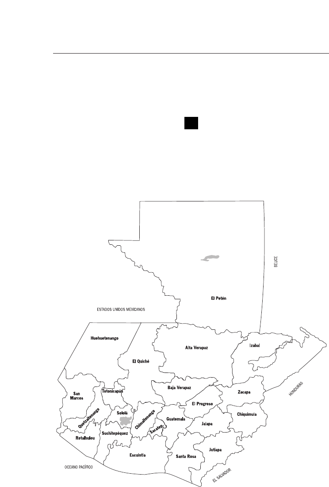
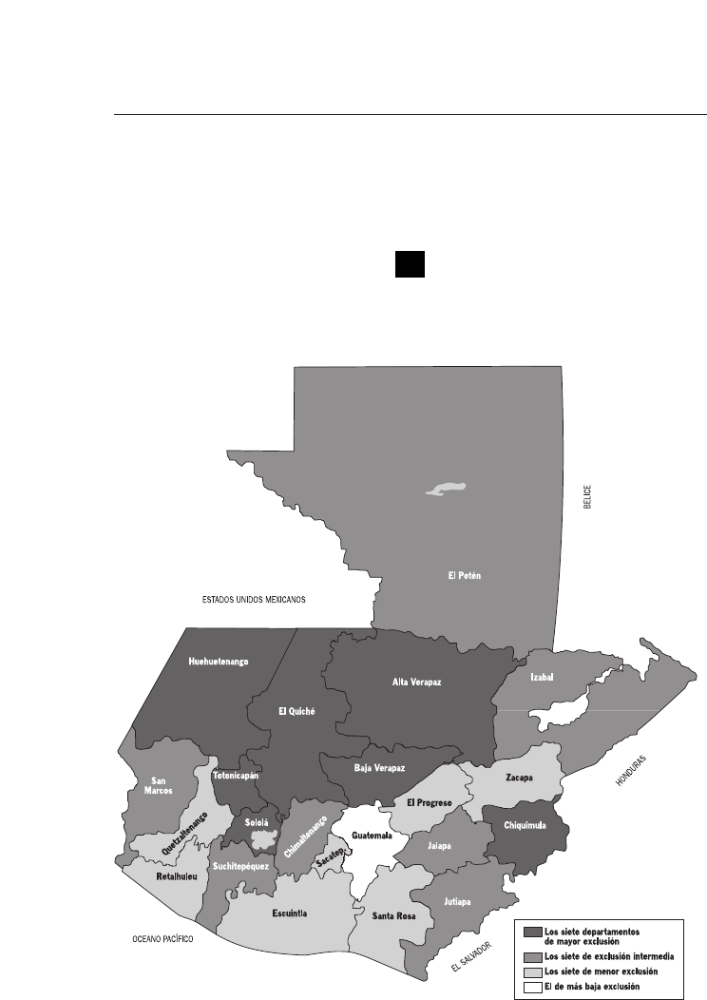
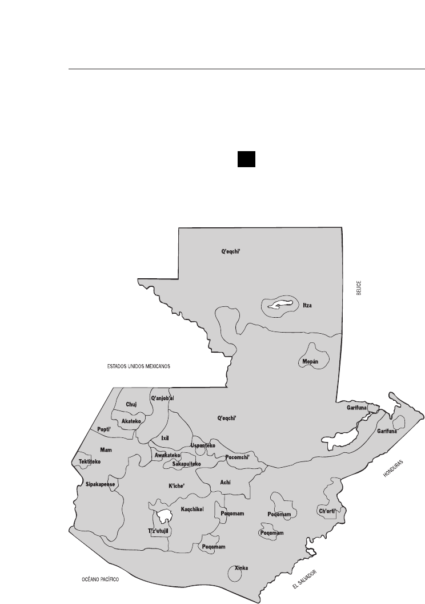
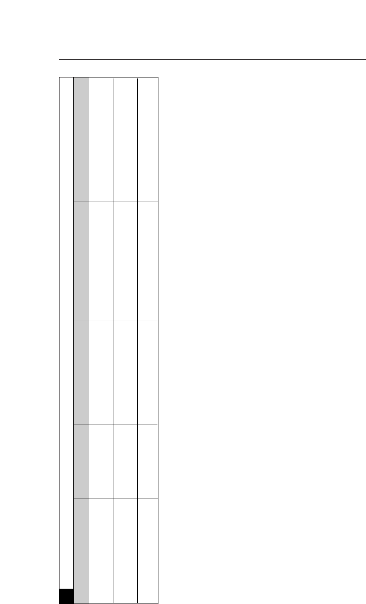
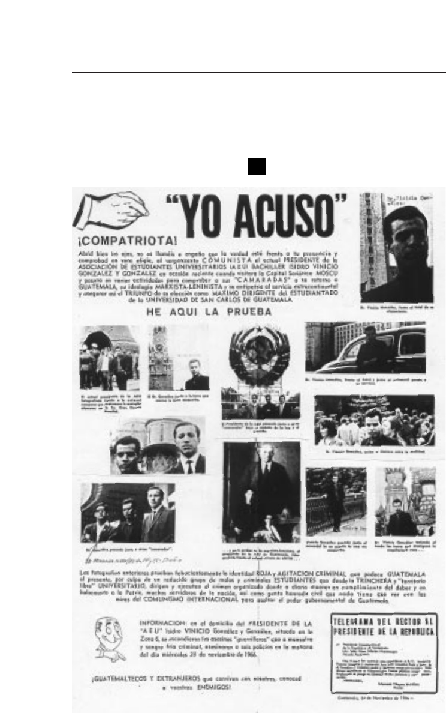
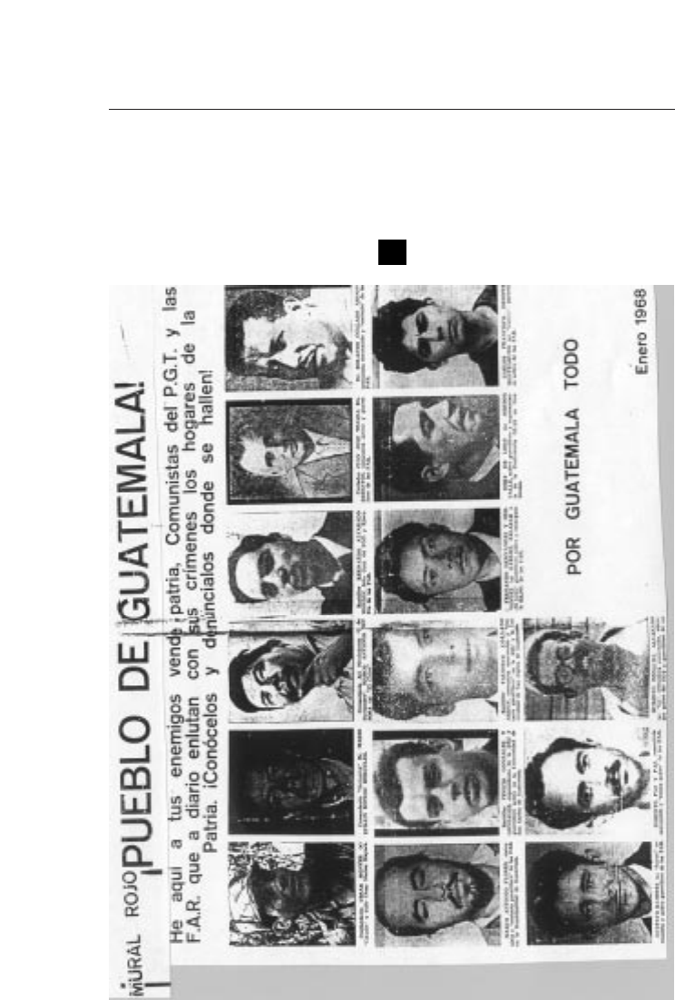

PRÓLOGO 15
AGRADECIMIENTOS 19
MANDATO Y PROCEDIMIENTO
DE TRABAJO 23
I. Integración, instalación
y operación en general
23
Establecimiento de la CEH 23
Integración 27
Estatuto jurídico 27
Instalación 29
Régimen de trabajo y procedimiento
de los Comisionados 30
Financiación 30
Estructura y organización
de las operaciones 31
La Oficina de Apoyo a la CEH 31
Despliegue territorial 32
Repliegue y concentración
del personal en la sede central 34
Divulgación y convocatoria 35
Duración 41
Índice

II. El mandato 42
Fundamentos inspiradores 42
Finalidades 42
Funcionamiento 43
Interpretación y aplicación de aspectos
centrales del mandato de la Comisión 44
III. La colaboración de las Partes 48
Colaboración del Estado
en la instalación y el funcionamiento
de la CEH 49
Colaboración del Estado
con las investigaciones de la CEH 49
Colaboración de la URNG
con las investigaciones de la CEH 51
IV. La investigación de las violaciones
de derechos humanos
y hechos de violencia vinculados
con el enfrentamiento armado interno
51
Sustento principal 51
El esclarecimiento de los casos
de violaciones de derechos humanos
y hechos de violencia vinculados
con el enfrentamiento armado interno 58
La sistematización y análisis
de la información y la elaboración
del Informe final 64
La base de datos 66
Cifras sobre el total de víctimas 71

CAPÍTULO PRIMERO: CAUSAS
Y ORÍGENES DEL ENFRENTAMIENTO
ARMADO INTERNO
77
I. Introducción 77
II. Causas históricas 82
La estructura agraria
y la exclusión económica 83
El racismo, la subordinación
y la exclusión del indígena 86
La dictadura y el autoritarismo 94
III. Antecedentes inmediatos
(1944-1961)
97
La revolución de 1944 98
La reforma agraria 101
La campaña anticomunista 103
El derrocamiento de Arbenz
y la intervención militar de 1954 105
Institucionalización del anticomunismo 108
Inestabilidad política 113
Implementación de la Doctrina
de Seguridad Nacional 117
El levantamiento militar
del 13 de noviembre de 1960 122
IV. Orígenes del enfrentamiento
armado interno (1962-1970)
123
El inicio del enfrentamiento armado 124
Las jornadas de marzo y abril de 1962 125
Constitución y primeras acciones
de las Fuerzas Armadas Rebeldes (FAR) 128
El golpe de Estado
del 30 de marzo de 1963 130
Transición política condicionada:
las elecciones de 1966 134
El movimiento social y el nuevo
papel de la Iglesia Católica 137
Emergencia y expansión
de las fuerzas civiles paramilitares 142
Operaciones y derrota de las FAR 145
V. Reorganización de los actores
del enfrentamiento (1971-1978)
147
Los gobiernos militares de Arana Osorio
y Laugerud García 150
Crecimiento del movimiento social 158
El movimiento indígena 164
Reestructuración del movimiento insurgente 172
Relación de las organizaciones guerrilleras
con la población y la cuestión indígena 178
VI. Agudización de la violencia
y militarización del Estado
(1979-1985)
183
El Gobierno de Lucas García 184
La destrucción del movimiento social 187
La ofensiva guerrillera 191
El Gobierno de Ríos Montt: tierra arrasada
y segunda derrota de la guerrilla 193
El Gobierno de facto de Mejía Víctores 201
Resurgimiento del movimiento social 203
La nueva Constitución 205
VII. La transición política
(1986-1996)
209
El Gobierno de Cerezo Arévalo 211
El nuevo movimiento social 217
El Gobierno de Jorge Serrano Elías 221
El Gobierno de Ramiro de León Carpio 225
Finalización del enfrentamiento 227
APÉNDICES 229
Mapas 229
1. Mapa político de Guatemala 229
2. Mapa de exclusión social 230
3. Mapa de comunidades lingüísticas 231
Materiales de síntesis histórica 232
4. Períodos presidenciales 1900 a 1996 232
5. Cronología del período
del enfrentamiento armado interno 236
6. Decretos de excepción y amnistía 243
7. Guatemala: los actores
y el contexto internacional 1962-1996 257
8. Breve resumen cronológico
del proceso de paz 262
9. Composición étnica de Guatemala 267
10. Políticas de tratamiento jurídico
de los indígenas en Guatemala 268
Documentos históricos 269
11. Movimiento Revolucionario
13 de Noviembre: “Quiénes somos,
qué queremos y por qué luchamos”,
27 de febrero de 1962 269
12. Fuerzas Armadas Rebeldes:
“Proclama de las Fuerzas Armadas Rebeldes”,
30 de noviembre de 1963 272
13. Presidencia de la República:
“Pueblo de Guatemala defiende
tus libertades frente a la agresión
castrocomunista”, 15 de abril de 1962 277
14. Episcopado guatemalteco:
“Carta”, 24 de abril de 1962 279
15. Listado de organizaciones paramilitares
anticomunistas, 1962-1981 281
16. Consejo Anticomunista
de Guatemala (CADEG):
“Alerta Pueblo de Guatemala”,
24 de junio de 1967 282
17. Afiche “Yo acuso”,
24 de noviembre de 1966 284
18. Afiche “Mural Rojo”, enero de 1968 285
19. Texto del Pacto suscrito
entre el Ejército de Guatemala
y el Partido Revolucionario, 1966 286

I. INTRODUCCIÓN
213.
Uno de los principales objetivos de la Comisión para el Esclareci-
miento Histórico es el de contribuir a fomentar una cultura de respeto mu-
tuo y observancia de los Derechos Humanos que restituya la dignidad de
la sociedad guatemalteca y, en particular, la de las víctimas. Ligado a lo an-
terior está en su mandato ofrecer elementos objetivos de juicio de carácter
histórico de la violencia en la sociedad guatemalteca.
214.
En la compleja tarea de comprensión y juicio histórico de Guatemala
y del enfrentamiento armado, una constatación es insoslayable: que ésta es
una sociedad profundamente heterogénea y polarizada en términos econó-
micos, sociales y culturales, sin un proyecto común de nación que reconoz-
ca en los hechos la igualdad de oportunidades para todos sus ciudadanos. A
continuación un brevísimo perfil descriptivo de Guatemala del presente, más
precisamente, alrededor del año de la firma de los Acuerdos de Paz.
16
● Guatemala está dividida en 22 departamentos administrativos. Es un
país básicamente rural (65% de la población total), predominante-
mente agrícola, con una población mayoritariamente Maya y una es-
tructura en la tenencia de la tierra sumamente desigual e inflexible.
El 10% de los guatemaltecos concentra casi la mitad de los ingresos
de toda la población.
● En efecto, Guatemala tiene la peor situación en América Latina res-
pecto a desigualdad en la tenencia de la tierra. El 54% del total de
fincas (menores de 1.4 has.) ocupan sólo el 4% de la superficie total
de tierras agrícolas, mientras que el 2.6% de las fincas más grandes
(en promedio con 195 o más has.) ocupan casi dos tercios de la su-
perficie total.
Capítulo primero: Causas y orígenes
del enfrentamiento armado interno
16 Perfil elaborado con información contenida en Asociación Amigos del País, Historia General de
Guatemala, Tomo IV, “Época Contemporánea: de 1945 a la Actualidad”, Fundación para la Cul-
tura y el Desarrollo, Guatemala, 1997 y Sílvel Elías, Gisela Gellert, Edgar Pape y Edgar Reyes,
Evaluación de la sostenibilidad en Guatemala, FLACSO, Guatemala, 1997.

● Durante la década de los noventa la economía nacional ha crecido
con un promedio anual del 3% al 4% del PIB. La actividad indus-
trial está concentrada en la región metropolitana, aun cuando la
agroindustria se distribuye en forma más amplia en la región de la
Costa Sur, donde también se cultivan y cultivaban en grandes fincas
los productos tradicionales de exportación, hoy el azúcar, antes el al-
godón, y el más importante de ellos, el café. El Altiplano y el Orien-
te concentran la mayor parte de la producción de granos básicos
(maíz y frijol especialmente), típicamente en pequeños terrenos o
microfincas.
● La reaparición en los últimos años del capital externo no se orienta a
la inversión productiva, sino más bien sostiene el crecimiento del co-
mercio y los servicios bancarios. Paralelamente se han consolidado las
opciones económicas perversas que se expresan en el tráfico de dro-
gas y el lavado de dinero.
● En todas las regiones del país, la mayor parte de la Población Econó-
micamente Activa (PEA) corresponde a la agricultura y fluctúa alre-
dedor del 70%, excepto en la región metropolitana que concentra
mayoritariamente a la población laboral de la industria, construc-
ción, comercio, transporte y servicios. Los salarios medios de la agri-
cultura, en 1995, no cubrieron ni el 50% del costo de la canasta bá-
sica de alimentos.
● El empleo se ha ido agravando crecientemente en la medida en que
las actividades productivas han cedido espacio al sector de servicios.
El desempleo total pasó del 30% de la PEA en 1980 al 36% en 1995,
concentrándose el 50% en las actividades agropecuarias. El empleo
formal ha aumentado hasta constituir el 28% de la PEA; crecimien-
to cuya mayor intensidad se registró en el comercio, que incluye la
banca y seguros. El 36% restante de la PEA está constituido por el
llamado sector informal urbano y los campesinos.
● Como resultado, la pobreza extrema se ha incrementado dramática-
mente, la misma que en 1980 alcanzaba al 31.6% de la población,
en 1989 llegaba al 54%, ubicándose fundamentalmente en la región
del Altiplano, la más poblada del país. En el 45% de los hogares del
Altiplano no hay acceso al agua potable, la falta de energía eléctrica
incide en el 64% de los hogares, y una cama hospitalaria sirve para
1,733 habitantes de la región.
● El analfabetismo en la población mayor de 15 años es de 41%, entre
las mujeres es de 56% y en las áreas rurales es de 77%.
● La tasa global de fecundidad es la más elevada en América Latina,
con una clara diferenciación entre la fecundidad rural, 6.2 hijos, y la
urbana, con 3.8 hijos.
78

● Con respecto a las migraciones, en la actualidad siguen vigentes co-
mo principales regiones de expulsión el Altiplano y el Oriente del
país, en tanto el minifundio como medio de subsistencia para la ma-
yoría de sus habitantes se está agotando crecientemente. Hoy, el des-
tino de la migración no es principalmente la ciudad capital como
ocurrió a partir de 1950 hasta fines de los setenta. La migración la-
boral hacia el exterior se incrementó desde los primeros años de los
ochenta, pero creció en forma casi explosiva durante los años recien-
tes. Según cifras del Banco de Guatemala, sólo en los años compren-
didos entre 1989 y 1995 las remesas recibidas aumentaron de 64 a
417 millones de dólares, constituyendo este último año el segundo
aportante de ingreso de divisas, siendo el primero el que proviene de
la exportación de café.
● Se estima que un millón y medio de guatemaltecos permanecen en la
actualidad fuera del país en condición de migrantes legales. Si a él se
agrega la cifra de los migrantes ilegales, por lo menos una quinta par-
te de los guatemaltecos viven fuera de Guatemala.
215.
En Guatemala es evidente un complejo de relaciones asimétricas que
a lo largo de su historia han provocado el surgimiento de conflictos de dis-
tinto tipo. La concentración del poder económico y político, el carácter ra-
cista y discriminatorio de la sociedad frente a la mayoría de la población
que es indígena, y la exclusión económica y social de grandes sectores em-
pobrecidos —mayas y ladinos— se han expresado en el analfabetismo y la
consolidación de comunidades locales aisladas y excluidas de la nación. No
se requiere experticia particular para imaginar —con el perfil precedente—
cómo era la Guatemala de los años cuarenta. Sólo un dato adicional: en el
período 1949-1951 la esperanza de vida al nacer para la población indíge-
na fue de 39 años.
216.
La historia inmediata no es suficiente para explicar el enfrentamien-
to armado cuya gestación es tan antigua como la evolución republicana de
un país con conflictos estructurales. La ausencia de mecanismos institucio-
nales que permitieran canalizar las inquietudes, reivindicaciones y pro-
puestas de los distintos grupos de población definió una cultura política
donde la intolerancia caracterizó la totalidad de los comportamientos so-
ciales y el poder estableció normas excluyentes que definieron en ocasiones
una escasa y, casi de manera permanente, una nula permeabilidad hacia los
procesos de cambio.
217.
En una sociedad como la guatemalteca, frente a la magnitud de la
violencia y lo prolongado del enfrentamiento armado no es posible postu-
lar explicaciones simplistas que sitúen el conflicto armado como una ma-
nifestación directa de la confrontación Este-Oeste y la Guerra Fría. Las
79

causas internas son fundamentales en la explicación del fenómeno aunque
estuvieron condicionadas por influencias externas, sobre todo en sus mo-
mentos claves. De otro modo, no hay manera de entender por qué se pro-
dujeron enfrentamientos armados sólo en algunas sociedades de la región
(Guatemala, El Salvador y Nicaragua), y por qué no en el resto de países
(Honduras, Costa Rica, Belice, Panamá).
218.
El enfrentamiento armado en Guatemala constituyó un fenóme-
no cuya explicación es multicausal, porque no es posible identificar una
sola causa que explique por sí sola el desencadenamiento y la persisten-
cia del mismo en el tiempo. Dentro de la multicausalidad no todos los
factores tienen el mismo peso, ni ejercen la misma influencia a lo largo
del tiempo, ya que su eficiencia explicativa suele derivar del contexto o
conjunto de condiciones dentro del que cada móvil o factor se va ins-
cribiendo.
219.
Si bien en el enfrentamiento armado aparecen como actores visibles
el Ejército y la insurgencia, la investigación histórica realizada por la CEH
ha puesto en evidencia la responsabilidad y participación, bajo diferentes
formas, de los grupos de poder económico, los partidos políticos y los di-
versos sectores de la sociedad civil. El Estado entero con todos sus meca-
nismos y agentes ha estado involucrado. En este sentido cualquier reduc-
cionismo a una lógica de dos actores es no sólo insuficiente sino elusiva,
dado que no explicaría ni la magnitud ni la significación que tuvo la par-
ticipación de los partidos políticos, fuerzas económicas y las iglesias en la
génesis, desarrollo y perpetuación de la violencia, ni la constante moviliza-
ción y diversa participación de sectores sociales que buscaban reivindica-
ciones sociales, económicas y políticas.
220.
Los avatares de la Constitución guatemalteca condensan el rol juga-
do no sólo por el poder legislativo, sino por el conjunto de las institucio-
nes del Estado. La cuarta Junta Militar de 1954 deroga la Constitución de
1945 y el país se rige por el llamado Estatuto Político de la República de
Guatemala, hasta que entra en vigor la nueva Constitución de 1956, for-
mulada bajo un gobierno militar, inicialmente de facto y luego ratificado
por plebiscito, que estará vigente hasta 1963. En estos seis años se sucede-
rán un nuevo golpe y un militar designado como Presidente. De 1963 a
1965 el país se rige por la llamada Carta Fundamental de Gobierno, ins-
trumento también transitorio. En 1965 se promulga una nueva Constitu-
ción, formulada por un gobierno también militar. En 1982 se produce
otro golpe militar el cual deroga la anterior Constitución y emite otro Es-
tatuto Fundamental de Gobierno, el cual regirá hasta 1986 cuando entra
en vigor la actual Constitución Política.
221.
No sólo por los estatutos transitorios, sino a través de los decretos de
excepción, las autoridades locales, municipales y de gobernación, así como
80

toda entidad del Estado eran puestos bajo control y dominio del Ejérci-
to. Incluso en las jurisdicciones en que no regía ningún estado de excep-
ción, el comandante militar ejercía funciones de coordinador de institu-
ciones del Estado, por lo que los planes y acciones eran canalizados a tra-
vés de las respectivas instituciones y reportados al Estado Mayor o de De-
fensa Nacional.
17
222.
No se puede ignorar el peso de los factores ideológicos que han
permanecido a lo largo de la historia guatemalteca y que contribuyeron
a construir el marco de legitimación de la violencia. El discurso ideoló-
gico de la historia oficial, la formación de una cultura racista, las ideolo-
gías del Ejército (honor de la nación, autoridad, jerarquía), el proyecto
de “ladinización” en la historia reciente, el concepto de “guatemaltequi-
dad”, profundizado durante el período de Ríos Montt, en contraposición
a lo “foráneo”, atribuidos a las ideologías de la guerrilla y cualquier gru-
po contestatario, constituyen un persistente entramado sobre el cual se
fue construyendo y consolidando la legitimación no sólo de lo violento
del enfrentamiento, sino del carácter histórico de la violencia en la socie-
dad guatemalteca.
223.
El objetivo de este capítulo del Informe de la CEH es contribuir a
la comprensión de la forma en que los guatemaltecos han construido su
propia historia, única vía para entender y explicarse los orígenes y curso del
prolongado enfrentamiento armado. Se busca demostrar que éste tiene
una determinación histórica profunda, estructural, vinculada al carácter
excluyente, racista, autoritario y centralista que adquirió la economía, la
sociedad y el Estado guatemalteco sobre todo desde fines del siglo pasado.
El sector terrateniente, especialmente el vinculado al cultivo del café, que
a partir de entonces alcanzó una posición hegemónica, impuso sus intere-
ses económicos como los del Estado y la nación guatemalteca.
224.
Desde entonces se privilegió el autoritarismo como mecanismo cen-
tral de las relaciones entre el Estado y la sociedad. Más tarde, la coinciden-
cia histórica entre el fin de la Segunda Guerra Mundial y el derrocamien-
to de la dictadura del general Ubico permitió la apertura de espacios de
participación política, luego de más de un siglo de gobiernos dictatoriales.
Sin embargo, los Estados Unidos, dentro de la visión de la “guerra fría”
consideraron, sobre todo a partir del Gobierno del presidente Arbenz, que
lo que ocurría en Guatemala ponía en peligro la estabilidad y la seguridad
del continente americano, calificándolo como “filocomunista”.
225.
También se demostrará que a partir de ese momento, el Estado gua-
81
17 Ejército de Guatemala, plan de campaña Firmeza 83, Anexo G, párrafo III, D-2, Guatemala,
1983.
temalteco asumió la ideología anticomunista como oficial y justificadora
del golpe de Estado ocurrido en 1954. En el contexto de la “guerra fría” es-
ta justificación sirvió para anatematizar a un movimiento social amplio, di-
verso y dinámico que había principiado a desarrollarse luego de la caída del
general Ubico en 1944.
226.
Se explicará también que la larga experiencia histórica de exclusión
política, económica, social y cultural que ha caracterizado a Guatemala, re-
forzada por los acontecimientos políticos ocurridos en 1954, ha sido el
germen de la debilidad que el Estado ha tenido para legitimarse socialmen-
te. Al no lograr alcanzar una hegemonía ideológica ha recurrido reiterada-
mente a la fuerza para enfrentar los movimientos sociales que a lo largo de
la historia han tratado de promover reivindicaciones y cambios.
227.
También se analizará la formación y doctrina de la guerrilla, que
planteó como opción política la transformación radical del modelo de so-
ciedad vigente, recurriendo para ello a las armas. La influencia de Cuba y
su promoción de la lucha armada, tanto en Guatemala como en el resto de
Latinoamérica, incidieron en este proceso y concepción.
II. CAUSAS HISTÓRICAS
228.
Aludir a las causas históricas de la más trágica época que atravesó la
nación guatemalteca durante su historia implica abordar situaciones que
fueron formándose a lo largo del tiempo y cuyos efectos influyen de una
forma acumulativa en la conducta humana y en la práctica social de esta
sociedad. Dichas causas se tradujeron a lo largo del tiempo en diversas ma-
nifestaciones de violencia: estructural, política, social. La historia guate-
malteca registra, por tales motivos, diversas situaciones permanentes de
violencia que recaen sobre amplios grupos de población. Esta violencia tie-
ne reflejos claros en la vida política, en las relaciones sociales y en los ám-
bitos del trabajo; y sus orígenes son de carácter económico, político, ideo-
lógico, religioso y étnico.
229.
Desde la independencia en 1821 la estructura de las relaciones eco-
nómicas, culturales y sociales ha sido extremadamente jerárquica, sosteni-
da por una enraizada herencia colonial. Esto determinó que el carácter del
Estado que produjo la incipiente República de Guatemala fuese “excluyen-
te”,
18
y manifestase una clara orientación racista. De esa forma, histórica y
82
18 Se entiende por exclusión el proceso histórico de rezago o marginación en la prestación de servi-
cios del Estado, desarrollo del capital humano, acceso a los beneficios sociales como crédito y em-
pleo, así como la presencia de actitudes de discriminación cultural o sexual, consideradas en rela-
ción a los distintos sectores o estratos que integran la sociedad guatemalteca. En el caso del pue-
blo maya este proceso histórico se inició en Guatemala con la conquista.

políticamente la violencia en el país se ha dirigido desde el Estado sobre to-
do en contra de los pobres, los excluidos y los indígenas.
230.
La formación de un Estado democrático se ha visto limitada perma-
nentemente por esos condicionamientos de la historia. Su función ha con-
sistido en mantener y conservar las estructuras de poder basadas en la ex-
plotación y la exclusión de los indígenas y de los mestizos empobrecidos.
Fue necesario esperar los Acuerdos de Paz, concluidos en 1996, ciento se-
tenta y cinco años después de la Independencia, para que el Estado guate-
malteco pudiera perfilarse como un “Estado multiétnico, pluricultural y
multilingüe” y, con ello, responder a una concepción de nación integrado-
ra, respetando la diversidad de sus ciudadanos.
231.
Es difícil disociar la violencia estructural y la violencia política. Lo
ocurrido durante el período del enfrentamiento armado puede resumirse
como un proceso donde el radio de exclusión y la noción de “enemigo in-
terno” se volvieron cada vez más amplios para el Estado. El restringir así ar-
bitrariamente a la ciudadanía y sus derechos democráticos fue justificado
con la Doctrina de Seguridad Nacional (DSN), que se convirtió en Gua-
temala en razón de ser del Ejército y en política de Estado.
232.
El enfrentamiento armado sólo puede explicarse por una combina-
ción de factores internos y externos cuyo peso específico es difícil precisar
cuantitativamente. No obstante, es evidente también que la suma de todas
estas causas de carácter histórico no hubiera sido suficiente por sí misma
para producir la insurgencia ni la violencia que llegó a alcanzar el enfren-
tamiento armado. Nuevos fenómenos sociales y políticos que se produje-
ron hacia fines de los años cincuenta y principios de los sesenta, en una co-
yuntura especial, que hizo pensar a parte de los sectores excluidos de la so-
ciedad en la vía armada como la mejor opción política a su alcance, si no
la única. A continuación se analizan los antecedentes históricos, para en un
siguiente acápite tratar los que se llamará los antecedentes inmediatos.
La estructura agraria y la exclusión económica
233.
La pobreza ha sido una constante en la sociedad guatemalteca, deri-
vada tanto de la distribución desigual de la riqueza económica, en particu-
lar de la tierra, como del muy limitado acceso a la educación. La margina-
ción económica, base o complemento de la exclusión política, afecta a am-
plios segmentos de población rural y urbana. La histórica alta concentra-
ción de los recursos en un número reducido de grandes unidades económi-
cas, agrícolas y no agrícolas, ha producido un patrón distributivo profunda-
mente desigual de los beneficios del crecimiento económico, y ha estrecha-
do las opciones económicas y sociales de amplios sectores de la población.
234.
La inequitativa distribución de la tierra, en una sociedad eminente-
mente agrícola como la guatemalteca, es una de las principales causas de
83
pobreza. Además, ésta condiciona la estratificación social y provoca a su
vez diversas modalidades de exclusión social, que por lo regular van asocia-
dos a la práctica de la violencia. Ese tipo de control sobre la tierra ha ori-
ginado de hecho un sistema de dominio y control sobre las personas, para
cuyo mantenimiento se ha recurrido al uso de la fuerza. Por este conjunto
de condicionantes el Estado, desde la expansión del café en el siglo XIX, se
constituyó en el garante de la oferta y orden laborales para las fincas, lo
cual a su vez contribuyó a la militarización institucionalizada, ya no sólo
del Estado sino de la sociedad.
235.
Algunas cifras estadísticas muestran formas de exclusión que tienen
orígenes remotos pero expresiones recientes. Según el Censo Agropecuario
de 1950, el primero que se considera fiable dentro de las estadísticas mo-
dernas del país, 516 latifundios concentraban más del 40% de la propie-
dad de la tierra, mientras que el 88% de unidades agrícolas (menores de 7
hectáreas) apenas cubrían el 14% de la superficie agrícola.
19
Esto generaba
y consagraba formas anticuadas de tenencia y posesión distintas a la pro-
piedad, el arrendamiento, la aparcería y el colonaje.
20
C
UADRO
1: Distribución de la tierra en Guatemala por categorías de
tamaño de fincas: 1950, 1964, 1979 (expresado en porcentajes)
21
84
19 Dirección General de Estadística, Censo Agropecuario, Agricultura, Vol. I, Guatemala, 1950.
20 Guillermo Paz Cárcamo, Guatemala: Reforma Agraria, 3ª Edición, FLACSO, Guatemala, 1997,
pg. 138.
21 Leopoldo Sandoval, Estructura agraria y nuevo régimen constitucional, ASIES, Guatemala, Cuadro
No. 3, pg. 20.
Tamaño
Número de fincas Superficie
1950 1964 1979 1950 1964 1979
Microfincas (menos de 0.7 has.) 21.30 20.39 31.36 0.77 0.95 1.33
Subfamiliares (0.7 a menos de 7 has.) 67.05 67.04 56.76 13.36 17.66 14.91
Familiares (7 a menos de 44.8 has.) 9.48 10.46 9.31 13.45 18.85 18.68
Multifamiliares medianas
(44.8 a menos de 900 has.) 2.02 2.02 2.48 31.38 36.56 43.48
Multifamiliares grandes
(900 has. y mayores) 0.15 0.09 0.09 40.83 25.99 21.61
Total 100.00 100.00 100.00 99.99 100.01 100.01
236.
Años más tarde, al frustrarse la Reforma Agraria, se recreó el sistema
latiminifundista, en el que el pequeño campesino dependería parcialmen-
te para su subsistencia de un terrateniente que le permitía acceso a un te-
rreno mediante diversos mecanismos o del trabajo temporal migratorio en
las grandes fincas de la costa o boca costa. Según el censo de 1964, el 62%
de la tierra estaba en manos del 2.1% de los propietarios; el 87% de los
campesinos carecían de tierra suficiente que les permitiera sobrevivir.
22
La
CEPAL calculó que en 1980 sólo el 28.9% de los guatemaltecos eran “no
pobres”, es decir, que podían satisfacer sus necesidades básicas. En el área
rural la situación era mucho más alarmante, donde sólo el 16.3% eran no
pobres y de los restantes el 51.5% era extremadamente pobre (no podían
cubrir sus necesidades de alimentos).
23
237.
El porcentaje de calificación de la PEA en 1950, correspondía ape-
nas al 4.9% mientras que para 1970 dicho indicador había alcanzado el
7%. La tasa de alfabetización de 1950 fue del 29.7%. Cuatro décadas
más tarde alcanzaba al 44.9%, pero seguía siendo la más baja de Cen-
troamérica (véase Cuadro 2). Asimismo, era aún menor entre la pobla-
ción indígena guatemalteca. La concentración del ingreso antes de 1950
era tal, que la mitad de la población sólo recibía el 22% del ingreso to-
tal, proporción que en los años ochenta se redujo al 19%. En el otro ex-
tremo, el 25% de la población percibía el 61% del ingreso. La dinámica
marginadora del mercado se reflejaba también en el sector informal: en
1950 el 61% de la PEA se situaba en este sector y en 1980 correspondía
aún al 51% del total.
24
85
22 Ibid.
23 Comisión Económica para América Latina, CEPAL, Satisfacción de necesidades en el istmo centroa-
mericano, 1982.
24 Ibid.
C
UADRO
2: Situación comparativa de Guatemala
con otros países centroamericanos
I
NDICADORES SOCIALES
Guatemala El Salvador Honduras Nicaragua Costa Rica Panamá
Expectativa de vida 59.3 69.6 67.5 68.5 76.8 73.2
Período 1995-99 (años) (1991)
Gasto social en educación 1.8% 2.0% 3.7% 4.3% 5.3% 4.9%
como porcentaje del PIB, 1995 (1994)
Analfabetismo, 1994 44.9% 21.0% 29.0% 23.0% 6.9% 11.2%
(porcentaje) (1993)
Gasto social en salud como 0.9% 1.4% 2.7% 4.2% 7.4% 6.2%
porcentaje del PIB, 1994 (1995)
Fuente: CEPAL 1997,
“Indicadores sociales básicos de la subregión norte de América Latina y el Caribe”.
238.
La ausencia de una política social por parte del Estado acentuó la di-
námica histórica excluyente. Por ejemplo, entre 1960 y 1980, durante el
mayor período de crecimiento económico experimentado en Guatemala,
el gasto social del Estado fue el más bajo de Centroamérica y la carga tri-
butaria fue a su vez la más baja. Ello pone de manifiesto que la labor del
Estado guatemalteco se ha orientado en especial al servicio de los intereses
de reducidos sectores de la población, antes que en beneficio del colectivo
de sus miembros. En los años más recientes esta política no ha cambiado.
Esa debilidad estructural dificultó al Estado conseguir una legitimidad so-
cial más amplia, llevándolo a recurrir cada vez más a la fuerza coactiva de
la violencia para mantener el orden.
239.
La pobreza debe considerarse como un antecedente estructural del
enfrentamiento armado. La miseria por sí misma no produce revoluciones,
pero sí las puede potenciar. Al quedar excluidas de la oferta del mercado y
no existir canales de participación y expresión, la privación que las mayo-
rías experimentan puede convertirse en fuente de descontento colectivo.
En Guatemala el Estado renunció por muchos años a su papel de media-
dor entre intereses sociales y económicos diferentes, abriendo así un vacío
que permitió el enfrentamiento directo entre quienes recibían los benefi-
cios, defensores de ese orden establecido, y quienes estaban obligados a rei-
vindicar sus aspiraciones.
240.
En este contexto, los programas de las organizaciones guerrilleras in-
cluyeron siempre la defensa de los excluidos. Fue en nombre de los pobres
que se planteó el discurso revolucionario. Pero la lucha por los excluidos y
por el mejoramiento de sus condiciones de vida no sólo formó parte del
discurso, sino que convenció y movilizó efectivamente a muchos de ellos.
El racismo, la subordinación y la exclusión del indígena
241.
El racismo, como expresión ideológica de colonización y de subor-
dinación, tiene sus orígenes en la invasión hispana. En esa época se trató
de justificar la opresión y explotación del pueblo maya con base en con-
ceptos raciales y presentar aquel acto de despojo territorial y político como
“una empresa redentora y civilizadora”.
25
Aquel momento marcó profunda-
mente la historia guatemalteca, porque si en un principio los españoles se
consideraron superiores biológica y culturalmente, esa pauta fue seguida
por los criollos y, luego, por los ladinos.
242.
La historia del país muestra que formas de subordinación y exclu-
sión que se originaron con la invasión española se han mantenido hasta la
fecha. El Estado colonial primero y el Estado republicano después —con-
86
25 Guillermo Bonfil Batalla, Utopía y Revolución, compilación de documentos sobre el pensamiento
político contemporáneo de los indios de América Latina, Nueva Imagen, México, 1981, pg.19.
trolado por criollos y, luego, por una élite ladina—, se instituyeron sobre una
sociedad en la que el pueblo maya
26
ha ocupado siempre el último peldaño.
243.
Como parte de un modelo de segregación, el régimen colonial esta-
bleció una separación no sólo social sino geográfica entre peninsulares y
criollos por una parte y los pueblos de indios por otra: cada grupo social
debía residir en lugares distintos. Esta separación se conocía en el derecho
indiano bajo los términos de “la república de los indios y la república de los
españoles”. Para mantener esta segregación, a los peninsulares y criollos se
les prohibió habitar en las reducciones o pueblos de indios, aunque dicha
prohibición fue vulnerada posteriormente.
244.
Desde los inicios de la colonización se definió el estatuto jurídico de
los indígenas. Se les consideró “vasallos libres de la corona”,
27
figura que le
permitía al Rey afirmar su poder sobre esta población, beneficiarse del pa-
go del tributo y neutralizar en parte la voracidad de los colonizadores,
siempre ávidos de beneficiarse del trabajo obligatorio de los indios en las
minas y haciendas. Sin embargo, a pesar de que se les consideró “vasallos
libres”, fueron equiparados a una situación de minoría de edad, para “ga-
rantizar su protección”.
28
245.
La ideología de la “inferioridad de los indios” se construyó con base
en las teorías aristotélicas de la desigualdad natural, para justificar, a poste-
riori, el régimen de subordinación y explotación de los indígenas, así co-
mo los límites que pusieron a sus atribuciones. Bajo esta ideología se decía
que los indios no tenían capacidad de entendimiento suficiente, no podían
gobernarse, ni podían inteligir el derecho natural. Eran los españoles quie-
nes, como hermanos mayores, debían enseñarles las leyes y poner límite a
las costumbres “bárbaras” de los indios.
29
Así, los indígenas fueron “enco-
87
26 La reivindicación de denominarse “pueblo maya”, tomó fuerza hacia mediados de los años ochen-
ta. A lo largo de este Informe, se utiliza una terminología que corresponde a la época histórica a
la que se está refiriendo. Así la mayor parte de las referencias históricas se harán con respecto a “los
indios” o “los pueblos indígenas”. Para el período más reciente se utiliza pueblo maya.
27 Lesley Bird Simpson, Los conquistadores y el indio americano, Ediciones Península, Barcelona,
1970, pg. 17.
28 Como consecuencia de ello, estaban exentos del pago de los impuestos conocidos como “diezmos
y alcabalas” y del servicio militar. Por otra parte, no podían portar armas de fuego, montar a caba-
llo ni ausentarse de sus poblados (salvo para el trabajo en minas o haciendas a través de los “repar-
timientos”), y debían pagar tributo al Rey. Véase: Pilar Sánchez Ochoa, Españoles y pueblo maya: es-
tructura social del Valle de Guatemala en el siglo XVI, Guatemala, 1989.
29 Juan Ginés de Sepúlveda en su tratado sobre “Las causas de la justa guerra contra los indios” apli-
ca la teoría aristotélica de la “servidumbre natural” de algunos hombres a los indios, concluyendo
que son inferiores: “como los niños a los adultos, las mujeres a los varones, los crueles e inhumanos a
los extremadamente mansos. Compara ahora estos dotes de ingenio, magnanimidad, templanza, huma-
nidad y religión con las que tienen esos hombrecillos en los cuales apenas encontrarás vestigios de huma-
nidad, que no sólo no poseen ciencia alguna, sino que ni siquiera conocen letras, ... y tampoco tienen
leyes escritas sino instituciones y costumbres bárbaras...” A ello Bartolomé de las Casas responde con
la Apologética Historia diciendo: “la causa final de escribirla fue conocer todas y tan infinitas naciones
de este vastísimo orbe, infamadas por algunos..., publicando que no eran gentes de buena razón para
gobernarse, carecientes de humana policía y ordenadas repúblicas”. Véase Manuel Marzal, Historia de
la antropología indigenista: México y Perú, Pontificia Universidad Católica del Perú, Lima, 1986,
págs. 190-193.

mendados” a los españoles para su evangelización a cambio de su trabajo.
La “herencia del encomendero” es un símil que recuerda que los rasgos de ar-
bitrariedad y violencia han estado presentes en las más diversas relaciones
sociales respecto de la población indígena.
246.
A los pueblos de indios, la autoridad colonial reconoció autoridades
indígenas y la vigencia de sus “usos y costumbres”, mientras no violaran la
“ley divina y humana”, no perjudicaran los intereses de la corona, no alte-
rasen el orden colonial ni atacaran la religión católica. Los alcaldes de in-
dios tenían funciones jurisdiccionales y de control del orden dentro de los
pueblos de indios y para dirimir litigios entre indios, pero sólo respecto de
casos menores, por la ideología de la inferioridad natural. No podían en-
juiciar casos en los que se estipulaban penas altas, que debían transferirse
al corregidor español.
30
247.
La participación indígena en cabildos y cofradías y el mantenimien-
to del linaje y la nobleza en el interior de las reducciones o pueblos de in-
dios, facilitó la recuperación de ciertos espacios de organización y de una
autonomía política relativa, lo que permitió recrear las bases para la reafir-
mación cultural y el sincretismo a partir de la vida comunitaria.
31
Por otra
parte, como los indígenas siguieron utilizando sus mecanismos propios de
administración de justicia, ello les ayudó a mantener su identidad cultural
y contar con una justicia propia más legítima, menos violenta y mucho
más orientada a la reparación y la reconstrucción de la cohesión social.
248.
Conforme se estructuraban las nuevas formas de sujeción al poder
colonial, las comunidades forjaban las principales expresiones de resisten-
cia al mismo, que fueron: legales, violentas o de resistencia pasiva. Los in-
dígenas aprovecharon las opciones y recursos legales que el sistema colo-
nial les brindaba para oponerse a los abusos de colonizadores y autorida-
des (quejas ante funcionarios, misivas al Rey, solicitudes de tierras y de la
aplicación de las prohibiciones a los ladinos de residir en pueblos de indios,
etc.).
32
249.
Otra forma de resistencia frente al orden colonial se realizó a través
de formas violentas como los motines (conflictos de carácter local) y los le-
vantamientos (de mayor amplitud temporal y geográfica que los motines,
88
30 Ibid., pg. 141.
31 Flavio Rojas Lima, La cofradía indígena, reducto cultural de los mayas de Guatemala, Guatemala,
1988.
32 En el memorial enviado al Rey de España en el año de 1572, suscrito por los alcaldes, regidores y
alguaciles del barrio de Santo Domingo, Santiago de los Caballeros de Guatemala, se expresaba:
“Los alcaldes, regidores y alguaciles, que somos los cobradores de tributo, todos pagamos tributo. Ningu-
no de nosotros recibe salario. Bien vivimos así como esclavos. Si no recogimos el tributo rápidamente,
luego nos meten en la cárcel ... nos hacen trabajar en barrer el Camino Real y las calles de los barrios
españoles. Si no lo hacemos nos meten en la cárcel”. Christopher Lutz y Carol Dakin, Nuestro pesar
nuestra aflicción, Universidad Autónoma de México, México, 1996, pg.17
y que implicaban algunas veces, el intento de sustituir a las autoridades co-
loniales por indígenas).
33
Paralelamente a estas expresiones abiertas de re-
chazo al orden colonial, existieron otras más sutiles en contra de la impo-
sición religiosa y la castellanización obligatoria, como el rescate de parte de
la cultura prohibida, la insistencia en el uso de los idiomas propios y la
práctica de diversas formas de sincretismo (aceptación negociada de deida-
des y ritos).
250.
A finales del siglo XVIII
34
empezó a crecer el número de “gentes de
ascendencia mixta ... conocidos como castas”, que ya desde finales del siglo
XVII empezaron a ser identificados también como “ladinos”.
35
En un ini-
cio, se trató de uniones consideradas ilegítimas, de “hombres y mujeres de fi-
liación ambigua, frutos del amor asimétrico”
36
, discriminados y despreciados
por el orden colonial. Con el tiempo, la población ladina fue creciendo
hasta constituir un grupo social y numéricamente importante. Paralela-
mente también aumentó la estratificación social entre los ladinos. Unos se
fueron incorporando dentro de las esferas del poder económico, mientras
que otros quedaron marginados de dicho poder.
251.
Durante el proceso de la Independencia se importó la ideología li-
beral, por lo que las Constituciones establecieron el derecho a la igualdad
ante la ley, eliminaron la diferencia de los regímenes jurídicos y borraron
la palabra “indio” de sus textos. Con la desaparición de regímenes jurídi-
cos, también se eliminaron los derechos protectores del derecho social in-
diano, como el derecho a la inalienabilidad de las tierras comunales. Ello
posibilitó la expansión de las fincas en perjuicio de las comunidades indí-
genas, que quedaron en las tierras más pobres. Se inauguró un modelo de
asimilación, por el cual se buscaba asimilar o desaparecer a los indígenas
dentro de la naciente nación mestiza.
252.
También se importó el modelo de Estado-Nación, entendiéndose a
la Nación como un solo pueblo, con una sola cultura, un solo idioma, una
sola religión y un solo sistema jurídico. Un decreto del Congreso Consti-
89
33 Algunos historiadores, como Severo Martínez Peláez, se refieren a 60 motines y una sublevación
indígena desde finales del siglo XVII hasta el siglo actual, la mayoría de los cuales ocurrieron a fi-
nales del siglo XVIII y durante la primera mitad del siglo XX. Olga María Aguja identifica 12 mo-
tines y rebeliones entre 1679 y 1820 y Claudia Dary, 16, entre 1553 y 1921. Severo Martínez Pe-
láez, Motines de indios, Guatemala, 1991. Olga María Aguja, Rebeliones del pueblo maya en Guate-
mala, Guatemala, 1976, pg. 147. Claudia Dary, El derecho internacional humanitario y el orden ju-
rídico maya, Guatemala, 1997, pgs. 87-88.
34 A pesar de la prohibición de vivir en pueblos de indios, desde finales del siglo XVIII, muchos pue-
blos se vieron sumidos en un intenso proceso de mestizaje. La penetración ladina generó tensio-
nes porque esos “...intrusos se comportan como verdaderos usurpadores territoriales que a través del
procedimiento de las composiciones, arrebatan las tierras comunales del pueblo maya”. Jean Piel, Saj-
cabajá, muerte y resurrección de un pueblo de Guatemala, México, 1989, pgs. 269-270.
35 Wendy Kramer, George Lovell y Christopher Lutz, La conquista española de Centroamérica, Ma-
drid, 1993, pg. 85.
36 Miguel Alberto Bartolomé, La dinámica social de los mayas de Yucatán, México, 1992, pgs. 123.
tuyente de 1824 ilustra esta aspiración. Decreta que se premiará con los
mejores curatos a los curas que, de acuerdo con las municipalidades, logren
la extinción de los idiomas indígenas.
37
La institucionalidad jurídica que
nació con la Independencia era excluyente del mundo indígena.
253.
En el plano político, los inicios del período independiente se carac-
terizaron por los conflictos que opusieron a conservadores y liberales. Es-
tos dos paradigmas del pensamiento político de la época no representaron
para los pueblos mayas un horizonte esperanzador en lo concerniente al
mejoramiento de sus condiciones reales de existencia.
38
Esto se puso en evi-
dencia en los distintos momentos históricos en los que funcionaron admi-
nistraciones liberales y conservadoras en el país.
39
254.
Durante el siglo XIX —especialmente con la Revolución de 1871—
se experimentó un “paulatino asalto” ladino al poder político local-muni-
cipal, respaldado por la legislación y la fuerza militar del Estado.
40
En ese
proceso, un sector de ladinos llegó a controlar no sólo la tierra, sino mu-
chas veces el comercio y el poder municipal. Ello los convirtió en una fuer-
za social y política importante que presionó en búsqueda del protagonis-
mo que los peninsulares y criollos les habían negado durante la colonia.
41
Esto acentuó el proceso de estratificación social de los ladinos, creando un
grupo con privilegios y otro formado por campesinos pobres ya habitantes
marginales de las ciudades.
255.
Con la Revolución de 1871 se dio mayor fuerza al proyecto de un
Estado nacional, unitario y centralista, y se pusieron en práctica los cam-
bios requeridos para adaptar la economía y la sociedad a las necesidades de
la producción cafetalera.
42
La “reforma agraria liberal” y los mecanismos pa-
ra garantizar la oferta de mano de obra en las plantaciones de café afecta-
90
37 Decreto del Congreso Constituyente del 29 de octubre de 1824. “El Congreso Constituyente del Es-
tado de Guatemala, considerando que debe ser uno el idioma nacional, y que mientras sean tan diver-
sos cuanto escasos é imperfectos los que aun conservan los primeros indígenas, no son iguales ni comu-
nes los medios de ilustrar á los pueblos, ni de perfeccionar la civilización en aquella apreciable porción
del estado, ha tenido á bien decretar y decreta: 1. Los párrocos, de acuerdo con las municipalidades de
los pueblos, procurarán por los medios más análogos, prudentes y eficaces, extinguir el idioma de los pri-
meros indígenas. 2. Probando los mismos párrocos haber puesto en uso con buen éxito, en todo ó en par-
te, cuanto estuvo en sus facultades para el cumplimiento del anterior artículo, se tendrá por el mérito
más relevante en la provisión de curatos”. Tomado de: Jorge Skinner-Klée, Legislación indigenista de
Guatemala, 2a. edición, Instituto Indigenista Interamericano, México, 1995, pg. 20.
38 Así, en 1825, un decreto estableció que las tierras baldías (con excepción de ejidos y pastizales) de-
berían ser distribuidas “...con el fin de aumentar el número de propietarios”. Jean Piel, ob. cit., 1989,
pg. 295. De esta forma se prefiguraban las medidas que la reforma agraria liberal reimplantaría a
partir de 1871.
39 Julio Pinto Soria, Nación, caudillismo y conflicto étnico en Guatemala, Instituto de Investigaciones
Políticas y Sociales, Escuela de Ciencias Políticas, USAC, Guatemala, 1996, pg. 6.
40 Arturo Taracena, Invención criolla, sueño ladino, pesadilla indígena, CIRMA, Guatemala, 1997.
41 A principios del siglo XIX, los ladinos representaban cerca del 37.5% de la población de Centroa-
mérica. Kramer, Lovell y Lutz, ob. cit., pg. 87.
42 Se distribuyeron tierras baldías del Estado y tierras incautadas a la Iglesia, que se vendían en pú-
blica subasta. Muchas de las extensiones que habían sido adjudicadas a los pueblos de indios du-
rante la colonia, también fueron objeto de despojo.

ron sensiblemente a la población indígena, lo que incrementó su subordi-
nación económica. A la vez provocó la desestructuración de sus comuni-
dades, con el resultado de nuevas formas de resistencia, migraciones y re-
beliones.
43
En su defecto, se impuso la dominación del proyecto de los la-
dinos con poder. Quedaron igualmente marginados los indígenas y los la-
dinos pobres.
256.
El proyecto de los liberales consistía en consolidar una cultura na-
cional, que se inspiraba en los principios positivistas del desarrollo mate-
rial y del progreso científico y era tributaria de la “cultura occidental”, a la
cual, supuestamente, pertenecían los criollos y los ladinos. Tal proyecto re-
quería de un Estado centralista y unitario que debía, en principio, homo-
geneizar a toda la población en torno al modelo de dicha cultura. El prin-
cipal instrumento para lograrlo debía ser la educación “obligatoria y gratui-
ta para todos”, según la divisa liberal, cosa que en la práctica no pasó de ser
una mera declaración.
44
En su defecto, impuso la dominación del proyec-
to ladino.
257.
Es decir, el Estado liberal se caracterizó por sus contradicciones. Si
bien en las políticas públicas como en los discursos de los funcionarios de
la época pueden identificarse elementos que impulsaban la asimilación de
los indígenas dentro de una cultura única, siempre triunfaron las políticas
destinadas a mantenerlo como un grupo distinto en el país.
45
Del mismo
modo, la Constitución declaraba a los indígenas iguales ante la ley, pero
normas de menor rango les atribuían menos derechos y más obligaciones
que al resto de los ciudadanos. Esto permitía utilizarlos como mano de
obra estacional para las plantaciones de café y para la construcción de la in-
fraestructura del país. Se decretó, como política pública, la obligatoriedad
del trabajo indígena en las fincas, entre 100 y 150 días al año, bajo control
de los jefes políticos departamentales.
46
Se emitieron leyes para sancionar a
los jornaleros que huían de las fincas y obligarlos a trabajar en los caminos
y obras públicas, como la Ley contra la Vagancia y la Ley de Vialidad.
91
43 Arturo Taracena, Liberalismo y política en Centroamérica 1870-1929, Madrid, 1995, pg. 168.
44 Dos elementos pueden identificarse en las políticas públicas y la visión de pensadores, escritores,
políticos y periodistas guatemaltecos entre 1870 y 1920 en torno a la construcción de esta cultu-
ra nacional: el unionismo o nacionalismo centroamericano y la exaltación del mestizaje que no ex-
cluía la discriminación racista. Steven Palmer, “Racismo intelectual en Costa Rica y Guatemala
(1870-1920)”, Mesoamérica (31) CIRMA, Guatemala, 1996, pg.107.
45 Ello explicaría por qué no se liquidó totalmente la propiedad comunal sobre la tierra y se convir-
tió a los campesinos indígenas en asalariados agrícolas e incluso se concedieron ejidos a algunas
poblaciones rurales y tierras comunales a otras, durante la época liberal.
46 Los pueblos de indígenas debían proporcionar a los dueños de las fincas el número de mozos que
ellos solicitasen. Mediante circular del 3 de noviembre de 1876 se ordena a los jefes políticos depar-
tamentales, en nombre del general Presidente, que los pueblos indígenas proporcionen entre 50 y
100 mozos a las fincas, bajo el argumento de que “la agricultura es el ramo principal de riqueza” y
que “dejando a los agricultores abandonados a sus propios recursos, sin que cuenten con la más eficaz coo-
peración de parte de los agentes de Gobierno, inútiles serán sus esfuerzos por llevar a cabo empresas que
siempre fracasarán ante la negligencia de la clase indígena, que por otra parte es tan propensa al enga-
258.
Fue con la Constitución de 1945, en el marco de la Revolución de
octubre de 1944, que se abolieron las normas que establecían el trabajo
obligatorio de los indígenas en las fincas, y normas afines. Esta Constitu-
ción, por primera vez en la vida republicana, reconoció derechos específicos
a los grupos o comunidades indígenas, incluyendo el derecho a la inaliena-
bilidad de tierras comunales. Señaló como de interés nacional la elaboración
de políticas para su mejoramiento socioeconómico y cultural. Adicional-
mente, la reforma agraria y otras políticas sociales diseñadas durante la lla-
mada Primavera Democrática (1944-1954), buscaban el cambio de la situa-
ción de exclusión socioeconómica de los indígenas y ladinos pobres. Se
inauguró un modelo de integración de los indígenas en la sociedad nacio-
nal que fue seguido formalmente por las Constituciones posteriores.
259.
El movimiento de octubre de 1944 fue un proceso de cambio y de
ampliación de oportunidades, como se analiza más adelante. El golpe de
1954 frustró tempranamente la reforma agraria y otras reformas sociales
que podrían haber cambiado, en gran medida, las bases materiales e ideo-
lógicas de la exclusión, abriendo espacios sociales para indígenas y ladinos
pobres. Por ello, tal movimiento no logró superar todos los obstáculos pa-
ra ensanchar las oportunidades, accesibles por igual, ofrecidas a la pobla-
ción maya y no maya en Guatemala. El peso de una tradición histórica de
subordinación del indígena y el corto período en que las reformas sociales
tuvieron vigencia, limitaron estas expectativas. También frustraron las ex-
pectativas de los ladinos pobres, que podían ver en las nuevas políticas so-
ciales una puerta para cambios.
260.
Con el fin de la Revolución del 44 se reforzaron en la práctica algu-
nas formas de explotación, de trabajo forzoso y despojo de tierras, en con-
tra de indígenas y a favor de grandes propietarios de tierra, quienes eran la-
dinos. La devolución de tierras y la represión de los comités agrarios tam-
bién afectaron a campesinos ladinos pobres que se habían beneficiado con
la Reforma Agraria.
47
Se reforzaron el modelo de exclusión y la ideología
racista, justificatoria de la opresión. En los testimonios recogidos por la
CEH se documentó que durante los sesenta, en ciertos lugares, continua-
ba instituido el trabajo gratuito prestado por el pueblo indígena.
48
Esta
92
ño”. Igualmente la circular indica que “el único medio de mejorar la situación de los indios, sacándolos
del estado de miseria y abyección en que se encuentran, es crearles necesidades que adquirirán por medio
del contacto continuo con la clase ladina, habituándolos también al trabajo para que puedan llenarlas
convirtiendo así en útil y productiva para la industria del país, esa inmensa mayoría de los habitantes de
la república, para la cual no ha principiado todavía a alumbrar la civilización”. Por el Decreto Guber-
nativo 177 del 3 de abril de 1877 se reglamentó el trabajo de los jornaleros de las fincas. Véase Jor-
ge Skinner-Klée, Legislación indigenista de Guatemala, México, 1995, pg. 34.
47 CI 47. Masacre de Cajón del Río. Febrero de 1967. Chiquimula.
CI 74. Desaparición forzada masiva en los parcelamientos de Almolonga y Pinula. Junio de 1980.
Escuintla.
CI 99. Torturas, desapariciones y ejecuciones en San Vicente Pacaya, Escuintla. Enero de 1971.
48 Esto pervive en la memoria colectiva del pueblo maya y se recuerda como trabajo forzoso (como en
el caso de las PAC, cuyos miembros fueron forzados a ejecutar tareas similares, entre otras acciones).
obligación consistía en que cada alcalde auxiliar enviaba de 10 a 15 perso-
nas a trabajar a la cabecera municipal, quienes estaban a disposición tam-
bién de los propietarios y autoridades que necesitaran de sus servicios.
“ ...Tal vez fue en el año sesenta y cuatro, algo así. Habían pues, esos
trabajos en la municipalidad. [Los] que le dicen regidores, traían a
los jóvenes en el pueblo, [y decían:] ‘van a cuidar aquí [el pueblo],
barrer la plaza, la calle y todo’, porque eran toda la gente ladina las
autoridades locales, y los aprovechaban a la gente a mandarlos en ha-
cer leña o hacer zacates para el ganado, para el caballo, todo eso. Una
vez, un compañero de Acción Católica no quería hacer y lo agarraron
para meterlo preso...”
49
261.
Las exclusiones sociales, económicas, políticas y culturales en con-
tra del pueblo maya que se mencionan en este Informe han acarreado más
violencia. Han sido igualmente expresiones de una relación de poder que
ha manejado un grupo hegemónico de forma despótica y arbitraria, sus-
tentada originalmente en la dominación colonial, y justificada por la
ideología de la inferioridad cultural y biológica de los indígenas. La des-
confianza y el desprecio hacia los indígenas se han extendido a los grupos
sociales más desfavorecidos de la sociedad. Los ladinos pobres también su-
fren la marginación de un modelo social excluyente. Sin embargo, la ideo-
logía racista ha funcionado usualmente como una barrera entre ladinos
pobres e indígenas.
262.
Debe recordarse que las pautas de violencia en una sociedad tien-
den a generalizarse. Se copian o se imitan, se difunden por todo el cuer-
po social y se reproducen de una a otra generación. El racismo, conscien-
te o inconsciente, es un factor muy importante en la explicación de mu-
chos de los actos desmedidos de violencia cometidos a lo largo de la his-
toria de Guatemala y del enfrentamiento armado. En la mentalidad racis-
ta, cualquier movilización indígena trae a la mente la imagen atávica del
levantamiento. En este sentido, puede considerarse que el racismo tam-
bién estuvo presente en los momentos más sangrientos del enfrentamien-
to armado, cuando se castigó a la población indígena como si fuese un
enemigo a vencer.
263.
La presencia de esa cultura racista ayuda a explicar, por ejemplo, la
matanza de Patzicía en manos de ladinos en los albores de la revolución de
1944; la persecución antiagrarista por parte de los terratenientes en los ini-
cios del poder anticomunista en 1954; la matanza de Panzós cuando co-
menzó la ofensiva contrainsurgente en 1978 y las masacres cometidas en
93
49 Testimonio colectivo CEH. Zacualpa, Quiché.

el Altiplano occidental durante la década de los ochenta. En las ocasiones
mencionadas, fue en el seno del pueblo maya donde se registró el mayor
número de víctimas de la violencia política. La ideología racista hace más
fácil ignorar estos hechos o no condenarlos con la suficiente indignación,
pues aún persiste en la mentalidad de algunos guatemaltecos la idea de que
la vida del indígena vale menos. Esta noción puede explicar por qué el nú-
mero de víctimas mayas en algunos períodos del enfrentamiento armado
fue mayor y el porqué de los actos de extrema crueldad y los delitos de le-
sa humanidad cometidos en sus comunidades.
264.
Los ladinos pobres también han sido tratados como ciudadanos de
segunda clase. Pobres e indígenas han sufrido la marginación de modelos
sociales construidos desde la matriz de la exclusión y la discriminación. La
violencia política producida durante el enfrentamiento armado ha tendido
a reproducir y retroalimentar dichos modelos.
La dictadura y el autoritarismo
265.
En Guatemala ha existido una larga tradición de dictadura, enten-
dida como el poder total concentrado en un hombre o un pequeño grupo
y que se ejerce sin controles legales o institucionales. Todas las constitucio-
nes formalmente han establecido un modelo republicano de gobierno, con
un sistema democrático de elecciones, alternancia en el poder, control de
poderes. Sin embargo, la experiencia nacional ha estado marcada por for-
mas autoritarias de gobierno ejercidas fundamentalmente por militares,
mediante dictaduras, juntas militares, etc. Guatemala es uno de los países
latinoamericanos que más gobiernos militares y dictaduras ha tenido du-
rante su vida republicana.
266.
La tradición dictatorial ha impreso una huella muy fuerte en la cul-
tura política nacional y ha significado el cierre continuo de espacios de ex-
presión y participación política por parte de la ciudadanía. La forma dic-
tatorial de gobierno, también ha significado el ejercicio indiscriminado e
incontrolado de la violencia por parte del poder. Las demandas o reivindi-
caciones sociales, políticas, económicas y culturales no han tenido como
reacción la respuesta a necesidades sino, usualmente, la represión. La dic-
tadura y las formas autoritarias de gobierno, por lo general, han estado en
función de los intereses de minorías.
267.
Este patrón se asentó desde el mismo acto independentista que tu-
vo como objetivo instalar en el poder a la oligarquía criolla que a princi-
pios del siglo XIX se sentía limitada en sus intereses económicos por la Co-
rona Española, si bien se había formado bajo su sombra. Dicho acto no
pretendía responder a las reivindicaciones indígenas que se expresaron en
las rebeliones del siglo XIX, ni a demandas sociales de otros sectores. El
punto primero del Acta de la Independencia así lo expresa: “1. Que siendo
94

la independencia del Gobierno español la voluntad general del pueblo de Gua-
temala, y sin perjuicio de lo que sobre ella determine el Congreso que debe for-
marse, el Señor Jefe Político lo manda publicar, para prevenir las consecuencias
que serían temibles en el caso de que la proclamase el mismo pueblo”.
268.
Después de la Independencia, durante cincuenta años, desde 1821
hasta 1871, se produjo la alternancia entre liberales y conservadores, co-
rrespondiendo a estos últimos la gestión de gobierno desde 1839 a 1871.
A partir de este último año, los liberales retomaron el poder y lo retuvie-
ron, con un breve interregno, hasta 1944. Ambos sectores políticos repre-
sentaban a las clases dominantes, aunque con matices. “Los conservadores,
aliados de la Iglesia Católica, representaban a la oligarquía más tradicional,
oscurantista y sin ambiciones de modernización. Los liberales eran un sector en
ascenso, más ilustrado y modernista, que propugnaba por una modernización
laicista de aquella sociedad”.
50
269.
La tradición autoritaria fue iniciada por el caudillo conservador, ge-
neral Rafael Carrera (1839-1871), quien acumuló un gran descontento
popular. La Reforma Liberal se dio en ese contexto, con apoyo popular,
dirigida por el general Justo Rufino Barrios (1872-1885). Este caudillo
organizó el Ejército y buscó modernizar la economía, pero no respondió
a las demandas populares sino a los intereses del sector más dinámico de
las clases dominantes. El liberalismo fundó tanto su ideario como su prác-
tica política alrededor del giro de una economía monoexportadora basa-
da en la cochinilla, a una economía basada especialmente en el café. El Es-
tado se puso al servicio de esta economía, no sólo a través de los subsidios
sino sobre todo mediante la movilización forzosa de trabajadores para sa-
tisfacer las necesidades de mano de obra barata para los caficultores y
obras públicas.
270.
Las demandas financieras de la economía cafetalera fueron el marco
para la presencia de capitales extranjeros, primero alemanes y luego nor-
teamericanos. Las necesidades de consolidación de la oligarquía cafetalera
y de las compañías bananeras estadounidenses para “asegurarse el ‘clima
adecuado para la inversión’, dieron como resultado gobiernos liberales totalita-
rios que llenaron la primera mitad del siglo XX en Guatemala”.
51
Manuel Es-
trada Cabrera tomó el poder en 1898 y permaneció en él hasta 1920, es-
tableciendo un verdadero gobierno de terror, reprimiendo todo tipo de
oposición y dictando leyes para garantizar el trabajo forzoso en las planta-
ciones de café. Igualmente, durante su período se consolidó la presencia
extranjera en el país. El descontento popular por el empobrecimiento, la
95
50 Luis Eduardo Martínez de León (Coordinador), Guatemala: entre el dolor y la esperanza, Centro
de Estudios de Guatemala y Universidad de Valencia, Valencia, España, 1995, pgs. 28-29.
51 Ibid., pg. 30.
represión y la entrega de recursos a manos extranjeras generó un movi-
miento que logró su dimisión y encarcelamiento. Le siguieron diez años de
inestabilidad política, hasta que en 1931 se instaló en el poder el general
Jorge Ubico, quien gobernó con “mano de hierro” hasta 1944. Su crueldad
y autoritarismo superaron los de Estrada Cabrera. En vez de políticas so-
ciales, dio respuestas represivas, así, por ejemplo, el Ministerio de Trabajo
fue convertido en 1934 en un departamento adjunto de la Policía Nacio-
nal, y el Código Penal de 1936 otorgó funciones de control policial a los
dueños de fincas.
271.
La herencia autoritaria conformó un cuadro de modelos políticos
que ha marcado la conducta de los guatemaltecos. Para los que gobiernan
ha significado ejercer el poder como un atributo personal o de grupo, que
se materializa en un rechazo a las críticas y una continua práctica de into-
lerancia respecto a la oposición. Respecto de los gobernados, el modelo
autoritario de gobierno, ha tratado de imponer la aceptación pasiva de lo
arbitrario, el servilismo, el silencio cómplice. La tradición de exclusión
política, es la separación forzosa del ciudadano interesado por los asuntos
públicos.
272.
El autoritarismo y las dictaduras fueron la característica central de la
herencia política. En el plano del control social, la población sufrió meca-
nismos de control arbitrario por manos del Ejército
52
y de los sectores do-
minantes. Se dio una suerte de alianza entre una burocracia capitalina y los
finqueros, delegando el Estado en ella el control social de las grandes ma-
sas rurales. El Código Penal de 1936 reconocía funciones policiales a los
dueños de fincas hasta 1973. Asimismo, hasta antes de 1985 las Constitu-
ciones reconocían a los alcaldes funciones de administración de justicia pa-
ra casos menores. Ello, si bien permitió que en las comunidades indígenas
los alcaldes auxiliares mantuviesen su propio sistema de control, en las ca-
beceras municipales, los alcaldes, con base en tal potestad actuaban en fun-
ción de las demandas de control de los poderosos. De su parte, el modelo
judicial configurado en tiempos de la Colonia se había mantenido casi in-
tacto. Esto ha significado la continuidad de una práctica efectiva del poder
donde el sistema jurídico encubriría la sociedad de privilegios y un orden
violento que garantizaba la explotación y la sumisión de los ciudadanos.
96
52 “El liberalismo sometió a los indígenas a la violencia institucionalizada de un Estado policíaco y de-
mostró ser más eficiente que los gobiernos anteriores en la represión de las periódicas rebeliones de los
pueblos del Altiplano. Como consecuencia, según señala un historiador, el Ejército guatemalteco, que se
constituyó bajo el Estado liberal, llegó a considerar a Guatemala rural como su propiedad privada y se
complacía de su posición dominante allí ... [y consideraba una amenaza] cualquier intento de alterar
esa posición y la organización de campesinos o trabajadores rurales en asociaciones independientes”. Jim
Handy, “Resurgent Democracy and the Guatemalan Military”, en Journal of Latin American Stu-
dies, Vol. 18, noviembre pgs. 383-408, y Susanne Jonas, La batalla por Guatemala, FLACSO, Edi-
torial Nueva Sociedad, Guatemala, 1994, pg. 44.

Este modelo de control social, ha sido parte del modelo autoritario de so-
ciedad al que se ha sometido a la ciudadanía.
273.
En el marco de esta tradición autoritaria y dictatorial, los diez años
de la denominada Primavera Democrática representaron la posibilidad de
vías legales para hacer cambios y la apertura de espacios de participación
social. Respuestas sociales a demandas sociales, como los derechos otorga-
dos por la Constitución de 1945 a la ciudadanía en general y a los grupos
indígenas por primera vez en la República, el Código de Trabajo de 1947,
la Reforma Agraria de 1952, y otras reformas sociales, posibilitaron la for-
mación de organizaciones y movimientos sociales en el campo (como los
comités agrarios) y en la ciudad (sindicatos, organizaciones profesionales,
estudiantiles, partidos políticos, etc.), así como canales políticos para la
participación.
274.
Luego de la experiencia democrática, frustrada por el golpe de 1954,
el grado de violencia que se alcanzó posteriormente superó incluso el de los
largos años de exclusiones. El bloqueo sistemático de la participación po-
lítica se agigantó con el miedo al comunismo a partir de 1954, y con las
consiguientes amenazas de la lucha armada, que sirvieron para justificar las
peores formas de represión y de terrorismo de Estado. Aparecieron enton-
ces nuevos planteamientos de autoritarismo de un orden que utilizó la vio-
lencia ilimitada contra la oposición. En nombre del anticomunismo se vio-
laron los derechos humanos de modo sistemático, masivo y prolongado.
275.
En síntesis, el carácter antidemocrático de la tradición política gua-
temalteca es resultado de una concentración de relaciones sociales violen-
tas, los efectos de la estructura económica de la hacienda —base de exclu-
siones múltiples—, la persistencia de valores que giran en torno al racismo
y la falta de espacios de participación social y política. A ello se suma la
existencia de un sistema judicial débil y parcial, que no garantiza el cum-
plimiento de la ley ni el respeto de los derechos ciudadanos, lo que propi-
cia los conflictos.
III. ANTECEDENTES INMEDIATOS (1944-1961)
276.
Los antecedentes más próximos del enfrentamiento documentan la
forma en que se acumularon las tensiones políticas e ideológicas desde la
década de los cuarenta y principios de los años cincuenta, incluyendo la
eclosión renovadora de 1944 y su rápida radicalización.
277.
El enfrentamiento armado se desencadenó en Guatemala debido a
una suma de fenómenos internos como la caída del arbencismo, el feroz
anticomunismo de importantes sectores de la población y de la Iglesia Ca-
tólica, y la alianza defensiva de militares, empresarios y otros segmentos de
97

la población temerosos del cambio social. Asimismo, intervinieron facto-
res externos como la guerra fría y la influencia de la triunfante revolución
cubana al alentar en todo Latinoamérica el naciente movimiento guerrille-
ro. Este capítulo está dedicado a un recuento breve de los procesos men-
cionados.
La revolución de 1944
278.
La larga tradición autoritaria que ha caracterizado a la historia polí-
tica de Guatemala se interrumpió el 25 de junio de 1944 con grandes ma-
nifestaciones pacíficas que condujeron a la caída del general Jorge Ubico,
el último dictador “liberal” que se había mantenido en el poder desde
1933. El triunfo del movimiento cívico y militar del 20 de octubre abrió
una nueva opción democrática. La conducción política de este movimien-
to correspondió a sectores profesionales e intelectuales ladinos, y como tal,
de la clase media urbana. Estos sectores, que habían ido cobrando fuerza
durante la época de la dictadura, tuvieron oportunidad de expresarse con
los nuevos idearios antifascistas y democráticos provenientes del contexto
internacional. Procesos similares se produjeron en otros países de América
Latina.
279.
A inicios de 1944 los revolucionarios constituían un conglomerado
social heterogéneo y numeroso. Los grupos más influyentes de la sociedad,
incluyendo importantes sectores del empresariado, se manifestaron contra
la dictadura, compartiendo todos ellos una postura crítica frente al libera-
lismo, que se había convertido en la ideología oficial de gobierno los últi-
mos setenta años. La vocación democrática y antidictatorial de los diferen-
tes sectores no fue suficiente: pronto surgieron diferencias políticas e ideo-
lógicas que al desarrollarse dividieron a la sociedad. Al igual que en el res-
to de Centroamérica el nacionalismo democrático tuvo en Guatemala un
carácter plural, pero de por sí ambiguo.
280.
Entre 1944 y 1954 se produjeron reformas intensas, que crearon
oportunidades de desarrollo social y de participación política. En 1945 se
formuló una nueva Constitución, se amplió el régimen de partidos y se
emitió una nueva ley electoral. La educación pública recibió un fuerte im-
pulso, especialmente en el interior del país, y la Universidad de San Car-
los de Guatemala obtuvo su autonomía. Se estableció el Instituto Guate-
malteco de Seguridad Social y se emitió el Código de Trabajo. Al mismo
tiempo se promovió una reforma agraria que buscaba la modernización y
diversificación del sector agropecuario, así como la inclusión del sector
campesino como un actor fundamental del desarrollo, estimulándose al
mismo tiempo el desarrollo industrial y la ampliación numérica y orgáni-
ca de los asalariados urbanos.
281.
Muy pronto, el libre juego electoral, la representación proporcional
98
y el autogobierno escolar constituyeron un nuevo aprendizaje para toda
una generación de guatemaltecos. Fue el inicio de una verdadera renova-
ción de la vida social, política y cultural de la sociedad, y una negación
crítica frente a las herencias del pasado liberal. La creación del Partido
Guatemalteco del Trabajo (PGT) en 1949 y su posterior legalización sig-
nificó profundizar en la ampliación del espectro político al incluir un par-
tido comunista.
282.
Entre las reformas que se pusieron en marcha y se trataron de con-
solidar con la nueva Constitución, la reestructuración del Ejército tuvo
gran trascendencia. La suspensión del generalato, decretada desde los pri-
meros momentos del triunfo del movimiento revolucionario, simbolizó es-
ta transformación, que se completó con una inquietud por modernizar,
profesionalizar e institucionalizar el Ejército.
53
Por primera vez en la histo-
ria del país una Constitución concedió todo un capítulo y 13 artículos al
tema del Ejército, asentando un modelo que sería retomado en las Cons-
tituciones posteriores.
283.
La norma constitucional estableció una reorganización del Ejército
que resultó compleja y no siempre operativa: buscaba confirmar la auto-
nomía funcional que por primera vez se le confería. Creó el Consejo Su-
perior de la Defensa Nacional, órgano de consulta y colegiado, constitui-
do por 15 miembros, algunos por elección y dentro de los cuales no se in-
cluía al Presidente de la República, a pesar de considerársele comandante
en jefe del Ejército.
284.
Los cargos superiores y operativos del Ejército eran: jefe del Estado
Mayor del Ejército (designado por el Congreso de la República a propues-
ta del Consejo Superior de la Defensa Nacional) y Ministro de la Defensa
Nacional. Entre ambos se generaron no pocas rivalidades durante los diez
años de vigencia de la Constitución de 1945, como las que opusieron al
mayor Francisco Javier Arana, jefe del Ejército y líder de la derecha hasta
su asesinato en 1949, al coronel Jacobo Arbenz Guzmán, ministro de la
Defensa en ese tiempo.
99
53 La modernización comprende las acciones destinadas a actualizar y poner en condiciones de fun-
cionamiento óptimo al Ejército, tomando en cuenta el contexto nacional, regional y mundial en
el que las mismas se desempeñan. La profesionalización se refiere a las necesidades de desarrollo
académico de los recursos humanos de la Institución Armada, para que corresponda a los fines de
su modernización. En algunos enfoques, la modernización incluye también la profesionalización.
No obstante, es importante considerar que un ejército altamente profesionalizado debe estar en ca-
pacidad de comprender sus objetivos y funciones en el conjunto de instituciones del Estado, en
relación con los intereses nacionales y el poder civil. Puede resistir mejor los intentos para involu-
crarlo en actividades políticas distintas a sus objetivos institucionales (como sucedió durante la
época de la guerra fría y del enfrentamiento armado en Guatemala). Por su parte, los fines de ins-
titucionalización del Ejército completan los objetivos de permanencia, estabilidad, reconocimien-
to y especialización que éstas requieren a través de bases legales que definan sus funciones, estruc-
tura, régimen interno, escalafón, responsabilidades, etc., y minimicen la intromisión ajena a su
condición como tal (según ocurrió con el Ejército de Guatemala durante las “dictaduras liberales”
ya indicadas, cuando estuvo sujeto a los caprichos de los gobernantes).

285.
Algunas interpretaciones han insistido en que fueron precisamente
el status jurídico y la estructura organizativa que la Constitución de 1945
reconoció al Ejército los factores que determinaron que la oficialidad en-
trara de lleno en el juego político. En este sentido, las votaciones para in-
tegrar el Consejo Superior de la Defensa Nacional y el propio carácter de
este órgano, impulsaban la discusión para la toma de decisiones sobre la
política militar que debía adoptar el Ejército de Guatemala y lo convertían
en un estamento deliberativo.
54
286.
Aun cuando la nueva regulación pudo haber contribuido al incre-
mento del peso político del Ejército en el país, los cambios que se produ-
jeron en la sociedad guatemalteca y en el contexto internacional durante
aquellos años generaron entre muchos oficiales la sensación de su peso po-
lítico frente a la debilidad del Estado y del resto de organizaciones parti-
distas y sociales. Las prerrogativas y beneficios económicos que recibieron
los mandos militares por parte de los gobiernos revolucionarios, así como
las lisonjas y el interés de ciertos dirigentes políticos por acercarlos a sus po-
siciones, acrecentaron las ambiciones de algunos para acercarse al poder
político o al poder económico, lo que produjo divisiones y conflictos al in-
terior del Ejército.
287.
Las tensiones políticas y la polarización ideológica se tradujeron a lo
largo del decenio democrático en varios intentos de derrocamientos con-
tra el Gobierno. Durante los seis años de la administración de Juan José
Arévalo se registraron 32 complós para derribarlo, de los cuales el de ma-
yor impacto fue el de julio de 1949 que terminó con la muerte del mayor
Arana.
55
Posteriormente, con la toma de posesión del coronel Arbenz Guz-
mán en 1951, se exacerbaron estas tensiones.
288.
Las reformas que estos gobiernos llevaron a cabo, destacadamente la
agraria, acrecentaron la polarización ideológica y la lucha política interna,
en un marco internacional cada vez más cargado por las tensiones del en-
frentamiento Este-Oeste. En este contexto también se incrementó la divi-
sión y la radicalización de los revolucionarios, estimulada por su heteroge-
neidad político-social. Algunas de las transformaciones impulsadas por la
revolución de octubre del 44 no tuvieron ocasión de consolidarse y produ-
cir efectos perdurables.
289.
Una de ellas correspondió a los intentos de cambiar las estructuras
judiciales arcaicas, consolidadas por el mantenimiento de las viejas prácti-
100
54 José Luis Cruz Salazar, “El Ejército como una fuerza social”, en Democracia, gobernabilidad y so-
ciedad política 3-4, ASIES, Guatemala, 1993, pgs. 135-142. Héctor Alejandro Gramajo, De la gue-
rra... a la guerra: La difícil transición política en Guatemala, Fondo de Cultura Editorial, Guatema-
la, 1995, pg. 78, y Alfonso Yurrita, “El Ejército”, documento mimeografiado, sin fecha, pg. 109.
55 Tomás Sierra Roldán, Diálogos con el coronel Monzón, Editorial San Antonio, Guatemala, 1958,
pg. 43. Guillermo Flores Avendaño, Memorias I, Editorial del Ejército, Guatemala, 1974, pg. 337.
cas de manipulación, sumisión y formalismo. La rápida incorporación de
nuevos derechos, la aparición de un Parlamento legítimo y la dinámica re-
volucionaria generaron tensión en un sistema judicial, quizás dispuesto a
acompañar el proceso pero que se encontraba atrapado en los vicios de su
estructura colonial. La creación del Código de Trabajo fue un logro evi-
dente, pero también mostró que el sistema judicial tenía problemas para
ajustarse a la rapidez del cambio. Esta dificultad se hizo más evidente y más
grave a raíz de los conflictos generados por la reforma agraria, que impli-
caba afectar intereses económicos, sociales y políticos de envergadura.
La reforma agraria
290.
La política agraria buscaba modificar el régimen de tenencia de la
tierra, considerado como la columna vertebral del poder oligárquico, sos-
tén de las sucesivas dictaduras y un factor de atraso nacional. Cuando se
realizaron los censos estadísticos panamericanos de 1950 y se conocieron
sus resultados, las presunciones sobre el grado de concentración de la pro-
piedad de la tierra y las abismales desigualdades en el campo se convirtie-
ron en certezas. En ese año el Banco Internacional de Reconstrucción y Fo-
mento (BIRF) elaboró un estudio en el que criticaba acerbamente las de-
sigualdades de la vida guatemalteca y recomendaba adoptar una serie de
políticas; entre ellas, un cambio en la tenencia de la tierra para estimular la
agricultura campesina y ampliar el mercado interno.
291.
En 1953 en su discurso ante el Congreso de la República, el presi-
dente Arbenz Guzmán se refirió a la Ley de Reforma Agraria como el co-
mienzo de la transformación económica de Guatemala. “Es —dijo— la
fruta más preciosa de la Revolución y la base fundamental de la nación como
un país nuevo”. La Ley de Reforma Agraria promovía la modernización del
agro y la disolución de las formas de trabajo arcaicas prevalecientes en el
campo guatemalteco:
“Decreto 900
Artículo 1: La Reforma Agraria ... tiene por objeto liquidar la pro-
piedad feudal en el campo ... para desarrollar la forma de explotación
y métodos capitalistas de producción en la agricultura, y preparar el
camino para la industrialización de Guatemala. Artículo 2: Quedan
abolidas todas las formas de servidumbre y esclavitud, y por consi-
guiente prohibidas las prestaciones personales gratuitas de los campe-
sinos, mozos colonos y trabajadores agrícolas, el pago en trabajo del
arrendamiento de la tierra y los repartimientos indígenas, cualquiera
sea la forma en que subsistan.”
56
101
56 Congreso de la República, Recopilación de leyes, Tomo 73, Guatemala, 1966.
292.
Las fincas menores de 90 hectáreas no estaban afectadas por la ley,
ni las de menos de 200 hectáreas que estuviesen cultivadas, al menos en sus
dos terceras partes. Tampoco las grandes propiedades en producción, cual-
quiera fuera su tamaño; pero al prohibirse el colonato y la aparcería, se in-
tentaba obligar a los terratenientes a invertir en salarios.
293.
Durante los 18 meses de aplicación de la reforma agraria, se repar-
tieron entre 603 y 615 hectáreas de tierras particulares (10% del total de
dichas propiedades); 280 mil hectáreas de tierras nacionales; y se concedie-
ron créditos para apoyar la producción. A la compañía bananera United
Fruit Company (UFCO), que mantenía sin cultivar el 85% de sus 220 mil
hectáreas, se le expropiaron 156 mil hectáreas; es decir el 64% de su super-
ficie.
57
Los terratenientes afectados recibieron un pago en bonos del Esta-
do, según el valor fiscal de la propiedad reportado durante los tres años an-
teriores (en general cifras drásticamente subvaluadas) con una tasa anual de
interés del 3%.
294.
Para 1954 se habían beneficiado más de 138 mil familias campesi-
nas, de las cuales la inmensa mayoría eran indígenas.
58
Esto podía traducir-
se en un estimado de medio millón de personas, para un país que contaba
con tres millones de habitantes. Más de la mitad de los beneficiarios obtu-
vieron también créditos agrícolas. Así se explica en parte el impacto del
programa de reforma agraria entre los campesinos.
295.
La aplicación del referido programa representó un fuerte desafío a
la estructura de poder tradicional en el campo, no sólo por la reestructu-
ración de la tenencia de la tierra, sino porque la Ley de Reforma Agraria
impulsó la organización de Comités Agrarios Locales en cada finca, favo-
reciendo que se crearan estructuras de poder local alternativo. La reforma
se canalizó a través de dichos comités, cuyo número hasta diciembre de
1953 era de 1,496.
59
Muchos estuvieron influidos por el PGT, aunque ad-
quirieron dinámicas propias en los ámbitos locales. Algunos se constitu-
yeron en foros activos de participación democrática en una época carac-
terizada por una gran efervescencia política; otros se derivaron en espacios
de conflicto y corrupción.
296.
A pesar de que la intención de los promotores de la Ley de Reforma
Agraria fue la de enajenar únicamente las tierras ociosas de las grandes fin-
102
57 Guillermo Paz Cárcamo, Guatemala: Reforma Agraria, 3ª. Edición, FLACSO, Guatemala, 1997;
Jim Handy, Revolution in the Countryside: Rural Conflict and Agrarian Reform in Guatemala, 1944-
1954, University of North Carolina Press, 1994, pg. 171.
58 José Luis Paredes Moreira, Reforma Agraria: una experiencia en Guatemala, Editorial Universitaria,
Guatemala, 1963, pg. 57.
59 Los comités estaban conformados por cinco miembros: uno nombrado por la Gobernación De-
partamental, otro por la Municipalidad y miembros nombrados por la Confederación Nacional
de Trabajadores de Guatemala (CGTG) y la Confederación Nacional de Campesinos (CNC) o
por elección popular. Guillermo Paz Cárcamo, ob. cit., pgs.148-149.

cas, en muchas regiones las comunidades intentaron resolver viejos conflic-
tos locales a través de ella, como los problemas que planteaban las tierras
comunales. Uno de esos problemas tuvo lugar en el municipio de Cantel,
Quetzaltenango, donde se solicitó la devolución de tierras adjudicadas por
Justo Rufino Barrios en 1877 a una comunidad ladina y que los indígenas
reclamaban como propias. La resolución de la Comisión Agraria Departa-
mental en 1953 favoreció a estos últimos.
60
Asimismo, en otras ocasiones
se produjeron denuncias y ocupaciones de tierras no afectables, así como
casos de irregularidades en la distribución de las parcelas.
297.
Episodios de esta índole fueron consecuencia, entre otras razones, de
la deficiente información que existía sobre la ley, de su errónea compren-
sión o interpretación por parte del campesinado, de la falta de experiencia
de la incipiente organización campesina y de la politización del proceso en
su conjunto. Ello contribuyó a “crear tensiones entre los mismos revoluciona-
rios, en la medida en que las acciones del Gobierno no satisfacían las expecta-
tivas de las organizaciones comunitarias”.
61
298.
A las tensiones que desató la reforma agraria deben sumarse los pro-
blemas provenientes de un sistema judicial incapaz de aplicar la ley y de
resolver los conflictos derivados de su aplicación. Esa ineficacia ayudó, en
gran medida, a crear más tensiones entre los sectores que impulsaban la
reforma y las comunidades donde ésta se aplicaba. Los conflictos entre los
diferentes sectores llegaron a su punto culminante en un enfrentamiento
entre el Ejecutivo y la Corte Suprema de Justicia. La confrontación se
produjo debido a un recurso de amparo que finalmente aceptó la Corte
Suprema de Justicia y que llevó a la destitución de ésta por parte del Con-
greso. Este incidente aumentó las dudas sobre la legitimidad de la refor-
ma agraria.
299.
Las transformaciones y conflictos en el agro generaron importantes
temores entre los grandes propietarios, así como en determinados sectores
medios urbanos y rurales, pues al sentir amenazados sus intereses se unie-
ron a la campaña que identificaba los cambios sociales con una orientación
político-ideológica del régimen hacia el comunismo.
La campaña anticomunista
300.
El anticomunismo tuvo un origen externo, pero en Guatemala asu-
mió características particulares. Ya durante el régimen del general Ubico,
como respuesta a la insurrección campesina encabezada por los comunis-
tas de 1932, los débiles grupos de ideología marxista y anarquista fueron
reprimidos y sus dirigentes encarcelados durante trece años. Sin embargo,
103
60 La resolución fue revocada durante el Gobierno de Carlos Castillo Armas.
61 Guillermo Paz Cárcamo, ob. cit., pgs. 147-149.

estas corrientes adquirieron más fuerza durante los diez años de gobiernos
revolucionarios (1944-1954), identificadas por la oposición y los Estados
Unidos como de inspiración soviética. Dicha política se asoció, en un pri-
mer momento, con los programas de alfabetización, con la organización
sindical y con las huelgas obreras, hasta entonces desconocidas en el país
por los efectos del orden ubiquista. Posteriormente, se le asoció a la refor-
ma agraria y, sobre todo, a la movilización campesina. A la vez, el profun-
do temor manifestado en el anticomunismo estuvo claramente estimulado
por los excesos de la retórica izquierdista de la época.
301.
El anticomunismo ya no funcionó sólo como una ideología para en-
frentar al Gobierno, sino como el instrumento movilizador para oponerse
a toda política de cambio impulsada por éste. De esa forma, se convirtió
en la justificación utilizada por sectores militares, políticos, civiles, la jerar-
quía de la Iglesia Católica, los medios de comunicación, las organizaciones
del sector privado y numerosos grupos ciudadanos, para alterar el orden
constitucional. A estas contradicciones se unió la legalización del PGT, la
relación de amistad de Arbenz con varios miembros de la comisión políti-
ca de este partido y la participación de algunos de sus miembros en el Go-
bierno. Esto agregó nuevos elementos de denuncia para la oposición de de-
recha y la Iglesia Católica que esgrimían cada vez más abiertamente su pos-
tura anticomunista.
302.
La reestructuración del papel del Ejército contenida en la Constitu-
ción del 45 significó, como ya se vio, un incremento de su participación
directa en la vida política del país. De ser un estamento subordinado por
tradición a las dictaduras se convirtió en un núcleo de poder. Las medidas
de profesionalización, modernización e institucionalización puestas en
practica en aquellos años contribuyeron a ese cambio. La relativa autono-
mía de que gozó la Institución Armada determinó, junto a la debilidad de
las instituciones del país, que se acrecentara su peso político antes y duran-
te la crisis de 1954.
303.
En ese clima de fuerte polarización ideológica y política que vivió
Guatemala, la Iglesia Católica surgió como un actor de primer orden, y su
influencia fue aumentando hasta apoyar clara y enérgicamente el compló
anticomunista contra Arbenz. La carta pastoral del 4 de abril de 1954, So-
bre los avances del comunismo en Guatemala, es una abierta apelación reli-
giosa a la rebelión. Se aprobó además que el Cristo de Esquipulas, muy ve-
nerado por los católicos guatemaltecos, hiciera un recorrido por el país en
señal de alerta sobre el sentido anticristiano del momento. La Iglesia Ca-
tólica asumió así el liderazgo nacional de la cruzada contra el comunismo.
“La gracia de Dios, que todo lo puede, ha despertado en Guatemala,
una cruzada sincera contra el comunismo, que encabezan los mismos
104
obreros y campesinos ... Todo católico debe luchar contra el comunis-
mo por su propia condición de católico...”
62
304.
Por otra parte, la profunda influencia de la política norteamericana,
enfrentada desde 1948 al bloque soviético en el marco de la guerra fría, re-
sultó adversa a los cambios que había impulsado el Gobierno arbencista,
al que aisló y situó como una amenaza para el “mundo libre”. Para ese pe-
ríodo el Gobierno de los Estados Unidos tenía la certidumbre que Guate-
mala estaba sucumbiendo a la influencia comunista, por lo que a partir de
1951 aumentó la presión diplomática estadounidense contra el Gobierno
de Arbenz en el seno de la ONU, la OEA y la ODECA.
El derrocamiento de Arbenz
y la intervención militar de 1954
305.
El papel que los Estados Unidos jugó en todo el proceso ha sido des-
crito por numerosos autores, entre ellos Nicholas Cullather, quien trabajó
para la Agencia Central de Inteligencia (CIA).
63
Cullather describió en for-
ma detallada cómo los Estados Unidos llevó a cabo su objetivo de derro-
car al Gobierno de Arbenz usando tácticas de desinformación, operaciones
psicológicas, y hasta la elaboración de una lista de funcionarios que debían
ser asesinados.
64
Se emplearon acciones como las siguientes:
“...Las técnicas más comunes a utilizar son rumores, cartas anónimas,
telegramas y llamadas telefónicas, además de símbolos visibles. Las lla-
madas telefónicas deberían ser hechas preferiblemente temprano en la
mañana, es decir entre la 1:00 y las 4:00 de la mañana, cuando la
resistencia psicológica de un hombre está usualmente a su más bajo ni-
vel. Los símbolos visibles pueden incluir un ataúd o una soga de ahor-
cado, al frente de la casa del amenazado, pintar textos amenazantes
sobre la pared, enviar una falsa bomba por correo...”
65
306.
A comienzos de 1953 se puso en marcha un plan preparado por ex-
pertos norteamericanos para expulsar a Arbenz del Gobierno. Durante la
administración del presidente estadounidense Dwight D. Eisenhower, se
105
62 Monseñor Mariano Rosell y Arellano, “Carta pastoral” del 4 de abril de 1954, en El calvario de
Guatemala: páginas de horror y crimen, Tipografía Nacional, CEUA, Guatemala, 1955, pgs. 319-
324.
63 Nichollas Cullather, Operation PBSUCCES: The United States and Guatemala: 1952-1954, His-
tory Staff Center for the Study of Intelligence, Central Intelligence Agency, Washington D.C.,
1994.
64 CIA, Informe A Guatemalan Communist Personel to be Disposed of During Military Operations,
1954, Pq. HD/1.8.
65 CIA, Informe Instruction “Never War Against Individuals”, 9 de junio de 1954, Pq. HD/1.10.
fijó el cuartel operativo en Opa Locka, Florida. En agosto de 1953, J. C.
King, jefe de la CIA para el hemisferio occidental, informó al Presidente
estadounidense sobre el plan PBSUCCESS (con un presupuesto inicial de
3 millones de dólares), que consistía en desplegar una enorme operación
de propaganda anticomunista en la que también se llevaría a cabo una in-
vasión armada de Guatemala. El proyecto contaba con el apoyo activo de
los dictadores de la cuenca del Caribe: Anastasio Somoza (Nicaragua),
Marcos Pérez Jiménez (Venezuela) y Rafael Leonidas Trujillo (República
Dominicana). De esa forma, la CIA fue la que organizó, financió y dirigió
una operación encubierta, en la que incluso se autorizaron vuelos de los B-
26 y de los P-47 desde Nicaragua.
66
307.
La decisión de quién de los opositores encabezaría la invasión en el
plano político tomó más tiempo que el operativo final, debido a que la
oposición anticomunista estaba fuertemente dividida. Finalmente fue es-
cogido el coronel Carlos Castillo Armas, un decidido rival en el ámbito
castrense del presidente Arbenz. El proyecto requirió la creación de un or-
ganismo partidario para que la acción militar tuviese una dimensión polí-
tica. Así fue como, bajo la supervisión de los Estados Unidos, se creó el
Movimiento de Liberación Nacional (MLN), que salió a la luz pública el
23 de diciembre de 1953 presentando el Plan de Tegucigalpa como plata-
forma política.
308.
La invasión desde Honduras, que se produjo el 18 de junio de 1954,
no constituyó, según expertos históricos, una seria amenaza militar; sin
embargo tuvo efectos psicológicos y propagandísticos decisivos. Esta fue
precedida por incursiones aéreas y por la acción de una radio clandestina,
La Voz de la Liberación. El bombardeo de la capital y otras zonas urbanas
fue resistido inicialmente por el Ejército, pero los efectos del ataque hicie-
ron mella entre los funcionarios y los políticos —tanto civiles como mili-
tares— y en distintos sectores de la población guatemalteca. El ruido de
los aviones y la propaganda radial contagiaron el descontento y, sobre to-
do, ablandaron la voluntad del régimen arbencista.
309.
La intervención militar de 1954 provocó reacciones diversas entre la
oficialidad guatemalteca. El alto mando del Ejército decidió no entregar las
armas a las organizaciones populares para la defensa, no enfrentar al gru-
po invasor e inmovilizar a la aviación. Las negociaciones entre el jefe del
Estado Mayor, coronel Carlos Enrique Díaz, y el embajador norteameri-
cano Peurifoy, los días 25 y 26 de junio, revelan la magnitud de la inter-
vención de los Estados Unidos. El mismo día 25, Arbenz supo de los tér-
minos de las exigencias del Embajador norteamericano: el Presidente gua-
temalteco debía renunciar o el Ejército de la nación llegaría a un acuerdo
106
66 Dwight D. Eisenhower, Conferencia en la American Booksellers Association, Memorias, 1963.

con los invasores. El día 27 los colaboradores del Presidente le informaron
que en el seno del Ejército se había decidido presentarle un ultimátum. La
conspiración militar se completó cuando Arbenz aceptó renunciar, con la
condición de que no se pactaría con los invasores y que se mantendrían las
conquistas sociales.
310.
La súbita renuncia de Arbenz, leída el domingo 27 por la noche, de-
jó inerme a sus numerosos partidarios organizados en todo el país, e intro-
dujo un elemento de parálisis en el apoyo popular. El mismo día 27 se for-
mó una junta militar de gobierno y luego sucesivos triunviratos, hasta el 7
de julio de 1954, cuando Castillo Armas se alzó como jefe de una nueva
junta militar. Se trató de un arreglo palaciego tramado a espaldas de los
partidos democráticos y de las organizaciones sociales.
311.
Los diez años de vida democrática habían despertado energías y es-
peranzas en importantes sectores de la nación guatemalteca, luego del in-
movilismo de los años de dictadura ubiquista. Tal vez este efecto moviliza-
dor de voluntades fuera más decisivo en el derrocamiento de Arbenz que
los logros materiales alcanzados en tan breve período con las reformas ins-
titucionales. Con la Constitución de 1945 se había buscado superar el
atraso de la sociedad, que se manifestaba en todos los órdenes de la vida en
momentos en que el mundo entraba a un nuevo período histórico con la
derrota del fascismo y el impulso del desarrollo económico capitalista. Esa
es la razón por la que varias generaciones de guatemaltecos se frustraron
dado el modo en que a mitad del siglo XX fue derrotado este proyecto de
modernización. Por ello se habla del “trauma del 54” como un efecto polí-
tico colectivo, que partió la historia de Guatemala y de sus ciudadanos.
Tan drástico fue el cierre de canales de participación y tan extendidos los
recursos de violencia empleados, que se consideran como factores que ali-
mentaron la insurgencia guerrillera a partir de 1960.
312.
A pesar del nuevo realineamiento que la guerra fría y la administra-
ción de Castillo Armas habrían de imponer al Ejército, en muchos oficia-
les quedó grabada la percepción de que no haberse opuesto a la invasión
de 1954 supuso traicionar, no a la revolución, sino a la patria misma. A su
vez, esa sensación habría de alimentar el malestar que a lo largo de los nue-
ve años, entre 1954 y 1963, fundamentó una serie de levantamientos y ac-
tos de sedición previos a la consumación del enfrentamiento armado. En
resumen, se acrecentó la politización del Ejército haciéndole jugar un pa-
pel ideológico, desviándolo de sus funciones inherentes, y aunque legiti-
mado por Constituciones no tardó en actuar en consonancia con las exi-
gencias de la guerra fría.
313.
Aunque el decenio democrático transcurrió en medio de graves ten-
siones políticas en ascenso y con manifestaciones extremas de polarización
ideológica, no hubo violencia gubernamental sino en escasos momentos
107
identificados con claridad, como en el asalto a Salamá por un grupo po-
lítico. Las cifras de opositores asesinados durante este período son varia-
bles y no existe registro fidedigno. Con fecha posterior a la caída de Ar-
benz, la prensa nacional habló de 250 personas.
67
Algunos textos publica-
dos por organizaciones afines al Movimiento de Liberación Nacional in-
dican una cifra de 500, pero solamente proporcionan un listado de 108
nombres.
68
Institucionalización del anticomunismo
314.
El anticomunismo sostuvo una línea de la estrategia antisoviética
emprendida por los Estados Unidos. Sin embargo, en su dimensión nacio-
nal tuvo primero un sentido antirreformista, luego antidemocrático y, por
último, contrainsurgente. Adoptó una actitud de defensa de la religión, la
tradición y los valores conservadores, supuestamente amenazados por el
comunismo ateo.
69
Ello llevó a calificar de “comunista” todo lo que contra-
decía su discurso o se le oponía, lo cual explica el carácter excluyente y sec-
tario de esta modalidad ideológica que contribuyó a dividir, aún más, la so-
ciedad guatemalteca.
315.
Al propio tiempo, el anticomunismo se difundió ampliamente en la
conciencia colectiva del país. Las acciones de persecución y venganza fren-
te a los partidarios del antiguo régimen fueron realizadas por diferentes
sectores después de la caída de Arbenz. Hasta hoy, no hay datos confiables
acerca del número de detenidos y ejecutados, aunque se sabe que fue con-
siderable. Algunos analistas señalan, para estos años, entre 9 mil y 14 mil
detenciones y entre 2 mil y 5 mil ejecuciones practicadas. Asimismo, los
testimonios de parcelarios sobrevivientes refieren los excesos cometidos en
el campo. El caso más conocido es la ejecución del líder del sindicato ba-
nanero, Alaric Bennet, diputado durante el Gobierno de Arbenz.
70
316.
Para completar la depuración y el control de los enemigos del régi-
men, el 19 de julio de 1954 se creó el Comité Nacional de Defensa Con-
tra el Comunismo, dotado de facultades para ordenar a las Fuerzas de Se-
108
67 El Imparcial, Guatemala, 7 de julio de 1954.
68 Comité de Estudiantes Universitarios Anticomunistas (CEUA), El calvario de Guatemala: páginas
de horror y crimen, Tipografía Nacional, Guatemala, 1955, pgs. 153-154.
69 Un ejemplo, de los muchos, lo desarrolla un texto de monseñor Rosell y Arellano, “...el partido co-
munista se había infiltrado en todos los órdenes de la vida política y social de Guatemala, desde la Cor-
te Suprema de Justicia hasta los puestos mínimos de las alcaldías municipales”. Carta pastoral del Ar-
zobispo de Guatemala, Guatemala, 1954, Publicación de Acción Católica de Guatemala.
70 Piero Gleijeses, Shattered Hope. The Guatemalan Revolution and the United States, 1944-1954,
Princeton, 1991; Edelberto Torres-Rivas y Gregorio Selser. El Guatemalazo. La primera guerra su-
cia, Colección Documentos No. 3, Editorial Iguazú, Buenos Aires, 1961. En octubre de 1954, el
Sindicato General de Marinos de los Países Bajos presentó una queja ante la Organización Inter-
nacional del Trabajo (OIT), sobre 45 dirigentes sindicales de la United Fruit Company (UFCO),
detenidos ilegalmente y fusilados, Oficina Internacional del Trabajo, Boletín Oficial, Vol. XXXVIII,
No.1, OIT, Ginebra, 1955, pg. 51.

guridad la investigación de casos y el arresto de personas. Adicionalmente
se establecieron las figuras legales del estado de peligrosidad y de actividad
comunista, en relación con las cuales el Comité podía aplicar, como medi-
das de control, la privación de libertad hasta por treinta días, libertad vigi-
lada, residencia forzada e incluso la expulsión de extranjeros.
71
317.
La Ley Preventiva Penal contra el Comunismo facultó al Comité pa-
ra establecer un registro “organizado técnicamente, de todas las personas que
en cualquier forma hayan participado en actividades comunistas” (Decreto
59 de la Junta de Gobierno, 26 de agosto de 1954), y más tarde se estable-
ció la pena de muerte por actividades de resistencia susceptibles de ser con-
sideradas como comunistas.
72
Según la prensa nacional, entre julio y no-
viembre de 1954 eran 72 mil personas las que habían sido listadas en el re-
gistro de comunistas.
73
318.
La decisión de dotar a los miembros del Comité de Defensa, de fa-
cultades acusatorias y punitivas al mismo tiempo, sin prueba suficiente o
posterior defensa efectiva, dejó inerme al ciudadano y abrió las puertas a la
más amplia discrecionalidad represiva. Por su parte, el poder judicial acep-
tó la apropiación de prerrogativas judiciales por parte del Ejecutivo. Es de-
cir, el Comité de Defensa asumió atribuciones propias de la justicia de ins-
trucción y las ejerció ilegalmente. Estas resoluciones pueden ser considera-
das como el inicio de violaciones institucionalizadas de los derechos huma-
nos, que se supone el Estado debería proteger. Fue el antecedente de lo que
sucedería después.
319.
El rasgo característico de este momento no siempre fue la muerte del
opositor, sino la creación de un clima social de inseguridad generalizada.
El efecto fue el miedo: miedo a ser denunciado, a perder el empleo, a no
poder retornar al país, a participar en política, a organizarse para exigir de-
rechos. En fin, a funcionar fuera del marco de una sociedad democrática
de derecho, por la existencia de un régimen de excepción permanente.
74
320.
El régimen de Castillo Armas nombró una nueva Corte Suprema de
Justicia e inició un período de intensa persecución política en contra de di-
rigentes, intelectuales y “sospechosos” en general. Se anularon los derechos
adquiridos durante la revolución de 1944, en especial los concedidos por
la reforma agraria. El cuerpo de leyes anticomunistas se completó más ade-
lante, cuando el Artículo 6 transitorio de la Constitución de 1956, facul-
tó al jefe del Ejecutivo para expatriar o impedir el ingreso al país, por cin-
109
71 Decretos 23 y 39 de la Junta de Gobierno, 18 y 19 de julio de 1954.
72 Después de 18 meses de funcionamiento, el Comité Nacional de Defensa contra el Comunismo
fue disuelto el 22 de noviembre de 1956 y se convirtió en la Dirección General de Seguridad (De-
creto 553). Dicho Comité y las “listas negras” que elaboró constituyeron el primer antecedente del
“Archivo” que la Inteligencia militar organizó años después.
73 El Imparcial, Guatemala, 20 de noviembre de 1954.
74 Véase documentos históricos, Apéndice 7, al final de este capítulo.
co años, a los comunistas que se habían asilado o exiliado de Guatemala
por razones políticas.
321.
A partir del 19 de julio de 1954, el Estado recuperó las tierras de las
fincas nacionales que habían sido repartidas y el 26 del mismo mes anuló
la Ley de Reforma Agraria (Decreto 900), substituyéndola por un nuevo
Estatuto Agrario; asimismo, se revocó la entrega en propiedad del 78% de
los parcelamientos,
75
que fueron devueltos a sus antiguos propietarios. En
los departamentos más afectados, como Alta Verapaz, Escuintla, Izabal,
Baja Verapaz, Chimaltenango, San Marcos y parte de Quiché, se registra-
ron sistemáticos actos de violencia.
322.
Durante este período se produjeron numerosos desalojos y casos de
persecución de campesinos agraristas. Se calificaba así a los campesinos que
en los años anteriores se habían organizado y que habían accedido a la tie-
rra. En la concepción del nuevo régimen el agrarismo era sinónimo de co-
munismo, y los beneficiarios de la ley eran asumidos como comunistas.
“ ...Al poco tiempo habíamos sembrado con mi papá, cuando comen-
zó a ponerse las cosas un poco feo ... decían que Arbenz no iba a di-
latar, y ciertamente, pues la milpa estaba en elote cuando él cayó. La
gente que estaba con el patrón nos acusaba que nosotros éramos unos
comunistas ... entonces yo tuve que huir”.
76
“ ...En la finca Caobanal en 1954, cuando entró Castillo Armas ...
todos los que habían apoyado antes a Arbenz tuvieron que irse inme-
diatamente, porque mandaron a quemar las casas donde vivían con
todo y los animales adentro ... con buena suerte se salvó mi familia”.
77
323.
Los campesinos también recuerdan que fue a partir de este momen-
to cuando se reactivó el antiguo modelo de colonato:
“ ...Cuando murió Jacobo [se refiere al derrocamiento] ... nos vi-
nieron a traer. El alcalde nos mandó a llamar y nos dijo que ya no
trabajáramos como antes y que no hiciéramos caso a nadie. Allí ter-
minó nuestro trabajo en los comités y comenzó nuestro trabajo en las
haciendas”.
78
324.
En las regiones donde se dieron las más intensas luchas agrarias, las
personas que presentaron testimonio ante la CEH hicieron referencia a la
110
75 Jim Handy, ob. cit., pg. 197.
76 Testigo CEH (T.C. 306).
77 C 13203, Escuintla, 1998.
78 Testigo CEH. Alta Verapaz.

época de Arbenz como un antecedente importante a su incorporación a
otras formas de organización que surgieron en las siguientes décadas (ligas
campesinas, comités pro mejoramiento, movimientos cooperativistas y
otros). En muchos casos, los conflictos de tierras de ese período se mantu-
vieron vigentes hasta los años más álgidos del enfrentamiento armado.
325.
Otros sectores también fueron perseguidos. Diversas fueron las me-
didas del nuevo Gobierno en contra de los simpatizantes y colaboradores
del Gobierno anterior: el Decreto 5,
79
que confiscó los bienes y congeló las
cuentas y depósitos bancarios, que fueron adjudicados al Estado. Con el
Decreto 48
80
se acabaron de suprimir las organizaciones políticas, sindica-
les y culturales acusadas de relación con el comunismo, después de que el
PGT fuese ilegalizado el 28 de junio de ese año. Asimismo, se suspendió
el escalafón magisterial por medio del Decreto 27
81
y se facultó a los gober-
nadores departamentales, de acuerdo con los vecinos leales al Movimiento
de Liberación Nacional, para que nombrasen y destituyesen maestros. Los
despidos no se hicieron esperar: entre agosto de 1954 y abril de 1955 fue-
ron destituidos 2,236 docentes.
82
326.
La depuración se extendió a otras dependencias estatales. A finales
de 1954 unos 15 mil trabajadores de la Dirección de Obras Públicas y de
la Dirección General de Caminos habían corrido la misma suerte por per-
tenecer al sindicato.
83
Se ha estimado que 533 organizaciones sindicales
fueron clausuradas y el número de afiliados, que había llegado a sobrepa-
sar los 100 mil antes de 1954, se redujo a 27 mil personas.
84
327.
Tras emitir el marco legal provisional, conocido como Estatuto Po-
lítico de la República de Guatemala, el 10 de octubre de 1954, la junta mi-
litar convocó un plebiscito, en el que Castillo Armas obtuvo el 99.9% del
voto favorable. El resultado casi unánime refleja la ausencia de alternativas,
pues en el plebiscito se preguntó a la población si lo aceptaba o no como
Presidente de la República. El voto fue público y obligatorio, mientras que
el escrutinio fue secreto. Y el acto se produjo en un clima de terror que
afectó a los partidarios de Arbenz y los sectores de la oposición de izquier-
da en general. De esta manera Castillo Armas se convirtió en Presidente de
la República para el período que habría de concluir el 15 de marzo de
1960, según lo fijó la Asamblea Nacional Constituyente, que fue elegida al
mismo tiempo.
85
111
79 Decreto 5, 5 de julio de 1954.
80 Decreto 48, 10 de agosto de 1957.
81 Decreto 27, 16 de julio de 1954.
82 Periódico El Estudiante, 3 y 5 de mayo de 1955.
83 Nuestro Diario, 11 de agosto de 1954.
84 Víctor Bulmer-Thomas, La Economía Política de Centroamérica desde 1920, BCIE, Tegucigalpa,
Honduras, 1989, pg. 187.
85 Decretos del Presidente de la República 86 y 89, 21 de septiembre de 1954, Tomo 73, Recopila-
ción de Leyes.

328.
La actividad política, suspendida desde agosto de 1954
86
, fue auto-
rizada parcialmente para permitir la elección de los constituyentes. En es-
ta convocatoria sólo participaron agrupaciones afines unidas en el Frente
Anticomunista Nacional (FAN). No sería hasta noviembre de 1955 cuan-
do se permitió la formación de partidos políticos, con la prohibición ex-
presa de los que profesaran la ideología comunista o mantuvieran relacio-
nes con organizaciones de este tipo.
87
Una disposición similar fue recogida
por la Constitución de 1956, corpus jurídico a la medida de las necesida-
des del anticomunismo victorioso, que sancionaba un régimen de exclu-
siones políticas y sociales. Entre 1955 y 1957 se constituyeron las organi-
zaciones partidistas que dominarían la escena política de aquellos años, al-
gunas de las cuales se han mantenido vigentes hasta la década de los no-
venta. Estos grupos fueron:
● El Movimiento Democrático Nacionalista (MDN), la formación
oficial fundada por el coronel Castillo Armas, que en 1958 se es-
cindiría al formarse el Movimiento de Liberación Nacional
(MLN).
● El Partido Democracia Cristiana (DC), buscó fundamentar una
opción con raíces católicas dentro del anticomunismo. Durante los
regímenes de Arévalo y Arbenz sus fundadores habían peleado con-
tra el impedimento constitucional de formar un partido de confe-
sión católica, obstáculo que existía por ley desde la Constitución li-
beral de 1876.
● El Partido Revolucionario (PR) se fundó en 1957, después de la
muerte de Castillo Armas. Su lista de 5,000 afiliados fue rechazada
por sospechas de incluir a antiguos comunistas. En el inicio reagru-
pó al heterogéneo conjunto de fuerzas revolucionarias y logró parti-
cipar en las elecciones generales de 1958.
● El Partido de Reconciliación Democrática Nacional (PRDN), dirigi-
do por el general Miguel Ydígoras Fuentes, rival anticomunista de
Castillo Armas en las filas castrenses.
329.
En enero de 1958, tras el asesinato palaciego de Castillo Armas y el
triunfo electoral de Ydígoras Fuentes, se abrió una pugna por el liderazgo
político que llevó a la escisión del MDN. Con este nombre, el ala encabe-
zada por el coronel José Luis Cruz Salazar se unió al partido gobernante,
el PRDN, mientras Mario Sandoval Alarcón fundó el Movimiento de Li-
beración Nacional.
112
86 Decreto 48 de la Junta de Gobierno, agosto de 1954.
87 Decreto 469, año 1955, Presidente de la República.
330.
Durante el Gobierno de Ydígoras Fuentes es posible reconocer dos
momentos distintos. Inició su gestión con un llamado a la reconciliación
nacional e intentó desarrollar una política democrática con el lema “borrón
y cuenta nueva”. Ydígoras inició varias acciones, consideradas como gestos
importantes, hacia la oposición de izquierda, pues permitió la organización
social y el regreso de numerosos exilados, entre ellos varios dirigentes co-
munistas. En sus dos primeros años de gobierno la represión disminuyó
considerablemente. La respuesta del clandestino PGT fue el lanzamiento,
en febrero de 1958, de una plataforma política de “Conciliación Nacional”,
buscando abrirse espacios políticos y la legalización de las actividades de
sus miembros.
88
331.
A lo largo de 1959, el Gobierno del general Ydígoras Fuentes fue de-
sarrollando una política cada vez más anticomunista, por razones de orden
interno y externo.
89
Por un lado, para luchar contra el liderazgo político an-
ticomunista encabezado por el MLN y la DC; y por otro, por los efectos
que produjo la victoria de la guerrilla cubana en enero de 1959. El triun-
fo de Fidel Castro y la radicalización del proceso revolucionario en aquel
país tuvieron efectos directos en la política guatemalteca, pues Cuba influ-
yó como punto de referencia histórico y político para la izquierda ilegal.
332.
Paradójicamente, la mayor oposición al régimen de Ydígoras vino de
los partidos de derecha y centro, el MLN, el PR y la DC, que participaron
con poco éxito en la competencia electoral contra el régimen. Consideran-
do que el ydigorismo no era suficiente garantía del nuevo orden político y
que el país era una víctima fácil del comunismo, estos tres partidos pacta-
ron una alianza estratégica en noviembre de 1960, que se definió como la
mejor expresión del anticomunismo nacional, pues incluía dentro de los
acuerdos suscritos: “...la lucha ideológica y material en forma categórica y
permanente contra el comunismo, hasta erradicarlo definitivamente de Guate-
mala, a través de una política social y económica justa”.
90
Este pacto tuvo un
papel relevante en los años siguientes cuando se inicia de hecho el enfren-
tamiento armado.
Inestabilidad política
333.
La institucionalización en 1954 del nuevo régimen anticomunista
atravesó por un período de gran inestabilidad provocada por las pugnas en
el interior de la alianza anticomunista. A lo largo de nueve años (1954-
1963) se registraron acontecimientos determinantes para que el país evo-
113
88 PGT, Carta de Guatemala, 26, México, febrero de 1958.
89 Véase documentos históricos, Apéndice 13, al final de este capítulo.
90 Francisco Villagrán Kramer, Biografía política de Guatemala, los pactos políticos de 1954 a 1970,
FLACSO, Guatemala, 1993, pg. 357.
lucionara hacia una dictadura militar y no hacia la consolidación de un ré-
gimen democrático. Tal evolución no fue un resultado fatal de la historia
nacional, sino también fue influida por la dinámica de la política antico-
munista inspirada y fomentada por los Estados Unidos, con un decidido
apoyo de los partidos políticos y los sectores de poder guatemaltecos, dis-
puestos a brindar su respaldo a regímenes militares fuertes en el traspatio
estratégico norteamericano.
334.
En el seno del Ejército también se manifestaron diversas formas de
descontento, que se iniciaron con el levantamiento de los cadetes de la Es-
cuela Politécnica,
91
el 2 de agosto de 1954, el que se resolvió tras la media-
ción del Arzobispo y el Embajador estadounidense. Este descontento con-
tinuó durante todo este período, registrándose seis alzamientos dirigidos
por oficiales disconformes entre octubre de 1954 y julio de 1961. Parale-
lamente se registraron al menos once oficiales muertos y un número im-
portante de detenidos y expulsados del país.
92
335.
El 21 de octubre de 1954 fue develada una sublevación de sargen-
tos en la Guardia de Honor y en otras bases militares. El 20 de enero de
1955 se produjo un alzamiento en la Fuerza Aérea dirigido por el coronel
Francisco Cosenza. La prensa mencionó 10 militares muertos y el encarce-
lamiento de 100 más, entre ellos varios civiles, cifra que ascendió a 417 a
finales de enero. La gravedad de los hechos motivó la declaratoria del esta-
do de sitio.
93
336.
En los primeros meses de 1955 se registró la muerte de algunos ofi-
ciales, entre ellos el coronel aviador Humberto Fernández Izaguirre y el te-
niente Guillermo Moncada. La prensa recoge, asimismo, el asilo en la Em-
bajada de El Salvador del coronel Cosenza y del cadete Rodrigo Hernán-
dez Salguero. Este último regresó a Guatemala seis meses más tarde, sien-
do asesinado inmediatamente después. El 5 de diciembre de 1955 se pro-
dujo un levantamiento encabezado por los coroneles Arturo Niederheit-
mann, ex oficial del Ejército de Liberación y ex jefe de la Fuerza Aérea, y
Oscar Domingo Valle. Estos datos muestran que el descontento era mayor
en la aviación que en las armas restantes.
337.
El 1 de enero de 1956 también se registró otro acto similar, aparen-
temente comandado por los coroneles Carlos Paz Tejada y Francisco Co-
114
91 Los cadetes que se alzaron el 2 de agosto contaron con el apoyo de los militares de otras bases y si-
tiaron a las fuerzas de la liberación acantonadas en el edificio del hospital Roosevelt. Tras media
hora de hostilidades y gracias a la mediación indicada, la tropa irregular abandonó dicho hospital
y fue desarmada, desfiló por la capital rumbo a la estación del ferrocarril, fue licenciada y retornó
a sus lugares de origen. Con esa medida se consideró que fue derrotada por los cadetes alzados.
92 El Imparcial, 21 y 22 de octubre de 1954; 20, 22, 27 y 29 de enero de 1955; 2, 4 y 18 de enero
de 1956; periódico El Estudiante de mayo, junio y septiembre de 1955, abril de 1956 y Prensa Li-
bre 14, 16, 22, 24 y 26 de julio y 18 de agosto de 1961.
93 Decreto 204 del Presidente de la República, enero de 1955.

senza, así como por el teniente coronel Adolfo García Montenegro, en
unión de elementos perregistas descontentos con el régimen. En mayo de
1956 fueron asesinados el mayor de aviación Pedro Granados, el teniente
José Luis Rubio y los mecánicos Roberto García y Carlos Archila.
338.
En junio de 1957 aparecieron los cadáveres del coronel Carlos Sar-
ti Morales y de Francisco Méndez Montenegro (hermano de Mario y Ju-
lio César).
94
Fueron capturados, ejecutados, sus cuerpos aparecieron en la
base militar de San José. En enero de 1958 el coronel Paz Tejada fue dete-
nido y expulsado a Nicaragua.
95
En julio de 1960 el teniente José Guiller-
mo Lavagnino y un grupo de jóvenes intentó tomar la base militar de Co-
bán, obtener armamento e iniciar en la Sierra de Las Minas la lucha con-
tra el Gobierno.
96
En junio de 1961 fueron detenidos los coroneles Ernes-
to Paiz Novales y Oscar Domingo Valle Campos, quienes denunciaron ha-
ber sido torturados. Otro compló fue develado el 13 de julio de 1961.
339.
Las tensiones en el interior del Ejército denotaron la inconformidad
de parte de la oficialidad arbencista y democrática ante el cariz que estaban
tomando los acontecimientos nacionales dirigidos por militares de orien-
tación anticomunista y pro norteamericana. Debido a esto, la nueva cúpu-
la del Ejército inició una profunda depuración interna que se prolongó
hasta 1963, cuando se logró una cierta consolidación institucional.
340.
A lo largo de los primeros gabinetes anticomunistas, diferentes sec-
tores civiles que se opusieron al gobierno fueron reprimidos violentamen-
te. El 25 de junio de 1956 fue disuelta una marcha, encabezada por la Aso-
ciación de Estudiantes Universitarios (AEU), en la ciudad capital, para de-
nunciar la represión realizada con motivo de la festividad del Día del
Maestro. Las fuerzas de seguridad atacaron la marcha frente al cine Lux,
con el resultado de cinco estudiantes asesinados y 34 heridos. La prensa na-
cional reportó 137 personas detenidas y 34 estudiantes expatriados. Asi-
mismo, la represión alcanzó a los medios periodísticos, pues varias publi-
caciones fueron clausuradas, entre las que se encontraban El Estudiante,
Nuestro Diario, el semanario Lunes y los radioperiódicos Voz y Antena, La
Voz de la Actualidad y Audio Prensa.
341.
Uno de los mayores obstáculos que el régimen encontró para su con-
solidación institucional fue el asesinato, nunca esclarecido, del presidente
Carlos Castillo Armas, el 26 de julio de 1957.
97
Su muerte desencadenó
115
94 Ricardo Ramírez, “Comment est née la lutte armée”, Lettres du front guatémaltèque, Masperó, Pa-
rís, 1970, pg. 20.
95 El Estudiante, febrero de 1958.
96 Decreto 204 del Presidente de la República, enero de 1955.
97 Existen diferentes versiones de la muerte de Castillo Armas. Mario Efraín Nájera Farfán, Cuando
el sol cae... un presidente que murió para vivir, Guatemala, 1958, pg. 232. Francisco Villagrán Kra-
mer, Biografía política de Guatemala, los pactos políticos de 1954 a 1970, FLACSO, Guatemala,
1993, pgs. 300-308.
una agitada pugna entre las fuerzas anticomunistas. Para resolver la suce-
sión presidencial se convocó a elecciones el 20 de octubre de 1957, en las
que el MDN propuso a Miguel Ortiz Pasarelli, antiguo ministro de Go-
bernación de Castillo Armas, y el PRDN al general Ydígoras. Los seguido-
res de este último repudiaron los resultados por fraudulentos, generándo-
se una protesta masiva en las calles de la capital, que provocó la interven-
ción del Ejército, instalándose en el término de una semana una Junta Mi-
litar de Gobierno.
98
Luego se convocó nuevamente a elecciones en enero
de 1958, en las que por mayoría relativa resultó ganador el general Ydígo-
ras. El veredicto electoral fue rechazado por el Movimiento Democrático
Nacionalista, que tenía mayoría en el Congreso. La crisis hizo necesario un
difícil pacto político, tras el cual se eligió finalmente, en elección de segun-
do grado, al general Ydígoras, que el 12 de febrero fue reconocido como
triunfador por el Congreso.
99
342.
El Gobierno del general Ydígoras fue deteriorándose paulatinamen-
te. La corrupción de los altos funcionarios y la ineficacia administrativa, así
como el aumento de la represión contra los opositores de derecha e izquier-
da, a partir de 1959, lo volvieron impopular. La represión se acentuó con
la recién decretada Ley de Defensa de las Instituciones Democráticas,
100
que reafirmaba la ilegalidad del comunismo y decretaba penas de cárcel pa-
ra sus miembros, las cuales se endurecían si se verificaba que los acusados
atentaban contra el Ejército o se comprobaba que mantenían relaciones
con partidos comunistas extranjeros.
343.
Tales medidas anticomunistas repercutieron de inmediato sobre los
sindicatos y la Universidad de San Carlos, siendo los primeros acusados de
estar permeados por la “infiltración comunista”. Paralelamente, el Gobier-
no enfrentaba una notable agudización de problemas económicos y labo-
rales, por lo que decidió impulsar en el Congreso dos proyectos: una refor-
ma tributaria y un préstamo por valor de 18 millones de dólares. Ambas
iniciativas provocaron protestas en todos los sectores de la sociedad, espe-
cialmente en el sector empresarial y el agroexportador, que acababa de
reintegrarse en el Comité de Asociaciones Agrícolas, Comerciales, Indus-
triales y Financieras (CACIF), el cual se opuso rotundamente al proyecto
de reforma fiscal.
101
344.
Otro hecho que generó mayor división y tensión en la sociedad fue
la abierta participación del Gobierno en el adiestramiento del contingente
anticastrista que desembarcaría en Playa Girón, Cuba. En estas circunstan-
116
98 Francisco Villagrán Kramer, ob. cit., pgs. 317-325.
99 Prensa Libre, 18 de enero y 24 de febrero de 1962.
100 Decreto 1424, 21 de febrero de 1961.
101 Asociación de Investigación y Estudios Sociales (ASIES), Más de cien años del movimiento obrero
urbano en Guatemala, Tomo III, Guatemala, sin fecha.

cias, se llevaron a cabo las elecciones legislativas del 3 de diciembre de
1961, en las que se enfrentaron dos coaliciones de partidos, obteniéndose
resultados electorales poco claros. Las mismas fueron señaladas como frau-
dulentas por la alianza entre el Movimiento de Liberación Nacional, el
Partido Revolucionario y la Democracia Cristiana Guatemalteca y al mis-
mo tiempo motivaron protestas cada vez más numerosas por parte de la
oposición de izquierda, que no había podido participar por mandato cons-
titucional.
345.
Los primeros gobiernos anticomunistas estuvieron marcados por la
inestabilidad política que todas estas tensiones despertaron. Entre el 27 de
junio de 1954, que señala la caída del presidente Arbenz, y el 30 de mar-
zo de 1963, cuando Ydígoras fue derrocado, se produjeron dos golpes de
Estado; se instalaron cuatro juntas provisionales de gobierno; fue asesina-
do un Presidente; se dio una elección presidencial fraudulenta, además de
diversos complós militares y múltiples protestas sociales contra los fraudes
en las elecciones legislativas, entre ellas las más importantes, denominadas
jornadas de marzo y abril de 1962. Esto motivó un replanteamiento en las
políticas de un Estado cada vez más militarizado, siguiendo las tendencias
del nuevo contexto internacional.
346.
A lo largo de este período, y en especial durante el Gobierno de Ydí-
goras, no sólo se llevó a cabo una depuración profunda al interior del Ejér-
cito, sino que se empezaron a introducir y aplicar elementos teóricos y doc-
trinarios elaborados en el marco de la guerra fría, dirigidos a contrarrestar
cualquier amenaza comunista en el hemisferio, así como a neutralizar cual-
quier tipo de oposición ya fuera social, política o militar.
Implementación de la Doctrina de Seguridad Nacional
347.
El factor clave en la introducción de estos nuevos elementos fue la
influencia de los Estados Unidos en la depuración y reforma del Ejérci-
to guatemalteco. Guatemala y el resto de Centroamérica y el Caribe, tras
la revolución cubana, se habían convertido en enclaves geopolíticos es-
tratégicos. En este contexto se introdujeron en el país nuevos postulados,
englobados en la Doctrina de Seguridad Nacional (DSN),
102
que más que
un cuerpo sistematizado y recogido en un documento único, fueron una
forma práctica de enfrentar interna y externamente la posible o real ame-
naza comunista en el marco de la guerra fría y de las nuevas relaciones
entre los Estados Unidos y América Latina. En este sentido contribuyó,
117
102 Es posible identificar los inicios de la DSN durante el proceso de descolonización en los años cin-
cuenta. Algunos de sus supuestos básicos derivaron de las operaciones político militares efectua-
das por el Gobierno francés en la campaña de Indochina y, más tarde, en la guerra de Argelia. Los
procedimientos y técnicas militares desarrollados por el cuerpo expedicionario francés en aquellas
latitudes, fueron retomados más tarde en las operaciones militares contrainsurgentes de los ejér-
citos latinoamericanos.
quizás más que ningún otro elemento, a unificar el perfil ideológico de
los ejércitos latinoamericanos, dentro de concepciones claramente anti-
comunistas.
348.
Las principales tesis de la DSN se elaboraron en diversos centros de
pensamiento politico-militar estadounidense, principalmente en el Natio-
nal War College de Washington. Fueron secundadas por profesores univer-
sitarios civiles, que coincidían en el grado de importancia que debía otor-
garse al control militar sobre la vida política y social en los países subdesa-
rrollados, debido a la función estabilizadora que ejercerían los militares
frente a la debilidad de otras instituciones (partidos políticos, elecciones,
competencia económica, organizaciones sociales, etc.). Luego pasaron a
formar parte de los planes de estudio de las escuelas militares latinoameri-
canas. Resultaba obvio que la DSN era una estrategia de acción para la de-
fensa de una ideología y no un cuerpo doctrinario, como lo haría presumir
su nombre.
349.
Conforme al enfoque de la DSN, se instruyó a muchos oficiales de
los ejércitos latinoamericanos, a través de cursos; primero en la Escuela de
las Américas, en Panamá, donde funcionaba desde 1946, y posteriormen-
te en Fort Benning, Georgia, Estados Unidos.
350.
Eliminado del contexto geopolítico latinoamericano el peligro de
una invasión militar extracontinental, surgió una nueva amenaza: la pre-
sencia en la propia sociedad de un “enemigo interno”.
103
Este nuevo adver-
sario estaba representado por cualquier persona, grupo social, reivindica-
ción o idea susceptible de desempeñarse, en el presente o en el futuro,
como “punta de lanza”, aliado o apoyo eventual del “comunismo interna-
cional”.
104
351.
Durante la administración Kennedy (1961-1963) se promulgó la
Política de Defensa Interna de Ultramar, United States Overseas Internal
Defense Policy (OIDP), que proponía como puntos clave: “Asistir en la in-
munización de sociedades vulnerables que aún no son amenazadas por la sub-
versión comunista. Apoyar a los países donde la subversión está latente o es in-
cipiente, para derrotar la amenaza, removiendo las causas antes que el estadio
de insurgencia haya sido alcanzado. Ayudar en el establecimiento o fortaleci-
miento de las organizaciones de inteligencia y seguridad interna, de tal mane-
ra que sean capaces de enfrentar la amenaza de la subversión”.
105
118
103 Este concepto ha sido utilizado indistintamente bajo los términos de comunista, subversivo, in-
surgente, delincuente terrorista, guerrillero, entre otros.
104 Augusto Varas, La política de las armas en América Latina, FLACSO, Santiago de Chile, 1988,
pgs. 244-248. Jorge Tapia Valdés, “La Doctrina de la Seguridad Nacional y el rol político de las
Fuerzas Armadas”, en Nueva Sociedad 47, Caracas, 1980, pgs. 23-24.
105 Embajada de los Estados Unidos en Guatemala, Telegrama al Departamento de Estado, Internal
Defense Plan-Guatemala, 15 de septiembre de 1962, Pq. HD/5.13.
352.
Por otro lado, la política estadounidense para América Latina incor-
poró nuevos elementos. Al mismo tiempo que continuó poniendo énfasis
en la DSN y la lucha contra el enemigo interno, se propuso combatir la
pobreza y la exclusión política, por considerar que éstas favorecían la pro-
pagación del comunismo. Es decir, éste podía ser derrotado mostrando las
ventajas del capitalismo y de la libre empresa. La asistencia para el desarro-
llo se convirtió así en un pilar de las nuevas relaciones con el continente.
La Alianza para el Progreso (ALPRO), aprobada en la Reunión Interame-
ricana de Montevideo de 1961, fue el instrumento para lograrlo y una de
las formas de contrarrestar los efectos de la revolución cubana.
353.
La izquierda latinoamericana rechazó la ALPRO como expresión de
reformismo y de injerencia extranjera. Las dificultades para lograr cambios
estructurales reales por la vía democrática llevaron a diferentes grupos de
izquierda a considerar la opción de la lucha armada. En este contexto, Cu-
ba apoyó a los grupos insurgentes del continente, entre ellos al guatemal-
teco. Este apoyo, que también favorecía la posición cubana, contribuyó a
hacer más tensas las relaciones con los Estados Unidos. Frente al desafío de
la insurgencia, las administraciones estadounidenses recurrieron a sus alia-
dos más seguros: los regímenes militares, herederos de la tradición dictato-
rial del pasado y ya influidos por los postulados de la DSN.
354.
En este contexto internacional, la adopción y adaptación de la DSN
en Guatemala anticiparon las de otros países de América Latina. Se inició
con los gobiernos anticomunistas a partir de 1954. Según Héctor Alejan-
dro Gramajo: “El nuevo orden político que se implantó en Guatemala, era el
producto de la interpretación guatemalteca de la Doctrina de Seguridad Na-
cional de los Estados Unidos, que identificaba al comunismo como su primera
y más peligrosa amenaza”.
106
355.
Dentro de este proceso, algunos de los puntos de la DSN fueron de-
sarrollándose en las décadas siguientes y se hicieron explícitos y hasta lle-
garon a ser de conocimiento público en los años ochenta.
107
La DSN con-
sideraba que el poder nacional estaba conformado por cuatro elementos:
el poder económico, el social, el político y el militar. Cada uno de los fac-
119
106 Héctor Alejandro Gramajo, Evaluación del pensamiento sobre seguridad en el seno del Ejército de
Guatemala, Cuaderno II, FLACSO, Guatemala, 1994, pg. 21.
107 Así por ejemplo, en el foro nacional organizado por la Cámara de la Libre Empresa el 12 de agos-
to de 1987 con el título de “27 años de lucha por la libertad”, miembros del Ejército de Guate-
mala presentaron algunos de estos temas. Por primera vez, en forma exhaustiva y pública, expu-
sieron su interpretación de puntos importantes como el papel del Ejército en la historia reciente
del país, su concepción estratégica y su visión sobre el destino de la nación. Ciertos elementos de
la DSN incluidos en esta sección, fueron tomados de los resúmenes de dicho foro. General Juan
L. Bolaños Chávez, Foro Nacional “27 años de lucha por la libertad”, en Compendio del proceso
de paz: análisis, cronologías, documentos, acuerdos, Guatemala 1986-1994, Tomo I, Inforpress Cen-
troamericana, Guatemala, 1995, pg. 323.
tores indicados requirió de estrategias particulares para su implantación,
pasando posteriormente a convertirse en una estrategia nacional:
108
“La estrategia nacional monta y conduce maniobras estratégicas com-
binando los instrumentos y los medios a su disposición, como acciones
diplomáticas, sanciones económicas y ayuda financiera, en el campo
económico-financiero, acciones psicológicas en el campo psicosocial y si
fuera necesario acciones bélicas. La aplicación del poder se hace par-
cialmente a través de maniobras estratégicas diversificadas, de natu-
raleza política, económica o psicológica, que excluya el empleo masi-
vo del poder militar. La guerra así conducida toma un aspecto pecu-
liar no convencional y se denomina guerra fría. Su objetivo es desgas-
tar el prestigio internacional del adversario, llevándolo mediante un
juego apropiado de regateo a hacer concesiones parciales”.
109
356.
Las estrategias particulares están relacionadas entre sí, para la conse-
cución de los objetivos nacionales. “[Los cuales] ...podemos dividirlos a su
vez en permanentes o temporales. Estos a su vez podrán ser los objetivos nacio-
nales actuales y los mismos se desprenden de la política de gobierno definida en
última instancia por el Presidente de la República”.
110
357.
Tomando en cuenta los cuatro componentes del “poder nacional” ya
señalados y de acuerdo a una planificación estratégica de seguridad nacio-
nal, los gobiernos fueron acrecentando la intervención del poder militar
para hacer realidad el objetivo de enfrentar y eliminar a la “subversión”,
concepto que incluía a toda aquella persona u organización que represen-
tase cualquier forma de oposición al Gobierno de turno o al Estado, con
lo cual dicha noción se equiparaba a la de “enemigo interno”. Este paso
constituyó uno de los efectos más peligrosos para la democracia, pues por
una parte se aplicó el término de “subversivo” indiscriminadamente a cual-
quier opositor o crítico, en el campo y la ciudad; y por la otra, de una for-
ma premeditada se confundió la lucha armada con la oposición democrá-
tica, con resultados nefastos para la participación política no insurgente.
111
358.
Una vez iniciadas las operaciones militares y en aplicación del enfo-
que de seguridad nacional, los restantes elementos del poder nacional, el
120
108 General Juan L. Bolaños Chávez, Foro Nacional “27 años de lucha por la libertad”, en Compen-
dio del proceso de paz: análisis, cronologías, documentos, acuerdos, Guatemala 1986-1994, Tomo I,
Inforpress Centroamericana, Guatemala, 1995, pg. 323.
109 Ibid.
110 Ibid.
111 CI 28. Ejecución de Mario López Larrave. Junio de 1977. Guatemala.
CI 65. Ejecuciones arbitrarias de Alberto Fuentes Mohr y Manuel Colom Argueta. Enero, mar-
zo de 1979. Ciudad de Guatemala.
CI 100. Ejecución arbitraria de Oscar Adolfo Mijangos López, diputado del Congreso de la Re-
pública. Enero de 1971. Ciudad de Guatemala.

económico, el político y el social, debían actuar para fortalecer la hegemo-
nía militar dentro de una concepción de “guerra total”. “Desde el punto de
vista de los insurgentes la guerra revolucionaria es una guerra total. Todas las
armas disponibles pueden usarse contra cualquier blanco. No hay lugar, como
dijo Mao, para ‘escrúpulos estúpidos’ acerca de la benevolencia, la corrección y
la moral en la guerra”.
112
359.
Esta concepción significó que todas las estructuras del Estado gua-
temalteco y todos los recursos del poder debían ponerse a disposición del
Ejército para combatir y derrotar a la guerrilla. En este contexto, el poder
político era el responsable de brindar las decisiones apropiadas y los instru-
mentos legislativos y jurídicos para impulsar la guerra antisubversiva. Al
poder económico le correspondía apoyar, con los medios financieros nece-
sarios, la modernización y tecnificación del Ejército.
360.
El poder social debía respaldar al poder militar, a través de campa-
ñas de información, desinformación, adoctrinamiento y preparación ideo-
lógica, para conseguir que la población aceptara al Gobierno. Bajo un en-
foque como el indicado, resultaba explicable que el proceso de militariza-
ción de la sociedad avanzara conforme la contrainsurgencia se convertía en
un objetivo nacional fundamental.
361.
Por otra parte, es necesario considerar que dentro de este enfoque,
la defensa de los intereses nacionales no se sujetaba a las regulaciones lega-
les ni a las restricciones que imponía la observancia de los derechos huma-
nos. Los métodos para combatir al adversario interno tendieron a ser clan-
destinos e irregulares a fin de conseguir resultados garantizados, rápidos y
contundentes frente a las operaciones convencionales que caracterizaban
las guerras convencionales.
113
362.
Al identificar a todos los oponentes como adversarios, la DSN con-
tribuyó a ensanchar la concepción de la contrainsurgencia y generalizar las
técnicas de persecución. Las opciones para la población se limitaron a ex-
presar adhesión al régimen o a silenciar las críticas, como una de las for-
mas de garantizar una precaria sobrevivencia, dentro de una atmósfera cre-
ciente de terror de Estado. La DSN fue utilizada para dar cuerpo a la de-
fensa de privilegios adquiridos y fundamentadas en la tradición excluyen-
te del propio Estado.
363.
En estas circunstancias, a partir de la década de los sesenta, la inesta-
bilidad aumentó hasta alcanzar una condición peligrosa de ingobernabili-
121
112 General Jaime Rabanales Reyes, “El rol del Ejército en tiempos de paz”, en Compendio del proce-
so de paz: análisis, cronologías, documentos, acuerdos, Guatemala 1986-1994, Tomo I, Inforpress
Centroamericana, Guatemala, 1995, pg. 335.
113 Las operaciones militares produjeron frecuentes, generalizadas y profundas violaciones de los de-
rechos humanos en el país, las que serán tratadas en otros capítulos de este Informe.

dad permanente. Primero tuvo lugar el alzamiento militar del 13 de no-
viembre de 1960. Un año después se sucederían las manifestaciones contra
el fraude electoral, seguidas de las protestas masivas, en los meses de marzo
y abril de 1962, que adquirieron un tono preinsurreccional, hasta llegar al
golpe de Estado de marzo de 1963. Todos estos acontecimientos guardan
una estrecha relación causal con el estallido del enfrentamiento armado.
El levantamiento militar del 13 de noviembre de 1960
364.
Para comprender la aparición de la guerrilla guatemalteca es necesa-
rio hacer referencia al levantamiento militar del 13 de noviembre de 1960.
Este fue el movimiento de mayor envergadura de la cadena de actos pro-
tagonizados por oficiales del Ejército desde 1954. En sus preparativos se
involucraron por lo menos un 30% de los cuadros del Ejército, principal-
mente oficiales subalternos.
114
Fue también la rebelión en la que se expre-
saron intereses divergentes en el seno del Ejército, que luego fueron unifi-
cados por el golpe de Estado del 30 de marzo de 1963.
365.
Aun cuando contó con el apoyo de algunos civiles, el levantamien-
to tenía motivaciones básicamente militares. Perseguía la destitución del
Ministro de la Defensa (considerado responsable de actos de corrupción),
la depuración de la oficialidad, la profesionalización del Ejército y el retor-
no a los valores morales impartidos en la Escuela Politécnica. Sin embar-
go, lo más importante fue cuestionar la decisión presidencial de permitir
que expedicionarios cubanos que iban a participar en la invasión de Playa
Girón se entrenaran secretamente en Guatemala y, por consiguiente, que
funcionaran fuerzas irregulares en el territorio nacional.
115
366.
Una filtración obligó a adelantar los planes de levantamiento, pro-
vocando la desorganización de los participantes y luego el fracaso de la in-
tentona. Los alzados del antiguo cuartel Matamoros, única base importan-
te que secundó el movimiento, se dirigieron al Oriente del país para retor-
nar a la capital con el apoyo de las bases militares de Zacapa y Puerto Ba-
rrios. A solicitud del presidente Ydígoras, aviones norteamericanos que se
encontraban en la finca Helvetia (Retalhuleu), campo de entrenamiento
de los cubanos anticomunistas, apoyaron el bombardeo de objetivos mili-
tares, y la rebelión fue controlada. Algunos oficiales fueron detenidos, pro-
cesados y, posteriormente, amnistiados. Otros más (aproximadamente 70)
optaron por el exilio en México, El Salvador y Honduras.
367.
Como reacción al levantamiento militar, el Gobierno arrestó ese
mismo día —13 de Noviembre— a miembros del PGT, del Partido Revo-
122
114 Según algunas estimaciones, la conjura era apoyada por 120 oficiales. Revista Revolución Socialis-
ta, 1967. De la lista de 91 nombres incluida en reportajes recientes de prensa, el 56% de los con-
jurados estaba formado por oficiales subalternos: 18 capitanes, 8 tenientes y 25 subtenientes, El
Periódico, 16 de noviembre de 1997.
115 Testigo CEH (T.C. 41).

lucionario (PR) y del Partido de Unidad Revolucionaria (PUR), a quienes
se les acusaba de estar involucrados en la conspiración militar.
116
Ocho días
después, el 21 de noviembre, se decretó un estado de sitio en los departa-
mentos de Escuintla, Guatemala, El Progreso, Zacapa e Izabal, lugares
donde el PGT contaba con un considerable número de simpatizantes.
117
IV. ORÍGENES DEL ENFRENTAMIENTO ARMADO
(1962-1970)
368.
La dinámica contrarrevolucionaria iniciada en 1954, que implemen-
tó la ideología anticomunista desde el Estado, con el apoyo de grupos de
poder y de la Iglesia Católica, provocó descontento e inconformidad en los
sectores sociales afectados: grupos de obreros, campesinos y de la clase me-
dia. A partir de 1962 la dinámica contrarrevolucionaria encaminó al país
hacia una profundización del autoritarismo y de la exclusión histórica, re-
currió a la militarización del Estado y a la violación de los derechos huma-
nos bajo la adopción de la Doctrina de Seguridad Nacional.
369.
En este contexto se produjo también la radicalización de grupos de
la izquierda guatemalteca, en la que convergieron ex funcionarios de los
gobiernos de Arévalo y Arbenz, miembros y líderes de los partidos políti-
cos afectados por la contrarrevolución y militares involucrados en el levan-
tamiento del 13 de Noviembre de 1960, quienes aprovecharon la reactiva-
ción y el malestar del movimiento social, especialmente entre sectores de
estudiantes, maestros, obreros urbanos, campesinos y algunos profesiona-
les. La rebelión de la izquierda echó raíces sociales y se tornó en alzamien-
to armado debido a la exclusión económica y social y a la ausencia de un
espacio democrático.
370.
El golpe de Estado del 30 de marzo 1963 representó la adopción del
modelo contrainsurgente que se consolidó durante el Gobierno de Julio
César Méndez Montenegro (1966-1970), a través de un pacto secreto en-
tre el alto mando del Ejército y el nuevo Gobierno civil. La Constitución
de 1965 fue el marco de legalidad en el cual se desenvolvió la reestructu-
ración institucional que garantizó el poder del Ejército, bajo el espíritu de
la DSN. A partir de 1966 los militares recurrieron crecientemente a la
práctica del terror como parte de la estrategia contrainsurgente y acelera-
ron el proceso de profesionalización de su sección de inteligencia y sus ope-
raciones de combate en las que comenzaron a involucrar a civiles.
123
116 Decreto 603, noviembre 1960.
117 Decreto 604, noviembre 1960.

371.
Desde sus orígenes, el rumbo del enfrentamiento armado estuvo de-
terminado por los planteamientos de las Partes, a nivel estatal por la políti-
ca contrainsurgente de la Seguridad Nacional y por parte de la guerrilla por
el planteamiento de Guerra Popular Revolucionaria, con carácter prolonga-
do. Asimismo, determinó el desafío que significaba para ambos la partici-
pación de los indígenas y la selección del terreno en su enfoque estratégico.
El inicio del enfrentamiento armado
372.
La experiencia del exilio radicalizó a varios de los militares insurrec-
tos, quienes comenzaron a plantearse la posibilidad de un nuevo levanta-
miento donde se diera mayor participación a civiles. Cuatro meses des-
pués, el 6 de marzo de 1961, veintitrés de los insurrectos regresaron al país
para continuar su lucha contra el Gobierno de Ydígoras Fuentes. En el
transcurso de 1961 los alzados lograron establecer importantes contactos
con líderes del PR, el MLN, la DC y finalmente con el PGT.
373.
Los oficiales que volvieron del exilio pronto se vieron perseguidos
por las fuerzas de seguridad del Gobierno y en enero de 1962 entraron en
acción cuando dieron muerte al jefe del Departamento de la Policía Judi-
cial, Ranulfo González (Siete Litros), a quien responsabilizaban de matar a
su dirigente, el capitán Alejandro de León Aragón.
118
374.
El 26 de febrero de 1962 los alzados del 13 de noviembre se dieron
a conocer como el Frente Rebelde Alejandro de León Aragón 13 de No-
viembre (MR-13). En un documento titulado “Quiénes somos, qué quere-
mos y por qué luchamos”,
119
se autodefinieron en estos términos:
“...somos oficiales del Ejército de Guatemala, que desde el 13 de no-
viembre de 1960 luchamos por darle a nuestro país un gobierno que
actúe con normas democráticas según los intereses del pueblo...”
375.
Con esta declaración empezó el enfrentamiento armado como lucha
entre grupos con objetivos políticos opuestos. En el mismo mes los alza-
dos realizaron una segunda tentativa para derrocar al Gobierno:
“Tomaron los destacamentos militares de Bananera y Mariscos, fraca-
sando al intentar hacer lo mismo en la base de Zacapa. Sus integran-
tes decidieron retornar a la capital y participaron en acciones de hos-
tigamiento y sabotaje, entre ellos el incendio de las instalaciones de la
refinería ESSO durante los sucesos de marzo y abril de 1962”.
120
124
118 Prensa Libre, 25 de enero de 1962.
119 Véase documentos históricos, Apéndice 11, al final de este capítulo.
120 FAR, Revista Revolución Socialista, 1967.

376.
Las acciones del MR-13 motivaron otros intentos guerrilleros. En
los primeros meses de 1962 apareció en Huehuetenango una columna
guerrillera al mando del teniente José Guillermo Lavagnino, que había li-
derado el intento de tomar la base militar de Cobán en julio de 1960. Los
integrantes de la columna, constituida en México por militares y civiles,
fueron denunciados por los campesinos del área y entregados a la guarni-
ción militar más cercana el 19 de marzo de 1962.
121
377.
Los líderes del PGT, junto al Partido Unión Revolucionaria (PUR),
prepararon también un grupo guerrillero destinado a operar en el área ru-
ral, bajo el mando del coronel Carlos Paz Tejada. El grupo se denominó
Frente 20 de Octubre.
“Luchamos por las mismas causas que el Frente Guerrillero Alejandro
de León 13 de Noviembre ... Buscamos el derrocamiento del Gobier-
no para instaurar una Guatemala libre, soberana y democrática”.
122
378.
El 11 de marzo de 1962 la guerrilla del Movimiento 20 de Octubre
se alzó en Concuá, Baja Verapaz. Dos días después el grupo fue aniquilado
al chocar con tropas del Ejército. En el enfrentamiento murieron 14 de sus
23 integrantes. Los demás lograron escapar o fueron capturados. Entre es-
tos últimos se encontraba Rodrigo Asturias
123
—quien años después llegaría
a ser cofundador y comandante en jefe de la Organización del Pueblo en
Armas (ORPA)—, condenado con sus compañeros a pena de cárcel.
“La experiencia fue un sonado fracaso: la improvisación, la escogen-
cia del terreno, la falta de preparación y experiencia de los integran-
tes, así como la denuncia de los campesinos de la zona a las fuerzas de
seguridad, determinaron que la mayoría de los implicados murieran
o fueran detenidos”.
124
379.
Estos fueron los primeros intentos rebeldes organizados y represen-
tan el principio de la cadena de experiencias de guerrilla rural que se desa-
rrollará a lo largo del enfrentamiento armado en Guatemala.
Las jornadas de marzo y abril de 1962
380.
La inconformidad política y el malestar social que se venían acumu-
lando desde 1954, acabaron por estallar en forma incontrolada a inicios de
125
121 Prensa Libre, 29 de marzo de 1962.
122 Frente Guerrillero 20 de Octubre, Pueblo de Guatemala, Guatemala, marzo de 1962.
123 Huberto Alvarado, Apuntes para la historia del Partido Guatemalteco del Trabajo, Ediciones PGT,
Guatemala, 1975, pgs. 44-49.
124 Huberto Alvarado, ob. cit., pg. 48.
1962, luego de los resultados de las elecciones de noviembre de 1961, en
las que el partido oficial obtuvo 50 diputaciones de un total de 66 y más
de tres cuartas partes de las alcaldías del país.
125
Tales resultados fueron con-
siderados como producto de un fraude electoral, tanto por la oposición an-
ticomunista como por la izquierda. El descontento político se unió al ma-
lestar social que se venía acumulando desde 1954 y estalló en forma incon-
trolada a inicio del año 1962 cuando la Asociación de Estudiantes Univer-
sitarios (AEU) denunció que se trataba de un fraude electoral y convocó a
una huelga general el 15 de marzo, que proclamaba esa fecha como Día de
la Dignidad Nacional, en repudio a la composición del nuevo Congreso.
Pronto se unieron estudiantes de educación media, colegios profesionales,
asociaciones de barrio, viejos y nuevos sindicatos. Se paralizó parcialmen-
te el comercio y también el sector industrial. El involucramiento de la red
de radiodifusoras influyó mucho al crear la Cadena de la Dignidad. La
principales exigencias del movimiento universitario eran: a) la renuncia de
Ydígoras Fuentes; b) la convocatoria a una Asamblea Nacional Constitu-
yente para derogar la Constitución de 1956; c) la integración de un
gobierno de unidad nacional; d) la reintegración al Ejército de los oficiales
del MR-13; e) la consignación a los tribunales de los miembros del Go-
bierno; f) la disolución de los organismos represivos, y g) garantías de fun-
cionamiento y organización de partidos políticos.
381.
Lo que inicialmente fue una denuncia de fraude político, se convir-
tió en la mayor movilización de desobediencia civil acaecida desde junio
de 1944. Las protestas contra el Tribunal Electoral se volvieron petición de
cese del estado de sitio y de renuncia del Presidente. Sin embargo, el esta-
do de sitio se prolongó hasta el 19 de mayo de 1962. Las denominadas Jor-
nadas de marzo y abril fueron caracterizadas por la agitación en las calles,
los paros laborales, la interrupción del tráfico y los llamamientos a la huel-
ga general que se mantuvieron durante más de seis semanas, paralizando
virtualmente la actividad económica de la capital y parcialmente de Quet-
zaltenango y de Escuintla. Es necesario apuntar el carácter espontáneo e
imprevisible que tuvo el movimiento, encabezado en su origen por la AEU
y los estudiantes de secundaria encuadrados en el Frente Unido Estudian-
til Guatemalteco Organizado (FUEGO).
382.
Cuando disminuía la intensidad de la demanda, tres estudiantes de
leyes fueron muertos por una patrulla del Ejército frente a la Facultad de
Derecho, lo que elevó la magnitud y profundidad de las denuncias y pro-
126
125 Jerrold Buttrey, “The Guatemalan Military 1944-1963: An Interpretive Essay”, manuscrito, The
University of Texas at Austin.
longó dicha protesta hasta llevarla a un clima preinsurreccional.
126
Se acre-
centaron los choques callejeros violentos y las detenciones.
127
Según una
fuente, por parte de los manifestantes se registraron más de 50 muertos,
500 heridos y más de mil capturados.
128
En medio de ese clima de ingo-
bernabilidad, Ydígoras Fuentes prolongó el estado de sitio, entregó la ciu-
dad al control del Ejército e integró un gabinete estrictamente militar, lo
que fue el preludio del Gobierno instaurado por el golpe de Estado de
marzo de 1963.
383.
Estas protestas no tuvieron éxito, ya que no se logró la renuncia de
Ydígoras. El fracaso relativo de la movilización popular se debió a la con-
currencia de tres factores independientes. En primer lugar los partidos po-
líticos del pacto secreto anticomunista de 1960 (MLN-PR-DC), que si
bien eran opositores al Gobierno, se negaron a sumarse a la protesta cuan-
do ésta se radicalizó hacia la izquierda. La jerarquía de la Iglesia Católica
fue otro factor activo, pronunciándose varias veces sobre la situación. El
Episcopado emitió un pronunciamiento el 2 de abril de 1962 condenan-
do las acciones contra el Gobierno y otro el 24 del mismo mes, llamando
a la población a respetar el orden público.
129
También elaboraron una car-
ta pastoral, Sobre los problemas sociales y el peligro comunista en Guatema-
la, 15 de agosto de 1962. Por último, el Ejército respaldó sin vacilar al ré-
gimen ydigorista, con lo cual se acrecentó el protagonismo de la Institu-
ción Armada.
384.
Las jornadas de marzo y abril tuvieron una influencia directa y múl-
tiple en el surgimiento del enfrentamiento armado. Convencieron a secto-
res de la oposición de que la protesta pacífica no podía llevar al derroca-
miento de un régimen impopular. Esto motivó a miembros de la AEU y
estudiantes de secundaria del Frente Unido Estudiantil Guatemalteco Or-
ganizado a crear un grupo guerrillero denominado Movimiento 12 de
abril. El nuevo proyecto de guerrilla no prosperó; sin embargo, muchos de
sus miembros se integraron posteriormente a las Fuerzas Armadas Rebel-
des (FAR).
127
126 El responsable de dirigir la represión fue el jefe de la Policía señalado por la administración nor-
teamericana como: “...un ladrón común y un asesino. Según la información que tengo, una decisión
fue tomada a nivel alto del Gobierno para usar armas contra la manifestación ... Se reporta que Cór-
doba se comportó de una manera indiscriminada, disparando su ametralladora hacia la manifestación.
Esto provocó una reacción en cadena y el resto de agentes también empezaron a disparar hacia la gen-
te”. Herbet O. Hardin, Jefe Oficina de Seguridad Pública de Asuntos para América Latina, Infor-
me “Use of Firearms by the National Police of Guatemala”, 28 de marzo de 1962, Pq. HD/5.5.
127 La Hora Dominical, 6 de enero de 1963.
128 Víctor Manuel Gutiérrez, Guatemala contra Ydígoras, Asociación de Estudiantes Universitarios,
mimeografiado, Guatemala, 1984.
129 Véase documentos históricos, Apéndice 14, al final de este capítulo.
Constitución y primeras acciones
de las Fuerzas Armadas Rebeldes (FAR)
385.
En 1961 y 1962, miembros del PGT y de su sección juvenil, la Ju-
ventud Patriótica del Trabajo (JPT), viajaron a Cuba para estudiar y recibir
entrenamiento militar. En septiembre de 1962 tres de los oficiales insurrec-
tos del Frente Alejandro de León (MR-13) también viajaron a Cuba con el
propósito de recoger experiencias y buscar orientación política; ahí se entre-
vistaron con el ex presidente Arbenz, quien enseñaba en la Escuela de Gue-
rra cubana, y se encontraron con los militantes del PGT y de la JPT.
130
386.
En los primeros esfuerzos de lucha guerrillera en Guatemala, la re-
volución cubana ejerció una influencia determinante, según indica uno de
los líderes de la guerrilla: “El triunfo de la revolución cubana el 1 de enero de
1959 y la vertiginosa sucesión de acontecimientos provocaron en la perspectiva
histórica del continente el efecto de un relámpago en un cielo despejado, como
habría dicho Marx”.
131
387.
En diciembre de 1962 el PGT propició una reunión entre los diri-
gentes del MR-13, del Movimiento 20 de Octubre y del Movimiento 12
de Abril, en la cual decidieron unirse para derrocar al Gobierno a través de
la lucha armada. Ahí nacieron las Fuerzas Armadas Rebeldes.
132
388.
En la constitución de las FAR el PGT aportó apoyo logístico, finan-
ciero y algunos de sus cuadros de base. El MR-13 por su parte, debía ocu-
parse de las actividades militares, operativas. La división del trabajo la sin-
tetizó el líder del MR-13, Marco Antonio Yon Sosa, en estos términos:
“Ustedes encárguense de lo político y nosotros nos ocuparemos de lo militar”.
133
Más adelante, el PGT se responsabilizó de constituir un frente político
más amplio formado, entre otros, por los partidos arevalistas y de izquier-
da que se denominó Frente de Unidad Revolucionaria (FUR). El plan ini-
cial consistía en que dicho frente sería la organización política y las FAR
actuarían como su brazo armado.
389.
Las FAR definieron como su principal enemigo “el imperialismo nor-
teamericano, sostén fundamental de las clases reaccionarias internas y de la cas-
ta militar que ahora ejerce la dictadura”.
134
Las FAR tenían como objetivos
estratégicos:
“...la toma del poder político por la clase obrera aliada con los cam-
pesinos, los intelectuales y otros sectores revolucionarios de la pequeña
128
130 Regis Debray, Las pruebas de fuego. La crítica de las armas, Siglo XXI Editores, México, 1975, pg.
261.
131 Ricardo Ramírez, ob. cit., 1970, pg. 11.
132 Véase documentos históricos, Apéndice 12, al final de este capítulo
133 Julio César Macías, La guerrilla fue mi camino, Editorial Piedra Santa, Guatemala, 1997, pg. 26.
134 FAR, Carta de Guatemala, órgano de las Fuerzas Armadas Rebeldes, No. 3, octubre 1965.

burguesía, la instauración de la dictadura del proletariado en un es-
tado obrero-campesino, para la completación de las tareas antifeuda-
les y antiimperialistas, y la realización de las tareas socialistas de la re-
volución”.
135
390.
El alcance de estos objetivos lo posibilitaría la lucha armada, como
Guerra Revolucionaria del Pueblo, y estaría integrada principalmente por
campesinos, obreros y capas medias urbanas. Las FAR justificaban su lu-
cha armada afirmando que era el único camino ante la intolerancia políti-
ca del Estado.
“Cuando al pueblo guatemalteco se le ha cerrado la posibilidad de ejer-
cer sus legítimos derechos y las clases dominantes, respaldadas por el im-
perialismo, utilizan el aparato del Estado para reprimir violentamen-
te cualquier expresión de inconformidad con la situación actual, no ha
quedado a los revolucionarios consecuentes otro camino que organizar
la violencia revolucionaria y entablar con el enemigo una guerra his-
tórica que ha de llevarles a la toma del poder político”.
136
391.
En 1963 las FAR organizaron sus primeros focos guerrilleros en los
departamentos de Zacapa e Izabal: 1) El Frente Alaric Bennet,
137
localiza-
do en Izabal, al mando de Yon Sosa. Contaba con un frente secundario lla-
mado Moisés Quilo,
138
localizado en Sinaí, Izabal, y estaba a las órdenes del
teniente Rodolfo Chacón. Sus integrantes eran miembros de la JPT (Ed-
gar Ibarra, Rodolfo Payeras, Francisco Macías, Carlos Ordóñez, etc.), sin-
dicalistas y campesinos de la región. 2) Frente Las Granadillas, que coman-
daba Luis Trejo, localizado en las montañas del mismo nombre (Zacapa) e
integrado por ex soldados, ex miembros de la Policía Militar Ambulante,
campesinos locales y cuadros del PGT.
392.
A mediados de 1963 el Frente Moisés Quilo fue aniquilado por el
Ejército. El Frente de las Granadillas se vio minado por las contradiccio-
nes ideológicas entre quienes lo dirigían. Esta derrota condujo a la creación
de un tercer frente, denominado Frente Edgar Ibarra,
139
localizado en la
sierra de Las Minas, Izabal, capitaneado por Luis Turcios Lima, cuyo prin-
129
135 “Carta al mando de las FAR, Dirección Nacional del Movimiento Revolucionario 13 de Noviem-
bre, Comité Central del PGT y Movimiento 12 de Abril”, Sierra de las Minas, 16 de octubre de
1964.
136 FAR, Carta de Guatemala, órgano de las Fuerzas Armadas Rebeldes, No. 1, julio de 1965.
137 Nombre del líder sindical de la United Fruit Company asesinado por el Movimiento de Liberación
Nacional en 1954.
138 Nombre del dirigente estudiantil del FUEGO, muerto en Concuá, Baja Verapaz.
139 Nombre del ex dirigente del Frente Unido Estudiantil Guatemalteco Organizado (FUEGO), que
murió en combate en 1963.

cipal cuadro político era Ricardo Ramírez de León, quien más tarde sería
comandante en jefe del Ejército Guerrillero de los Pobres (EGP). Como
segundo en la escala de mando, Turcios Lima contó con Julio César Ma-
cías (César Montes).
393.
Desde 1963 las FAR comenzaron a sufrir una serie de divergencias
internas. Como señalaba Turcios Lima:
“Las divergencias entre las organizaciones que forman las FAR, na-
turales cuando se integran grupos con diversas concepciones y distin-
tos métodos de trabajo ... amenazan con provocar un rompimiento
total...”
140
394.
En 1963 un grupo de trotskistas latinoamericanos perteneciente al
Partido Obrero Revolucionario (POR), encabezados por el guatemalteco
Francisco Amado Granados, se acercaron al MR-13, abasteciéndolos con
armas y pertrechos. Pronto adquirieron una influencia política en la orga-
nización. En diciembre de 1964 el MR-13 celebró su llamada Conferen-
cia de la Sierra de Las Minas, en la que invitaba a instaurar un gobierno
obrero-campesino, por lo que instaba a la extensión de la lucha guerrillera
y a multiplicar las milicias campesinas y obreras.
395.
Sus declaraciones llamaban a la insurrección general, planteamiento
que no coincidía con los métodos propuestos por el PGT ni por el Frente
Guerrillero Edgar Ibarra (FGEI). Ante estas divergencias estratégicas el
MR-13 se separó de las FAR y Turcios Lima abandonó públicamente di-
cha organización.
El golpe de Estado del 30 de marzo de 1963
396.
El orden constitucional, creado con dificultades a partir de la elec-
ción presidencial de Ydígoras Fuentes en enero de 1958, fue quebrantado
el 30 de marzo de 1963 mediante un golpe de Estado. Este designó como
jefe de Gobierno al coronel Enrique Peralta Azurdia, quien fungía como
ministro de la Defensa. El golpe fue acordado por los 16 más altos jefes
militares, quienes suscribieron la proclama de destitución del presidente
Ydígoras. El golpe fue la expresión de una política institucional que se ve-
nía fraguando dentro del Ejército desde 1962.
397.
Con el derrocamiento de Ydígoras el Ejército se fue convirtiendo en
el principal baluarte de poder del país y emprendió la creación de un régi-
men militar contrainsurgente. El golpe puso de manifiesto la unidad logra-
da por el Ejército, purgada finalmente de los elementos nacionalistas que
130
140 Movimiento Revolucionario 13 de Noviembre, “Carta abierta de Turcios Lima a la Dirección Na-
cional del MR-13”, Sierra de Las Minas, 6 de marzo de 1965.
lo caracterizaron durante los gobiernos de Arévalo y Arbenz, y marcó el
inicio de la militarización del Estado y de la sociedad guatemalteca con el
apoyo y asesoría de los Estados Unidos. El efecto directo de la decisión cas-
trense aumentó el malestar social y alimentó a los sectores más radicales en
su decisión de impulsar la lucha armada.
398.
El golpe estuvo destinado a impedir el proceso electoral que posi-
bilitaba la victoria del ex presidente Juan José Arévalo, quien iba a ser pos-
tulado de nuevo para las elecciones generales de noviembre de 1963. Des-
de mediados de 1962, analistas de la Embajada de los Estados Unidos en
Guatemala manifestaron su preocupación por la eventual elección de Aré-
valo y plantearon la conveniencia de apoyar la unidad de sus rivales, al ob-
jeto de evitar un triunfo electoral del ex Presidente guatemalteco. Pocas
semanas antes del golpe, un hermano del Ministro de la Defensa comu-
nicó al Embajador norteamericano que el Ejército había llegado a la con-
clusión de que la única vía para impedir la reelección de Arévalo era for-
zar la salida de Ydígoras por medio de un golpe de Estado. El Ejército es-
taba interesado en conocer las posibilidades de apoyo financiero de los
Estados Unidos para enfrentar una eventual inestabilidad fiscal después
de consumado el golpe.
141
399.
El golpe se produjo en marzo de 1963, imponiendo como
presidente al coronel Peralta Azurdia, quien gobernó al país durante mil
días (1963-66) en permanente estado de sitio. Durante su Gobierno au-
mentó la corrupción de altos funcionarios públicos, sin que se iniciaran
procesos e investigaciones judiciales. Del mismo modo, los jueces no reac-
cionaron frente a las nuevas y más intensas formas de violación constitu-
cional y de los derechos humanos, las cuales tuvieron poco a poco un gran
impacto social. Asimismo, emergieron los factores que definieron el orden
contrainsurgente.
400.
Los partidos políticos del frente anticomunista que habían suscrito
el pacto secreto de 1960 (PR-DC-MLN), al igual que las organizaciones
empresariales, apoyaron la acción del Ejército, que de inmediato suspen-
dió toda actividad partidaria. La clausura de la opción electoral significó el
fin de las esperanzas de otros sectores democráticos, que vieron nuevamen-
te cuestionadas las posibilidades de lucha política pacífica y legal en Gua-
temala. El Decreto 8 (10 de abril de 1963) de los golpistas ponía en vigor
una Carta Fundamental de Gobierno, sustituyendo la Constitución de
1956, y el Decreto 9 (10 de abril de 1963) reforzaba los alcances de la Ley
de Defensa de las Instituciones Democráticas.
131
141 Embajada de los Estados Unidos en Guatemala, Telegrama “Visit of Secretary Martin to Guate-
mala”, 20 de julio de 1962, Pq. HD/5.12 y Embajada de los Estados Unidos en Guatemala, Te-
legrama al Secretario de Estado, 17 de octubre de 1962, Pq. HD/5.15.
401.
A partir de la concepción y regulación de los partidos políticos se
puede apreciar el carácter restrictivo y excluyente con el que los militares
definieron el juego político. El enfoque del Decreto-Ley 175 (febrero de
1964), que reguló la participación de los partidos políticos, fue de corte
restrictivo y luego sería adoptado cuidadosamente por la Constitución de
1965 a fin de limitar el espectro y juego políticos. Sin embargo, hay que
agregar que esta limitada concepción de la participación política fue com-
partida e implementada por las fuerzas civiles y políticas legales de esa épo-
ca, lo que evidencia las estrechas relaciones entre el poder militar y los par-
tidos políticos surgidos en 1954.
402.
En la tradición guatemalteca los golpes de Estado son legalizados
posteriormente mediante la convocatoria a una Constituyente, que a su
vez prepara una Carta Magna que, se supone, legitima al régimen. Las elec-
ciones fueron convocadas en esta ocasión para el 24 de mayo de 1964. El
Decreto-Ley 175, ya citado, prefiguró la naturaleza del sistema político
que se recogería en la Constitución de 1965: un régimen de pocos parti-
dos políticos, que haría valer la prohibición expresa para el funcionamien-
to de toda organización de ideología comunista o próxima a ella; requisi-
tos tales como contar con 50,000 afiliados mínimamente (de los cuales el
20% debían ser alfabetos) y someterse a un sistema de vigilancia de auto-
ridades electorales estrechamente dependientes del Ejecutivo.
403.
Como consecuencia, las exigencias restrictivas adquirieron categoría
constitucional. La Ley Electoral y de Partidos Políticos (Decreto-Ley 387
del 23 de octubre de 1965) agregó nuevos requisitos, tales como hacer
constar la constitución del partido y la nómina de afiliados en escritura pú-
blica y bajo juramento de no ser comunistas, y normas de investigación y
control que en la práctica funcionaban para limitar el número de partidos
y garantizar su pureza ideológica.
“A los partidos que estaban inscritos y que no habían sido expresamen-
te cancelados, se les fijó un año para sujetarse a las disposiciones de la
nueva ley y reorganizarse”.
142
404.
Todo ello evidenció cómo el criterio de que cualquier oposición po-
lítica era comunista fue recogido en las normas del país y revestido de una
base legal. Fue un rasgo rotundo de la falta de respeto por el principio de-
mocrático que el sistema decía defender y sostener.
405.
Asimismo, las elecciones para la Asamblea Nacional Constituyente
se efectuaron mediante planilla única, como resultado de un acuerdo con-
132
142 Congreso de la República, Recopilación de leyes, Tomo 82, Guatemala 1966.

fidencial celebrado por los tres partidos anticomunistas (MLN-PR-DC)
que ya eran aliados por el pacto de 1960. En el último momento, sólo el
PR y el MLN propusieron sus 10 candidatos, según lo acordado, mientras
que el Ejecutivo designó a los 60 diputados restantes. La DC se negó a úl-
tima hora a proponer nombres. En esta elección de lista única, la absten-
ción fue del 70%.
406.
Este pacto antidemocrático, propuesto por el régimen militar en
complicidad con los partidos, no fue conocido públicamente sino meses
después de los comicios. El asunto se presentó a la población como un
“acuerdo electoral” entre el MLN y el PR, y como más tarde lo explicó Ma-
rio Sandoval Alarcón, dirigente del MLN:
“Se hizo para esta elección con el objeto de evitar una pugna ideoló-
gica de la cual se aprovecharan los enemigos de la democracia guate-
malteca”.
143
407.
Este oscuro arreglo autoritario fue denunciado por el ex presidente
Ydígoras Fuentes en una carta abierta a Peralta Azurdia, cuando aquél
abandonó el poder.
144
408.
Las circunstancias políticas del período 1963-1966 permiten consi-
derar que el propósito del golpe de Estado fue el de establecer, por un lar-
go plazo, la presencia militar en el Ejecutivo, así como un sistema político
conservador y excluyente. Un régimen basado en el juego limitado de par-
tidos políticos, cuyo anticomunismo estuviese garantizado.
409.
Durante el Gobierno de Peralta Azurdia las medidas de moderniza-
ción del Ejército se enmarcaron dentro de la política contrainsurgente con
la asesoría y el apoyo de los Estados Unidos: se profesionalizó la Inteligen-
cia militar y el ideario de la Escuela Politécnica se modificó para coinci-
dir con dicha política, con el propósito de contrarrestar las operaciones
del incipiente movimiento guerrillero. Un informe del 15 de julio de
1964 afirma que los planes para reorganizar la sección de Inteligencia del
Ejército incluyeron la construcción de un archivo y una sede, así como es-
trecha coordinación entre las varias agencias policíacas y los propios órga-
nos de Inteligencia. Otro informe de 1965 indica que el equipo de la Em-
bajada ha adoptado una “...política de visitas al personal del campo ... basa-
dos en observaciones de las unidades en el campo, los mejoramientos en la re-
dacción y en el uso de la información de Inteligencia ... aparentemente ha in-
133
143 El Imparcial, 22 de mayo de 1964.
144 Edgar Alfredo Balsells Tojo y Jorge Mario García Laguardia, “Presupuestos del retorno al régimen
constitucional, una constitución legítima”, en Política y Sociedad (15) 1984, pg. 43. Adolfo Mi-
jangos López, “La Constitución Guatemalteca de 1965”, en Alero (1) Guatemala, USAC, 1971,
pg. 53. Prensa Libre, 4 de julio de 1966.

crementado la velocidad de reacción de unidades que realizan operaciones
contrainsurgentes”.
145
Transición política condicionada: las elecciones de 1966
410.
Con el propósito de fortalecer la legitimidad del Gobierno, se con-
vocó a elecciones el 6 de marzo de 1966. El proceso electoral puso a prue-
ba la calidad de la democracia anticomunista. El esquema tripartito de par-
tidos se mantuvo, aunque en substitución de la DC apareció el Partido
Institucional Democrático (PID), creado en 1965 por el Gobierno de Pe-
ralta Azurdia con ex dirigentes del MLN y la DC. El primer problema sur-
gió cuando se le impidió a la Democracia Cristiana tomar parte en los co-
micios, al proponer ésta la candidatura del coronel Jorge Lucas Caballeros.
Esta era una muestra evidente de cómo, a través de medidas administrati-
vas, el régimen podía castigar a organizaciones o candidatos que no eran
de su agrado.
411.
En cumplimiento de la tradición no competitiva, el PID intentó en
vano formalizar alianzas para aplicar la estrategia de candidatura única que
el Gobierno militar esperaba para garantizar una transición controlada.
Cada uno de los partidos autorizados para participar presentó su propio
candidato. Para sorpresa de todos, los dos candidatos militares obtuvieron
menos votos que el candidato del Partido Revolucionario, Julio César
Méndez Montenegro (39.4% del total emitido), quien obtuvo así una ma-
yoría relativa que debió resolverse en el Congreso, en elección de segundo
grado. La victoria civil constituyó un obstáculo no previsto por los milita-
res. De hecho, la candidatura de Méndez Montenegro había sido respalda-
da por importantes sectores de izquierda, incluida la mayoría de los diri-
gentes y bases del PGT y de las FAR.
412.
A pesar de que el PR, uno de los firmantes del pacto anticomunista
de 1960, había apoyado el golpe de 1963 y hacía declaraciones públicas de
afinidad con el Ejército,
146
en las esferas castrenses existía desconfianza ha-
cia un presidente civil. Luego de un intenso período de negociaciones, el
Ejército aceptó el resultado de las elecciones, pero condicionó las atribu-
ciones de poder efectivo del nuevo mandatario. Un día antes de la elección
de segundo grado, se suscribió un compromiso secreto entre la administra-
ción militar, representada por 15 coroneles, y los gobernantes electos, Ju-
lio César Méndez Montenegro (presidente) y Clemente Marroquín Rojas
(vicepresidente).
134
145 US Army Mission to Guatemala, Informe “US Army Mission Program Report”, 15 de enero de
1965, Pq. HD/8.1.
146 Prensa Libre, 19 de febrero de 1966.

413.
La suscripción del pacto condicionó el trabajo del Gobierno de
Méndez Montenegro y confirmó el poder del Ejército especialmente para
fijar funciones contrainsurgentes, cuya definición no correspondía al Eje-
cutivo, sino a los militares. El pacto incluyó el cumplimiento estricto de
los artículos constitucionales que prohibían el comunismo, la continuidad
de la lucha contrainsurgente y compromisos como los que se enuncian a
continuación:
“En ningún caso ni bajo pretexto alguno [se] entrará en entendimien-
to o pactos con grupos y facciones [insurgentes] salvo que se tratare de
proposiciones de rendición o capitulación...”
147
414.
Otros puntos convenidos se referían a la integración de un Gobier-
no de unidad nacional, haciendo exclusión absoluta de elementos comu-
nistas, así como respetar y proteger las vidas y los bienes de los funciona-
rios del régimen saliente. Se disponía, además, que el Ejército continuaba
siendo autónomo en cuanto a su integración, organización y administra-
ción, de acuerdo a las leyes del país, y que el Presidente de la República ten-
dría la facultad de emitir los nombramientos para los altos cargos en la ins-
titución armada, según las ternas que ésta le propusiera.
415.
Como indicó un analista norteamericano:
“...La habilidad de mantenerse en el poder dependerá de su relación
con el Ejército ... Méndez Montenegro tendrá la oportunidad de me-
jorar su relación con la élite económica y el Ejército, pero al costo de
sus planes reformistas”.
148
416.
Días antes de las elecciones, entre el 2 y el 5 de marzo de 1966, se
produjo la captura y posterior desaparición de dirigentes y militantes del
PGT, el MR-13 y las FAR.
149
Este hecho, conocido durante mucho tiem-
po como el caso de los 28 desaparecidos, representó una señal negativa y,
además brutal, del futuro trato de los presos políticos en Guatemala.
Constituyó el primer caso de desaparición selectiva forzada masiva en la
historia del terrorismo de Estado en América Latina y prefiguró los me-
canismos de cierre de espacios políticos que se volverían comunes en los
siguientes años.
135
147 Véase documentos históricos, Apéndice 19, al final de este capítulo.
148 CIA, Intelligence Memorandun “The military and the right in Guatemala”, 8 de noviembre de
1968, Pq. HD/11.23.
149 CI 68. Los 28 desaparecidos de 1966. Marzo de 1966. Ciudad de Guatemala, Mazatenango, Re-
talhuleu, Río Hondo, Zacapa, El Rancho, El Progreso y San Agustín Acasaguastlán.

417.
De acuerdo con la información de la CEH, las detenciones de estos
dirigentes se realizaron en diversos lugares del país, cuyo número real pudo
haber alcanzado las 33 personas y no sólo 28. A pesar de haberse interpues-
to más de 500 recursos de exhibición personal, el Gobierno de Peralta Azur-
dia negó tener conocimiento sobre el paradero de estas personas. La nueva
administración del PR ofreció investigar, pero nunca se aclararon los hechos.
418.
En estas capturas se aplicaron técnicas modernas de inteligencia a
través del programa Public Safety División de USAID.
150
Fue un ensayo del
nuevo programa de Operación Limpieza bajo el mando del coronel Rafael
Arriaga Bosque, a quien muchos testigos señalaron como el principal res-
ponsable de la operación. Algunos documentos desclasificados demuestran
que los asesores de los Estados Unidos no sólo sabían de la captura y eje-
cución de estos dirigentes políticos y guerrilleros, sino que tuvieron acceso
al interrogatorio de las víctimas.
“El 3 de marzo de 1966, tropas guatemaltecas capturaron a Leonar-
do Castillo Flores, Carlos Barrios, Enrique Chacón, Mauricio García
... El grupo fue sometido a interrogatorios por oficiales del Ejército
guatemalteco. Después de los interrogatorios los prisioneros fueron eje-
cutados en secreto”.
151
419.
La respuesta de las FAR fue secuestrar, el 4 de mayo de 1966, a tres
altos funcionarios del Gobierno: el secretario de Prensa de la Presidencia,
Baltasar Morales de la Cruz, dándoles muerte a su hijo y a su chofer du-
rante el operativo de secuestro; el presidente de la Corte Suprema de Jus-
ticia, Romeo Augusto de León; y el vicepresidente del Congreso Héctor
Menéndez de la Riva, con el propósito de forzar al Gobierno a un canje.
Luego de la fuga de uno de los secuestrados y la falta de respuesta del Go-
bierno, las FAR liberaron a los otros dos secuestrados.
152
420.
Se canceló así la posibilidad de explorar soluciones políticas al en-
frentamiento armado, se envió un mensaje a la izquierda guatemalteca que
la apertura política se encontraba lejana. A su vez, la omisión del sistema
judicial en operar los recursos de exhibición personal y poner freno al abu-
so de poder, se tradujo en complicidad respecto a sostener una apariencia
de legitimidad para el nuevo régimen contrainsurgente y contribuyó al in-
cremento de la violencia e impunidad.
136
150 Véase la evolución del sistema de Inteligencia durante el enfrentamiento armado en el capítulo II
del Informe.
151 CIA, Informe al Departamento de Estado, abril de 1966, Pq.12-9.
152 Miguel Angel Sandoval, Los días de la Resistencia, Editorial Oscar de León Palacios, Guatemala, 1998
y CI 32. Secuestro de Romeo Augusto de León, Baltasar Morales de la Cruz y Héctor Menéndez de
la Riva por las Fuerzas Armadas Rebeldes (FAR). Mayo de 1966. Ciudad de Guatemala.
El movimiento social y el nuevo papel de la Iglesia Católica
421.
Dentro del marco de la Alianza para el Progreso y los proyectos de
desarrollo ligados a la creación del Mercado Común Centroamericano, el
Gobierno impulsó proyectos de desarrollo en el área rural, supervisados
por las estructuras de Acción Cívica del Ejército. Algunos de esos progra-
mas eran apoyados por la Alianza para el Progreso y los Cuerpos de Paz,
especialmente la construcción de caminos y escuelas. También se promo-
vió la creación de cooperativas y programas de préstamos para la compra
de abonos que aumentaran la productividad de la tierra:
“...Para que el terrenito produjera más, con lo cual se quitaba presión
para una reforma agraria y la tesis era: la revolución verde, el dupli-
car la producción de la milpa en el mismo terreno, para que no hu-
biera presión política por la tierra, y por lo tanto para cerrar las puer-
tas también a organizaciones más radicales desde el punto de vista po-
lítico y social”.
153
422.
Los préstamos y los abonos eran canalizados por medio de las coo-
perativas, con la consiguiente proliferación de éstas. Hacia estos esfuerzos
convergieron iniciativas del Partido Democracia Cristiana Guatemalteca y,
más tarde, de la Agencia Internacional para el Desarrollo (AID). A finales
de los años sesenta, esta agencia aportó 23 millones de dólares en présta-
mos para la organización cooperativista y la producción de granos bási-
cos.
154
En 1967 había 145 cooperativas rurales en Guatemala, integradas
por unas 27 mil personas.
155
423.
Dentro del reducido margen de organización social y política per-
mitido durante el Gobierno de Méndez Montenegro la población buscó
distintas formas de asociación. En la Costa Sur, en Chimaltenango y Qui-
ché los campesinos se organizaron a través de ligas campesinas. Las reivin-
dicaciones de las ligas eran diversas; surgidas en lugares donde predomina-
ban las fincas, las luchas se centraron en la defensa de los derechos labora-
les o los trámites legales para resolver disputas de tierras. En otras áreas, la
población se organizó para impulsar proyectos de beneficio colectivo
(puentes, carreteras, escuelas, agua potable, etc.). En algunas regiones la
demanda fue la supresión del trabajo forzoso para las municipalidades.
También se intentaba combatir el mal manejo de los fondos municipales.
Algunas veces, las ligas vincularon reivindicaciones locales con otras de ca-
137
153 Testigo CEH (T.C. 22).
154 Julio César Cambranes, 500 años de lucha por la tierra, Vol. 2, FLACSO, 1992, pg. 15.
155 Shelton Davis y Julie Hodson, Witness to Political Violence in Guatemala, Oxfam America, Bos-
ton 1982, pg. 14.

rácter nacional.
156
Esto permitió un intercambio de experiencias y la am-
pliación de una visión que trascendió la problemática local, estimulando
así el crecimiento de lo que más tarde sería un fuerte movimiento campe-
sino. Todo este esfuerzo organizativo resultó sistemáticamente vigilado,
perseguido y golpeado por los organismos represivos del Estado.
424.
En departamentos como Quiché y Chimaltenango se dio una espe-
cie de puente entre las ligas campesinas y las cooperativas, con lo cual am-
bas se fortalecieron. En el caso de Chimaltenango, algunas se desarrollaron
con una dinámica particular:
“...Eran como un sindicato de pequeños propietarios, iniciándose unas
en San José del Golfo, municipio de Guatemala, posteriormente en
Quiché y luego en Chimaltenango”.
157
425.
Sobre las bases sociales de los antiguos partidos revolucionarios el PR
organizó muchas de sus filiales en el área rural, donde mantuvo una orien-
tación reformista y recibió el apoyo de campesinos que defendían derechos
y logros obtenidos durante los gobiernos de Arévalo y Arbenz y que, en al-
gunos casos, conservaban sus comités agrarios.
426.
Durante estos años también fue importante el trabajo evangelizador
y social realizado por la Iglesia Católica, que durante los años cincuenta se
había reforzado con gran cantidad de misioneros extranjeros que se despla-
zaron e incorporaron a las comunidades indígenas y ladinas más abando-
nadas del país.
158
Aunque los misioneros no conocían la realidad social, cul-
tural y religiosa de los lugares a los que eran asignados, incluso sin conocer
su idioma, pudieron constatar la pobreza, la exclusión y el olvido que su-
fría la población. Como respuesta organizaron una amplia red de catequis-
tas, principalmente con los miembros de Acción Católica, e impulsaron los
primeros proyectos de asistencia y desarrollo comunitario, fundaron coo-
perativas agrícolas, servicios de salud y de alfabetización.
“Mi padre empezó a salir fuera de la comunidad. Nos decía que en
los cursillos él había aprendido a ser promotor de salud ... junto a mi
madre trabajaban hablándole a la gente de cómo curar sus enferme-
138
156 El modelo de liga campesina se encontraba fundamentado en el Código de Trabajo, que permi-
tía crear organizaciones de pequeños propietarios. En los años sesenta, algunas fueron promovi-
das por la Central Nacional de Trabajadores (CNT), de origen demócrata cristiano.
157 Testigo CEH (T.C. 4).
158 La evangelización y catequesis de esta época es de tipo preconciliar, es decir, el objetivo funda-
mental era el de extender la fe católica: “eran sacerdotes tradicionales, muy trabajadores, sacrificados
y que vivían austeramente. No conocían la realidad cultural ni religiosa de los lugares de trabajo. In-
cluso la mayoría no tenía una experiencia pastoral”. Diócesis del Quiché, El Quiché: el pueblo y su
Iglesia, 1960-1980, Santa Cruz del Quiché, Guatemala,1994, pg. 49.

dades. También se reunían en la iglesia para rezar y para realizar las
fiestas del patrón de la aldea”.
159
427.
Los miembros de Acción Católica se convirtieron en los principales
agentes de los programas de desarrollo en las comunidades, que
“como organización cristiana buscaba responder desde su fe a las ne-
cesidades más sentidas de los pobres en el campo espiritual, así como
en la esfera económico social, lo que le permitió aglutinar y movilizar
orgánicamente a una gran parte de la población más pobre”.
160
428.
La interpretación y aplicación de las nuevas líneas doctrinales y pas-
torales dictadas por el Concilio Vaticano II, celebrado en Roma entre 1962
y 1965, se tradujeron en Guatemala, como en toda América Latina, en una
mayor conciencia de la dignidad de la persona y el compromiso social de
la Iglesia.
161
En todas las diócesis se formaron y construyeron centros de ca-
pacitación para catequistas, se erigieron templos y oratorios, se formaron
escuelas radiofónicas y centros de capacitación campesina y artesanal; cre-
ció considerablemente el número de agentes de pastoral, tanto indígenas
como ladinos.
429.
Varias comunidades religiosas femeninas se hicieron cargo de dife-
rentes servicios humanitarios. Los grupos de misioneros se fueron renovan-
do durante los años sesenta con nuevos miembros que llegaban con ideas
e impulsos novedosos y que se sintieron acongojados por las condiciones
de pobreza y abandono en que vivían los campesinos, como lo señala un
miembro de la Iglesia Católica:
“Los nuevos grupos de misioneros y misioneras se sintieron golpeados
por la realidad de la miseria del pueblo y por las condiciones inhuma-
nas en que vivían las mayorías. La realidad les abrió los ojos y desper-
tó en ellos nuevas iniciativas y compromisos para buscar posibles solu-
ciones a esas situaciones”.
162
430.
El espíritu emprendedor de Acción Católica inspiró la creación de
otros movimientos como la Acción Católica Rural Obrera (ACRO), la Ju-
139
159 Testigo CEH (T.C. 598).
160 Diócesis del Quiché, El Quiché: el pueblo y su Iglesia, 1960-1980, Santa Cruz del Quiché, 1994,
pg. 68.
161 Hay que recordar que en 1968 el episcopado latinoamericano se reunió en Medellín, Colombia,
para aplicar el Vaticano II a la realidad de la región. En Medellín se habló de la pobreza extrema
y degradante que sufrían las mayorías, de la injusticia, de la liberación del hombre y de la necesi-
dad de crear sociedades nuevas, justas y humanas.
162 Testigo CEH (T.C. 834).

ventud Obrera Católica (JOC) y la Acción Católica Universitaria (ACU).
La Iglesia también participó en la formación de otras organizaciones socia-
les como el Frente Estudiantil Social Cristiano (FESC), la Federación Cen-
tral de Trabajadores de Guatemala (FECETRAG), la Federación Campe-
sina de Guatemala (FCG), el Centro de Adiestramiento de Promotores So-
ciales (CAPS), promovido por la Universidad Rafael Landívar, y el Institu-
to para el Desarrollo Económico Social de América Central (IDESAC). En
1968 se formó la Central Nacional de Trabajadores (CNT), que en sus ini-
cios tuvo una orientación socialcristiana y recibió fondos y apoyo de
miembros de la Democracia Cristiana.
431.
Mientras muchos misioneros y religiosas participaron en estos es-
fuerzos, otros sacerdotes adoptaron una postura tradicional y se limitaron
a la administración de sacramentos o impulsaron la fundación de movi-
mientos seglares como Cursillos de Cristiandad y el Movimiento Familiar
Cristiano, que centraban su atención en actividades espirituales individua-
les alejadas de cualquier proyecto social.
432.
El sector más progresista de la Iglesia emprendió una pastoral libe-
radora, que buscaba analizar y transformar las causas de la pobreza, discri-
minación y abandono que padecían los campesinos. El documento de Me-
dellín (1968), que proponía la inserción de la Iglesia en la vida de los más
pobres, se convirtió en referente para la reflexión y formación de muchos
agentes de pastoral, quienes se comprometían decididamente con el desa-
rrollo de sus comunidades. En muchos centros de capacitación para cate-
quistas y líderes locales se inició un proceso participativo de reflexión que
acompañaba la lectura bíblica con el estudio de la realidad.
433.
Los años sesenta estuvieron marcados por este proceso renovador en
el que participaron colegios católicos de clase media y alta como el Liceo Ja-
vier, de los Jesuitas, el colegio Monte María, de las misioneras Maryknoll,
el Colegio Belga, de las religiosas de la Sagrada Familia, y el Liceo Guate-
mala, de los Maristas. El movimiento estudiantil socialcristiano CRATER
organizaba programas de voluntariado para que los jóvenes prestaran servi-
cios de educación y salud durante sus vacaciones en las zonas más pobres
del país. La experiencia fue transformadora para muchos de ellos, quienes
desconocían la miseria en que vivía la población, y radicalizó a otros, al pun-
to de que se incorporaron posteriormente a la guerrilla. Sin embargo, este
tipo de iniciativas comenzó a ser opacada por la violencia.
434.
En un mensaje episcopal del 9 de mayo de 1967 los obispos guate-
maltecos manifestaron su preocupación por la creciente ola de terror que
sufría el país:
“Cada día aumenta el número de huérfanos y viudas, son muchos los
hombres arrancados violentamente de sus hogares por incógnitos se-
140

cuestradores, son detenidos en lugares ignorados o violentamente ase-
sinados apareciendo luego sus cadáveres horriblemente destrozados y
profanados. Nos angustiamos con nuestro pueblo noble y pacífico, que,
desde hace ya mucho tiempo, vive la zozobra, el temor y la angustia;
la inseguridad se ahonda más y más”.
163
435.
La represión en el campo a lo largo de los años sesenta ha sido do-
cumentada por la CEH. Numerosos testimonios constatan que los mili-
tantes del MLN utilizaron su relación con el Ejército para establecer un
control político en los departamentos y así limitar la influencia tanto del
PR como de la guerrilla. Un testigo clave de la CEH recordó la influencia
de ese partido en Zacapa:
“El partido MLN tenía toda la gente agarrada. Había que portar el
carné ... pues el que tenía credencial del MLN no tenía problemas,
era más válido que su cédula de uno”.
164
436.
Los testimonios recogidos por la CEH también indican que a fina-
les de los años sesenta la contrainsurgencia fue utilizada para acabar con los
activistas del PR en el campo, bajo el criterio que tarde o temprano se con-
vertirían en base de apoyo de la guerrilla. En la aldea Cajón del Río, Chi-
quimula,
165
un testigo relató cómo los miembros del PR fueron víctimas
del MLN:
“Para el año 1967 fue la violencia, murieron 13 personas inocentes
en Cajón del Río acusados de ser guerrilleros. Fueron los comisionados
militares, ellos eran proliberacionistas y nosotros no, para ellos había
justicia sobre nosotros, para ellos eran gloriosos esos tiempos, ellos te-
nían el poder”.
166
437.
También terratenientes vinculados al MLN usaron la ideología an-
ticomunista como excusa para suprimir violentamente los reclamos socia-
les. Como en el caso de San Vicente Pacaya, Escuintla,
167
donde las luchas
históricas por la tierra se incrementaron a raíz de la relación entre el Esta-
do y el MLN.
141
163 Mensaje del episcopado guatemalteco del 9 de mayo de 1967, “Al servicio de la vida, la justicia y
la paz”, CEG, Ediciones San Pablo, Guatemala, 1997, pg. 50.
164 Testigo CEH (T.C. 120).
165 CI 47. Masacre de Cajón del Río. Febrero de 1967. Chiquimula.
166 Testigo CEH (T.C. 121).
167 CI 99. Torturas, desapariciones y ejecuciones en San Vicente Pacaya, Escuintla. Enero de 1971.

Emergencia y expansión de las fuerzas civiles paramilitares
438.
Durante el Gobierno de Méndez Montenegro a la vez que creció la
organización social, se aumentó la asistencia militar de los Estados Unidos
a Guatemala. El apoyo norteamericano cubrió varios campos en la califi-
cación de las fuerzas de seguridad del Estado guatemalteco, lo que incre-
mentó las violaciones de los derechos humanos que se practicaron en aque-
llos años, dentro del marco de la guerra contrainsurgente. Las administra-
ciones norteamericanas, preocupadas por detener el auge de los movimien-
tos guerrilleros en el continente, ofrecieron asesores, entrenamiento mili-
tar, material de guerra (vehículos terrestres, botes patrulleros, aviones y he-
licópteros), desarrollo de las comunicaciones, refuerzos técnicos en Inteli-
gencia militar y apoyo logístico para operaciones de campo.
439.
La razón del apoyo la explicó el embajador de los Estados Unidos,
John Gordon Mein, quien en la entrega al Ejército de Guatemala de mo-
dernos helicópteros, equipos de comunicaciones y lanzagranadas de fabri-
cación norteamericana, declaró:
“Estos artículos, especialmente los helicópteros, no son de fácil obten-
ción en esta época, pues nuestras propias fuerzas los utilizan en la de-
fensa de la libertad en otras partes de mundo. Pero la libertad hay que
defenderla donde esté amenazada y, hoy, la libertad peligra en Gua-
temala”.
168
440.
En su ofensiva militar contra las regiones guerrilleras, como en el ca-
so de Sierra de Las Minas, las fuerzas militares guatemaltecas delimitaron
las zonas bajo control o influencia insurgente, las poblaciones y habitantes
que los apoyaban, para luego implantar un estricto control militar. Allí se
establecieron destacamentos militares permanentes, se controlaron las en-
tradas y salidas de los poblados y se inició el cerco operativo. Paralelamen-
te, la Fuerza Aérea bombardeó repetidamente las montañas y la infantería
movilizó fuerzas calculadas aproximadamente en 6,000 hombres.
441.
Dentro de la estrategia contrainsurgente, el Ejército involucró a la
población civil, que cumplió por cuenta del Estado algunas tareas milita-
res y de inteligencia en contra de la guerrilla y, fundamentalmente, accio-
nes de control de la población y del orden interno.
169
Estas incluyeron la
delación, la persecución y la captura de opositores, acompañadas de mé-
todos de represión y terror (tortura, desapariciones y ejecuciones extraju-
diciales).
142
168 El Imparcial, Guatemala 10 de noviembre de 1967.
169 El involucramiento de la población civil se hizo masivo en la segunda etapa del enfrentamiento
armado con la creación de las Patrullas de Autodefensa Civil (PAC).

442.
La intervención de estos civiles, que actuaron como fuerzas parami-
litares, tuvo su origen en 1966 con el surgimiento de los denominados “es-
cuadrones de la muerte”. De las 35 organizaciones paramilitares
170
de este ti-
po, que se tiene registro, 15 iniciaron sus operaciones en 1966.
171
Duran-
te la década de los sesenta, se trataba sobre todo de comisionados milita-
res, de empleados de algunos dueños de grandes fincas y militantes de par-
tidos políticos de ultraderecha, que apoyaban las acciones de tales comisio-
nados y del Ejército.
172
443.
Los comisionados militares constituían una figura auxiliar del Ejér-
cito, establecida desde 1939 para realizar determinadas funciones de apo-
yo y asistencia a la Institución Armada: colaborar en la incorporación de
los jóvenes al servicio militar obligatorio, principalmente pertenecientes al
pueblo maya, y en la práctica de citaciones y llamamientos.
“Comisionados militares eran los que ejercían el control en las comu-
nidades. Eran miembros de la misma comunidad y por lo general ha-
bían servido en las filas del Ejército. Ellos eran los que agarraban a los
jóvenes para el cuartel. Fueron los primeros en amenazar y delatar a
los que denunciaban estas agarradas”.
173
444.
Se trataba de civiles que habían realizado el servicio militar y trabaja-
do como empleados del Estado en tareas de vigilancia u operativas (ex po-
licías, guardianes, mensajeros, etc.), o simplemente de personas que mostra-
ban lealtad al Ejército o a partidos como el Movimiento de Liberación Na-
cional. Durante el enfrentamiento armado sus actividades se hicieron cada
vez más represivas, conforme el mismo se tornaba más violento.
445.
Junto a las nuevas funciones que los comisionados pasaron a desem-
peñar durante los años sesenta, también creció su número. Según Michael
McClintock, de cerca de 300 efectivos durante la administración de Ydí-
goras Fuentes, pasaron a ser 9,000 durante el régimen de Peralta Azur-
dia.
174
Otras estimaciones elevan su número sólo a 2,000 en el departamen-
to de Zacapa, bajo la jurisdicción de la base militar de dicho departamen-
to.
175
A partir del golpe de marzo de 1963, los comisionados empezaron a
143
170 Gabriel Aguilera y Jorge Romero Ymeri, Dialéctica del terror en Guatemala, 1981, pgs. 143-144.
171 Prensa Libre, 22 de febrero de 1967. Véase documentos históricos, Apéndice 15, al final de este
capítulo.
172 Véase documentos históricos, Apéndices 16, 17 y 18, al final de este capítulo.
173 Testigo CEH (T.C. 18).
174 Michael McClintock, The American Connection: State Terror and Popular Resistance in Guatema-
la, Volume 2, Zed Books, Londres, 1985, pg. 66.
175 Cesar Sereseres, Brian Jenkins, Luigi Einaudi, “US Military Aid and Guatemalan Politics,” March
1974, ponencia presentada al seminario California Arms Control and Foreign Policy, Rand Cor-
poration, Citada en Michael McClintock, The American Connection: State Terror and Popular Re-
sistance in Guatemala, Volume 2, Zed Books, Londres, 1985, pg.116.

ser utilizados como espías u “orejas” en cada poblado del interior; de este
modo la Inteligencia del Ejército pudo contar con una red local, desde las
fincas y aldeas hasta más allá del municipio.
446.
Los comisionados militares servían para recoger información bruta,
que luego era analizada por los oficiales encargados de Inteligencia o de las
relaciones con la población civil (los llamados G-2 o S-2 y, luego, G-5). Al-
gunos de ellos apoyaban a los escuadrones de la muerte, en particular a la
Mano Blanca
176
, ayudaban a ciertos finqueros como contratistas y guardia-
nes de fincas, estando facultados para interrogar y encarcelar a los sospe-
chosos de actuar en contra de la seguridad del Estado.
“El Ejército nunca dejó a los civiles solos. Aquí siempre anduvo uno o
muchos representantes del Ejército con los civiles”.
177
“El Ejército regaló al jefe de comisionados militares una autoridad su-
prema. Tenían el poder absoluto, su propio ejército”.
178
447.
En ese período la administración de justicia fue sustituida por el po-
der militar o sus delegados en importantes zonas del país, ya sea por falta
de presencia, debilidad o permisividad, logrando construir una red de con-
trol social informal y violento. Los comisionados militares o directamente
los comandantes de las zonas militares cumplieron importantes funciones
en la resolución de conflictos y desarrollaron todo un sistema punitivo
constante, paralelo y oculto. Fue así como la estructura militar asumió en
parte, la dirección de hecho del sistema penal, con sus procedimientos in-
humanos e ilegales (torturas, secuestros), su catálogo de penas (ejecucio-
nes, masacres, violaciones, desapariciones forzadas, reclutamiento violento
y discriminatorio), y a menudo sus ejecutores civiles directos: los comisio-
nados y los escuadrones de la muerte.
448.
Las cifras de la represión entre 1966 y 1970 son variables. En no-
viembre de 1968 el Comité Guatemalteco de Defensa de los Derechos
Humanos, con sede en México, presentó una lista de 550 casos —indivi-
duales y colectivos— de personas asesinadas y desaparecidas entre julio de
1966 y octubre de 1968.
179
En un estudio publicado en 1971, se recopi-
ló un listado con 438 casos de personas secuestradas por los escuadrones
de la muerte entre octubre de 1966 y marzo de 1968, para ilustrar lo que
144
176 Richard Adams, Crucifixion by Power: Essays on Guatemalan National Social Structure, 1944-1966,
University of Texas Press, Austin & London, 1973, pgs. 271-272.
177 Testigo CEH (T.C. 124).
178 Testigo CEH (T.C. 124).
179 La violencia en Guatemala: testimonios de la Revolución Latinoamericana, Cuaderno No.1, Edicio-
nes Hora Cero, México, 1968.

denominó “primera ola de terror”.
180
Por su parte, la revista TIME del 17
de marzo de 1970 dio la cifra de 3,000 muertos para el período (no in-
cluye a miembros de las fuerzas gubernamentales), de los cuales 80 se-
rían guerrilleros, 500 simpatizantes de la guerrilla y 2,400 inocentes. Por
su parte, la guerrilla avanzó una cifra que oscilaba entre 4,000 y 5,000
víctimas.
181
Operaciones y derrota de las FAR
449.
Luego de la primera fractura interna, las FAR se reorganizaron en
marzo de 1965 por iniciativa del PGT, medida que se conoció como las
segundas FAR, con la participación del FGEI y de la Juventud Patriótica
del Trabajo (JPT). Por su parte, el MR-13, ya separado de las FAR, siguió
con sus actividades guerrilleras. Ambas organizaciones sufrieron la captura
de dirigentes y militantes como en el caso de los 28 desaparecidos.
182
450.
El 15 de julio de 1966, Luis Turcios Lima y Bernardo Alvarado
Monzón (secretario general del PGT) emitieron una declaración conjunta
en la que afirmaban que:
“...a pesar del atractivo popular del nuevo Gobierno, el Ejército retie-
ne la mayor parte del poder efectivo. El Ejército de Guatemala toda-
vía es el mismo instrumento reaccionario de la plutocracia nacional y
de las compañías extranjeras...”
183
451.
Turcios Lima redactó en septiembre de 1966 el primer plan de cam-
paña de las FAR, en el que preveía que “a la ofensiva política seguirá una
fuerte ofensiva militar”, la cual estaría centrada en contra de la FGEI.
184
En
plena ofensiva, Turcios Lima murió en un accidente automovilístico el 2
de octubre de 1966, hecho que profundizó la crisis de dirección y organi-
zación del movimiento revolucionario guatemalteco. En 1967, con la pu-
blicación del Documento de Marzo,
185
suscrito por Ricardo Ramírez de
León y César Montes, las FAR planteaban su ruptura con el PGT y, de he-
cho, se dividían.
452.
Si bien desde 1965 los miembros de la guerrilla venían sufriendo
golpes por parte de las fuerzas del Gobierno, como la muerte del coronel
145
180 Gabriel Aguilera Peralta, La violencia en Guatemala como fenómeno político, CIDOC, Cuaderno
No. 61, México, 1971.
181 Correo de Guatemala, Nos. 2 y 4, septiembre de 1968 y abril de 1969.
182 CI 68. Los 28 desaparecidos de 1966. Marzo de 1966. Ciudad de Guatemala, Mazatenango, Re-
talhuleu, Río Hondo, Zacapa, El Rancho, El Progreso y San Agustín Acasaguastlán.
183 Prensa Libre, Guatemala, 19 de julio de 1966.
184 FAR, “Nuestras tareas fundamentales en la situación actual y nuestra preparación para la inmi-
nente campaña del futuro”, agosto-septiembre de 1966.
185 FAR, “Situación y perspectivas del movimiento revolucionario guatemalteco”, 7 de marzo de
1967.

Augusto Vicente Loarca —miembro del MR-13— en el mes de julio de
ese año, fue entre 1967 y 1968 que dicha estructura guerrillera tuvo su ma-
yor actividad y sufrió sus mayores derrotas, en medio de la ofensiva gene-
ral del Ejército. En consecuencia, concentró su accionar en la ciudad de
Guatemala, donde muchas personas fueron secuestradas o murieron en
atentados de la guerrilla. Las operaciones más sonadas fueron los asesina-
tos de los oficiales norteamericanos John D. Weber y Ernest A. Munro y
del empresario Alfonso Alejos, llevadas a cabo el 17 de enero de 1968. La
ofensiva militar del Ejército implicó el desmoronamiento de los frentes
guerrilleros y la muerte de varios de sus principales líderes. La guerrilla se
concentró en la ciudad de Guatemala, donde desde 1964 operaba la deno-
minada Resistencia. Allí se llevaban a cabo los “secuestros económicos” de
empresarios acaudalados, como Juan José Hermosilla, Juan José Falla y el
“ajusticiamiento” de miembros del Ejército y de las diversas policías existen-
tes, Policía Nacional, Policía Judicial, Policía Militar Ambulante, Policía de
Hacienda.
453.
El 24 de agosto de 1968, las fuerzas del Gobierno capturaron a Car-
los Francisco Ordóñez Monteagudo (Camilo Sánchez), quien había queda-
do oficialmente al mando de las FAR desde marzo de 1967. Ese mismo
día, con el propósito de forzar un canje, un comando de las FAR trató de
secuestrar al embajador norteamericano John Gordon Mein, quien fue
muerto en la operación. El mando de las FAR pasaría a manos de Jorge So-
to (Pablo Monsanto).
454.
La contienda electoral de 1970 levantó un nuevo dilema en la gue-
rrilla. El PGT llamó a la abstención, mientras que las FAR decidieron in-
vitar al voto por el general Arana Osorio, creyendo que con ello iban a exa-
cerbar las contradicciones en la sociedad y acelerar el paso a la lucha arma-
da. Las FAR consideraban que la represión del Ejército contribuiría para
que la población se insurreccionara.
186
De hecho, la campaña electoral es-
tuvo plagada de violencia política, y no sólo expresaba el cada vez más agu-
do enfrentamiento entre la guerrilla y el Estado, sino la disputa del poder
entre los diferentes sectores institucionales.
455.
En ese contexto, las FAR realizaron una serie de secuestros, entre los
que sobresalen los del ministro Alberto Fuentes Mohr,
187
del diplomático
norteamericano S. M. Holy y, sobre todo, del embajador alemán Karl von
Spreti.
188
A este último le dieron muerte alevosamente ante la negativa gu-
146
186 Entrevista a Camilo Sánchez, publicada en FAR, “El terrorismo un elemento de la estrategia gue-
rrillera”, Guatemala, junio de 1970.
187 CI 65. Ejecuciones arbitrarias de Alberto Fuentes Mohr y Manuel Colom Argueta. Enero, mar-
zo de 1979. Ciudad de Guatemala.
188 CI 88. Secuestro y ejecución arbitraria del embajador de Alemania Karl von Spreti. Marzo de
1970. Ciudad de Guatemala.

bernamental de liberar un nuevo grupo de guerrilleros capturados, como
había sido en el caso de los dos primeros. Asimismo, tanto las FAR como
el MR-13 continuaron con la práctica de los “secuestros económicos”, que
fueron al menos seis entre 1970 y 1971.
456.
Después de la muerte del comandante Marco Antonio Yon Sosa y
de Socorro Sical a manos del Ejército mexicano, en mayo de 1970, lo que
quedaba del MR-13 siguió siendo golpeado duramente por la contrainsur-
gencia hasta su desaparición en 1973.
V. REORGANIZACIÓN DE LOS ACTORES
DEL ENFRENTAMIENTO
(1971-1978)
457.
Este período de la historia se caracteriza por procesos de reorganiza-
ción de diverso orden, lo que comprometió al conjunto de los actores de la
sociedad. En lo económico, se asistió a una diversificación productiva en un
contexto de modernización, con intentos desde el Estado de impulsar ini-
ciativas de desarrollo; en lo político se consolida la alianza Ejército-partidos
políticos-sectores empresariales, bajo una nueva fórmula de gobiernos elec-
tos, siempre encabezados por militares. Eliminada transitoriamente la ame-
naza de la guerrilla, el Estado permite ciertos márgenes de organización y
reivindicación. A la luz de la experiencia del período previo, el Ejército
afianzó su tecnificación y reordenamiento de sus unidades militares; a su
turno, nuevas organizaciones guerrilleras harán su aparición, mejor entre-
nadas, equipadas y más organizadas en su estructura político-militar.
458.
La institucionalización del régimen militar establecido en 1966 tu-
vo continuidad durante la década de los setenta. El modelo se basó en la
permanente alianza entre políticos, empresarios y militares. El Ejército to-
mó el poder del Ejecutivo y asumió el control del Estado mediante un sis-
tema electoral fraudulento, en un juego de competencia limitada a la par-
ticipación de partidos ideológicamente anticomunistas.
189
La forma utiliza-
da fue la de un presidencialismo fuerte, con el Ministro de la Defensa co-
mo candidato a la Presidencia y un civil de prestigio como Vicepresiden-
te. La Constitución de 1966 fue la base legal del modelo, mientras la mo-
dernización operativa del Ejército, especialmente de su núcleo de Inteli-
gencia, se convirtió en el factor fundamental de sustento. A esto hay que
sumar la permanente cooperación económica y militar que los gobiernos
147
189 La elección de un presidente civil, Méndez Montenegro, fue un resultado no previsto que ame-
nazó la estrategia del modelo proyectado. Como ya se analizó, este obstáculo fue superado por el
pacto impuesto y que fue respetado por el licenciado Méndez.

castrenses recibieron de los Estados Unidos, así como el apoyo de sectores
importantes del empresariado.
459.
En opinión de un ex Ministro de la Defensa y general del Ejército:
“Este modelo se explica como el predominio de los militares en el po-
der nacional, afianzados en éste por la posesión de las armas. Pilar
importante era un partido o una coalición de partidos cuyos activis-
tas tenían empleos en la burocracia del Gobierno, en donde se permi-
tía una corrupción controlada ... El sistema dependía mucho del ge-
neral Presidente de turno para alternar y entenderse con los grupos de
poder económico. Debido al persistente desafío armado ... completa-
ban el cuadro abusos e ineptitudes en aras de la seguridad nacional.
Los métodos políticos prevalecientes ... estaban basados en limitada
violencia represiva, permitiendo también reducida oposición política
y elecciones arregladas de antemano”.
190
460.
El poder legislativo expresó las limitaciones de un pluralismo acep-
table en el interior de la definición anticomunista de la política. Hubo par-
tidos oficiales y partidos de oposición representados; sin embargo, el deba-
te parlamentario siempre encontró límites en las decisiones militares y en
los intereses marcados por la Doctrina de Seguridad Nacional. A pesar de
la limitada participación política, la popularidad y el caudal electoral de al-
gunos líderes de oposición les permitió ganar la alcaldía de la ciudad capi-
tal en dos oportunidades: Manuel Colom Argueta en 1970 y Leonel Pon-
ciano en 1974.
461.
El terrorismo de Estado fue permanente, aunque aplicado de mane-
ra selectiva. Sin embargo, el Organismo Judicial permitió la impunidad y
continuó sometido al poder Ejecutivo. Cuando el enfrentamiento armado
se intensificó, el sistema judicial, y en especial, quienes formaban parte de
los tribunales superiores, no buscaron fortalecer la estructura y la presencia
de los órganos judiciales en todo el país, dejando zonas completas del terri-
torio nacional libradas a su propia suerte. Esta política de retraimiento de la
administración de justicia fue uno de los modos como las sucesivas cortes
supremas se adaptaron y colaboraron en la militarización de la sociedad. En
pocas ocasiones se iniciaron procesos judiciales y rara vez se condenó a quie-
nes cometían violaciones a los derechos humanos.
191
El sistema judicial
148
190 Héctor Alejandro Gramajo, De la guerra... a la guerra: La difícil transición política en Guatemala,
Fondo de Cultura Editorial, Guatemala, 1995, pg. 116.
191 El único caso de condena fue la del teniente Waldemar Orozco, que fue procesado por el asesina-
to de un oficial del Ejército en noviembre de 1976. Durante el proceso, Orozco reconoció haber
pertenecido a un escuadrón de la muerte que ejecutó a varias personas y denunció como organi-
zador de dicho escuadrón al empresario guatemalteco Elías Zimeri Nassar. Amnesty Internatio-
nal, Report Briefing, 1976.
tampoco castigó actos ilegales de las fuerzas insurgentes. No se registran ca-
sos de personas procesadas o condenadas por actos subversivos y el poder
militar no reconoció nunca la existencia de presos políticos. Muy pocos re-
cursos de exhibición personal tuvieron resultados positivos. Pocas de las
demandas laborales de este período fueron resueltas a favor de los trabaja-
dores; por el contrario, varios miembros de sindicatos, así como sus aseso-
res jurídicos fueron objeto de intimidaciones y represalias que los obligó a
salir del país, incluso un considerable número de ellos fueron ejecutados
arbitrariamente.
192
462.
La institucionalización del poder militar atentó contra la posibilidad
de constituir un Estado democrático de Derecho. El Estado no tuvo nun-
ca esas características por la naturaleza exacerbada de sus finalidades con-
trainsurgentes. Constituye una nueva demostración de su debilidad en la
medida en que fue tomado, asaltado, por el poder militar y por los intere-
ses corporativos de una parte del sector privado, al servicio de un orden po-
lítico con muy escasa legitimidad. Fue este Estado débil el que encaró la
segunda etapa del enfrentamiento armado.
463.
Estos años se caracterizaron por un importante auge económico en
el país. Según datos de la CEPAL, el crecimiento del PIB en 1974 fue del
6.1% y en 1977 del 7.4%.
193
Entre 1975 y 1977 se produjo una explosión
del mercado del café y los precios aumentaron en un 400%. A la vez, se
duplicó el valor de las exportaciones, produciendo cierta euforia económi-
ca que se prolongó hasta finales de 1977
194
. Hubo un ingreso considerable
de capitales extranjeros en la industria favorecidos por la integración eco-
nómica centroamericana iniciada en la década de los sesenta. A pesar de
ello el modelo económico elegido por los gobiernos militares fue eminen-
temente conservador y benefició solamente al sector empresarial, el cual
presionó al Estado para que la política fiscal, las leyes laborales y crediticias
se subordinaran a los intereses del sector productivo y de la empresa priva-
da. Así se crearon incentivos financieros y fiscales que incluían barreras
arancelarias hasta la eliminación de impuestos.
195
464.
Este crecimiento económico favoreció un cierto desarrollo de la or-
ganización social con las nuevas características de la urbanización, la indus-
trialización, la modernización y la diversificación de la agricultura de ex-
portación. Con la expansión industrial, entre 1965 y 1974 se incrementó
149
192 CI 28. Ejecución de Mario López Larrave. Junio de 1977. Guatemala.
CI 67. El Sindicato de la Coca-Cola. 1978, 1980.
193 CEPAL, Para entender Centroamérica: raíces y perspectivas de la crisis económica, ICADIS, San Jo-
sé, Costa Rica, 1986, pg. 11.
194 Sara Gordon, Crisis política y guerra en El Salvador, Siglo XXI, México, 1989, pg. 162.
195 Jorge Escoto y Manfredo Marroquín, La AID en Guatemala: poder y sector empresarial, CRIES-
AVANCSO, Guatemala, 1992, pg. 11.

el número de obreros en más de un 50%.
196
Aunque la expansión econó-
mica se realizó bajo condiciones que limitaban la acción sindical y el logro
de aumentos salariales, tanto entre los trabajadores como en el campesina-
do se organizaron cooperativas, ligas campesinas, comités, sindicatos, y
asociaciones mayas, en algunos casos con el apoyo de la Iglesia Católica o
de la Democracia Cristiana.
465.
Durante estos años surgieron dos nuevas organizaciones insurgentes,
el Ejército Guerrillero de los Pobres (EGP) y la Organización del Pueblo
en Armas (ORPA), quienes redefinieron el enfoque estratégico con respec-
to a las organizaciones de los años sesenta. Esto implicó la selección de te-
rritorios distintos y un esfuerzo consciente por ampliar su base social, bus-
cando la participación del pueblo maya en la lucha revolucionaria.
Los gobiernos militares de Arana Osorio y Laugerud García
466.
Los gobiernos encabezados por el coronel Carlos Manuel Arana
Osorio (1970-1974) y el general Kjell Eugenio Laugerud García (1974-
1978) desarrollaron simultáneamente una doble política. Por una parte
aplicaron de manera sistemática planes contrainsurgentes para acabar con
cualquier forma de oposición a la que calificaban como “peligro comunis-
ta”, y por otra impulsaron proyectos de desarrollo económico y social en
los que el Estado jugaba un papel importante.
467.
Los planes desarrollistas tenían sus orígenes en el Gobierno de Mén-
dez Montenegro, que de haberse realizado plenamente quizá hubieran pro-
ducido una transformación positiva de la sociedad guatemalteca. Sin em-
bargo, muchos de estos proyectos se frustraron por las políticas de violen-
cia terrorista que el mismo Estado aplicó, por el incremento de la corrup-
ción entre los altos funcionarios de Gobierno y por la férrea oposición de
los sectores empresariales a la promoción política del mercado, a pagar más
impuestos y a aceptar la negociación con sus trabajadores, situación que
produjo tensiones en la alianza de poder.
468.
En esta década el crecimiento económico continuó en aumento, sin
embargo, su dinámica no fue la que necesitaba el país. Entre 1970 y 1980
el Producto Interno Bruto (PIB) pasó de 2.1 millones de dólares a 3.7, y
el PIB per cápita, más sensible como indicador, creció en esos diez años de
416.7 dólares a 519.5.
197
Otros indicadores muestran parecidas tendencias.
En estos años, los gobiernos militares establecieron la explotación de pe-
tróleo y níquel, estimularon la inversión industrial y permitieron el desa-
rrollo cooperativo y la organización sindical.
150
196 Deborah Levenson-Estrada, Trade Unionists Against Terror-Guatemala City 1954-1985, Guatema-
la, 1994, pg. 55.
197 Victor Bulmer-Thomas, The Political Economy of Central America since 1920, Cuadro A-l, Cam-
bridge University Press, Cambridge, 1987, pg. 412.
469.
Las elecciones del 1 de marzo de 1970 fueron ganadas sin mayoría
absoluta por la coalición MLN-PID, que postulaba al coronel Carlos Ara-
na Osorio como presidente y al abogado Eduardo Cáceres Lenhoff como
vicepresidente, por lo que el Congreso realizó una elección de segundo gra-
do donde se confirmó el triunfo de éstos. La alcaldía de la ciudad de Gua-
temala fue ganada por el licenciado Manuel Colom Argueta, postulado
por el Frente Unido de la Revolución (FUR), que se perfilaba como una
organización potencialmente capaz de aglutinar a las fuerzas de izquierda
democrática. El MLN-PID obtuvo el 69% de los diputados al Congreso,
lo que le permitió elegir por cuatro años consecutivos a Mario Sandoval
Alarcón como presidente de ese organismo.
470.
Arana Osorio había dirigido la ofensiva militar del Ejército en la re-
gión oriental del país, cuando asumió la jefatura de la zona militar en Za-
capa en 1968, donde adquirió la fama de hombre cruel por los métodos
utilizados para derrotar a la guerrilla. Arana asumió el poder decidido a ter-
minar con cualquier idea considerada como comunista o intento guerrille-
ro, afirmando que pacificaría el país costara lo que costara, aun cuando tu-
viera que recurrir a las medidas más drásticas para salvarlo.
198
Durante su
Gobierno se impuso por más de un año un estado de sitio con toque de
queda, de septiembre de 1971 a noviembre de 1972, tiempo durante el
que se realizaron detenciones arbitrarias y operativos de cateo casa por ca-
sa en toda la ciudad capital.
471.
Durante su Gobierno, Arana fue ascendido a general e impulsó el
crecimiento del Ejército. El Cuerpo de Ingenieros fue elevado a unidad de
apoyo en 1971; en marzo de 1972 se creó la Base Naval del Pacífico, en Si-
pacate, Escuintla; se aumentaron considerablemente los efectivos de la Po-
licía Militar Ambulante y creció el número de comisionados militares. Te-
rritorialmente el país fue organizado en siete zonas militares, y el coman-
dante de cada una de ellas asumía funciones legales sobre las instituciones
políticas de la jurisdicción bajo su cargo durante el estado de sitio. Los go-
bernadores departamentales eran oficiales del Ejército en situación de reti-
ro y dependían directamente del Presidente.
199
472.
El clima de terror fue permanente y fueron numerosas las violacio-
nes de los derechos humanos y hechos de violencia que se cometieron. Se-
gún registros periodísticos de la época fueron asesinados y desaparecidos
alrededor de 7,200 guatemaltecos.
200
151
198 Prensa Libre, 21 de noviembre de 1970.
199 Arturo Fajardo, Fernando Andrade y Francisco Villagrán, “Relaciones entre Guatemala y Estados
Unidos, 1954-1990”, en Historia General de Guatemala, Tomo VI, Asociación de Amigos del País,
Guatemala, 1998, pgs. 177-190.
200 Edelberto Torres-Rivas, Introducción al perfil de Guatemala, en Tribunal Permanente de los Pue-
blos, IEPALA, Madrid, 1994, pg. 33.

473.
Los hechos llegaron a afectar a opositores políticos que cuestionaban
las políticas económicas del Gobierno. Con ocasión de la discusión para
otorgar la concesión para la explotación de recursos de níquel a la Empre-
sa Exploraciones y Explotaciones Mineras de Izabal (EXMIBAL), miem-
bros de la comisión investigadora que se formó fueron atacados en diferen-
tes ocasiones. El abogado Julio Camey Herrera fue ametrallado el 26 de
noviembre de 1970, y cuatro días después el también opositor al proyec-
to, el abogado y profesor universitario Alfonso Bauer Paiz, sufrió un inten-
to de asesinato. Uno de los principales críticos del proyecto, Adolfo Mijan-
gos López,
201
diputado y abogado prestigioso, fue asesinado el 13 de enero
de 1971, días antes de la firma del contrato con EXMIBAL al abandonar
su oficina en su silla de ruedas.
474.
La represión se mantuvo sobre el proscrito partido comunista, acon-
teciendo uno de los casos más notorios el 26 de septiembre de 1972 cuan-
do fueron capturados y ejecutados por fuerzas de seguridad del Estado seis
miembros del buró político del PGT y una trabajadora doméstica.
202
La de-
recha también tuvo varias víctimas, entre ellos miembros del MLN que
fueron asesinados en distintos lugares del país, así como el miembro del es-
cuadrón de la muerte MANO, Oliverio Castañeda Paiz, asesinado el 25 de
junio de 1971.
475.
Los escuadrones de la muerte continuaron actuando de manera im-
pune como estructuras clandestinas adjuntas de Inteligencia militar del
Ejército destinadas a generar terror en la población. A los escuadrones de
los años anteriores se sumaron nuevos como Ojo por Ojo y Organización
CERO. Una de las ejecuciones de Ojo por Ojo fue la del ex diputado del
PGT y primo del presidente Méndez Montenegro, César Montenegro Pa-
niagua, en la ciudad capital el 4 de abril de 1970.
476.
El Ejército consideraba que su actuar dentro del Estado no debía
limitarse a las actividades de carácter militar, sino que también debía
proyectarse hacia el campo del desarrollo económico. Por ello, Arana hi-
zo propio el proyecto del Plan Nacional de Desarrollo 1971-1975, pre-
parado durante el Gobierno anterior, destinado a atraer capitales, orde-
nar la inversión pública y motivar la privada, así como mejorar su ima-
gen internacional. El Plan contemplaba estímulos importantes al sector
industrial, en problemas por la crisis del Mercado Común Centroameri-
cano (Mercomún) a raíz de la guerra entre Honduras y El Salvador. Con-
templaba también la promoción de las exportaciones agrícolas no tradi-
cionales (carne, algodón, cardamomo, etc.), cuyo auge venía desde años
152
201 CI 100. Ejecución arbitraria de Oscar Adolfo Mijangos López, diputado al Congreso de la Repú-
blica. Enero de 1971. Ciudad de Guatemala.
202 C 835. Septiembre de 1972. Ciudad de Guatemala.

atrás. En 1973, los nuevos grupos de poder en el sector agrícola se agru-
paron en la Cámara del Agro.
477.
Sin embargo, la crisis internacional del petróleo iniciada en 1972 re-
percutió negativamente en la de por sí golpeada economía doméstica de la
población. En 1973 se produjo un fuerte movimiento inflacionario que
alcanzó una tasa de inflación del 15.9% en 1974.
203
Asimismo los proble-
mas crónicos de la economía guatemalteca, el déficit de la balanza comer-
cial y la creciente deuda pública, continuaron como graves lacras que difi-
cultaban la introducción por parte del Gobierno de medidas de política so-
cial y que generaban sistemáticamente un malestar social.
478.
Para hacer frente a este descontento y siguiendo los lineamientos del
Plan Nacional de Desarrollo, Arana reorganizó y tecnificó la administra-
ción pública dentro de un enfoque de participación del Estado como ente
rector del desarrollo. Con el apoyo crediticio del Banco Mundial y del
Banco Interamericano de Desarrollo (BID), se creó el sector público agrí-
cola y se constituyeron 14 entidades descentralizadas, dentro de las que se
encuentran el Instituto de Ciencia y Tecnología Agrícola (ICTA), encarga-
do de la promoción agrícola; el Instituto Nacional de Comercialización
Agrícola (INDECA), que alivió la vulnerabilidad alimentaria del país gra-
cias a que incrementó la capacidad de almacenaje y reguló el precio de gra-
nos básicos; el Instituto Nacional de Forestación (INAFOR), que incre-
mentó la producción forestal; el Centro Nacional de Promoción de Expor-
taciones (GUATEXPRO), creada con el apoyo de la Cámara de Industria;
la Corporación Financiera Nacional (CORFINA); el Banco de Desarrollo
Agrícola (BANDESA), que facilitó el crédito a los campesinos organizados
en cooperativas; el Instituto Técnico de Capacitación y Productividad (IN-
TECAP), encargado de capacitar la fuerza de trabajo; el Banco Nacional
de la Vivienda (BANVI) y el Instituto de Fomento y Desarrollo del Petén
(FYDEP), entre otras.
479.
También se construyeron hidroeléctricas, se estimuló la explotación
de petróleo y níquel, que atrajo a nuevos inversionistas extranjeros, como
en el caso del campo petrolífero de Rubelsalto, Chisec, Alta Verapaz, cuya
producción se calculó en 3,000 barriles diarios.
204
480.
Los militares no solamente se involucraron en la promoción de los
proyectos desarrollistas sino que se beneficiaron económicamente de ellos.
Muchos oficiales recibieron grandes extensiones de tierras por parte del
FYDEP en Petén y adquirieron compañías privadas en diferentes partes
del país. En 1970 se creó el Banco del Ejército, como Sociedad Anónima,
153
203 La Nación, 9 de abril de 1974.
204 Paul Dosal, Power in Transtion: the Rise of Guatemala´s Industrial Oligarchy, 1871-1994, Praeger,
Westport, 1995, pg. 131.

cuyos accionistas son esencialmente miembros del Ejército. Se sentaron las
bases para las ampliaciones del Hospital Militar y se creó el Centro de Es-
tudios Militares (CEM).
481.
La atención política de los Estados Unidos hacia Guatemala y el res-
to de Centroamérica disminuyó durante este período, ya que las dificulta-
des para concluir la guerra en Vietnam y el escándalo Watergate fueron las
principales preocupaciones del Gobierno estadounidense. Sin embargo, en
1971 algunos miembros del Senado manifestaron preocupación por la si-
tuación de los derechos humanos en Guatemala y criticaron el involucra-
miento de la administración Nixon en lo que calificaron de apoyo al “te-
rrorismo de Estado”. A pesar de ello, la cooperación económica y militar ha-
cia Guatemala continuó incrementándose, con la justificación de conside-
raciones estratégicas.
205
482.
Las relaciones entre los partidos de la alianza gubernamental PID-
MLN no fueron siempre armoniosas. Hubo tensiones por rivalidades po-
líticas y manejo del Gobierno. Después de 1972 Arana se había distancia-
do del MLN, a pesar de que en las elecciones municipales de ese año, la
alianza ganó la dos terceras partes de las alcaldías. También hubo roces con
el sector privado, por ejemplo, cuando el Ministro de Finanzas propuso en
1973 una reforma al sistema de impuestos a los productos de exportación,
la cual fue rechazada vigorosamente por los grupos agroexportadores, en-
frentados directamente a tres ministros del gabinete y miembros del CA-
CIF. En mayo de 1974, con apoyo del MLN, el Congreso redujo los im-
puestos al sector cafetalero, manifestándose nuevamente la fuerza del po-
der económico ante el Gobierno.
483.
A pesar de las tensiones internas, el MLN y el PID se unieron para
las elecciones presidenciales de marzo de 1974 y presentaron como candi-
dato a presidente al general Kjell Laugerud García, ministro de la Defen-
sa de Arana y propuesto por éste, y a Mario Sandoval Alarcón como vice-
presidente.
206
El PR y la DC también postularon a militares, considerando
que este tipo de candidatura era la única fórmula que podía tener éxito, de-
bido a la importancia política que había adquirido el Ejército. Sin embar-
go, el único partido que tenía el triunfo garantizado era el que representa-
ra la alianza militar-política-empresarial. Las elecciones fueron ganadas
nuevamente por la coalición MLN-PID. Amplios sectores denunciaron
fraude, ya que se esperaba que el general Efraín Ríos Montt, candidato a
presidente, y el Dr. Alberto Fuentes Mohr a vicepresidente, presentados
por un amplio Frente Nacional de Oposición encabezado por la Democra-
cia Cristiana, las habrían ganado con buen margen. A las reducidas opcio-
154
205 Arturo Fajardo, Fernando Andrade y Francisco Villagrán, ob. cit., pgs. 177-190.
206 Impacto, 10 de enero de 1973.

nes militares se añadió la exclusión de otras formas partidarias a las que el
Registro Electoral les negó la participación, como el caso del Frente Uni-
do de la Revolución Democrática (FURD), que en 1973 presentó la nó-
mina de 60,000 afiliados para participar en la contienda electoral y le
negaron la inscripción junto con otros dos partidos.
207
484.
Ríos Montt aceptó el cargo de Agregado Militar a la Embajada de
Guatemala en España que le ofreció el Gobierno de Laugerud. Pero ante
la frustración del fraude numerosos partidarios del frente que lo apoyó se
quedaron en el país y aumentaron las filas de los que ya no creían en los
mecanismos políticos de oposición y en la legalidad del régimen militar.
485.
Laugerud García planteó de inmediato el segundo Plan de Desarro-
llo 1975-1979, dirigido a modernizar el parque industrial, proteger la
agroexportación, pero sobre todo al combate a la pobreza con una nueva
política tributaria y de gasto público. Los síntomas económicos favorables
fueron acompañados por una cierta permisividad gubernamental frente a
la organización popular, especialmente en el campo. El Gobierno de Lau-
gerud mantuvo la doble faz de un Estado contrainsurgente y un Estado de-
sarrollista, pues continuó con la práctica de eliminación selectiva de la di-
rigencia opositora, asesinando numerosos líderes, y al mismo tiempo in-
tentó impulsar una política de tecnificación de la administración pública
y de desarrollo.
486.
Para contener la inflación puso en práctica el llamado “plan de ac-
ción inmediata” que comprendía la introducción de importantes medidas
proteccionistas como subsidios agrícolas, prohibición de las exportaciones
de productos de primera necesidad, topes en los precios de estos produc-
tos y aumentos salariales en el sector público, entre otras. También llamó
al sector privado a contribuir al plan antiinflacionario elevando los salarios,
pero aunque los empresarios decían apoyar el programa se opusieron al in-
cremento salarial. Esta negativa generó un constante malestar entre traba-
jadores y empresarios.
487.
El PID entró nuevamente en conflicto con el MLN. Esta pugna re-
flejaba algo más que intereses políticos, pues el PID y Laugerud eran par-
tidarios de ciertas reformas sociales y, en especial, de aumentar los impues-
tos para el éxito de la política social, mientras que el MLN, representando
los intereses del sector empresarial más conservador, se oponía. El terremo-
to de febrero de 1976, que afectó a decenas de miles de guatemaltecos, los
dividió aún más por la administración y el control de los cuantiosos recur-
sos de la cooperación internacional para la reconstrucción. El fenómeno
natural paralizó las medidas gubernamentales para reducir la inflación y
mejorar las condiciones de vida de la población. Se provocó un nuevo au-
155
207 Revista Panorama, diciembre de 1973.

mento inflacionario y en 1977 se dio una pérdida del valor adquisitivo del
quetzal del casi 50% en relación a 1972.
488.
La inflación afectó duramente al grueso de la población guatemalte-
ca, a pesar de que entre 1976 y 1978 se dio un crecimiento de la econo-
mía, elevándose a tasas superiores al 7%. Este crecimiento favoreció única-
mente al sector privado, el cual gozaba de los beneficios del Mercado Co-
mún Centroamericano desde principios de los sesenta. Según algunos es-
tudios, a mediados de los años setenta, la mayor parte de los empresas in-
dustriales guatemaltecas importantes habían sido penetradas por capital
norteamericano, en un proceso que tuvo su máxima manifestación entre
1965 y 1970. Por lo que concierne al sector agrario,
208
vale mencionar, de
acuerdo con datos de la AID, que en 1980 la Población Económicamente
Activa de 20 años o más, que no poseía ni administraba tierras, sumaba un
total de 419,620 personas, lo que representaba el 32% de la PEA y aumen-
taba en 6% lo registrado en 1964.
209
489.
Para promover el desarrollo interno se abrió la frontera agrícola con
la Franja Transversal del Norte, una feraz región de 3,500 kilómetros cua-
drados. Otro sector primario, la minería, también recibió un fuerte impul-
so desde el Gobierno de Arana: hasta 1975 se presentaron 42 solicitudes
de explotación petrolera y se registró la primera producción comercial ex-
portable. EXMIBAL empezó a trabajar en esas fechas la explotación del ní-
quel cerca del lago de Izabal, actividad que después se frustró.
490.
Laugerud continuó apoyando la especialización del Ejército. En di-
ciembre de 1974 se creó el Centro de Adiestramiento de Operaciones Kai-
bil, que estaba destinado a hacer frente a las tropas inglesas para recuperar
Belice.
210
El Reino Unido de Gran Bretaña, por su parte, mediante su ac-
ción diplomática, consiguió que los Estados Unidos suspendiera parcial-
mente la ayuda militar a Guatemala. Ello interrumpió la entrega de fusiles
M-16 y el resto de una partida pendiente de aviones A-37B.
491.
Las relaciones bilaterales con los EEUU fueron deteriorándose con
la elección de James Carter como presidente de los EEUU. Las tensiones
aumentaron entre los dos países debido al compromiso de la administra-
ción con la protección de los derechos humanos. En abril de 1977, se pu-
blicó el primer informe del Departamento de Estado sobre la situación de
los derechos humanos en varios países, entre los que se encontraba Guate-
mala. Frente a este informe el Gobierno de Laugerud, junto con otros de
156
208 Instituto de Investigaciones Económico Sociales (IIES); Documento número 8, Guatemala, agos-
to de 1980.
209 Ibid.
210 Testigo CEH (T.C. 102). En 1979 se trasladó a la Base La Pólvora, en Melchor de Mencos, Pe-
tén, convirtiéndose en una unidad antiguerrillera para operar en cualquier parte del país. Se esti-
ma que por la escuela Kaibil han pasado el 80% de los oficiales del Ejército de Guatemala.

la región, decidió renunciar a la ayuda militar estadounidense, adelantán-
dose a la prohibición del Congreso respecto a la ayuda militar. A pesar de
la renuncia, el suministro de equipo militar y la concesión de ayuda no se
vieron afectados de inmediato, ya que los fondos que se habían aprobado
con antelación no fueron afectados. Sin embargo, la administración Car-
ter fue reduciendo gradualmente los programas de ayuda y entrenamiento
militar.
211
El Ejército de Guatemala buscó otros proveedores para ampliar
y renovar su equipo militar. Posteriormente Israel le proporcionó fusiles de
asalto Galil 5.56, aviones de transporte Arava y vehículos blindados RBY
Mkl. También se compró armamento en Yugoslavia, España, Bélgica y
Suiza, donde se adquirieron aviones Pilatus PC7 para la lucha contrainsur-
gente. Para la formación contrainsurgente se obtuvo ayuda de países euro-
peos y sudamericanos, además de Israel y Taiwan. En 1977 se creó el Cen-
tro de Cómputo del Estado Mayor para facilitar la logística militar.
212
492.
Aunque las acciones guerrilleras durante este período fueron míni-
mas y aisladas, la represión selectiva contra el movimiento social se man-
tuvo. El 8 de junio de 1977 fue asesinado el abogado laboral Mario López
Larrave, de larga trayectoria profesional, ex decano de la Facultad de De-
recho y miembro del Consejo Superior Universitario de la Universidad de
San Carlos (USAC). Su muerte representó un golpe moral también para el
Bufete Popular, que daba asesoría sindical y que ya había perdido a varios
de sus integrantes.
213
El 30 de junio de 1978, el último día del Gobierno
de Laugerud, fue asesinado el sacerdote católico Hermógenes López Coar-
chita, párroco de San José Pinula, Guatemala.
214
493.
El acontecimiento más horrendo ocurrió en mayo de 1978 cuando
los soldados del destacamento militar de Panzós, Alta Verapaz, contrarres-
taron una manifestación de campesinos que demandaban tierras y expre-
saban su descontento por actos arbitrarios de finqueros y autoridades loca-
les y militares de la zona. En el incidente el Ejército masacró a 53 campe-
sinos q’eqchi’ y 47 más resultaron heridos. Como repudio a los hechos y
en conmemoración del asesinato de López Larrave un año antes, el 1 de
junio de 1978 las organizaciones populares convocaron una manifestación
en la que participaron miles de guatemaltecos.
215
157
211 Arturo Fajardo Maldonado y Fernando Andrade Díaz-Durán, “Relaciones entre Guatemala y Es-
tados Unidos 1954-1990”, en Historia General de Guatemala, Asociación de Amigos del País,
Guatemala, 1998, pg.181.
212 Alfonso Yurrita, “El Ejército”, en Historia General de Guatemala, Asociación de Amigos del País,
Guatemala, 1998, pg. 121.
213 CI 28. Ejecución de Mario López Larrave. Junio de 1977. Guatemala.
214 CI 101. Hermógenes López Coarchita.
215 CI 9. Masacre de Panzós. Mayo de 1978. Alta Verapaz.

Crecimiento del movimiento social
494.
Los programas desarrollistas de los gobiernos militares abrieron la
posibilidad para que el movimiento social comenzara a resurgir. Se crearon
formas de participación social a través de diversas modalidades organizati-
vas, algunas de ellas inéditas. Los gobiernos militares toleraron y, a la vez,
reprimieron estas organizaciones, pues estimularon ciertos sectores del
campo para promover el desarrollo agrícola, a tono con la Acción Cívica y
la Doctrina de Seguridad Nacional. Sin embargo, posteriormente los des-
montaron en forma violenta por temor a su potencial confluencia con
planteamientos insurgentes.
495.
El modelo de crecimiento económico del Mercomún dependía del
capital extranjero, era ahorrador de mano de obra y se orientaba a consu-
midores de las capas medias y altas de la región. Esto acentuó la pobreza
de los trabajadores urbanos. A comienzos de los setenta, el salario mínimo
industrial era de Q1.86. Los precios de la canasta básica subieron drástica-
mente con la crisis del petróleo y la tasa de inflación pasó de 18% a 26%
en 1975, pero el salario mínimo aumentó solo 11 centavos. En 1977, el
Gobierno estimó que alimentar una familia urbana de cuatro personas cos-
taba Q3.62 y cubrir toda la canasta básica requería Q7.96. Sin embargo,
aún después de un leve aumento en 1980, el salario mínimo industrial se
movió entre los Q3.75 y los Q4.12 diarios.
496.
Asimismo, entre los años sesenta y setenta la nueva agricultura de ex-
portación experimentó un fuerte impulso. Se expandieron las fincas de ga-
nado, algodón y azúcar en la Costa Sur. La fuerza de trabajo provenía en
gran medida de las comunidades indígenas del Altiplano. Entre cientos de
miles de migrantes bajaban a la costa cada año, incluyendo mujeres y ni-
ños. Trabajaban en condiciones inhumanas, amontonados en galeras abier-
tas, sin comida suficiente y padeciendo enfermedades gastrointestinales,
respiratorias y tropicales. Hasta 1980 los trabajadores migratorios ganaban
apenas un quetzal diario con horarios ilegales.
497.
Condiciones de trabajo como las descritas, estimularon el desarrollo
de la organización campesina con el apoyo, en muchos casos, de la Iglesia
Católica o la Democracia Cristiana. Era un ambiente en que se mezclaban
las nacientes experiencias organizativas del Altiplano con la vieja trayecto-
ria sindical de la Costa Sur. Fue en este contexto que surgieron nuevos es-
fuerzos, algunos producto de un proceso evolutivo de formas ya probadas
como las ligas campesinas y cooperativas; otros más innovadores en sus en-
foques, como los círculos y asociaciones mayas, y algunos claramente po-
litizados, como el Comité de Unidad Campesina (CUC).
498.
La experiencia de frustración y pobreza que padecían los campesi-
nos en dichos años fue resumida de la siguiente manera por un testigo de
la CEH:
158

“La expectativa del desarrollo estaba casi cerrando un ciclo. Ya lleva-
ban cinco o seis años los campesinos sacando préstamos, teniendo los
primeros años buenas cosechas, pero endeudándose aceleradamente, y
luego ... con la baja de precios, sin poder pagar préstamos y endeuda-
dos con BANDESA ... Durante unos cinco o seis años se planteó co-
mo la solución de crecimiento, de salir de la pobreza, de que con la
tierra que tenían poder salir adelante. Pero se estaban frustrando. Fue
un momento de frustración y de mucha preocupación”.
216
499.
Conforme crecía la organización social, se incrementaban las protes-
tas y manifestaciones públicas en demanda de aumento salarial. En 1970
hubo una huelga de médicos y de empleados administrativos del Instituto
Guatemalteco de Seguridad Social (IGSS) y otra de la Dirección General
de Bienestar Infantil y de la Familia. La primera cobró dimensión nacio-
nal y contó por vez primera con la solidaridad activa de otros sindicatos.
Ante el anuncio de nuevos paros laborales, el 3 de abril se decretó el pri-
mer estado de sitio de esta década y se acentuó la represión por parte del
Ejército y de los grupos paramilitares.
500.
En medio de esta agitación social, el 20 de enero de 1971 fue asesi-
nado por el Ejército Tereso de Jesús Oliva, secretario general del Movi-
miento Campesino Independiente. El fue una de las primeras víctimas de
la ola de terror y represión contra la dirigencia del movimiento social que
alcanzaría su punto culminante a finales de los setenta. En los primeros
años de la década la formación de diferentes sindicatos como el de la paus-
terizadora La Pradera, o en los laboratorios Bayer, fue respondida con con-
tinuos despidos. La actividad sindical continuó creciendo, al igual que la
represión. En junio de 1972 terminó con éxito la huelga en la empresa Au-
tobuses Alianza Capitalina, pero dos meses después fue desaparecido su di-
rigente Vicente Mérida Mendoza; una huelga de 77 días en la Compañía
Industrial del Atlántico S. A. (CIDASA) fracasó y su secretario general, Cé-
sar Enrique Morataya, murió en un extraño accidente de tránsito una se-
mana después.
217
501.
En abril de 1973 se produjo la huelga del Frente Nacional Magiste-
rial y de la Coordinadora Nacional de Claustros de Catedráticos de Edu-
cación Media, en demanda de aumento salarial. La amplitud de la huelga,
su duración y la solidaridad que despertó la convirtieron en una de las ac-
ciones laborales más importantes de la década. Empezando con paros pro-
gresivos, en julio se llegó a declarar una huelga general en diecinueve de-
159
216 Testigo CEH (T.C. 22).
217 Asociación de Investigación y Estudios Sociales (ASIES), Más de cien años del movimiento obrero
urbano en Guatemala, Tomo III, Guatemala, sin fecha.

partamentos. Pronto se sintieron las repercusiones: el 21 de julio un es-
cuadrón de la muerte amenazó a los principales dirigentes del Frente Na-
cional Magisterial.
218
El 25 de julio varios maestros que se dirigían a la
capital sufrieron un extraño accidente.
219
Como recuerda un participan-
te en la huelga:
“A muchos buses que alquilamos en el interior para traer a los maes-
tros a que se manifestaran, les cortaron las mangueras de los frenos y
a otros les limaron las barillas de dirección, para que ocurrieran acci-
dentes y después culpar a los dirigentes de estos hechos. Posteriormen-
te se comprobó que esto lo hacía gente del Gobierno en las comunida-
des, principalmente los comisionados militares”.
220
502.
El 27 de julio los maestros se manifestaron nuevamente, siendo la
concentración disuelta por la Policía Nacional. Finalmente, el 3 de agosto,
el nuevo Gobierno accedió a un aumento salarial del 25%, la mitad de lo
que se había pedido, pero más de lo que cualquier otro sindicato había lo-
grado desde 1954. A raíz de esta huelga aumentó la represión contra las or-
ganizaciones sociales, especialmente las sindicales.
503.
Otros factores, como el incremento de la inflación en 1973 y el frau-
de electoral de 1974 en contra de la coalición del Frente Nacional de Opo-
sición, llevaron a la radicalización de algunos políticos de izquierda; asimis-
mo, se incrementó el número de organizaciones sindicales. La CNT, crea-
da la década anterior, empezó a distanciarse de la corriente institucional de
la DC, llegando a ser una de las más importantes federaciones sindicales
hacia mediados de los setenta. En esa década también se crearon la Fede-
ración Nacional de Obreros del Transporte (FENOT), el Frente Cristiano
de Trabajadores de Guatemala (FTC) y la Federación de Empleados Ban-
carios y de Seguros (FESEBS), todos con una orientación socialcristiana.
504.
El terremoto del 4 de febrero de 1976 causó alrededor de 27 mil
muertos y más de 77 mil heridos y dejó un millón de personas sin casa.
Agravó las condiciones de vida de la población, dado que, junto a las pér-
didas materiales y humanas, sirvió de pretexto para que empresarios y co-
merciantes efectuaran despedidos e incumplieran la legislación laboral.
Además, evidenció las debilidades del aparato de Estado, adaptado para el
combate contrainsurgente pero no para organizar la ayuda a la población
afectada. La ayuda de emergencia se puso bajo control militar, pero esto no
significó que la misma se organizara mejor, lo que sí ocurrió con la repre-
sión frente al descontento.
160
218 La Hora, 21 de julio de 1973.
219 La Hora, 25 de julio de 1973.
220 Testigo CEH (T.C. 855).
505.
Los efectos socioeconómicos y políticos provocados por el terremoto
fueron importantes para la toma de conciencia de la población, constituyén-
dose en un importante elemento movilizador de la organización social, espe-
cialmente en las regiones mayas en donde se evidenciaron más las desigual-
dades existentes en el país, como lo expresa un dirigente campesino k’iche’:
“Nosotros ya manejábamos unos elementos de la realidad nacional,
pero el terremoto nos abrió los ojos, es decir, el terremoto vino a poner
al desnudo nuestra realidad ... nos dábamos cuenta que la magnitud
de la pobreza en el país era de tal modo que con láminas y casas pre-
fabricadas no resolvíamos el asunto”.
221
506.
También a raíz del terremoto, varias organizaciones protestantes
con sede en los Estados Unidos ofrecieron ayuda a los damnificados: pres-
taron servicios médicos, tareas de rescate, reconstrucción de casas y escue-
las y entierro de las víctimas; además ofrecieron servicios religiosos y con-
suelo espiritual a los afectados. Esto permitió que el número de iglesias
protestantes y sus miembros aumentara considerablemente, al punto que
en 1976 la tasa de crecimiento alcanzó el 14%.
222
A estos motivos hay que
sumar la migración masiva que se dio del campo a la capital durante los
años setenta por razones económicas y por el aumento de la violencia en
el área rural.
“Muchos inmigrantes se afiliaron a grandes cantidades de iglesias
evangélicas, posiblemente porque en ellas encontraron una de las po-
cas formas de asociación adecuada a su baja posición social, que les
ayudaba en el difícil acomodamiento a las nuevas condiciones de vi-
da en la ciudad”.
223
507.
A finales de los años setenta las iglesias protestantes crecieron consi-
derablemente en el país, convirtiéndose en un refugio espiritual para mu-
chos guatemaltecos ante la crisis económica y política que atravesaba el país.
Frente al temor, la desesperanza, la inseguridad e incertidumbre que provo-
có la violencia, las iglesias protestantes se presentaron como un medio de
afianzamiento temporal, que invitaba a los fieles a que entregaran su con-
fianza a un dios que soluciona todos los problemas y que recompensará sus
sufrimientos en la otra vida.
224
Muchos campesinos respondieron a este
161
221 Testigo CEH (T.C. 58).
222 Deborah Huntington, “God’s Saving Plan”, NASCLA 18, en Historia General de Guatemala, Aso-
ciación de Amigos del País, Guatemala, 1998, pgs. 22-36.
223 Virginia Garrand, “El protestantismo, 1954-1990”, en Historia General de Guatemala, Asociación
de Amigos de País, Guatemala, 1998.
224 Universidad Rafael Landívar, Las sectas fundamentalistas en Centro América, Parte I, DIES, Gua-
temala, 1991, pg. 14.

mensaje y buscaron en las iglesias evangélicas una alternativa religiosa segu-
ra, por su resistencia al análisis estructural de la injusticia, consecuencia de
su teología dispensacionalista. El protestantismo fundamentalista ayudó a la
gente a enfrentar problemas personales y locales, sin llevarlos a enfrentar los
problemas sociopolíticos que estaban fueran de su control.
225
508.
Según el Servicio Evangelizador para América Latina (SEPAL) y el
Instituto Internacional de Evangelización a Fondo (IINDEF), en junio de
1980 el 18.4% de la población era evangélica con una membresía de
1,337.812, existían 210 denominaciones con un total de 6,448 iglesias y
misiones. Las iglesias más grandes eran la Iglesia Centroamericana, Igle-
sia de Dios del Evangelio Completo (Pentecostés), Príncipe de Paz (Pen-
tecostés), Iglesia Presbiteriana, Iglesia Bautista, Asamblea Cristiana (Pen-
tecostés) y la Iglesia Galilea. Según el censo de la SEPAL y el IINDEF el
30% de estas denominaciones tenía nexos o dependía de misiones en los
Estados Unidos.
226
509.
Durante 1976 sucedieron más huelgas urbanas y rurales como nun-
ca antes en la historia de Guatemala, desencadenando la represión por par-
te del Gobierno, muchas veces en complicidad con el sector patronal, con-
tra los trabajadores. Reflejo de la situación opresiva del momento es la car-
ta pastoral de la Conferencia Episcopal de Guatemala Unidos en la esperan-
za, con ocasión del terremoto (1976), donde los obispos señalan:
“Guatemala vive en situación de violencia institucionalizada, es de-
cir, se dan estructuras sociales injustas, la opresión se hace patente,
existe la marginación de grandes mayorías, lo cual hace que se viva en
tensión insoportable; de ahí que no sea extraño percibir un sordo cla-
mor que brota de millones de hombres pidiendo a sus pastores una li-
beración que no les llega de ninguna parte y descubrir continuamen-
te intentos más o menos organizados, pero ineficaces, para romper to-
da estructura de opresión y violencia”.
227
510.
A partir de esta carta, con la cual no estuvo de acuerdo el arzobispo
Mario Casariego, la Conferencia Episcopal manifestó constantemente su
preocupación por la pobreza extrema y la represión
228
que sufrían los gua-
162
225 Susan Rose y Quentin Schultze, “¿Por qué el despertar evangélico en Guatemala?”, Revista Focus
No.103, CELEP, Guatemala, 1991.
226 IINDEF y SEPAL, Directorio del movimiento protestante: Guatemala, Guatemala, 1981.
227 Carta pastoral de la CEG, Unidos en la esperanza, 25 de julio de 1976.
228 El mismo día 19 de marzo de 1976 el Ejército secuestró al presidente de la Acción Católica de
Nebaj, a todos los dirigentes de la Acción Católica de Cotzal y a los directivos juveniles y adultos
de la Acción Católica de Chajul ... De noviembre de 1976 a diciembre de 1977 el Ejército y gru-
pos paramilitares llevaron a cabo el secuestro y asesinato de 143 directivos y catequistas de la Ac-
ción Católica en el área Ixil y del Ixcán. Diócesis del Quiché, El Quiché: el pueblo y su iglesia,
1960-1980, Guatemala, 1994, pgs. 123-124.

temaltecos, invitando a una transformación social donde primara la justi-
cia, el desarrollo y la paz; sin embargo, ello le costó la posterior muerte y
persecución contra muchos de sus agentes de pastoral.
511.
En Quiché el Ejército realizó acciones represivas, asesinando a 68 lí-
deres de cooperativas en Ixcán, 40 en Chajul, 28 en Cotzal y 32 en Nebaj
entre febrero de 1976 y noviembre de 1977, según el IGE.
229
En la ciudad
se produjo el conflicto de los trabajadores de la Embotelladora Guatemal-
teca S. A., distribuidora de la Coca-Cola. A raíz del despido de 154 sindi-
calistas, el 24 de enero de 1976, los trabajadores decidieron ocupar la fá-
brica; luego fueron expulsados violentamente. A partir de estos hechos, va-
rios sindicatos lanzaron acciones de solidaridad, dando lugar a un movi-
miento que culminó el 31 de marzo de 1976, con la formación del Comi-
té Nacional de Unidad Sindical (CNUS), entidad rectora de la lucha sin-
dical hasta inicios de los años ochenta.
512.
Después de un encuentro del presidente Laugerud con los dirigen-
tes del CNUS, el vicepresidente Sandoval Alarcón anunció que Laugerud
había caído en una trampa comunista y días después denunció como sub-
versivo el programa reformista del gobernante. Con anterioridad, en junio
de 1975, Sandoval había colocado a las fuerzas del MLN en estado de aler-
ta alegando que el comunismo se había infiltrado en el Gobierno, bajo in-
fluencia peronista.
513.
A través de los esfuerzos del CNUS se obtuvo el reconocimiento le-
gal del sindicato y la empresa aceptó discutir el pacto colectivo. No obs-
tante, entre 1976 y 1980, doce dirigentes o miembros de base del sindica-
to fueron desaparecidos y varios sufrieron atentados. Tres secretarios gene-
rales, Pedro Quevedo y Quevedo, Manuel Francisco López Balam y Mar-
lon Rodolfo Mendizábal, fueron asesinados. Dentro de la fábrica se llegó a
decir que la elección al puesto de secretario general del sindicato era un
compromiso de muerte.
230
514.
En diciembre de 1976 se había creado el Comité de Emergencia de
los Trabajadores del Estado (CETE). Se formó también la Coordinadora
de Pobladores (CDP) y, luego, por iniciativa de la Democracia Cristiana,
el Movimiento Nacional de Pobladores (MONAP), que representaba los
intereses de los barrios más deprimidos de la ciudad. En todo este tiempo,
nunca estuvo ausente la tradicional beligerancia de la Asociación de Estu-
diantes Universitarios (AEU), que se unificó con varios grupos de estu-
diantes del nivel secundario en la Coordinadora de Estudiantes de la Edu-
cación Media y el Frente Estudiantil Robin García, llamado así por el lí-
163
229 Iglesia Guatemalteca en el Exilio, Guatemala, seguridad, desarrollo y democracia. Informe abierto so-
bre Guatemala, Guatemala, 1989, pgs. 36-39.
230 CI 67. El Sindicato de la Coca-Cola. 1978, 1980.

der estudiantil capturado por la policía el 29 de julio de 1977 y, posterior-
mente, desaparecido.
515.
Entre las huelgas y movilizaciones más importantes que se realizaron
en este período se encuentra la del ingenio Pantaleón en la Costa Sur. En
esta coyuntura, también se produjo el evento que mejor tipificó las nuevas
alianzas entre la ciudad y el campo: la marcha de los mineros de Ixtahua-
cán, Huehuetenango, en noviembre de 1977.
516.
El año anterior se había organizado un sindicato en la mina de
tungsteno y antimonio de la compañía Minas de Guatemala, en el pueblo
mam de San Ildefonso Ixtahuacán, cercano a la frontera con México. El
anuncio patronal de cierre de la mina fue una alerta movilizadora y, con
asesoría de la CNT, los mineros decidieron marchar a la capital. El 11 de
noviembre de 1977, setenta de ellos empezaron la caminata. En muchas
comunidades situadas a lo largo de la carretera panamericana, los mineros
recibieron una amplia solidaridad humana, material y política. Los traba-
jadores de Pantaleón, también en huelga, se unieron con los manifestantes
en la capital. La prensa calculó que, al entrar a la ciudad de Guatemala, el
número de estos ascendía a 150 mil, en el que se incluían sindicalistas, es-
tudiantes y pobladores.
231
517.
Antes de que la manifestación llegara a la capital, el Gobierno de
Laugerud aceptó las condiciones del sindicato y forzó a la compañía a rea-
brir la mina, pagar sueldos atrasados y negociar un contrato. Los mineros
lograron además poner de manifiesto la dura situación que se vivía en el
campo; la marcha representó un hito que facilitó el acercamiento entre los
campesinos y los sectores obreros. Esto se evidenció en la celebración del
día del trabajo, el 1 de mayo de 1978, a la que asistieron miles de campe-
sinos junto a las organizaciones sindicales. En esta oportunidad se hizo la
primera presentación pública del Comité de Unidad Campesina (CUC).
El movimiento indígena
518.
Muchos de los movimientos rurales que emergieron en los años se-
tenta fueron fundamentalmente del pueblo maya. Se caracterizaron por su
masividad y la presencia de otros temas y reivindicaciones que se añadie-
ron paulatinamente a las demandas campesinas tradicionales (tierra, crédi-
to, apertura de mercados, mejores precios para los productos, buenos sala-
rios, etc.). Tales reivindicaciones prefiguraron lo que en la segunda mitad
de la década de 1980 se formularía como los derechos específicos del pue-
blo maya.
519.
Ya desde antes también fue importante la formación de asociaciones
y círculos de discusión. Adrián Inés Chávez, académico originario de San
164
231 Asociación de Investigación y Estudios Sociales (ASIES), ob. cit., pg. 480.
Francisco El Alto, tradujo del k’iche’ al castellano el Popol Wuj y defendió
el uso de este nuevo término en vez del generalizado Popol Vuh; en 1961
fundó la Academia de la Lengua Maya-K’iche’.
520.
En este nuevo contexto de participación se realizaron tres seminarios
nacionales entre 1974 y 1976 en Tecpán, Quiché y Quetzaltenango, con-
vocados por la Coordinadora Nacional Indígena y a los que asistió una ma-
siva representación de las distintas comunidades lingüísticas mayas, que
mostraron una preocupación por la “cultura india”, al mismo tiempo que
dieron paso a la discusión sobre una ideología propia, la unificación del
pueblo maya y la penetración en las esferas del poder.
232
521.
A estos seminarios asistieron un grupo muy heterogéneo de partici-
pantes. En ellos se plantearon diferentes propuestas en el análisis de las
nuevas orientaciones que debían guiar al pueblo maya en la coyuntura de
aquellos años. Las discusiones giraban en torno a las formas en que debían
ser abordadas las reivindicaciones populares, sintetizando fórmulas como:
no existen mayas ni ladinos sino sólo ricos y pobres. Por otro lado se trató
el tema de la identidad, reflexionando acerca de la posibilidad de ser revo-
lucionario sin dejar de ser maya y, por último, qué efectos prácticos ten-
dría esta lucha política: debía ser prioritaria para luego impulsar la identi-
dad dentro de un nuevo orden o, por el contrario, era mejor participar en
un movimiento político con una identidad ya definida. Estos seminarios
marcaron un hito en la historia del movimiento maya.
522.
La discusión de estos temas puso de manifiesto la emergencia de un
nuevo actor social, cuyo protagonismo y peso político, a través de nuevas
organizaciones, reivindicaciones o movilizaciones, se haría sentir a finales
de la década de los ochenta, pero que aún pasaba inadvertido en esferas po-
líticas nacionales durante los años setenta.
523.
Estos esfuerzos por desarrollar la organización indígena no fueron
un hecho fortuito o meramente coyuntural. Fueron el producto de un lar-
go proceso de cambio dentro del pueblo maya, que generó paulatinamen-
te nuevos líderes. Entre los dirigentes se encontraban maestros, promoto-
res sociales, técnicos, profesionales, intelectuales, activistas y dirigentes po-
líticos, que se manifestaron a nivel comunitario, regional y nacional. Su
trabajo contribuyó a una revalorización positiva de la cultura maya, a for-
talecer y difundir un sentimiento de orgullo por “ser indio”, a promover un
reencuentro con las raíces, la defensa de intereses y, en suma, la toma de
conciencia de una identidad basada en especificidades propias y no sólo en
la mera diferencia con lo occidental o con los ladinos.
165
232 Demetrio Cojtí, El movimiento maya en Guatemala, Ri Maya’ Moloj pa Iximulew, Editorial Chol-
samaj, Guatemala, 1997, pg. 97.

524.
Para comprender la magnitud de los cambios que ocurrieron en el
seno de las comunidades mayas y que fundamentaron su amplia participa-
ción en los movimientos rurales de la década de los setenta, así como la
evolución de algunos grupos hacia posiciones más radicales dentro del mo-
vimiento insurgente, conviene tener presentes las diversas formas de resis-
tencia a las que recurrió la población indígena desde el inicio de la colonia
hasta la primera mitad del siglo XX, como se señaló con anterioridad.
525.
Los movimientos rurales de los años setenta, con masiva participa-
ción indígena, constituyen la continuidad de estas formas de resistencia. No
obstante, tales movimientos presentaron claras diferencias en relación con
el pasado. Frente al carácter fundamentalmente local y aislado de la resis-
tencia colonial y republicana, la acción colectiva de los años setenta mues-
tra un carácter más amplio y unitario. En este sentido, la movilización que
se generó incorporó a población de varias comunidades, municipios y de-
partamentos del país, así como a diversas comunidades lingüísticas, trascen-
diendo el limitado horizonte de la oposición anterior. La nueva moviliza-
ción colectiva tendía a visualizar al Estado como el ente frente al cual se di-
rigían las demandas o se enfocaba la protesta, situación que difería de las
tradicionales expresiones de otras épocas, en las que lo estatal aparecía mu-
chas veces mediatizado por algún finquero o líder comunitario.
526.
La irrupción de los mayas como un nuevo actor social fue la conse-
cuencia de un largo y accidentado proceso de cambios en las relaciones so-
ciales de las comunidades y en la forma como éstas se vincularon entre sí
y con el resto de la sociedad guatemalteca. Algunos de los acontecimientos
que marcan estas transformaciones se iniciaron en los años treinta y cua-
renta, otros se registraron más adelante. Para comprender el proceso de de-
sarrollo del movimiento indígena a partir de la década de los setenta, es ne-
cesario por lo tanto tomar algunos antecedentes.
527.
Los cambios en las ideas religiosas que se iniciaron en la década de
1940, originaron tensiones en las comunidades indígenas entre tradiciona-
listas, principales y cofrades, nuevos católicos y protestantes.
233
528.
En la primera fase de trabajo, los misioneros se dedicaron a la lucha
contra lo que se llamó el “costumbrismo”, que eran las prácticas espirituales
indígenas, considerados como ritos paganos. La lucha contra las tradicio-
nes indígenas fue especialmente irrespetuosa en Quiché, donde hoy día la
Iglesia Católica reconoce que se debió al desconocimiento de la cultura y
de las tradiciones del pueblo maya.
234
La CEH logró recoger en el Altipla-
166
233 La conversión religiosa fue estimulada por la Iglesia Católica en las décadas de 1930 y 1940 para
recuperar protagonismo y generó conflictos con los cofrades a quienes intentó subordinar. Los
nuevos conversos fueron miembros de las comunidades vinculados con la Iglesia y no con la co-
fradía. Para ello, la Iglesia actuó fundamentalmente a través de la Acción Católica.
234 Diócesis del Quiché, El Quiché: el pueblo y su Iglesia, Guatemala, 1984, pg. 60.

no, testimonios de algunos ancianos fundadores de Acción Católica, para
quienes el esfuerzo por aceptar el rito católico les provocaba contradiccio-
nes internas.
“Mi padre me llevaba con él cuando mi madre le mandó a que tire
al río los granos de tzité,
235
esto lo hace en silencio y muy triste ... yo
tenía solamente 11 años y ahora tengo 51, no podía preguntar por
qué estaba tan triste ... de regreso en el camino me contó que también
los nahuales serían quitados de las casas por orden del padre de la ca-
becera de Santa Cruz, quien había solicitado que se quitaran o se en-
tregaran los oídos. Al llegar a mi casa, mi madre estaba contenta. Ella
era más despierta, al aprender a rezar en castilla podía comprender
mejor muchas cosas”.
236
529.
La conversión religiosa alteró relativamente el poder de los tradicio-
nalistas y constituyó un proceso con conexiones hacia el exterior de la co-
munidad, que favoreció una visión más flexible, por ejemplo las alianzas
de evangélicos con ladinos asalariados. En algunos casos, el surgimiento de
personas adineradas en las comunidades parecía estar conectado con el
proselitismo y el cambio de creencias. Se trató de un proceso que contri-
buyó a desorganizar la sociedad tradicional y el poder local
237
y tuvo efec-
tos contrarios al mantenimiento de la “costumbre”.
530.
A finales de los años cuarenta se incrementó el interés de los parti-
dos políticos por las municipalidades de población maya del país: 22 de es-
tos alcaldes habían sido electos en 1948.
238
La Iglesia Católica y la Demo-
cracia Cristiana impulsaron programas de desarrollo en diferentes regiones
de población maya y fundaron cooperativas, comités pro mejoramiento y
ligas campesinas.
“La formación de las Ligas Campesinas fue promovida por la Demo-
cracia Cristiana Guatemalteca. Eran activistas del partido y respon-
dían a las demandas y reivindicaciones laborales que para su subsis-
tencia dependían fundamentalmente del trabajo asalariado, de las
fincas de la Costa Sur”.
239
167
235 El tzité es una semilla de color rojo que produce el árbol de pito y que los sacerdotes mayas uti-
lizan en sus ceremonias religiosas.
236 Testigo CEH (T.C. 598).
237 Jesús García Ruiz, De la identidad aceptada a la identidad asumida: el papel de lo religioso en la po-
litización de las identidades étnicas en Guatemala, Guatemala, 1991, pg. 75.
238 Comunidad Política del Pueblo Maya, K’amalb’e, “Propuesta para la conformación de la comi-
sión paritaria de reforma y participación política a todos los niveles”, mimeografiado, Guatema-
la, 1996, pg. 16.
239 Diócesis de El Quiché; El Quiché, el pueblo y su iglesia, 1960-1989, Guatemala, 1994, pg. 67.
531.
La Acción Católica
240
y la Universidad Rafael Landívar promovieron
que jóvenes mayas con cualidades de liderazgo iniciaran o continuaran sus
estudios. Algunos de estos jóvenes mayas que regresaron a sus comunida-
des tomaron conciencia de la dimensión global de la discriminación étni-
ca, pues, a pesar de su formación carecían de las mismas oportunidades de
trabajo que los ladinos.
“En 1960 estaba de moda la Acción Católica ahí en Santa Cruz, me
fui desde la montaña de Zacualpa, desde allí a Santa Cruz, para sa-
ber ... nos hablaron un poco de la injusticia, nos enseñaban el catecis-
mo, las canciones y los rezos. Casi todos éramos pueblo maya, sólo dos
ladinos habían. Nosotros sabíamos de pobreza, la hemos sufrido siem-
pre nosotros los mayas, poco a poco los de Acción Católica hablábamos
a la comunidad de las injusticias, poco a poco fuimos despertando, en-
tendiendo cómo son las cosas”.
241
532.
El proceso de diferenciación social en las comunidades mayas se ini-
ció en algunas áreas del Altiplano occidental vinculado con el mejoramien-
to de las comunicaciones y la eliminación de las deudas de los trabajado-
res de las fincas de mediados de 1930. Ello posibilitó la capitalización de
algunos comerciantes que adquirieron y establecieron redes de negocios.
La generalización del abono químico (fertilizantes químicos producidos
artificialmente) en la década de 1960 constituyó otra oportunidad de me-
joramiento del ingreso para los campesinos.
242
Entre 1960 y 1970 el im-
pulso de los cultivos no tradicionales también fortaleció este proceso.
533.
Estas actividades favorecieron las relaciones de los miembros de las
comunidades con el exterior y, en general, el interés por lo que estaba su-
cediendo más allá de las fronteras de sus respectivas poblaciones. El mejo-
ramiento de la condición económica en las familias coincidió también con
las nuevas políticas sociales de los años 50, que estimularon mejores posi-
bilidades educativas en el interior del país.
243
Por otra parte, el crecimiento
demográfico y la presión sobre la tierra con el mismo patrón de tenencia
contribuyeron al empobrecimiento de vastos contingentes de campesinos
mayas. Esta sería una población sensible a la movilización y al discurso de
168
240 La Acción Católica fomentó entre sus miembros el surgimiento de un nuevo tipo de hombres y
mujeres: gente que podía leer y reflexionar cristianamente, con capacidad crítica y organizativa,
gente capaz de impulsar un proyecto de desarrollo, pero que ya tenía la capacidad autocrítica pa-
ra reconocer el peligro del desarrollismo. Diócesis del Quiché; El Quiché, el pueblo y su Iglesia,
1960-1989, Guatemala, 1994, pg. 26.
241 Testigo CEH (T.C. 276).
242 Ricardo Falla, Quiché rebelde, Editorial Universitaria, Guatemala, 1995, pgs. 83 y 147.
243 Según Marco Antonio de Paz, dirigente de K’amalb’e, en la actualidad existen cerca de 2,000 pro-
fesionales universitarios mayas egresados principalmente de la Universidad de San Carlos de Gua-
temala.

las organizaciones sociales en los años setenta y, luego, al trabajo de los gru-
pos insurgentes. En todo caso, la diferenciación social fue alterando la ima-
gen igualitaria y autosuficiente de las comunidades mayas tradicionales
que se tenía en Guatemala en los años cincuenta. También contribuirá a
ello la conversión religiosa y la actividad de la iglesia en la formación de lí-
deres.
534.
Los problemas que afrontaron los demócrata cristianos durante las
administraciones de los coroneles Peralta Azurdia y Arana Osorio, que ya
fueron abordados en este capítulo del Informe, provocaron el repliegue de
la dirigencia nacional con el consiguiente abandono de las bases rurales, las
que adquirieron autonomía frente al partido. No obstante, los directivos
de base mantuvieron interés por la participación política más allá de los lí-
mites comunitarios.
244
535.
De estas experiencias, a mediados de los años setenta se produjo
un incremento del interés por la participación política entre los indíge-
nas. En 1974 se constituyó el grupo Patinamit con el propósito de apo-
yar a un candidato indígena al Congreso de la República, lo que en 1976
permitió la constitución del primer partido político indígena: el Frente
de Integración Nacional (FIN).
245
La experiencia no fue exitosa, pues los
militantes fueron absorbidos rápidamente por las organizaciones parti-
distas tradicionales, pero mostró un cambio en el interés político de los
pueblos mayas.
536.
En consecuencia, se dieron procesos individuales de ladinización,
pero también de radicalización. Los destinos de estos contingentes de líde-
res fueron diversos: algunos apoyaron organizaciones populares como el
CUC, otros se vincularon con ONG de desarrollo o trabajaron como
maestros, pero muchos también pasaron a militar en organizaciones insur-
gentes.
537.
La crisis que produjo el terremoto de 1976, en la que el aparato del
Estado fue desbordado por las circunstancias, especialmente en el Altipla-
no occidental, incrementó los lazos de solidaridad entre las comunidades.
Las nuevas relaciones y acercamientos entre dirigentes mayas de diversos
estratos propiciaron una atmósfera de intercambio de ideas y discusión. En
tal clima de efervescencia política y movilización reivindicativa se aceleró
el acercamiento de dirigentes y militantes insurgentes ladinos con líderes
mayas, principalmente con aquellos que ya habían tenido experiencias en
organizaciones populares.
538.
El CUC fue la primera organización campesina de cobertura nacio-
nal que se destacó por tener dirigencia maya. En su formación concurrie-
169
244 Jesús García Ruiz, ob. cit., pg. 70.
245 Ricardo Falla, “El movimiento indígena”, en Revista ECA, El Salvador, 1978, pg. 440.
ron organizaciones creadas en esos años, logrando así unificar diversas as-
piraciones y demandas con una visión política de las luchas sociales. En el
CUC confluyeron algunos activistas que habían tenido una destacada par-
ticipación en las luchas del pueblo maya de esa época.
“Los embriones del CUC, las raíces del CUC, vienen de distintos lu-
gares, distintas ramas, pero muy especialmente del compromiso cristia-
no ... habían grupos de base, les llamábamos cristianos comprometi-
dos; en el caso de Santa Cruz del Quiché era la Acción Católica ... y
además [habían] otros pensamientos, grupos procultura kaqchikel,
procultura maya k’iche’. En fin ... el CUC se nutre de una serie de ex-
presiones organizativas pequeñas, pero, repito, en especial del compro-
miso cristiano. Lo indígena empezaba también a tomar forma, aun-
que sea desde lo cultural. Pero iban levantando reivindicaciones que
cada vez más causaban recelos en la población ladina”.
246
“El CUC le dio forma, le fue dando más perspectiva, pero eran di-
versas. Yo, antes de ser del CUC, era de una organización indígena
que luchaba porque a la reina, a la que le llamaban Princesita
Utatlán, no la llamaran como tal, sino que la llamaran Reina Indí-
gena y que los mismos beneficios económicos que le daban a la reina
ladina, se los dieran a las indígenas ... [fue la Asociación] Cultural
Maya-K’iche’”.
247
539.
El activismo indígena tuvo un enorme impacto en los lugares don-
de se desarrollaba, ya que en el fondo cuestionaba ciertos aspectos de las
relaciones de poder local profundamente arraigados en los municipios del
Altiplano. A la par de los movimientos culturales, surgieron también ini-
ciativas políticas con vistas a las elecciones municipales. La elección de al-
caldes de origen maya se perfiló desde principios de los años setenta como
una opción para promover el cambio.
540.
En algunas áreas, se dio un reacomodo en las relaciones políticas, al-
ternándose en la alcaldía, indígenas y ladinos, o incorporando a los mayas
en los partidos tradicionales. A finales de 1978, el número de alcaldes de
origen maya en el Altiplano había aumentado. Muchos de estos alcaldes
encarnaban múltiples experiencias organizativas; podían ser a la vez miem-
bros de Acción Católica, de las cooperativas y de las ligas campesinas y
años más tarde del CUC. Para muchos representaban una opción de cam-
bio de las estructuras del poder municipal, controlado en amplias regiones
170
246 Testigo CEH (T.C. 58).
247 Testigo CEH (T.C. 7).

por la coalición MLN-PID y sus aliados locales. Estos veían con preocu-
pación la nueva articulación entre la organización popular y el poder polí-
tico, especialmente cuando se trataba de la asunción de “indios” al poder:
“Yo colaboré con la Democracia Cristiana, colaboré un poco para ha-
cer la propaganda, para que se vote por ellos y tenemos que ganar la
municipalidad ... ganamos y desde entonces empezaron a chequear-
nos pues ... los del Movimiento de Liberación Nacional son gente la-
dina del pueblo, me trató mal, ‘vos estás metido con los de la DC, y
están poniendo esos alcaldes indios’, así con esas palabras. Para mí fue
un choque muy grande pues ... ‘y ustedes ponen esos alcaldes que vie-
nen de allá de las montañas con los hachones de ocote’, decían, así fui
conociendo más de lo que es la discriminación”.
248
541.
El aumento de esta participación política, durante la década de los
setenta, fue enfrentado con una dura represión. Varios alcaldes indígenas
con programas reformistas fueron asesinados por las fuerzas del Estado, co-
mo el primer alcalde indígena de la cabecera departamental de Chimalte-
nango, José Lino Xoyón.
249
Con ello se cerraron importantes espacios po-
líticos a escala municipal, contribuyendo a intensificar el conflicto en al-
gunas regiones.
542.
Asimismo, en ese contexto, se fueron produciendo vinculaciones en-
tre líderes mayas y el movimiento guerrillero. Ello puso de manifiesto, en
principio, un interés compartido; sin embargo, compartir una misma si-
tuación de exclusión política y social no produjo necesariamente una alian-
za en igualdad de circunstancias entre ladinos e indígenas. Esto se debió en
gran medida al predominio de la “visión de clase” dentro de la interpreta-
ción ortodoxa de la dirigencia guerrillera de la época.
543.
Bajo la influencia del marxismo, la izquierda de aquellos años fun-
damentaba sus análisis en la existencia de las llamadas “clases históricas y
universales” del capitalismo: el proletariado y la burguesía, con sus contra-
dicciones irreconciliables. Este enfoque no favorecía la discusión sobre la
importancia de otro tipo de identidad, distinto a los derivados de las rela-
ciones entre clases sociales, como el género, la etnia, las identidades religio-
sas, culturales o regionales. Tampoco se valoraron las diferencias y conflic-
tos producto de tales identidades, y, en general, la subjetividad social.
544.
Lo anterior permite entender que la reflexión sobre el tema étnico y
sobre el papel y posición de los pueblos mayas en la lucha guerrillera haya
171
248 Testigo CEH (T.C. 277).
249 Fue ejecutado en octubre de 1980. Varios alcaldes mayas del departamento de Chimaltenango y
del sur del Quiché, también fueron asesinados entre 1978 y 1981.

estado condicionada, en mayor o menor medida y dependiendo del tipo
de organización, por la adscripción de clase y que la conducción y orien-
tación del movimiento fuera igualmente ladino, aunque con presencia in-
dígena en algunos mandos medios y, sobre todo, en las bases.
545.
A pesar de que algunas organizaciones guerrilleras recogieron en su
discurso muchas de las reivindicaciones sociales y económicas de las pobla-
ciones indígenas, no lograron elaborar una propuesta que expresara en for-
ma suficiente y equilibrada sus reivindicaciones específicas como pueblo
diferente: idiomas, espiritualidad, autoridades representativas, derecho
consuetudinario, etc. Por otra parte, el debate sobre las reivindicaciones so-
ciales y económicas de los mayas como campesinos se fue debilitando en
favor de una visión más “clasista”, a medida que el enfrentamiento armado
se agudizaba y predominaba el pensamiento vertical y militarista, lo que
puede explicar en parte la escasa presencia de mayas en la dirigencia revo-
lucionaria.
Reestructuración del movimiento insurgente
546.
Las luchas internas de los años sesenta habían dejado divididas y de-
bilitadas a las FAR. La Acción Cívica del Ejército, las nuevas técnicas de
combate y la generalización del enfoque de contrainsurgencia que incluyó
el terror y la utilización de civiles paramilitares, originaron la deserción
dentro de las filas guerrilleras y llevaron a su ulterior derrota militar.
547.
Durante los años setenta las FAR y el PGT se reconstruyeron inter-
namente, a la vez que surgieron nuevas organizaciones rebeldes. Algunos
líderes y buena parte de los cuadros intermedios sobrevivientes de la pri-
mera etapa del enfrentamiento pasaron a incorporarse a los nuevos grupos
Ejército Guerrillero de los Pobres (EGP) y Organización del Pueblo en Ar-
mas (ORPA).
548.
Dentro de las rupturas destaca el cambio generacional en la compo-
sición de las nuevas organizaciones, así como la importancia de grupos de
jóvenes de formación cristiana que se radicalizaban hacia posiciones de iz-
quierda, a través de su trabajo pastoral de apoyo a los pobres. Los directi-
vos históricos del PGT fueron excluidos de las nuevas organizaciones y su
influencia en el seno de las organizaciones guerrilleras tendió a desaparecer
paulatinamente, al igual que el peso de algunos de los viejos militares ar-
bencistas. En igual forma, una nueva generación de jóvenes formados so-
bre el terreno y entrenados por lo general en Cuba, sustituyó a los oficia-
les que participaron en la sublevación del 13 de noviembre de 1960 y que
habían formado la primera organización guerrillera en Guatemala. La rígi-
da cohesión ideológica dentro del Ejército y la polarización de la lucha en-
tre éste y la guerrilla, imposibilitaba que se volviera a repetir la participa-
ción de oficiales del Ejército en organizaciones insurgentes.
172
549.
Todas las organizaciones guerrilleras fueron influidas por la doctrina
marxista, aunque sus interpretaciones y aplicaciones prácticas variaban se-
gún cada organización. Está claro que para la primera generación de insur-
gentes, la referencia internacional fueron los países del bloque socialista y
sus regímenes políticos de partido único. Para la siguiente generación, de los
años setenta y ochenta, los referentes fueron Cuba y, luego, Nicaragua. Por
dos razones, sin embargo, es difícil evaluar la concepción de Estado o el mo-
delo político que hubieran impulsado. En primer lugar, hubo muy poca ela-
boración con respecto a un programa político concreto, más allá de los cin-
co puntos generales enunciados en el documento que proclama la forma-
ción de la URNG.
250
En segundo lugar, generalmente, sus documentos pre-
sentaron planteamientos coyunturales sobre situaciones concretas, que pro-
porcionan pocos elementos para formar una convicción sobre el tipo de go-
bierno que hubieran erigido. Por ello, no se puede establecer si la insurgen-
cia hubiera aceptado un Estado de Derecho, o si hubiera optado por una
dictadura marxista, negando la igualdad democrática de los ciudadanos.
550.
Lo que tradicionalmente se conoció en Guatemala como “auge del
movimiento de masas” (1975-78) se desarrolló con independencia de la
guerrilla. El acercamiento entre la insurgencia y las organizaciones popula-
res se produjo más adelante con un saldo trágico para estas últimas. Esta
situación fue muy grave a partir de 1978, cuando arreció la represión en
contra de sindicatos, organizaciones estudiantiles, campesinas y de pobla-
dores, pero también en contra de la Universidad de San Carlos de Guate-
mala, partidos políticos de oposición como la DC, el Frente Unido de la
Revolución (FUR) o el Partido Socialista Democrático (PSD).
251
Surgimiento del Ejército Guerrillero de los Pobres (EGP)
551.
Este nuevo grupo guerrillero fue producto de la convergencia de al-
gunos miembros del Frente Guerrillero Edgar Ibarra, de las FAR, que se
entrenaban en Cuba; de miembros de la Juventud Patriótica del Trabajo
(JPT), que estudiaban en la República Democrática Alemana, y de estu-
diantes católicos del grupo CRATER que apoyaban a campesinos en Hue-
173
250 URNG, “Proclama”, 4 de febrero de 1982.
251 CI 45. Ejecución de Oliverio Castañeda de León. Octubre de 1978. Ciudad de Guatemala.
CI 65. Ejecuciones arbitrarias de Alberto Fuentes Mohr y Manuel Colom Argueta. Enero, mar-
zo de 1979. Ciudad de Guatemala.
CI 79. Masacre en la Embajada de España. Enero de 1980. Ciudad de Guatemala.
CI 67. El Sindicato de la Coca-Cola. 1978, 1980.
CI 16. Ejecución arbitraria de Mario Mujía Córdoba. Julio de 1978. Huehuetenango.
CI 28. Ejecución de Mario López Larrave. Junio de 1977. Guatemala.
CI 51. Desaparición forzada de miembros de la Central Nacional de Trabajadores (CNT) en la
Ciudad de Guatemala y en la finca Emaús Medio Monte en Escuintla. Junio, agosto de 1980.
Ciudad de Guatemala. Escuintla.
CI 109. Desaparición forzada de miembros del sindicato azucarero del Ingenio Pantaleón. 1983.
Costa Sur, Guatemala.
huetenango.
252
Sus orígenes se remontan a la publicación en la Habana del
llamado Documento de Marzo, elaborado por su futuro dirigente, Ricar-
do Ramírez (comandante Rolando Morán), en el que se adelantan críticas
al movimiento insurgente en Guatemala y al funcionamiento de las
FAR.
253
552.
Se trató de una agrupación formada en el exilio, producto de la de-
cisión de sus integrantes de continuar la lucha armada, consecuencia de la
crisis de las FAR, de la cual se separaron parte de sus militantes y que con-
tó con apoyo inicial de Cuba.
254
Los dirigentes de la organización guerri-
llera bautizada inicialmente como Nueva Organización Revolucionaria de
Combate (NORC) consideraban que la principal fuerza motriz de la revo-
lución debía ser el campesinado pobre indígena. Ello determinó que eligie-
ran el territorio en función de la presencia de dicha población, y no exclu-
sivamente por lo agreste de la geografía, como había ocurrido con las FAR
en los años sesenta.
553.
La selección del Altiplano occidental para principiar las operaciones
también se debió a la limitada presencia del Ejército en la región, lo que
facilitaba el desarrollo inicial del proyecto insurgente. El nuevo enfoque es-
tratégico dividió el país en tres planos: montaña, ciudad y llano.
255
En la
montaña, el propósito era constituir el ejército guerrillero popular, para lo
que era esencial el apoyo de los campesinos medios y pobres. En la ciudad
la fuerza social básica era la clase obrera, mientras que en el llano (sobre to-
do en la Costa Sur) el sostén popular sería el proletariado agrícola. En ca-
da uno de estos planos las acciones debían dirigirse a captar los apoyos co-
rrespondientes de los grupos sociales considerados como fuerzas funda-
mentales.
256
554.
El 19 de enero de 1972 la primera columna guerrillera proveniente
de México ingresó por Ixcán, al norte del departamento de Quiché, para
luego dirigirse a Huehuetenango y el sur de Quiché. Entre 1972 y 1978,
el EGP se dedicó a implantarse en la zona seleccionada. La primera acción
pública importante fue la ejecución del finquero José Luis Arenas (conoci-
174
252 Testigo CEH (T.C. 23).
253 FAR, “Situación y perspectivas del movimiento Revolucionario Guatemalteco”, mimeografiado,
7 de marzo de 1967.
254 Según el ex comandante guerrillero César Montes, este apoyo se recibió durante la presencia de
los guerrilleros en Cuba. Los cubanos recomendaban no volver a Guatemala en vista del reflujo
de la guerra de guerrillas en el continente, de la división entre la izquierda radical en Guatemala
y de la creciente represión en este país. No obstante, sus sugerencias fueron desoídas, por lo que
el Gobierno de la isla retiró la ayuda y rompió la comunicación con el grupo que pretendía regre-
sar a Guatemala, la que no se volvió a restablecer sino después de varios años de fundado el EGP.
Julio César Macías, La guerrilla fue mi camino, Guatemala, 1997, pgs. 208-211.
255 Mario Payeras, Estrategia guerrillera y contrainsurgencia, México, 1991, pg.15.
256 EGP, “Línea militar”, mimeografiado, 1979. Mario Payeras, Los fusiles de octubre: ensayos y artícu-
los sobre la revolución guatemalteca 1985-1988, Juan Pablos Editor, México, 1991.
do como el Tigre de Ixcán, el 7 de junio de 1975.
257
Tuvo un carácter sim-
bólico,
258
aunque la reacción del Ejército no se hizo esperar, por lo que es-
te hecho se considera como el inicio de las acciones armadas en aquella
región.
Surgimiento de la Organización del Pueblo en Armas (ORPA)
555.
De igual manera que el EGP, la Organización del Pueblo en Armas
(ORPA) se nutrió con disidentes de las FAR que expresaban críticas a los
planteamientos iniciales de esta agrupación.
259
Desde 1964 consideraban
que una guerrilla aislada, como ocurrió con las FAR en la Sierra de Las Mi-
nas, no podía sobrevivir sin el apoyo de una organización clandestina y que
la contrainsurgencia buscaría golpearlos en su primera etapa, cuando los
militantes hacían su trabajo inicial de implantación.
260
556.
A estas críticas, los fundadores de la nueva organización insurgente
también añadían su preocupación por la falta de incorporación del indígena
a la lucha revolucionaria. Entre 1968 y 1971 los debates sobre el racismo en
la sociedad guatemalteca y sobre la polarización entre mayas y ladinos, reci-
bieron un fuerte impulso, a raíz de la difusión de las obras de Carlos Guz-
mán Bockler y Jean Loup Herbert, así como las de Severo Martínez Peláez.
261
557.
La polémica influyó en la discusión que hasta entonces existía sobre
la percepción clasista del proceso revolucionario y contribuyó a dar al te-
ma indígena un lugar que nunca antes había ocupado en la concepción po-
lítica ni en la tradición académica en el país. Tal discusión también pesó en
el grupo que formaría la futura ORPA en 1972.
558.
Tal como ocurrió con el EGP, la región escogida derivaba de la pre-
sencia indígena y de la relación entre el Altiplano y la Costa Sur. Original-
mente la ORPA pretendía desarrollarse con continuidad, desde la fronte-
ra de México hasta la capital, para “romper el bloque agrario” del país. De
hecho, logró implantarse en el suroccidente del departamento de San Mar-
cos, sur de Sololá, Quetzaltenango y Chimaltenango.
262
La ORPA estuvo
175
257 CI 59. Ejecución de José Luis Arenas Barrera por el Ejército Guerrillero de los Pobres (EGP). Ju-
nio de 1975. Chajul, Quiché.
258 Testigo CEH (T.C. 23).
259 Los planteamientos de un grupo de integrantes de la Regional de Occidente de aquella organiza-
ción (Gaspar Ilom y otros militantes campesinos y mayas) sobre la necesidad de incorporar a la
población indígena dentro de un enfoque que trascendiera la visión clasista de la lucha revolucio-
naria, fueron rechazados por la dirigencia de las FAR, por lo que decidieron retirarse de tal orga-
nización en junio de 1972 y constituir otra. Testigo CEH (T.C. 161).
260 Martha Harnecker, “Pueblos en armas”, entrevista a Gaspar Ilom, publicado originalmente en la
Revista Punto Final Internacional, México, agosto y septiembre de 1982.
261 Carlos Guzmán Bockler y Jean-Loup Herbert, Guatemala: una interpretación histórico-social, Si-
glo XXI, México, 1995. Severo Martínez Peláez, La patria del criollo, Editorial Universitaria, Gua-
temala, 1970.
262 La ORPA consideró que el motor de la revolución no era una clase social sino el “pueblo natural”,
enfoque que se juzgó divisionista y acrecentó las tensiones y luego la ruptura con las FAR e inclu-
so provocó amenazas de muerte a su dirigencia. Testigo CEH (T.C. 5).

ocho años en formación, desde su separación de las FAR en 1972. Su pri-
mera acción guerrillera la realizó el 18 septiembre de 1979 cuando atacó
la finca Mujulliá, en el municipio de Colomba, Quetzaltenango.
559.
A partir de la crítica a la concepción del foco guerrillero, se estimó
que era indispensable establecer contactos con los “movimientos de masas”
y las organizaciones populares, pero manteniendo su independencia, es de-
cir, sin incorporarlas a la “vanguardia armada”. Las luchas legales de tales
organizaciones debían apoyarse pero nunca pretender dirigirlas, para que
no se confundieran con la guerrilla que era clandestina.
263
El enfoque estratégico de las Fuerzas Armadas Rebeldes (FAR)
560.
Luego de su derrota militar en el Oriente y de la desarticulación
de sus comandos en la ciudad capital, las FAR se trasladaron al norte del
país con la intención de formar una columna madre en la región de las
Verapaces. A partir de 1970 se trasladaron al Petén para crear ahí una re-
taguardia estratégica y un corredor de armas que les permitiera operar
con mayor seguridad por las condiciones geográficas del lugar.
264
En mar-
zo de 1972 las FAR, que habían logrado establecer tres columnas en el
sur de Petén, sufrieron un cerco operativo del Ejército, en el que murie-
ron varios jefes guerrilleros, por lo que la presencia de esta organización
en aquel departamento se limitó fuertemente.
265
Entre 1975 y 1979 las
FAR intentaron reconstruir su frente en Petén y los regionales de
Occidente, sur y la capital.
561.
Durante la conferencia que las FAR llevaron a cabo entre diciem-
bre de 1970 y enero de 1971, y que coincidió con la ofensiva urbana del
Ejército en la capital, se analizó la derrota militar y política del movi-
miento revolucionario, juzgada como “parcial”. En la misma reunión re-
solvió acercarse al movimiento de masas para impulsar sus luchas reivin-
dicativas y generalizar la guerra de guerrillas en cualquier terreno, así co-
mo tomar en cuenta a los indígenas. Como señaló uno de sus dirigentes:
“En un momento determinado tuvimos que desmovilizar a gran par-
te de las guerrillas para dedicarnos al trabajo de masas”.
266
176
263 ORPA, “Guía para el desarrollo de las pláticas de estudio”, mimeografiado, 1988.
264 Testigo CEH (T.C. 39).
265 Anónimo, “Estudio de la subversión”, Guatemala, pgs. 50-51.
266 Martha Harnecker, “Pueblos en armas”, entrevista a Pablo Monsanto, publicada originalmente en
la Revista Punto Final Internacional, México, 1982. Desde 1968 y bajo la influencia de las críti-
cas contenidas en el Documento de marzo de 1967, escrito por Ricardo Ramírez, las FAR habían
intentado establecer una “columna madre” en la región de las Verapaces, para recomponer las fuer-
zas guerrilleras y ejercer presión hacia el sur y sobre la capital. Los intentos fracasaron por falta de
apoyo de la población campesina. Testigo CEH (T.C. 39).

562.
A partir de 1975 un sector de los líderes demócrata cristianos, tan-
to partidistas como de los sindicatos en los que influía esta corriente, fuer-
temente impactado por el fraude electoral de 1974 en contra de su candi-
dato, tomó la decisión de engrosar las filas de las FAR. Así pasó a apoyar
el “trabajo de masas” de dicha organización entre los sindicatos y el movi-
miento campesino, así como dentro de algunos sectores universitarios.
Los nuevos planteamientos
del Partido Guatemalteco del Trabajo
563.
Luego de su rompimiento con las FAR, el PGT continuó con pro-
blemas internos; la discusión se daba entre quienes apoyaban la lucha ar-
mada y quienes se oponían a ella. A pesar de ello en el IV Congreso del
partido, celebrado en diciembre 1969, el PGT ratificó la vía armada como
forma de lucha, pero sin rechazar el trabajo legal con organizaciones popu-
lares y sindicales y las alianzas con partidos políticos considerados progre-
sistas, así como el recurso electoral.
564.
Como lo señala el documento emitido luego del Congreso:
“Nuestro partido viene elaborando entre discusiones internas y com-
bates revolucionarios, su orientación y ha llegado a la conclusión de
que, en las actuales condiciones históricas, la salida que se ha impues-
to al país es la vía violenta, el camino armado de la revolución gua-
temalteca...”
267
“Como en otros países de condiciones parecidas al nuestro la lucha ar-
mada de los pueblos por resolver sus problemas fundamentales y alcan-
zar la plena liberación nacional adquiere la forma de una guerra re-
volucionaria popular o guerra revolucionaria del pueblo, como la he-
mos llamado”.
268
565.
En su nuevo planteamiento estratégico, el PGT destacaba el carác-
ter prolongado del enfrentamiento y se proponía realizar la lucha armada
en tres etapas: 1) la concientización de las masas y la conformación de uni-
dades guerrilleras, 2) la confrontación militar directa, y 3) la insurrección
general para alcanzar el poder. Para el partido comunista la cuestión indí-
gena no era un factor estratégico importante, pues consideraba que la con-
tradicción principal debía continuar planteándose en términos de clase, y
dándole menos relevancia a la problemática étnica, como lo pretendían el
177
267 IV Congreso del Partido Guatemalteco del Trabajo, El camino de la revolución guatemalteca, Edi-
ciones de Cultura Popular, México, 22 de diciembre de 1969, pg. 60.
268 Ibid., pg. 63.

EGP y la ORPA. Una derivación del IV Congreso fue la creación de un
brazo guerrillero propio del partido al que se le denominó Fuerzas Arma-
das Revolucionarias, cuyos operativos fueron muy reducidos debido a la
represión estatal que existía en la ciudad capital.
566.
En 1972 el PGT se planteó un reajuste táctico que proponía la am-
pliación del trabajo político con el sector obrero y campesino. Muchos de
sus planes fueron frustrados cuando en septiembre de ese año las fuerzas
de seguridad ejecutaron a la mayor parte de los miembros de la comisión
política del partido.
567.
Luego, en 1974 fue asesinado su secretario general, Huberto Alva-
rado, y en 1976 uno de los principales directivos, Bernardo Alvarado
Monzón. La muerte, ese mismo año, de Joaquín Noval, uno de sus teóri-
cos más influyentes, acrecentó las disputas internas y debilitó aún más al
partido.
568.
Una de las conclusiones del reajuste táctico fue la creación de una
nueva comisión militar que sustituyó a las Fuerzas Armadas Revoluciona-
rias, que se denominó la COMIL. Las reservas de la dirección del partido
hacia el trabajo de la misma, la cual se había extendido y adquirido in-
fluencia dentro de las organizaciones sindicales de la ciudad, la Costa Sur
y el Occidente, originó que dicha comisión se separara de su organización
de origen en 1978, luego de los acontecimientos de Panzós. Con ello, el
partido perdió su estructura militar. Ese mismo año surgió otra división
dentro de la organización comunista, al conformarse el Núcleo de Direc-
ción Nacional.
Relación de las organizaciones guerrilleras
con la población y la “cuestión indígena”
569.
En lo que concierne a las nuevas organizaciones insurgentes, se ca-
racterizaron por la redefinición de sus enfoques estratégicos para impulsar
la lucha revolucionaria. Esto implicó la selección de territorios distintos y
un esfuerzo consciente por incorporar a un sector de la población que no
había estado presente en la primera etapa de dicho conflicto: el pueblo ma-
ya. Todo ello se planteó dentro del objetivo de ampliar la “base social” de
la guerrilla.
570.
Resulta evidente que la amplitud y profundidad que alcanzó el mo-
vimiento insurgente en estos años (1971-1978), guarda relación con el tra-
bajo que desarrollaron las organizaciones guerrilleras, lo que permitió un
mayor apoyo de la población civil respecto de la situación que las caracte-
rizó durante la década de los sesenta. También fue una de las razones por
las cuales el Ejército, sobre todo a partir de la ofensiva de 1981, consideró
igualmente a la población como un objetivo militar y descargó sobre ella
desproporcionadas acciones de contrainsurgencia.
178

571.
La relación entre las organizaciones guerrilleras y la población fue
compleja. Pueden señalarse como elementos que hacían difícil desentrañar
dicha complejidad: el temor de admitir algún tipo de colaboración o par-
ticipación con la guerrilla, dada la persecución a la que ésta fue sometida,
la práctica de “compartimentar” la información y el fracaso mismo del pro-
yecto insurgente. Es necesario tener presente que las situaciones y las expe-
riencias variaron mucho entre una comunidad y otra, por lo que es reco-
mendable la prudencia respecto a las generalizaciones.
572.
Por otra parte, las relaciones entre la población civil y la insurgencia
también dependieron, en parte, del tipo de organización insurgente y de
las áreas geográficas en que las mismas se produjeron. Así, de acuerdo con
la perspectiva del EGP:
“La lucha política de masas y la lucha armada se combinan en toda
la Guerra Popular Revolucionaria ... pero no de igual manera ... en
la montaña, la lucha armada es la forma fundamental de lucha y la
de masas su complemento estratégico. En cambio en la capital y otras
ciudades importantes, la lucha de masas es la forma fundamental de
lucha. La lucha militar y ... la lucha de masas se unen haciéndose una
sola en los momentos finales de la guerra, en las insurrecciones”.
269
573.
La presencia del EGP se construyó en gran parte sobre las organiza-
ciones sociales comunitarias del Altiplano occidental y utilizó el trabajo de
concienciación que habían realizado la Iglesia Católica (la Acción Católica
y luego el CRATER entre otras organizaciones), las ligas campesinas y el
Partido Democracia Cristiana Guatemalteca:
“La Acción Católica al lado de otras organizaciones no confesionales,
había buscado por la vía pacífica de proyectos económicos alternati-
vos, por la vía de la organización partidaria legal, un cambio en
unas condiciones que sometían al pueblo a la muerte lenta de la ex-
plotación y la miseria ... Descubrió que se habían cerrado todos los
caminos, que se habían estrechado todos los espacios. El movimiento
popular cristiano y no convencional, en su lucha liberadora era como
un río que llevaba cada vez más caudal ... este río impetuoso pero sin
derrotero claro, se encontró en un momento histórico con otro río
subterráneo pero caudaloso y con una dirección definida, que era la
guerrilla”.
270
179
269 EGP, “Línea de masas del EGP durante la Guerra Popular Revolucionaria”, mimeografiado, Gua-
temala, agosto de 1985.
270 Diócesis de Quiché, ob. cit., pgs. 141 y 146.

574.
Los activistas del EGP iniciaron sus encuentros durante la década de
los setenta, buscando las organizaciones sociales existentes y los líderes co-
munitarios. Divulgaban los objetivos de la guerrilla, promovían la forma-
ción de comités locales de apoyo y capacitaban a algunas personas en téc-
nicas de autodefensa y manejo de armas. Como se mencionó en el aparta-
do anterior, el terremoto de 1976 puso de manifiesto las grandes desigual-
dades sociales y económicas existentes en el país, la poca capacidad del Es-
tado para atender a los damnificados e incrementó las relaciones de solida-
ridad y la comunicación entre las comunidades, así como las organizacio-
nes populares. Este clima fue aprovechado por algunas de las organizacio-
nes insurgentes para su trabajo político. En este trabajo se mezclaban rei-
vindicaciones sociales iniciales con las propuestas de lucha armada:
“Ellos, los líderes comunitarios, estaban promoviendo la revolución
para reclamar las tierras ... una buena educación, que se respetara
la dignidad [pues] no [había] derecho de platicar, libre organiza-
ción, etc.”
271
575.
En general, las relaciones entre la guerrilla y la población indígena
tuvieron un carácter complejo y no unidireccional. Como ya se destacó en
secciones precedentes de este capítulo, estas relaciones pusieron de mani-
fiesto un interés compartido: la unión de los ladinos pobres con los mayas,
los excluidos de siempre. Desde la perspectiva de la población maya hubo
múltiples factores mediante los cuales se expresó este interés, como revelan
las siguientes opiniones.
576.
La ORPA por su parte, postulaba una relación diferente: no confun-
dir las estructuras o acciones armadas de tipo clandestino con las protestas
sociales y económicas, por razones políticas y de seguridad:
“Mezclar la lucha reivindicativa de los sindicatos, de los campesinos,
la lucha estudiantil abiertamente con la lucha guerrillera, era muy pe-
ligroso. Podía terminar en una represión sangrienta de esas organiza-
ciones de tipo reivindicativo ... había que mantener y respetar la divi-
sión [entre] la lucha legal reivindicativa y la clandestina armada”.
272
577.
Este planteamiento, que consistía en mantener la separación entre la
población y la vanguardia armada y clandestina, así como el menor desa-
rrollo relativo que en términos de influencia territorial y política alcanzó la
ORPA, influyeron para que el número de comunidades rurales golpeadas
180
271 Testigo CEH (T.C. 61).
272 Testigo CEH (T.C. 163).

por la ofensiva del Ejército de 1981-1982, fuera menor que en el área de
operaciones del EGP, una zona también de mayoría maya.
578.
El hecho de que el EGP no mantuviera esta división entre lucha le-
gal y lucha clandestina armada explicaría en parte su mayor difusión y pe-
so dentro del conjunto de organizaciones guerrilleras; pero también que las
comunidades rurales de su área de influencia hayan sido tan duramente
golpeadas durante las campañas contrainsurgentes.
579.
Para un ex combatiente indígena de Chimaltenango:
“...Habría que ver la causa de la guerra; la guerra no surgió así por
así ... llegaba por ejemplo cualquier organización guerrillera a la al-
dea y les decían: ‘miren señores, hay que luchar por esto’, y esto y no se
lo estaban inventando pues. La gente pues ni modo decía, “sí, es cier-
to’, y como no estamos muy lejos de mucha gente ... por ejemplo, mis
papás y todos esos que vivieron el 44 y sabían los logros que tuvo la re-
volución del 44. Entonces dicen ‘si eso fuera, vamos bien pues’. Enton-
ces la gente se animó”.
273
580.
Según un joven dirigente k’iche’ que más tarde se convirtió en gue-
rrillero:
“Yo siento que la memoria histórica de los pobres indígenas es muy po-
tente, pero sobre todo una memoria con una reivindicación histórica,
reivindicación política, que entiende que este no es su sistema, este no
es su Estado y encuentra en ese momento ... la posibilidad histórica de
liberación, de cambio de este sistema. Claro, la guerrilla anuncia la
posibilidad del derrocamiento de Lucas y la instauración de un
gobierno revolucionario. Eso prendió en la gente”.
274
581.
Es posible considerar que mientras la guerrilla buscaba ampliar sus
bases de apoyo y ganar adeptos para su causa, muchos dirigentes mayas
vieron en el movimiento insurgente un canal para que avanzara la suya.
Otros, por su parte, se incorporaron cuando sus intentos de cambio por
otras vías no fructificaron o fueron reprimidos.
“Soy un campesino pobre ... mi papá y mi mamá es puramente cam-
pesino pobre y es puramente viajero en las costas. Yo tengo siete años
cuando empecé a viajar como cuadrillero con mi papá en las costas.
Estuve mucho tiempo en la costa porque no teníamos tierra para cul-
181
273 Testigo CEH (T.C. 26).
274 Testigo CEH (T.C. 7).
tivar con mi papá ... Cuando ya tenía 19 años ... participé en una
huelga salarial en la finca Pantaleón de Escuintla ... nos despidieron
a la mayoría de nosotros en el corte de caña y otros obreros del Inge-
nio Pantaleón. Fue entonces la última vez que trabajé con los patro-
nes en la costa ... en el día 12 de diciembre del año 1980 me alcé con
la guerrilla”.
275
582.
En algunos casos, la actuación de la guerrilla, seguida de la respues-
ta del Ejército, provocó reacciones imprevistas. Así sucedió luego de la eje-
cución del finquero Arenas Barrera en Ixcán, el 7 de junio de 1975, cuan-
do se produjo un crecimiento no esperado del EGP, como consecuencia de
las represalias del Ejército.
276
583.
También se registraron situaciones en las que la incorporación fue
forzada, especialmente durante los años más álgidos del enfrentamiento,
como se evidencia en las siguientes entrevistas colectivas:
“[En 1980] llegó a la comunidad un grupo de personas, la gente creía
que eran soldados porque entraban a las casas por la fuerza, abrían
la puerta ... y obligaban a la gente para que se organizaran en el EGP
... estaban cubiertos del rostro, les ofrecían muchas cosas, les decían
que iban a derrocar a los ricos, les ofrecían tierras de la costa y mejo-
rar sus condiciones de vida...”
277
“En otras aldeas ... se resistieron [a participar con la guerrilla] y si al-
guien se quejaba al Ejército, la guerrilla lo sacaba. En esos momentos
es cuando empezaron a presionar a la gente, cuando la presión del
Ejército también se intensificó [y se decía] ‘o te quedás o te vas’; es de-
cir o te aliás o te matamos”.
278
584.
Es necesario tener presente, sin embargo, que el acercamiento en-
tre ladinos radicalizados y mayas no se tradujo en una alianza en igual-
dad de condiciones. Así, a pesar de que la insurgencia recogió a través de
182
275 Testigo CEH (T.C. 254). Extracto del documento entregado a la CEH por dicho informante, ti-
tulado: “Relación historial durante 16 años de mi entrega personal en la lucha armada en el Fren-
te Guerrillero Ho-Chi-Min” (sic).
276 “En menos de una semana la guerrilla triplicó su número, acrecida por los parcelarios que buscaban
refugio al amparo de nuestras armas. De un día para otro, en nuestros campamentos se hablaban cua-
tro o cinco dialectos distintos. Otros tomaron el camino de sus aldeas de origen y no volvieron más. Mu-
chos de los que se alzaron durante esta ofensiva, sobre todo los que habían tenido la oportunidad de
meditarlo durante años, dieron el paso con plena conciencia ... Otros, sin embargo, llegaron a nuestros
campamentos con el corazón saltándoles bajo la camisa”. Mario Payeras, Los días de la selva, Edito-
rial Nuestro Tiempo, S. A., México, 1981, pg. 114 y CI 59. Ejecución de José Luis Arenas Barre-
ra por el Ejército Guerrillero de los Pobres (EGP). Junio de 1975. Chajul, Quiché.
277 Testigo CEH (T.C. 593).
278 Testimonio Colectivo CEH. Zacualpa, Quiché.

su discurso muchas de las demandas sociales y económicas de la pobla-
ción maya, no logró elaborar una propuesta que expresara en forma su-
ficiente y equilibrada sus reivindicaciones específicas como pueblo dife-
rente (idiomas, espiritualidad, autoridades representativas, derecho con-
suetudinario, etc.). Por otra parte, el debate sobre las reivindicaciones so-
ciales y económicas de los mayas como campesinos se fue debilitando en
favor de una visión más “clasista”, a medida que el enfrentamiento arma-
do se agudizaba y predominaba el pensamiento vertical y militarista, lo
que puede explicar la ausencia de mayas en los puestos de alto mando de
la guerrilla.
VI. AGUDIZACIÓN DE LA VIOLENCIA
Y MILITARIZACIÓN DEL ESTADO (1979-1985)
585.
Durante el período comprendido entre 1979 y 1985 la espiral de
violencia siguió aumentando hasta alcanzar niveles inimaginables. Los
gobiernos de los generales Romeo Lucas García y Efraín Ríos Montt con-
centraron sus esfuerzos en aniquilar al enemigo interno, limitándose no só-
lo a combatir a la guerrilla sino atacando sistemáticamente al movimiento
social y a la población en las áreas de fuerte presencia guerrillera, principal-
mente población maya.
586.
En el Gobierno de Lucas García (1978-82), la estrategia contrain-
surgente se concentró en eliminar al movimiento social tanto urbano co-
mo rural, el cual había crecido sensiblemente durante los años previos, así
como combatir a la guerrilla. Posteriormente, Efraín Ríos Montt (1982-
83) le dio continuidad a la estrategia de tierra arrasada, destruyendo cien-
tos de aldeas, principalmente en el Altiplano, y provocando un desplaza-
miento masivo de la población civil que habitaba las áreas de conflicto. Pa-
ralelamente el Ejército implantó estructuras militarizadas, como las Patru-
llas de Autodefensa Civil (PAC), para consolidar su control sobre la pobla-
ción, buscando contrarrestar la influencia de la insurgencia y reducir las
causas que generaban malestar entre la población, organizando los deno-
minados polos de desarrollo.
279
587.
El Gobierno del general Humberto Mejía Víctores (1983-85) con-
tinuó con esta estrategia, fortaleciendo la militarización con la expansión e
institucionalización de las Patrullas de Autodefensa Civil, y dándole un
fuerte empuje a los polos de desarrollo y aldeas modelo.
183
279 Para este período histórico la CEH investigó unos 50 casos ilustrativos. Véase Anexo de Casos
Ilustrativos.
El Gobierno de Lucas García
588.
En 1978 los militares continuaron con el modelo electoral de los
años anteriores. La tercera elección militar fue la del ex ministro de la De-
fensa, general Romeo Lucas García como presidente y la del civil Francis-
co Villagrán Kramer como vicepresidente. La elección se dio en medio de
una crisis política. Se rompió la alianza anticomunista PID-MLN. El pri-
mero pasó a aliarse con el PR y otros pequeños partidos, con los cuales for-
mó un Frente Amplio. Los resultados de los comicios del 5 de marzo de
ese año originaron una vez más protestas, violencia y denuncias de fraude.
El Congreso practicó la elección de segundo grado el día 13 de aquel mes,
desestimando las pruebas de la victoria del coronel Enrique Peralta Azur-
dia (candidato del MLN). La tendencia a la abstención electoral se acen-
tuó con un 63.5% de no votantes.
280
Fue este el binomio electoral menos
votado en la historia del país, prueba de la poca legitimidad del modelo
militar y del régimen político.
589.
El terror que se desató durante este Gobierno desestructuró todas
las organizaciones sociales, políticas y profesionales existentes. La admi-
nistración de justicia también se vio fuertemente afectada por ello. Jueces
y abogados fueron asesinados con el objeto de paralizar completamente a
la justicia y a toda acción de protección de los derechos humanos. En nin-
gún otro período se ejecutaron tantos jueces y abogados,
281
especialmente
aquellos que habían dado trámite a recursos de exhibición personal o que
habían dictado resoluciones contrarias a los intereses del Gobierno. Ante
esta represión otros jueces y abogados optaron por plegarse a las imposi-
ciones del Ejecutivo para la aplicación de la justicia. Las constantes viola-
ciones a los derechos humanos llevaron al Vicepresidente de la República
a su renuncia en 1981, siendo sustituido por el coronel Oscar Mendoza
Azurdia.
590.
El Gobierno de Lucas García, aunque también impulsó proyectos
de infraestructura y desarrollo y continuó la estrategia militar de moderni-
zar la economía, tuvo menos éxito en relación con los cambios económi-
cos que los dos anteriores. El presupuesto del Estado pasó de 355.6 millo-
nes de dólares en 1974 a 942.6 en 1978, aumentó la burocracia y se crea-
ron nuevas entidades estatales en contra de la voluntad del CACIF. La ines-
tabilidad que se vivía, tanto en el país como en la región, ahuyentó las in-
versiones nacionales y motivó la fuga de capitales que se estima alcanzó en-
184
280 Instituto de Investigaciones Políticas y Sociales (IIPS), “Los partidos políticos y el Estado guate-
malteco hasta nuestros días”, Política y Sociedad, número extraordinario, USAC, Guatemala,
1978, pg. 47.
281 Organización de Estados Americanos/Comisión Interamericana de Derechos Humanos, Compi-
lación de informes publicados sobre la situación de los derechos humanos en Guatemala, 1980-1995,
Tomo I (1980-1985), Washington, D.C., 1 de junio de 1995.

tre 800 millones a 1.5 millones de dólares durante los primeros años de la
década de los ochenta.
282
591.
Dentro de las políticas económicas emprendidas por este Gobierno
se encuentran el plan de desarrollo de la Franja Transversal del Norte, la
construcción del nuevo puerto del pacífico y de varios edificios públicos,
la creación de la Secretaría de Minería, Hidrocarburos y Energía Nuclear,
dependencia de la Presidencia de la República y destinada a la exploración,
explotación y comercialización de hidrocarburos minerales y aprovecha-
miento de la energía nuclear. En los años posteriores la adjudicación de li-
cencias para la exploración y explotación de estos recursos dependió del
Ejecutivo y de las fuerzas económicas ligadas al Gobierno.
283
592.
Otros factores fueron negativos a la administración de Lucas Gar-
cía, entre ellos el aumento desmedido de la corrupción que en gobiernos
anteriores se había convertido en un mal crónico. Los proyectos de desa-
rrollo fueron respondiendo a demandas personales más que a una lógica
de progreso económico. Así el trabajo del FYDEP
284
, o la colonización de
la Franja Transversal del Norte, convirtieron en grandes terratenientes a
un grupo de generales, empresarios y profesionales afines al Gobierno; o
en “el periférico nacional”, un proyecto de red vial que debía vincular to-
do el territorio, para el cual se hicieron pagos cuantiosos aunque ni siquie-
ra se empezó.
593.
Durante 1978 se dio un alza inmoderada en los precios de los pro-
ductos de primera necesidad, que provocó a lo largo de todo el año una
fuerte presión del sector laboral, que demandaba de los patronos un incre-
mento de los salarios. Aunque se logró un reajuste a la tabla de salarios,
pronto el aumento fue sobrepasado por el alza de precios de la energía eléc-
trica y teléfonos. Estos incrementos aumentaron el descontento popular y
fueron rechazados por todos los sectores de la población, que se pronun-
ciaron públicamente.
285
594.
Paralelamente a los intentos de reactivación económica, el Gobier-
no emprendió una brutal campaña represiva contra el movimiento social,
tanto en el área rural como en la urbana. El asesinato y la desaparición sis-
temática de líderes renombrados, así como las masacres de campesinos en
el interior del país tuvo fuerte repercusión en el ámbito internacional.
Guatemala se convirtió en un objeto de frecuentes sanciones y del aisla-
miento internacional por la intensidad de la represión estatal.
185
282 Marcie Mersky, “Empresarios y transición política en Guatemala”, mimeografiado, sin fecha.
283 Instituto de Investigaciones Políticas y Sociales (IIPS), “Los partidos políticos y el Estado guatemal-
teco hasta nuestros días”, Política y Sociedad, USAC, número extraordinario. Guatemala, 1978, pg.
24.
284 Empresa de Fomento y Desarrollo de El Petén, autoridad regional para el desarrollo ese departa-
mento.
285 Carlos González Quezada, Análisis político Guatemala, 1978 y sus implicaciones para 1979, Univer-
sidad Rafael Landívar, pg. 24.
595.
Las restricciones sobre la ayuda militar de los Estados Unidos, ini-
ciada en 1977, se mantuvieron frente a este deterioro en la situación de los
derechos humanos. Sin embargo como ya se mencionó, en efecto, la ayu-
da militar directa asignada a Guatemala mediante el Military Assistance
Program (MAP) antes de la suspensión, no fue afectada por la nueva legis-
lación. Tampoco se detuvieron las ventas comerciales ni el Foreign Military
Sales (FMS), que continuó concediendo créditos para compras de arma-
mentos.
596.
En 1978 se recibieron US$2.4 millones, US$3.3 millones en 1979
y US$2.2 millones en 1980.
286
Así se estimó que las entregas a través del
FMS y las ventas comerciales fueron:
“La vía primaria que usó Guatemala durante el período 1978-1982
para obtener equipo y tecnología militar y de uso dual (para fines mi-
litares y no militares) de los Estados Unidos”.
287
597.
Desde 1974 Guatemala había suscrito un convenio con el Estado de
Israel para recibir ayuda militar. Entre 1975 y 1982 el Ejército adquirió 11
aviones y 10 carros de combate proporcionados por Israel y fue totalmen-
te equipado con fusiles Galil a un costo de US$6 millones. En 1980 el Go-
bierno israelí ayudó a instalar la fábrica de industria militar guatemalteca
en Alta Verapaz para producir municiones para los fusiles de asalto Galil y
las ametralladoras Uzi. En 1979 técnicos del Tadiran Israel Electronics In-
dustries instalaron un centro de cómputo en la capital del país, que princi-
pió a trabajar en 1980. Al año siguiente, el Ejército inauguró la Escuela de
Transmisiones y Electrónica, construida y equipada con el apoyo de técni-
cos israelitas para actividades de inteligencia.
598.
La corrupción, el desvío de recursos destinados al mantenimiento de
las unidades en combate y el deterioro de la imagen internacional fueron
algunos de los factores que acrecentaron el descontento y las críticas de al-
gunos sectores de la oficialidad del Ejército, principalmente de los que se
encontraban en el frente de operaciones. Estas críticas también eran com-
partidas por otros sectores vinculados con la empresa privada, quienes se-
ñalaban la poca eficiencia que el alto mando del Ejército exhibía para de-
rrotar a la guerrilla, cuyas acciones de sabotaje, tomas de pueblos, cierre de
carreteras, así como ejecuciones arbitrarias, se hicieron más frecuentes en
territorios cada vez más amplios.
186
286 U.S. Congress, Hearings, “Human Rights in Nicaragua, Guatemala, and El Salvador: Implica-
tions for U.S. Policy”, 1976, y U.S. Congress, Hearings, “Human Rights in Guatemala”, 1981.
287 The United States General Accounting Office, “National Security and International Affairs Di-
vision, Military Sales: The United States Continuing Munition Supply Relationship with Guate-
mala”, 1986, pg. 30.

599.
El Gobierno de Lucas García se fue desgastando rápidamente. La
proyectada alianza entre políticos, militares y empresarios para promover
el desarrollo económico con estabilidad política se descompuso como re-
sultado de los altos niveles de corrupción y del saqueo del erario público,
así como por rivalidades políticas. La situación se agudizó con el shock pe-
trolero y otros factores originados en la economía internacional.
La destrucción del movimiento social
600.
El movimiento social que había alcanzado un gran desarrollo en los
primeros dos años del Gobierno de Laugerud García había sufrido impor-
tantes golpes por las acciones represivas que se endurecieron después del
terremoto de 1976. Esto derivó en una politización y radicalización de las
organizaciones sociales, tanto urbanas como rurales, al compás de su gra-
dual movilización. Este proceso de radicalización fue resultado de un cú-
mulo de factores donde influyeron, además de la violencia represiva, la
continuación de las exclusiones sociales y políticas, el trabajo ideológico de
la guerrilla y la influencia externa de los éxitos del Frente Sandinista de Li-
beración Nacional (FSLN), en Nicaragua, y del Frente Farabundo Martí
para la Liberación Nacional (FMLN), en El Salvador.
601.
Ya desde 1976 el movimiento social y especialmente la denominada
alianza obrero campesina, que aglutinaba a sindicatos de las empresas de la
capital con los trabajadores migrantes a la Costa Sur y ligas campesinas, ha-
bía dejado de ser un movimiento que buscaba sólo logros económicos pa-
ra involucrase en luchas más políticas, impulsando de manera creciente las
medidas de hecho para lograr sus reivindicaciones.
602.
Este nuevo carácter del movimiento social afectó la relativa toleran-
cia que los gobiernos militares de inicio de la década le habían dado. Se
arreció entonces una estrategia de represión selectiva que afectó a sus prin-
cipales líderes, entre ellos a Mario Mujía Córdoba, principal asesor de los
mineros de Ixtahuacán, quien fue asesinado el 20 de julio de 1978.
288
A pe-
sar de la intimidación que provocaba esta represión selectiva se siguió pro-
moviendo la unidad y articulación del movimiento social e indígena en el
país, así como se potenció la capacidad de movilización.
603.
Esto se vio reflejado en las jornadas de octubre de 1978, en las que
a raíz del aumento del pasaje del transporte público se desencadenaron
continuas protestas y manifestaciones durante seis semanas. La amplitud
de la movilización nacional y de la protesta pública con ocasión de una
causa tan particular fue el examen esperado sobre el recién establecido Go-
bierno de Lucas García. También la prueba de cuánto se había avanzado
en la organización social en estos años. Sin proponérselo, fue una medición
187
288 CI 16. Ejecución arbitraria de Mario Mujía Córdoba. Julio de 1978. Huehuetenango.
de fuerzas entre la oposición y el Gobierno, y definió claramente la natu-
raleza del régimen contrainsurgente. Los enfrentamientos provocaron 40
muertos, 300 heridos y más de 1,500 detenidos según una fuente.
289
Poco
después, uno de los principales dirigentes de las jornadas, el secretario ge-
neral de la Asociación de Estudiantes Universitarios, Oliverio Castañeda
de León, fue asesinado tras su participación en la celebración del aniversa-
rio de la Revolución de Octubre de 1944.
290
604.
El impulso del movimiento social también se reflejó con ocasión de
los entierros de connotados dirigentes sociales asesinados en esta década,
produciéndose movilizaciones masivas de protesta
291
y de denuncia nacio-
nal e internacional. El duelo condujo a marchas de decenas de miles de
personas, a veces en silencio y con un clavel rojo en la mano izquierda. Las
acciones policíacas cometidas, aun en el momento mismo del entierro,
provocaron nuevas víctimas y evidenciaron aún más la naturaleza represi-
va del Estado contrainsurgente.
605.
Las circunstancias en que sucedieron estos asesinatos no dejaron du-
das acerca de quiénes eran los autores materiales e intelectuales. Junto con
las muertes de los dirigentes, también se cometieron cientos de ejecucio-
nes y desapariciones entre los miembros de base del movimiento social,
tanto en el área urbana como en la rural. El movimiento indígena y cam-
pesino organizado, las cooperativas y otras asociaciones fueron duramente
golpeadas en este período mostrándose así la voluntad del Estado de des-
truir las organizaciones políticas y sociales.
606.
Al mismo tiempo la insurgencia fue creando vínculos con el movi-
miento social de tal manera que durante todo este período organizaciones
como el CUC, el Frente Estudiantil Robin García (FERG), los Cristianos
Revolucionarios (CR), la Coordinadora de Pobladores (CDP) y los Nú-
cleos de Obreros Revolucionarios (NOR) fueron influenciadas por el
EGP. La represión generalizada motivó también que las organizaciones
del movimiento social realizaran diferentes intentos de unificación: en
1976, con el Comité Nacional de Unidad Sindical (CNUS); en 1979,
luego de una amplia represión gubernamental, mediante el Frente Demo-
crático Contra la Represión (FDCR); y en 1981, con el Frente Popular
31 de Enero (FP 31).
607.
Cada uno de estos intentos de unidad tuvo dinámicas distintas. El
FDCR buscó la denuncia tanto nacional como internacional de los hechos
188
289 Asociación de Estudiantes Universitarios Oliverio Castañeda de León (AEU), Las jornadas de oc-
tubre, Guatemala, 1978.
290 CI 45. La ejecución de Oliverio Castañeda de León. Octubre de 1978. Ciudad de Guatemala.
291 Estas movilizaciones se iniciaron en 1977, registrando la prensa de esa época más de 100 mil per-
sonas en el entierro de López Larrave, 75 mil en el de Robin García y 250 mil en el de Manuel
Colom Argueta. CI 28. La ejecución de Mario López Larrave. Junio de 1977. Ciudad de Guate-
mala.
de violencia que se vivían. En el ámbito internacional realizó una impor-
tante campaña de solidaridad y denuncia que contribuyó al aislamiento
del régimen de Lucas García. La influencia de la insurgencia dentro del
FDCR hizo que sus logros constituyeran también una victoria política pa-
ra la guerrilla.
608.
Mientras, el clima de violencia seguía golpeando tanto a las organi-
zaciones sociales como políticas. El asesinato del dirigente socialdemócra-
ta Alberto Fuentes Mohr, el 22 de enero de 1979, fue el anuncio de más
asesinatos de esta naturaleza.
292
Al mismo tiempo, con estos hechos se ce-
rraron los espacios de participación política que según el discurso guber-
namental se estaban abriendo al invitar a la inscripción de partidos, espe-
cialmente a los socialdemócratas.
609.
En marzo Manuel Colom Argueta, dirigente del recién inscrito
Frente Unido de la Revolución (FUR), también fue asesinado tras una per-
secución de varias cuadras por parte de los hechores.
293
Entre 1978 y 1981,
diecinueve líderes más del FUR, y otros quince del PSD fueron asesinados.
La comunidad universitaria también experimentó los embates de una cre-
ciente violencia. A partir de 1977, más de cien estudiantes y profesores de
la USAC fueron asesinados según la Asociación de Estudiantes Universita-
rios (AEU).
294
610.
La represión iniciada a finales del Gobierno de Laugerud llegó a su
punto máximo para el movimiento social en 1980. El régimen de Lucas
emprendió una campaña represiva tanto en la ciudad como en el interior
del país. Una de las acciones represivas de mayor impacto nacional e inter-
nacional fue la masacre de la Embajada de España ocurrida el 31 de ene-
ro.
295
611.
Debido a los numerosos hechos de violencia que sacudían el depar-
tamento de Quiché y que ya no discriminaba entre insurgentes armados,
miembros del movimiento social y el resto de la población civil, varios di-
rigentes campesinos, entre ellos varios miembros del CUC, viajaron a la
capital para denunciar nacional e internacionalmente la represión. En la
capital se reunieron con estudiantes, sindicalistas y pobladores y posterior-
mente acudieron a los medios de comunicación. Ante la negativa de estos
últimos de publicar noticias acerca de la represión, los campesinos decidie-
ron ocupar la Embajada de España el 31 de enero de 1980. Poco después,
a pesar de los intentos del Embajador de impedir la actuación indiscrimi-
189
292 CI 65. Ejecuciones arbitrarias de Alberto Fuentes Mohr y Manuel Colom Argueta. Enero, mar-
zo de 1979. Ciudad de Guatemala.
293 Ibid.
294 Asociación de Estudiantes Universitarios Oliverio Castañeda de León (AEU), Violaciones a los de-
rechos humanos de la comunidad universitaria durante el conflicto armado interno, Guatemala,
1998.
295 CI 79. Masacre en la Embajada de España. Enero de 1980. Ciudad de Guatemala.

nada de las fuerzas de seguridad, éstas la incendiaron, muriendo en su in-
terior 37 de sus ocupantes. Los únicos sobrevivientes fueron el Embajador
y un campesino; este último fue secuestrado del hospital donde se recupe-
raba y luego torturado y ejecutado.
296
612.
Poco después de los sucesos de la Embajada de España, en febrero
de 1980 a iniciativa del CUC se convocó una masiva reunión en Iximché
(Tecpán, Chimaltenango), para analizar la situación del país. En ella par-
ticiparon numerosas organizaciones, entre ellas: la Coordinadora Nacional
Indígena, la Federación de Trabajadores de Guatemala, el Frente Robin
García y el Comité Pro Justicia y Paz. De esa reunión salió el documento
Los pueblos indígenas de Guatemala ante el Mundo. En esta declaración po-
lítica se planteaban reivindicaciones étnicas junto con otras de carácter po-
lítico, de denuncia de la represión, la exclusión económica, la igualdad y el
respeto cultural.
613.
El activismo indígena tuvo en este período su mayor expresión en
grupos como el CUC, organización que puso a prueba su capacidad orga-
nizativa en la huelga de los cortadores de caña, entre febrero y marzo de
1980, en la que participaron más de 70 mil trabajadores. Fue la primera
vez en que se unieron trabajadores permanentes de la Costa Sur con traba-
jadores migratorios del Altiplano. La patronal cedió al aumento del jornal
diario, a Q3.20. El poder de convocatoria mostrado por el CUC fue per-
cibido como una grave amenaza de parte del Ejército y el sector empresa-
rial, no sólo por el número de personas que movilizaba sino porque repre-
sentaba una peligrosa alianza entre ladinos y mayas, con participación de
religiosos y con influencia y asesoría de grupos insurgentes. El ambiente
insurreccional aumentó los efectos alarmantes de este movimiento sin pre-
cedentes, constituyéndose en un objetivo de las acciones represivas dirigi-
das contra el sector social rural.
297
614.
Tanto la toma de la Embajada de España como la huelga de los ca-
ñeros de la Costa Sur, ambas promovidas por activistas del CUC, marca-
ron la cúspide del clima de agitación política y social de la época. Además,
mostraron la línea convergente hacia la que se encaminaban tanto el mo-
vimiento social como la insurgencia. Esto se hizo aún más evidente, cuan-
do el 1 de mayo de 1980 el CNUS, que se había convertido en el eje de
dicho movimiento, llamó a “instaurar un gobierno revolucionario, democrá-
190
296 Ibid.
297 CI 13. Persecución y desintegración de la familia Bautista Escobar, tortura de menores y embara-
zadas, violación de menores y desapariciones forzadas. Marzo de 1980. Santa Lucía Cotzumalgua-
pa, Escuintla.
CI 56. Ejecución del sacerdote Walter Voordeckers. Mayo de 1980. Santa Lucía Cotzumalguapa,
Escuintla.
CI 74. Desaparición forzada masiva en los parcelamientos de Almolonga y Pinula. Junio de 1980.
Escuintla.
tico, y popular” y a “derrocar al régimen luquista”, consignas que fueron se-
cundadas por los grupos insurgentes.
298
En esta ocasión fueron secuestra-
dos 32 participantes cerca del Parque Centenario. Los cadáveres de 28 de
ellos aparecieron torturados días después.
615.
Luego de estos acontecimientos, en el mes de junio, sucedió la de-
saparición forzada de 27 miembros de la Central Nacional de Trabajado-
res (CNT). En agosto también fueron secuestradas de la finca de retiro
Emaús 17 personas entre sindicalistas y estudiantes universitarios miem-
bros de la Escuela de Orientación Sindical. Estos hechos de represión mar-
caron el punto álgido de la represión contra el sindicalismo, que finalmen-
te quedó desestructurado.
299
616.
En este contexto, a principios de 1981 algunas de las organizaciones
sociales que fueron influenciadas por la guerrilla, ya radicalizadas, como el
NOR, el CDP, el CR, FERG y el CUC fundaron el Frente Popular 31 de
Enero, que se autodefinía como “frente de organizaciones revolucionarias de
masas”. Este movimiento no logró tener un espacio ni temporal ni políti-
co de acción representativo.
“El FP-31 [fue] la coordinación de varias organizaciones de masas,
pero ya no [eran] de masas, ya eran células guerrilleras. Ahí se come-
tió un gravísimo error porque se dio una ruptura con las bases al ha-
cer guerrilleros a los dirigentes de masas, porque de ese modo se les des-
vinculó de sus bases de apoyo”.
300
617.
Los esfuerzos de las organizaciones por mantener en activo el mo-
vimiento social fueron sistemáticamente reprimidos durante todo 1981.
A partir de ahí el movimiento social entró en una fase de reflujo que se
prolongó hasta 1984, durante el Gobierno del general Humberto Me-
jía Víctores cuando la represión, aunque persistió, descendió tras las al-
tas cuotas alcanzadas durante los gobiernos de Lucas García y Ríos
Montt.
La ofensiva guerrillera
618.
Desde 1980 la insurgencia se lanzó a una nueva etapa de sus accio-
nes militares, la que llamaba a la generalización de la guerra de guerrillas.
Fue impulsada en una amplia extensión del país, con la idea de forzar la
dispersión de las unidades militares gubernamentales para evitar golpes de
191
298 Asociación de Investigación y Estudios Sociales (ASIES), Más de cien años del movimiento obrero
urbano en Guatemala, Tomo III, pg. 617.
299 CI 51. Desaparición forzada de miembros de la Central Nacional de Trabajadores (CNT) y en la
finca Emaús Medio Monte. Junio, agosto de 1980. Ciudad de Guatemala, Escuintla.
300 Testigo CEH (T.C. 61).
consideración, debido a su desventaja en fuerza militar, así como en capa-
cidad logística y económica. Como resultado de la misma decisión, se in-
crementaron sus acciones militares en la capital y las zonas periféricas, con
sabotajes, operaciones en contra de puestos de policía y “ajusticiamientos”.
Al mismo tiempo comenzaban a concentrarse fuerzas de combate en áreas
boscosas para realizar maniobras medianas y dar golpes de mayor magni-
tud, unido a los factores políticos internos e internacionales acumulados.
301
619.
Aunque, con diferencias en la percepción de la posibilidad de alcan-
zar el triunfo militar y la desconfianza mutua, debido a la desigualdad de
fuerzas de cada una de las organizaciones guerrilleras, todas se plantearon
como objetivo la cercana toma del poder. Consideraban que el Gobierno
de Lucas García se había quedado aislado en el plano internacional y sin
bases internas al romper las alianzas que habían sostenido los gobiernos
militares anteriores. También calculaban que varias fuerzas sociales y polí-
ticas, que iban desde el centro hasta la izquierda, eran susceptibles de for-
mar alianzas con el movimiento guerrillero en función de un programa
con objetivos amplios.
302
620.
En este período marcado tanto por la agitación política como la re-
presión, también se dio una importante incorporación de población rural a
la guerrilla en algunos departamentos, lo que produjo efectos contradicto-
rios. Por parte de la guerrilla hubo un exceso de confianza que hizo creer
que el triunfo sería rápido. Algunas veces esto obedeció a las demandas de
la población para incorporarse y alistarse, cuando no existía capacidad para
absorberla y encuadrarla militarmente. Todo lo cual determinó que el Ejér-
cito percibiera una tendencia a la insurrección que unida a los factores que
la guerrilla iba acumulando, podían convertirla en un proceso irreversible.
303
621.
Como elemento militar de decisión resultó importante la aprecia-
ción del Ejército de que la guerrilla había cometido un error al dispersar
demasiado sus fuerzas militares en una extensa área, por ello su objetivo
militar básico se centró en neutralizar el apoyo de la población antes que
en perseguir las unidades militares insurgentes.
304
El alto mando conside-
raba que las organizaciones guerrilleras tenían el control de múltiples mu-
nicipios de los departamentos de Quiché, Huehuetenango, Chimaltenan-
go y Sololá, y ejercían influencia en otros municipios de esos mismos de-
192
301 Mario Payeras, Los fusiles de octubre: ensayos y artículos sobre la revolución guatemalteca 1985-1988,
Juan Pablos Editor, México, 1991, pg. 20 y véase el capítulo II de este Informe.
302 URNG, “Proclama Unitaria de la Unidad Revolucionaria Nacional Guatemalteca”, enero de
1982.
303 Héctor Alejandro Gramajo, Foro Nacional “27 años de lucha por la libertad”, en Compendio del
proceso de paz: análisis, cronologías, documentos, acuerdos, Guatemala 1986-1994, Tomo I, Infor-
press Centroamericana Guatemala, 1995, pg. 154.
304 Héctor Alejandro Gramajo, De la guerra... a la guerra: La difícil transición política en Guatemala,
Fondo de Cultura Editorial, Guatemala, 1995, pgs. 154-157.
partamentos, así como algunos más en San Marcos, Baja y Alta Verapaz, To-
tonicapán y Quetzaltenango. Calculaba que alrededor de 270 mil habitan-
tes
305
estaban organizados por la guerrilla, proporcionándole apoyos diver-
sos. A ello le añadían una percepción de peligro eminente al suponer que el
departamento de Chimaltenango se había convertido en el centro de grave-
dad estratégico para la guerrilla, punto esencial para presionar la capital y
donde era posible declarar un territorio libre por el apoyo masivo obtenido
y complicar el panorama con una mayor incidencia internacional.
306
El Gobierno Ríos Montt:
tierra arrasada y segunda derrota de la guerrilla
622.
El fraude electoral que se venía practicando desde 1974 se repitió
nuevamente en 1982, con la elección en marzo del general Angel Aníbal
Guevara, ministro de la Defensa de Lucas. La corrupción, el aislamiento
internacional, el nuevo fraude electoral, así como la creciente beligerancia
de la insurgencia combinaron para terminar con cualquier fuente de legi-
timidad que pudiera haber tenido el régimen en algún momento. La em-
presa privada también se dio cuenta de la dificultad de mantener la cohe-
rencia del discurso desarrollista gubernamental, en medio de la creciente
ilegitimidad y exacerbada por las masivas violaciones de los derechos hu-
manos. El descontento militar, la crítica empresarial y el rechazo de los par-
tidos políticos que eran excluidos del juego electoral por la manipulación
de los resultados de las urnas, funcionaron como un catalizador que preci-
pitó la crisis final del modelo electoral de los generales.
623.
El 23 de marzo de 1982 un grupo de oficiales jóvenes del Ejército
puso fin al modelo político a través de un golpe de Estado, con el objeti-
vo de continuar la lucha contrainsurgente en mejores condiciones técnicas
y operativas. Los oficiales nombraron un triunvirato integrado por los ge-
nerales Horacio Egberto Maldonado Schaad y Efraín Ríos Montt, quien
lo presidía, y el coronel Francisco Luis Gordillo. El triunvirato derogó in-
mediatamente la Constitución y promulgó el Estatuto Fundamental de
Gobierno (Decreto-Ley 24-82). El 9 de junio Ríos Montt disolvió el triun-
virato y se proclamó Presidente de la República comprometiéndose a cum-
plir una serie de objetivos contradictorios, dentro de ellos la reforma del
Estado para volverlo más eficiente. Dichos objetivos aparecen en los 14 li-
neamientos de la Junta Militar de Gobierno del 6 de abril de 1982.
307
193
305 Foro Nacional “27 años de lucha por la libertad”, en Compendio del proceso de paz: análisis, cro-
nologías, documentos, acuerdos, Guatemala 1986-1994, Tomo I, Inforpress Centroamericana Gua-
temala, 1995.
306 Héctor Alejandro Gramajo, De la guerra... a la guerra: La difícil transición política en Guatemala,
Fondo de Cultura Editorial, Guatemala, 1995, pg. 156.
307 Ibid., pg. 487
624.
Durante su gestión, Ríos Montt adoptó varias decisiones para la li-
beralización del régimen y el retorno a la constitucionalidad: organizó un
Consejo de Estado con integración corporativa, incluyendo por vez prime-
ra diez representantes mayas. El 23 de marzo de 1983 promulgó las espe-
radas leyes políticas: la Ley del Tribunal Supremo Electoral,
308
la Ley del
Registro de Ciudadanos,
309
la Ley de Organizaciones Políticas
310
y la ley
Complementaria del Registro General de Población. Es importante seña-
lar que la Ley de Organizaciones Políticas sustituyó a la Ley Electoral y las
normas constitucionales de 1965, eliminando la tradicional prohibición
para la organización y funcionamiento de las organizaciones comunistas
vigente desde 1954.
625.
En la perspectiva de salir victorioso del enfrentamiento armado y al
mismo tiempo restablecer las formalidades legales, Ríos Montt, que había
condenado los crímenes realizados por los regímenes anteriores, dispuso la
creación de los Tribunales de Fuero Especial como un medio para juzgar y
castigar supuestos subversivos. A pesar de decretar un marco legal para di-
chos tribunales, sus características (secretividad del proceso, secretividad de
la identidad de los jueces, etc.) violaban múltiples principios del debido
proceso.
311
El jefe de Gobierno nombró a la Corte Suprema de Justicia, con
Ricardo Sagastume Vidaurre como presidente, la cual aceptó los Tribuna-
les de Fuero Especial, según se deduce de algunas sentencias emitidas por
la misma Corte.
312
De este modo, el poder militar intervino directamente
en el sistema judicial, adoptando alguna de sus formalidades, pero no per-
dió el control ni modificó sus finalidades y objetivos.
626.
Tal militarización de la justicia se demostró en el hecho de que los
magistrados de la Corte Suprema de Justicia consultaban los expedientes
en el despacho del Ministro de la Defensa.
313
Fue tal el grado de militari-
zación que el Presidente de la CSJ, Sagastume Vidaurre, en su discurso de
renuncia manifestó que el siempre estuvo en contra de que los jueces y au-
xiliares judiciales tuvieran que realizar los turnos de las patrullas de auto-
defensa civil.
314
627.
En principio las relaciones con las asociaciones del poder económi-
co se establecieron aunque no uniformemente. Con algunas, como la Cá-
194
308 Decreto-Ley 30-83, marzo de 1983.
309 Decreto-Ley 31-83, marzo de 1983.
310 Decreto-Ley 33-83, marzo de 1983.
311 Véase apartado sobre Denegación de Justicia en el capítulo II.
312 Recurso de Amparo interpuesto por Pedro Raxón Tepet, Walter Vinicio Marroquín Gonzales,
Marco Antonio González y Emiliano Castellano Gonzales, 2 de marzo de 1983.
313 Conrado Alonso, 15 fusilados al Alba, Serviprensa Centroamericana, Guatemala, 1986.
314 Comisión Interamericana de Derechos Humanos, Compilación de informes publicados sobre la si-
tuación de los derechos humanos en Guatemala, 1980-1995, Tomo I (1980-1985), Washington,
D.C., 1995.

mara de Comercio, se llegó a cierta unidad tal como lo expresó un repre-
sentante de esta gremial:
“Y continuamos todos ... pidiéndole a Dios que nos ayude y nos ilu-
mine para mantener una granítica unidad entre nosotros los comer-
ciantes, los industriales, los financistas y los dedicados al agro con
nuestro Gobierno y con nuestro Ejército”.
315
628.
Poco después, las relaciones con los grupos económicos se deterio-
raron especialmente cuando Ríos Montt intentaba implantar una refor-
ma fiscal, que incluía un impuesto especial para costear la lucha contrain-
surgente.
Las iglesias
629.
La Iglesia Católica y las organizaciones sociales rechazaron la acti-
tud fundamentalista de Ríos Montt, quien era miembro de la iglesia evan-
gélica El Verbo, que depende de una organización pentecostal con sede en
California que se llama Gospel Outreach (Extensión del Evangelio). Des-
pués de asumir el mando nombró a dos miembros de su iglesia como con-
sejeros personales en los cargos de Secretario de Asuntos Privados de la
Presidencia y Secretario de la Presidencia.
316
Ríos Montt dirigía todos los
domingos mensajes cargados de contenido moralizante por radio y televi-
sión nacional en los que hablaba de conducta personal, familiar y ciuda-
dana. En su discurso a los trabajadores, el 1 de Mayo de 1982, Ríos
Montt dijo:
“Si son nuestras armas los valores morales, ¿por qué tantas queridas
tienen los hombres? Ah, ahí si no hay respuesta. ¿Por qué tantas
amantes, por qué tantas estacas metidas en la espalda de la patria? ...
Si son los valores morales nuestras armas, cambiemos, hagámonos dig-
nos de ser hombres y no mantenernos como chuchos [perros], seamos
trabajadores, seamos honestos, seamos guatemaltecos”.
317
630.
Durante su Gobierno le dio un trato preferencial al trabajo de las
iglesias protestantes en las áreas de conflicto. Frente a la pastoral social de
la Iglesia Católica, la aparente apoliticidad y la actitud pasiva de las iglesias
evangélicas resultaba más segura en la estrategia contrainsurgente para ejer-
195
315 Discurso de toma de posesión del presidente de la Cámara de Comercio, en Centro de Estudios
Regionales, “Guatemala en la Coyuntura Actual 1982”, Guatemala, septiembre de 1982.
316 Virginia Garrand, “El protestantismo, 1954-1990”, en Historia General de Guatemala, Asociación
de Amigos del País, Guatemala, 1998, pg. 271.
317 Discurso público del 1 de mayo de 1983.

cer control en las comunidades. El anticomunismo, el espiritualismo y el
sometimiento a la autoridad que predicaban estos grupos, eran factores fa-
vorables para ejercer control en las comunidades. Así, mientras se reprimía
y perseguía a los católicos, se promovió y apoyó el crecimiento de las igle-
sias y sectas evangélicas como alternativa religiosa que “desviaba la atención
de los creyentes de los asuntos sociales hacia la salvación personal”.
318
“En los años de mayor violencia la Iglesia Católica pierde protagonis-
mo, no tiene ninguna participación, todos los párrocos se retiraron ...
La iglesia evangélica al contrario se multiplicó; en los años setenta eran
dos las congregaciones en Nebaj, ahora son 27 ó 28. Aparentemente el
Ejército era tolerante con la iglesia evangélica. Sobre todo Ríos Montt a
través de sus programas dominicales, donde hablaba de la Palabra de
Dios, contribuyó mucho a la difusión de las iglesias evangélicas. La gen-
te decía: ‘si nuestro Presidente es evangélico, ¿por qué nosotros no?”
319
631.
En muchos lugares el Ejército intencionalmente involucró a evangé-
licos en tareas contrainsurgentes. Como indica un analista evangélico:
“Algunos participaron abiertamente en patrullas civiles, incluso mu-
chos pastores no solamente fueron patrulleros sino jefes de ellas, tam-
bién hubo comisionados militares, orejas ... pastores que daban nom-
bres al Ejército de quienes ellos sospechaban, aun cuando fueran evan-
gélicos. Ellos tenían que entregar nombres porque tenían la tarea de
ser orejas e informantes del Ejército”.
320
632.
En muchos lugares se distribuyó a la población una tarjeta de iden-
tificación en donde se hacía constar su religión:
“Si eras evangélico podías ir más tranquilo. Los católicos siempre co-
rríamos más peligro, por eso mucha gente se hizo evangélico”.
321
633.
Este mecanismo de control fue utilizado como especie de salvocon-
ducto, que permitía a los evangélicos transitar con mayor libertad y no ser
sujetos de revisión en los puestos de registro del Ejército en las carreteras y
caminos, al mismo tiempo servía de estímulo para que las personas se hi-
cieran evangélicos.
196
318 Sheldon Annis y Daniel Miller, “Siete explicaciones del crecimiento de las iglesias protestantes en
América Latina”, CELEP, en revista Focus, No. 114, Guatemala, 1994.
319 Testigo CEH (T.C. 254).
320 Testigo CEH (T.C. 842).
321 C 2791.
634.
Sin embargo, no todos los evangélicos colaboraron con el Ejército ni
fueron inmunes a la violencia, en muchos lugares la represión fue indiscri-
minada y alcanzó a pastores y practicantes evangélicos, varios de ellos de-
saparecieron, fueron perseguidos, torturados o asesinados:
“El era un líder evangélico ... a pesar de haber participado en patru-
lla, fue secuestrado por el Ejército en septiembre de 1982”.
322
635.
Cuando la represión fue masiva varios grupos de evangélicos fueron
masacrados, incluso, mientras realizaban sus celebraciones litúrgicas:
“Un grupo de personas del Ejército se encontraba rodeando el templo
evangélico y los que querían escapar los mataban adentro del mencio-
nado templo”.
323
“Toda la gente estaba agrupada haciendo oración a Dios, pidiendo
que se fuera la maldad, eran evangélicos, entonces llegaron Los Pache-
co y mataron como a diez personas”.
324
Las estrategias contrainsurgentes
636.
La ofensiva contrainsurgente, concebida e iniciada durante la admi-
nistración de Lucas García, fue ampliada y profundizada. Efectivamente
los planes de campaña, Ceniza 81, Victoria 82 y Firmeza 83, representaron
el punto máximo de las operaciones del Ejército. Sus objetivos fueron de-
finidos por los propios militares con metáforas tales como la necesidad de
“quitarle el agua al pez”, que se refería al factor de seguridad o la afirmación
“ganar los corazones de la población”, referido al factor de desarrollo socioe-
conómico.
325
637.
El Ejército buscó aislar a la guerrilla para obligarla a concentrarse en
determinadas áreas de refugio, delimitarla en un territorio específico con-
siderado “área de conflicto”, donde se pudiera controlar a la población y for-
malizar un cerco estratégico que evitara o dificultara la movilidad guerri-
llera, así como liberara de actividades militares insurgentes a la ciudad Ca-
pital y zonas lejanas al conflicto. En definitiva se buscaba mantener el en-
frentamiento lo más lejos posible de los principales factores económicos,
políticos y sociales.
197
322 C 3249.
323 Testigo directo Ministerio Público de Cobán (expediente 1370-95). Al respecto véase CI 4.
324 Caso 1051.
325 La primera es una derivación del pensamiento de Mao Tse Tung que definía la interrelación po-
blación-guerrilla como el pez en el agua. La segunda es una frase común de los manuales de con-
trainteligencia en tanto se concebía como objetivo de la guerra psicológica.

638.
Para finales de 1982 las fuerzas guerrilleras habían perdido gran
parte de la iniciativa militar que habían mostrado con anterioridad. El
Ejército, por su parte, desde 1981 venía realizando una evaluación inter-
na, que lo llevó a la conclusión de que, según el general Héctor Alejandro
Gramajo:
“La insurgencia tuvo apoyo social no por ser la población innatamen-
te subversiva, sino por existir problemas que tienen raíces muy largas
y profundas en el sistema social.”
326
639.
La concepción político-militar generada por ese proceso de autocrí-
tica se concretó en el Plan Nacional de Seguridad y Desarrollo (PNSD) de
abril de 1982, cuyos objetivos eran integrales, tal como se desprende de las
directrices del documento Objetivos Nacionales Actuales de 1982.
327
El
PNSD contemplaba cuatro áreas problemáticas que debían resolverse y pro-
ponía como acciones de aplicación en los diferentes campos lo siguiente:
“1. Campo político: Crear al más alto nivel político, un organismo
de dirección del esfuerzo antisubversivo, que conforme las políticas na-
cionales correspondientes, imparta las instrucciones y directivas gene-
rales, integre las medidas acordadas en cada campo y coordine eficaz-
mente su realización.
2. Campo económico: Establecer las áreas económicas y/o geográficas
con situaciones económicas deficientes donde haya alta probabilidad
de surgimiento de situaciones contribuyentes a la subversión ... Velar
por el establecimiento y eficaz cumplimiento de medidas, procedi-
mientos y mecanismos de seguridad física de las fuentes de producción,
instalaciones y actividades económicas.
3. Campo psicosocial: Estructurar y determinar el Nacionalismo,
promoverlo y fomentarlo en todos los organismos del estado e irradiar-
lo al área rural; asegurándose que forme parte del proceso de forma-
ción y educación de la población, como doctrina opuesta al Comunis-
mo Internacional. Asegurar que se conduzcan los programas destina-
dos a reducir el analfabetismo para hacer más permeable a la pobla-
ción las nuevas ideas.
198
326 Héctor Alejandro Gramajo, La tesis de la Estabilidad Nacional doce años después, visión nacional,
Fundación para el Desarrollo Institucional de Guatemala, No, 1, octubre de 1994, pg. 16.
327 Héctor Alejandro Gramajo, De la guerra... a la guerra: La difícil transición política en Guatemala,
Fondo de Cultura Editorial, Guatemala, 1995, pgs. 179-180.

4. Campo militar: Mantener y mejorar de acuerdo a la situación la
organización del Ejército y de los cuerpos de seguridad interna, para
enfrentar con éxito a los movimientos y grupos subversivos y perfeccio-
nar los organismos y sistemas de entrenamiento en esta área”.
328
640. El Plan Nacional de Seguridad y Desarrollo impulsó la reorganiza-
ción estatal a partir de una visión estratégica, con base en una proyección
del Poder Nacional, considerado como la unión del poder militar, políti-
co, económico y social. Un concepto surgido de la teoría de Seguridad Na-
cional al que se añadió un planteamiento desarrollista, entendido como el
ejercicio de una gestión gubernativa para enmendar las vulnerabilidades
del país con el objeto de mantener el fin último de la seguridad. Un alto
oficial del Ejército lo expresó así:
“El terrorismo se alimenta principalmente del subdesarrollo, de la mi-
seria, de la pobreza...”
329
641.
En este marco, el Ejército percibía la participación indígena ya sea
en el movimiento social o insurgente como producto de su falta de inte-
gración al Estado y de un débil sentido nacionalista. A su vez, en buena
medida alimentado por preceptos racistas, argumentaba que por inmadu-
rez los indígenas eran fácilmente manipulables por la acción política de la
guerrilla. El Ejército consideraba que la participación indígena y campesi-
na estaba determinada por la presión y amenaza guerrillera, así como por
el resentimiento y el abandono en que se encontraban. En consecuencia,
definían su conexión con los insurgentes como potencialmente peligro-
sa.
330
Según explicó Francisco Bianchi, portavoz de Ríos Montt en 1982,
en una controvertida entrevista:
“Los guerrilleros conquistaron muchos colaboradores indígenas, en-
tonces los indígenas eran subversivos, no. ¿Y, como se lucha en contra
de la insurgencia? Netamente, tendría que matar a los indígenas por-
que ellos estaban colaborando con la subversión”.
331
642.
El enemigo fue definido por su potencial amenaza y esta última se
concretaba en la posibilidad de masificarse con la participación social ur-
199
328 Ejército de Guatemala, Plan Nacional de Seguridad y Desarrollo, CEM, Guatemala, 1982.
329 Mario René Enríquez Morales, Foro “27 años de lucha por la libertad”, en Compendio del proce-
so de paz: análisis, cronologías, documentos, acuerdos, Guatemala 1986-1994, Tomo I, Guatemala:
Inforpress Centroamericana, 1995, pg. 327.
330 Héctor Alejandro Gramajo, De la guerra... a la guerra: La difícil transición política en Guatemala,
Fondo de Cultura Editorial, Guatemala, 1995, pg. 155.
331 The New York Times, 20 de julio de 1982.

bana y rural. Todo ello explica entonces el interés de los militares en los si-
guientes años por darle a la política contrainsurgente un carácter de esfuer-
zo estatal y por institucionalizar muchos de sus procedimientos. Como in-
dicó el mismo Ríos Montt:
“Naturalmente, si una operación subversiva existe donde los indíge-
nas están involucrados con la guerrilla, los indígenas morirán. Sin
embargo no es la filosofía del Ejército matar indígenas, sino recon-
quistarlos y ayudarlos”.
332
643.
Esta definición de la población como potencial amenaza fundamen-
tada en la Doctrina de Seguridad Nacional, fue el punto de partida para la
aniquilación de las organizaciones sociales así como para las masacres y el
arrasamiento de centenares de comunidades a lo largo y ancho del país.
Asimismo se buscó controlar o neutralizar a la población civil mediante su
incorporación a las Patrullas de Autodefensa Civil, estructuras cuya orga-
nización fue iniciada en 1981.
644.
Las PAC correspondían a la organización de la población masculina
en una estructura de defensa de territorio local en apoyo a las acciones mi-
litares. Estas cumplían funciones de vigilancia interna y externa de las po-
blaciones con capacidad punitiva, de apoyo al patrullaje militar, de invo-
lucramiento en las acciones militares o hasta represivas, según se señalara
en muchas denuncias. A su vez, sus tareas abarcaban la realización de tra-
bajos infraestructurales y productivos. Así se constituyeron en una nueva
estructura de poder local militarizada que destruyó el tejido y las relacio-
nes sociales tradicionales al interior de las comunidades. Respecto a las
PAC un ex Presidente declaraba:
“Es la primera vez en la historia de Guatemala que el indígena se
siente útil, es la primera vez en la historia de Guatemala que el indí-
gena se siente usado, utilizado necesariamente por el Ejército, por el
Gobierno, por el Presidente y por el sector económico. Es la primera
vez que el indígena se siente indispensable frente al patrón, porque él
era el que frenaba el paso de la guerrilla y además con un rifle en la
mano. Yo confieso que una vez un patrullero me dijo: ‘¡Ah! Lo impor-
tante es llevar el rifle, no importa si es en el hombro derecho o en el
izquierdo”.
333
200
332 Gobierno de EEUU, “Foreign Broadcast Information Service, Central America”, 2 de junio de
1982.
333 Testigo CEH (T.C. 21).
645.
En 1981 “ya había 40 mil campesinos organizados. Hacia 1984 el
Ejército señaló que sus integrantes eran 900 mil y llegaron a sumar un millón,
según declaró el vocero militar, capitán Juan Fernando Cifuentes”.
334
Esto sig-
nificaba que casi la mayor parte de los adultos hombres en el medio rural
del país estaban involucrados en las PAC.
646.
El análisis de lo ocurrido y sus resultados permiten afirmar que la ca-
pacidad militar operativa del Ejército fue superior a la de los grupos gue-
rrilleros, unificados a partir de 1982 en la Unidad Revolucionaria Nacio-
nal Guatemalteca (URNG), y que la estrategia ofensiva de esta última fra-
casó, sufriendo en conjunto una derrota política y militar.
647.
Es conocida la extrema dificultad que existe para aniquilar militar-
mente a un grupo guerrillero. Lo sucedido en Guatemala no significó la
destrucción de las fuerzas de la URNG, pero su derrota evidente hacia
1983 la hizo retroceder militar y socialmente, todo lo cual significó que
perdieran la iniciativa, la que pasó a manos del Ejército. Mantuvieron sin
embargo parte de su fuerza política, la que lograron desplegar en el plano
diplomático. El cambio en el contexto internacional con el fin de la gue-
rra fría y los avances en el componente electoral de la transición a la demo-
cracia, terminaron de convencer a la URNG de la dificultad y del peligro
que representaba mantener acciones armadas en contra del Ejército, en cir-
cunstancias cada vez más adversas.
El Gobierno de facto de Mejía Víctores
648.
El 8 de agosto de 1983 miembros del alto mando del Ejército, co-
mandantes de cuerpos y de zonas militares separaron al general Efraín Ríos
Montt de la Jefatura de Estado. La medida no fue sorpresiva. Desde hacía
unos meses la oposición al Gobierno riosmonttista era pública y estuvo
acompañada de señales conspiradoras por parte de diversos sectores políti-
cos y empresariales.
335
Más allá de los enfrentamientos del Gobierno de
Ríos Montt con varios sectores políticos y empresariales o la desconfianza
de la Iglesia Católica y del movimiento social hacia su régimen, factores
201
334 El Gráfico, 28 de enero de 1986.
335 Los acontecimientos más inmediatos se resumen de la siguiente manera: el 23 de marzo de 1983
Ríos Montt anunció una apertura política y aprobó las leyes del Tribunal Supremo Electoral, del
Registro de Ciudadanos y la de Organizaciones Políticas, para ello canceló los partidos políticos,
lo que fue considerado como una maniobra dilatoria al objetivo de retornar a la legalidad consti-
tucional propuesta en el Plan Nacional de Seguridad de 1982. A partir de ello se incrementaron
los rumores de golpe de Estado y las exigencias políticas. A fines de mayo y principios de junio el
proyecto del Impuesto al Valor Agregado y otras medidas tributarias generaron un fuerte debate
en campos pagados. El 29 de junio tropas militares se habían movilizado para pedir la renuncia
de Ríos Montt, pero la decisión de los altos mandos frustró el golpe y las tropas retornaron a sus
cuarteles. Poco después el general Guillermo Echeverría Vielman en carta pública resumía las de-
mandas y factores de descontento: necesidad de elecciones inmediatas, rechazo a la intromisión
de la Iglesia El Verbo, reservas frente a los impuestos, retorno de los militares a sus cuarteles. Pren-
sa Libre, El Gráfico, marzo-agosto, 1983.
que en el fondo explican el golpe de Estado, también hay que sumar el des-
contento de los militares.
649.
Los jefes operativos, mandos medios y oficiales de baja graduación
destacaban la poca atención que los altos funcionarios de Gobierno ponían
en solucionar las necesidades generadas por la reorganización del Ejército
y los esfuerzos del enfrentamiento armado, mientras que los oficiales supe-
riores resaltaban la ruptura de la jerarquía militar provocada por la influen-
cia de los asesores militares de grados medios que rodeaban al Presidente.
336
Según los militares, entre otros señalamientos, el Gobierno de Ríos Montt
había creado un alto grado de confusión en el proceso político al favorecer
a un grupo de interés y debilitar la unidad de mando. Además, se critica-
ba la intromisión de la iglesia El Verbo en los asuntos de gobierno y la me-
dida de postergar el proceso eleccionario, lo que aumentaba las presiones
de los sectores políticos.
337
Por eso, frente a los anuncios de próximos cam-
bios al interior de la Institución Armada, percibidos por los militares co-
mo posibles represalias, el alto mando y los comandantes de las zonas mi-
litares llevaron a cabo el golpe de Estado y sustituyeron a Ríos Montt por
el general Oscar Humberto Mejía Víctores, hasta ese entonces ministro de
la Defensa.
338
650.
El factor militar en el golpe no fue fortuito. Con esta acción el alto
mando recuperó el principio de jerarquía y fortaleció al Consejo de Co-
mandantes.
339
Inmediatamente se dedicó a revisar la Ley Constitutiva del
Ejército
340
para fortalecer la autoridad jerárquica y la centralización del
mando en el Estado Mayor de la Defensa Nacional (EMDN),
341
así como
a priorizar los elementos reorganizativos y administrativos de la dislocación
estratégica de las fuerzas militares a ser dispersadas en múltiples zonas mi-
litares.
342
Se dispuso concentrar sus esfuerzos en el factor de Inteligencia
202
336 Héctor Alejandro Gramajo, De la guerra... a la guerra: La difícil transición política en Guatemala,
pgs. 209-226. La República, 6 de abril de 1997.
337 Proclama del Alto Mando y del Consejo de Comandantes del 8 de agosto de 1983, Discurso del
general Humberto Mejía Víctores, Prensa Libre, 9 de agosto de 1983. Resulta interesante consi-
derar el señalamiento del general Gramajo al decir que el orden en importancia de la acción de
Gobierno era solventar: a) los asuntos políticos, b) los económicos y c) los problema sociales. Ríos
Montt al invertirlo y priorizar los económicos cuando se enfrentó al sector privado trastocó el sen-
tido estratégico y por ello se justificó el golpe militar. Héctor Alejandro Gramajo, De la guerra...
a la guerra: La difícil transición política en Guatemala, Fondo de Cultura Editorial, Guatemala,
1995, pgs. 182 y 210.
338 Ibid., pg. 227.
339 Este era un consejo no institucionalizado formado por los comandantes de cuerpos y zonas milita-
res, que de aquí en adelante ejercerá un papel de última instancia en muchos asuntos de gobierno.
340 Decreto-Ley 149-83, diciembre 1983.
341 Presentó interés por dedicarse a la función militar en su sentido estricto (Artículo 3) y buscó li-
mitar el juego político al interior de la institución, así como normalizar el escalafón y los proce-
dimientos de ascenso. Por ejemplo, los Artículos Nos. 79, 80, 81, 93, 97 y 98.
342 En dos años se crearon 23 zonas militares (anteriormente la modalidad era en función de 10 bases
militares con una concepción de territorialidad distinta). En su mayoría correspondían a la división
en departamentos, aunque algunas concentraban departamentos no importantes militarmente.
También se dio el caso de que en un mismo departamento hubo dos zonas militares, como la del
Quiché: Zona Militar No. 20 con sede en Santa Cruz del Quiché y la Zona Militar No. 22 de Pla-
ya Grande, Ixcán.
y ampliar su capacidad logística con una industria militar que redujera
su dependencia de los recursos externos como de las solicitudes de ayu-
da militar a países extranjeros, y con todo ello racionalizar su esfuerzo de
guerra.
343
También se anunció la eliminación de los Tribunales de Fuero
Especial.
344
651.
Al considerar que sus planes operativos habían logrado la reducción
de la presencia guerrillera y su situación defensiva, a partir de 1983 el Ejér-
cito buscó ampliar el control de la población desplazada intentando reubi-
carla en zonas bajo su dominio, promovió los polos de desarrollo y las
coordinadoras interinstitucionales como estructuras militarizadas para ga-
rantizar su presencia en las áreas de conflicto.
345
Resurgimiento del movimiento social
652.
Aunque en los primeros meses del Gobierno de Mejía Víctores se so-
metió al ya debilitado movimiento social a una represión que eliminó los
pocos líderes experimentados que habían sobrevivido al período anterior,
se inició en 1984 un proceso de recomposición amparado en las condicio-
nes políticas del momento, como la convocatoria y proceso de elección de
la Asamblea Nacional Constituyente.
653.
A partir de estos factores se empezaron a notar expresiones de pro-
testas en función de aumentos salariales y algunas invasiones de poblado-
res a terrenos privados en la capital. Especialmente importante fue la ac-
tualización del conflicto entre el sindicato y la gerencia de la Coca-Cola en
el mes de abril de 1984, debido a que los segundos buscaron declarar en
quiebra a la empresa. Alrededor de la solidaridad que suscitó este conflic-
to se dio también un aumento de las actividades de reorganización del mo-
vimiento social, puesto que la planta de la embotelladora se convirtió en el
punto de reunión y coordinación de las agrupaciones.
654.
También comenzaron a perfilarse las movilizaciones en búsqueda de
tierra para los campesinos, especialmente las dirigidas por el sacerdote An-
drés Girón, de Tiquisate, Escuintla. En junio de 1984 encabezó una cami-
nata en pro de la paz que partió de su parroquia hacia el santuario del Cris-
to de Esquipulas, Chiquimula, en la que participaron cientos de familias
campesinas.
203
343 Esos esfuerzos se concentraron principalmente en fortalecer la parte técnica de la Escuela Militar
de Aviación y en crear la industria militar, ubicada en Cobán, Alta Verapaz, en la que con el con-
curso de la tecnología y asesoría israelí se producían municiones y otros elementos de equipo, ade-
más de controlar el uso de ciertos químicos o insumos básicos para sus necesidades. También se
desarrolló el blindaje de carros de asalto que conllevó un derivado negocio de chatarra.
344 El Decreto-Ley 93-83 ordenó la disolución de los tribunales y el estudio de los casos en su juris-
dicción. El Decreto 74-84 del 18 de julio indultó a 56 condenados por dichos tribunales, con lo
que se completó su proceso de disolución.
345 Véase el apartado sobre Desplazamiento Forzado en el capítulo II.
655.
En el mismo período surgió el Grupo de Apoyo Mutuo por el
Aparecimiento de Familiares Desaparecidos (GAM),
346
organización que
jugó un importante papel en el marco de silencio que existía en el país
sobre víctimas del enfrentamiento. De esta forma los planteamientos y
demandas por las reivindicaciones laborales de corte tradicional y otras
vinculadas a los efectos sociales del enfrentamiento pasaron a primer pla-
no. En los primeros meses de 1985 se produjeron protestas de los uni-
versitarios, el GAM, el magisterio, sindicatos estatales y organizaciones
de apoyo a los consumidores. En ese año los sindicatos volvieron a con-
memorar el 1o. de mayo, por primera vez desde 1980 cuando se habían
producido saldos fatales.
656.
Sin embargo, los principales problemas para el Gobierno no vinie-
ron del campo político, sino del económico. Los indicadores señalaban
problemas de desempleo, baja de la producción industrial, fuga de capi-
tales, devaluación de la moneda, evasión fiscal e inflación monetaria. Las
dificultades de los ingresos estatales se buscaron subsanar con medidas más
austeras de ajuste económico recomendadas por el Fondo Monetario In-
ternacional (FMI), tales como la reducción de los gastos estatales y el au-
mento de los ingresos tributarios, vía el Impuesto al Valor Agregado o del
ingreso de divisas extranjeras con el mercado paralelo. Pero los recursos fi-
nancieros externos no arribaron cuando el FMI congeló el desembolso de
los fondos, insatisfecho con los índices obtenidos y exigía más medidas fis-
cales y monetarias.
347
657.
Las tensiones entre el Gobierno y las cámaras empresariales, surgi-
das desde mediados de 1984 por varias medidas de política económica del
Gobierno, se agudizaron con la discusión en la Constituyente sobre el pa-
pel de la propiedad y la injerencia estatal en la vida económica. Al año si-
guiente se empeoraron con la aprobación de una ley de apoyo al consumi-
dor y por el intento de aprobar un conjunto de medidas que afectaban a
la producción del café y a las casas de cambio, normaban el delito fiscal y
añadían otros impuestos. Provocó un paro patronal y la marcha atrás de las
medidas gubernamentales.
348
Poco después hubo una crisis de combusti-
204
346 CI 48. Desaparición forzada de Edgar Fernando García, Sergio Saúl Linares Morales y Rubén
Amílcar Farfán. Fundación del Grupo de Apoyo Mutuo (GAM). Febrero, mayo de 1984. Ciudad
de Guatemala.
347 Para una revisión sobre el comportamiento de la política económica en ese período, véase J. J.
Narciso, “Los actores sociales alrededor de la política económica, 1982-1986”, en Política y Socie-
dad, No. 23, julio-diciembre 1988.
348 Se generalizaron los campos pagados donde se indicaba la preocupación porque la situación eco-
nómica motivara protestas sociales. Sobresalió un discurso económico de apoyo a una política
neoliberal. El CAN y la coalición MLN-PID hicieron pública su visión programática en torno a
un proyecto económico, más que político. Las cámaras empresariales apoyaron la propuestas de
poner el acento en la vida económica antes que en la democratización política. Sobre la politiza-
ción de los grupos empresariales, véase Marcie Mersky, “Empresarios y transición política en Gua-
temala”, mimeografiado, sin fecha.

bles que afectó a la industria. El Gobierno impulsó con poco éxito un Diá-
logo Nacional en función de las medidas económicas, no obstante fue el
primer intento de la práctica de búsqueda de consensos a través de pactos
multisectoriales frente a coyunturas difíciles.
658.
Esta crisis económica fue básica para que se dieran las protestas de
las resurgidas organizaciones sociales que entre 1984 y 1985 habían logra-
do cierta consolidación. Tanto los sindicatos de las empresas privadas co-
mo el magisterio, especialmente el de Educación Media, había logrado for-
mar la Asociación de Educadores de Enseñanza Media, aunque en el ca-
mino habían perdido a uno de sus líderes más experimentados, el profesor
Carlos Caxaj.
349
659.
A finales de agosto de 1985 el aumento al pasaje de los buses urba-
nos hizo estallar una violenta protesta social, luego que estudiantes y repre-
sentantes del magisterio solicitaron derogar la medida. Entre el 27 de agos-
to y el 6 de septiembre se realizaron manifestaciones públicas que pronto
terminaron en enfrentamientos directos con las fuerzas de seguridad con
saldo de varios muertos, heridos y capturados. El 3 de septiembre el Ejér-
cito, por primera vez, ocupó las instalaciones de la Universidad de San
Carlos, aduciendo que las protestas se habían originado en ese lugar. No
obstante, el Gobierno se vio obligado a dar marcha atrás con la medida y
anunció una política de precios tope.
La nueva Constitución
660.
Durante el Gobierno de Mejía Víctores, seguro de haber controla-
do en lo principal al movimiento insurgente, el Ejército siguió avanzando
en el proyecto contrainsurgente, en esta nueva etapa buscando sentar las
bases de una nueva institucionalidad política.
661.
El 19 de enero de 1984 el Gobierno anunció por Decretos-Ley 3-
84 y 4-84 la Ley Electoral y la convocatoria a elecciones para Asamblea
Nacional Constituyente a realizarse el 1 de julio de ese mismo año. Los de-
cretos reactivaron el debate político que había decaído desde el golpe de
Estado contra Ríos Montt. Los partidos políticos vieron con beneplácito
la convocatoria, aunque intentaron llevar la apertura a la formación de un
gobierno provisional. Sin embargo, el Gobierno se negó y les advirtió que
los constituyentes no tendrían potestad soberana y no podrían salirse de los
márgenes establecidos por dichas leyes. Aún así, la convocatoria fue evalua-
da como un proceso de apertura y una oportunidad que debían aprove-
char, pese a las restricciones que emanaban de la relación entre el poder
formal institucionalizado y el militar politizado. Obviamente, hubo otro
tipo de debates sobre ambigüedades en la ley de convocatoria que daban
205
349 C 521.
al Ejército capacidad de incidencia en las elecciones o que restringían el
margen de maniobra de los partidos. También existía desconfianza sobre la
posibilidad de la manipulación electoral de los patrulleros civiles.
350
662.
Hubo una proliferación de partidos, tendencia que ya se había ma-
nifestado desde la época de Ríos Montt, llegándose a inscribir un total de
15 partidos de un poco más de 30 que lo pretendieron. Las elecciones pa-
ra los 88 representantes en la Asamblea Nacional Constituyente se reali-
zaron sin incidentes y fueron consideradas legítimas. El abstencionismo,
el rasgo más notorio como tendencia desde 1974 se redujo, aunque hubo
una fuerte cantidad de votos nulos. Los resultados produjeron una asam-
blea con mayoría de la coalición MLN-CAN, la DC y la UCN y demos-
tró un castigo al PID y al PR, partidos vinculados al Gobierno de Lucas
García.
351
663.
El juego político se abrió y la nueva Constitución fue el produc-
to de una relación de estira y afloja entre los partidos políticos, los mili-
tares y los empresarios. Estos últimos porque miraban sus intereses afec-
tados por la forma como se formuló el Artículo 39 referente a la propie-
dad privada.
352
Las organizaciones empresariales se opusieron a tal artícu-
lo argumentando entre otras cosas que vulneraba los derechos humanos
“porque permite que el Estado juzgue la eficiencia y utilidad con que se usa
y dispone la propiedad privada”.
353
El sector privado logró que se desecha-
ra el proyecto de artículo y que se aprobara el derecho a la propiedad pri-
vada sin calificativos.
354
664.
El 31 de mayo de 1985 se aprobó la Constitución y un poco más
tarde se convocó a elecciones presidenciales para realizarse en noviembre
de ese mismo año.
355
No obstante, por condición del gobierno militar, la
Constitución entró en vigencia el 14 de enero de 1986, cuando asumió el
gobernante electo. Durante esos seis meses, el Gobierno continuó legislan-
do a través de decretos-leyes.
665.
La nueva Constitución Política de Guatemala es el andamiaje jurí-
dico sobre el cual descansa la institucionalidad del país. Aunque tiene su
origen en los objetivos de readecuación de la estrategia de la Institución Ar-
206
350 Conferencia Episcopal de Guatemala, Para contribuir a la Paz, carta colectiva de los Obispos de
Guatemala con ocasión del momento político que vive nuestra patria, Guatemala, junio de 1984.
351 Tribunal Supremo Electoral, Memoria de la Elección de Asamblea Nacional Constituyente, Guate-
mala, 1984.
352 El proyecto de artículo decía: “Se garantiza la propiedad privada como un derecho inherente a la per-
sona. El Estado garantizará su ejercicio a todos los ciudadanos, emitirá las leyes y creará las condicio-
nes que aseguren al propietario se sirva de sus bienes en forma eficiente y útil, de manera que la pro-
piedad privada cumpla una función social”.
353 Campo pagado de la Cámara de Comercio publicado en Diario El Gráfico 7-12-84, en Marcie
Mersky, “Empresarios y transición política en Guatemala”, mimeografiado, sin fecha.
354 Ibid.
355 Decretos-leyes 47-85 y 48-85.
mada, representa en la actualidad el más importante instrumento legal pa-
ra la consolidación del proceso democrático en Guatemala. Tan es así que
en respuesta a una temprana consulta para introducir modificaciones a di-
cho instrumento, el Colegio de Abogados opinó:
“Si bien es cierto que el texto constitucional adolece de un conjunto de
defectos y omisiones de carácter formal, técnico y conceptual, en las ac-
tuales circunstancias es un instrumento jurídico suficiente para que, a
partir de sus normas, los guatemaltecos podamos construir y ordenar
sobre sus bases un Régimen de Legalidad adecuado a nuestra idiosin-
crasia y necesidades, que nos conduzca a la paz y al bienestar social en
democracia”.
356
666.
La opinión expresada por el Colegio de Abogados se sustenta en los
cambios más importantes que el instrumento constitucional introdujo con
relación a las anteriores normativas, sucesivamente derogadas por golpes de
Estado en 1954, 1963 y 1982. Precisamente, uno de los artículos que más
polémica ha causado lo constituye el 186, que veta para la aspiración a la
Presidencia al caudillo de un golpe de Estado o a los partícipes en juntas
de Gobierno derivadas de éste. Penaliza de esa cuenta todo intento por
romper el orden legal vigente y expresa además una fuerza moral de defen-
sa del mismo, mediante condena a quienes busquen socavarlo.
667.
El impacto más profundo de los cambios que representa la Consti-
tución vigente lo expresa la filosofía de protección y respeto a los derechos
humanos y demás garantías que el mismo cuerpo promueve. La preocupa-
ción central por garantizar el respeto a los derechos humanos aparece des-
de el preámbulo que los constituyentes presentaron con la Carta Magna.
Según un conocido constitucionalista, este enfoque “hace modificar la es-
tructura general de la tradición constitucional anterior, ya que se puso, como
contenido de sus primeros dos títulos, los de ‘La persona humana, fines y debe-
res del Estado’ y ‘Derechos Humanos.”
357
668.
Asimismo el capítulo V, dedicado a Garantías y Defensa del Orden
Constitucional también refleja la centralidad de esta visión. Entre otras,
norma por primera vez en América Latina la figura del ombudsman, con la
atribución suprema de procurar la vigencia de los derechos humanos. El
Procurador de los Derechos Humanos, concebido como un comisionado
del Congreso de la República, tiene entre otras las atribuciones de agilizar
la función administrativa del Gobierno relativa a los derechos humanos,
investigar y denunciar aquellos actos o procedimientos administrativos que
207
356 Jorge Mario García Laguardia, “El Constitucionalismo”, Historia General de Guatemala, Tomo
VI, Sociedad de Amigos del País, Guatemala, 1995, pg. 85.
357 Jorge Mario García Laguardia, ob. cit., pg. 84.
lesionen los intereses de las personas, investigar todas aquellas denuncias
sobre violaciones a los derechos humanos que le sean presentadas, así co-
mo recomendar cambios en actitudes de funcionarios para corregir actua-
ciones contrarias a los derechos humanos y emitir censura pública por ac-
tuaciones contra tales derechos. En ese ámbito es igualmente loable el re-
conocimiento de la preeminencia del derecho internacional en materia de
derechos humanos.
669.
En otros aspectos la nueva Constitución abrió posibilidades a un sis-
tema menos excluyente en el reconocimiento social y en la vida política.
Por ejemplo, la consideración de Guatemala como un país multiétnico,
pluricultural y multilingüe era una novedad, aunque tal propuesta estaba
limitada a algunos artículos secundarios y se evitaba tomarla como una de-
finición de principio; aún así, permitía cierto reconocimiento de las iden-
tidades étnicas y culturales.
358
670.
En materia de participación electoral y política, la creación del Tri-
bunal Supremo Electoral y la promulgación de la Ley Electoral y de Parti-
dos Políticos, la complementó la Constitución con el reconocimiento del
derecho de libre organización política. En ese sentido, a diferencia de los
cuerpos jurídicos desde 1956, la Carta Magna del 85, no contiene prohi-
bición expresa para la existencia de organizaciones de filiación ideológica
comunista.
671.
Asimismo, regula la realización de una segunda vuelta electoral en
caso de que ninguno de los candidatos a la Presidencia obtenga mayoría
absoluta de votos (la mitad más uno) durante los sufragios. La Constitu-
ción derogada en 1982 y vigente desde 1966, permitía que en caso de no
haber mayoría absoluta de votos fuese el Congreso instalado producto de
dichas elecciones, el que seleccionaría al Presidente de entre los dos candi-
datos con mayor números de votos. De esa manera, el partido que obtenía
la mayoría en la primera vuelta generalmente obtenía también el mayor
número de diputaciones en el Congreso y así de una vez aseguraba la con-
firmación de su candidato en la Presidencia. Con la nueva Constitución
esta situación se corrigió, y una vez concluida la primera ronda, si no hay
mayoría absoluta, se procede a una segunda vuelta electoral que es defini-
da por los mismos ciudadanos empadronados.
672.
En lo que respecta a la participación social, los cambios que intro-
dujo la Constitución de 1985 reconocieron a los trabajadores del Estado
el derecho de sindicalización. En los preceptos constitucionales previos, tal
derecho estaba expresamente prohibido. Los trabajadores del Estado que
en períodos precedentes intentaron organizarse se habían aglutinado en el
208
358 Congreso de la República de Guatemala, Constitución Política de la República, Sección Tercera, ar-
tículos 66-70.

Comité de Emergencia de Trabajadores del Estado (CETE), entidad asocia-
tiva que fue reprimida y desarticulada entre 1978 y 1982, quedando prác-
ticamente desaparecida. Al entrar en vigor la Carta Magna de 1985, todos
los trabajadores del Estado gozan del derecho de asociación gremial y han
podido afiliarse en sindicatos en las distintas dependencias del Estado.
673.
En el campo social, la Constitución vigente también garantiza el de-
recho de asociación y manifestación. En períodos precedentes, toda mani-
festación pública requería de autorización previa, misma que solo podían
obtener agrupaciones o entidades con personalidad jurídica. Dicho estatus
era casi imposible de alcanzar por federaciones de trabajadores o agrupa-
ciones sociales cívicas, surgidas con posterioridad a los años cincuenta. Por
ejemplo, para que el Comité Nacional de Unidad Sindical (CNUS), naci-
do en 1976, pudiese convocar a una marcha pública, era indispensable que
alguna de las centrales que lo integraban y que tenían personalidad jurídi-
ca presentara la solicitud expresa signada por sus representantes que a su
vez se hacían responsables de las mismas. Aún así, muchas manifestaciones
debidamente autorizadas fueron reprimidas. En tal sentido, la garantía
brindada por la nueva Constitución garantiza y protege el derecho ciuda-
dano a manifestarse públicamente y también a asociarse con libertad y sin
más limitación que su propio albedrío.
674.
La creación de la Corte de Constitucionalidad, como tribunal au-
tónomo, representa uno de los logros más importantes contenido en la
Carta Magna vigente. En medio de muchas dificultades ha sido garante de
la institucionalidad del país.
359
VII. LA TRANSICIÓN POLÍTICA (1986-1996)
675.
En noviembre y diciembre de 1985 se realizaron las elecciones ge-
nerales para las autoridades que encabezarían el primer Gobierno consti-
tucional desde 1982. Esta vez fueron doce partidos los participantes, con
la novedad del Partido Socialista Democrático (PSD) que intentó agluti-
nar la oposición de izquierda. Aunque siempre hubo dudas sobre la acti-
tud que tomaría el Ejército, las elecciones se realizaron sin fraude. Fueron
ganadas en la primera vuelta por la DC, seguida de la UCN, y en tercer
lugar por el PDCN-PR. Ninguno de estos partidos obtuvo una mayoría
absoluta, por lo que se convocó a una segunda vuelta entre las dos prime-
ras, la que ganó la DC con el 68% de los votos.
360
El giro fue total, pues se
209
359 Es dable recordar que la Corte de Constitucionalidad y el Tribunal Supremo Electoral jugaron un
papel decisivo en impedir el rompimiento del orden constitucional, durante el autogolpe de Jor-
ge Serrano Elías en mayo de 1993.
360 Tribunal Supremo Electoral, Memoria de las elecciones generales celebradas en noviembre y diciem-
bre de 1985.

modificó la tendencia política de las últimas dos décadas del predominio
de los partidos más conservadores. Las interpretaciones sobre los resulta-
dos electorales señalaron tres puntos en común. El Gobierno democrata
cristiano estaba ahora sujeto a multiplicidad de expectativas internas y ex-
ternas; su triunfo representaba un rechazo de la población hacia el pasado
inmediato; y, sobre todo, se había convertido en un voto de desconfianza
hacia los militares.
361
El 14 de enero de 1986 asumió el Gobierno el
demócrata cristiano Vinicio Cerezo Arévalo.
676.
Los planteamientos de la apertura política y el retorno al orden cons-
titucional que se asentaron durante el Gobierno de Mejía Víctores, se ini-
ciaron formalmente con la administración del licenciado Cerezo Arévalo
(1986-1991). El proceso de transición estuvo cargado de tensiones entre
fuerzas políticas legales, algunos sectores sociales y los militares, quienes
buscaban asegurarse una transición controlada, donde se conjugara su
constante observación y cierto juego político. La transición se dio de ma-
nera accidentada y no exenta de riesgos de reversión autoritaria; manifes-
tación de la presión militar en la cúpula de poder fueron varios intentos de
golpe de Estado, como los de 1987, 1988 y 1989.
677.
Las ofensivas militares contra la guerrilla y la cada vez más reducida
base social de ésta continuaron durante este período. Sin embargo, debido
a la presión internacional para buscar soluciones políticas a los conflictos
de la región y a la incidencia de partidos políticos y sectores sociales, que
presionaban para que el proyecto de apertura controlada comenzara a ser
más amplia y tolerante, el Gobierno privilegió la dimensión política del
enfrentamiento.
678.
El Gobierno de Serrano Elías (1991-1993) retomó los esfuerzos de
negociación de paz emprendidos durante el período anterior. Sin embar-
go, se encontró con dificultades para encontrar una solución política al en-
frentamiento y su Gobierno tuvo confrontaciones internas con las fuerzas
políticas de oposición y con muchos sectores sociales. Esta crisis institucio-
nal desembocó con el intento de golpe de Estado técnico, presidido por el
mismo Serrano el 25 de mayo de 1993. El golpe fue rechazado por la Cor-
te de Constitucionalidad y por todos los sectores sociales. Esto permitió
que el proceso político se alejara cada vez más de la orientación contrain-
surgente, aunque la crisis y el juego político sacaron a luz las debilidades
del Estado: problemas de autoridad, corrupción, impunidad, negligencia
administrativa: infuncionalidades arrastradas durante años, pero que los
gobiernos militares habían tratado de ocultar.
210
361 Víctor Gálvez, Transición política y régimen político en Guatemala, 1982-1988, Costa Rica, FLAC-
SO, Cuadernos de Ciencias Sociales, No. 44., pgs. 60-72.
679.
El Gobierno de Ramiro de León Carpio (1993-96) estuvo marcado
por una crisis de autoridad del Estado y por las negociaciones de paz que
finalizaron en el Gobierno de Alvaro Arzú (1996). Durante este período
las negociaciones se caracterizaron por luchas internas en el seno de sus ac-
tores. Los dilemas fueron: para el Gobierno, legitimar políticamente a la
izquierda revolucionaria; para el Ejército, aceptar la disminución de cuotas
de poder, y para la guerrilla, aceptar el carácter estratégico de la negocia-
ción para terminar el enfrentamiento armado.
680.
El sector empresarial apoyó el proceso de transición, preocupado
permanentemente de que sus intereses no fueran afectados por reformas
tributarias o medidas proteccionistas drásticas y de que los gobiernos civi-
les aceptaran y emprendieran sus postulados económicos. Su participación
en las negociaciones de paz fue desconfiada, principalmente en los aspec-
tos socioeconómicos, donde se oponían a que se realizaran cambios cons-
titucionales en torno a los temas de la propiedad y a la aprobación del
Convenio 169 de la OIT sobre pueblos indígenas y tribales en países in-
dependientes. Sin embargo, un pequeño sector del empresariado vio con
interés el proceso de negociación y la firma de la paz para garantizar las
condiciones que aumentaran la inversión interna y externa.
681.
La transición posibilitó la reorganización del movimiento social que
emergió de manera acelerada, a pesar de que continuaron las censuras y las
acciones de persecución hacia muchos de sus miembros y líderes. Los sec-
tores que más rápidamente prosperaron fueron el sindical y los organismos
de Derechos Humanos, que demandaban mayor tolerancia del Estado y
justicia social. El inicio de la transición causó mucha expectativa entre la
población, sin embargo esta expectativa fue decreciendo en la medida en
que los gobiernos fueron incapaces de detener la crisis económica y los dé-
ficit sociales básicos, así como el clima de inseguridad ciudadana.
El Gobierno de Cerezo Arévalo
682.
Entre las elecciones y la toma de posesión de Vinicio Cerezo el Go-
bierno de Mejía Víctores aprobó una serie de decretos que mantenían al-
gunos aspectos principales de su proyecto militar. Entre el 1 y 14 de ene-
ro se emitieron 33 decretos-leyes que se relacionaban, entre otros, con la
continuación del Proyecto de Asistencia de las Áreas de Conflicto,
362
la
amnistía general para delitos políticos y comunes ocurridos entre marzo
de 1982 y 1986,
363
la creación del Consejo de Seguridad del Estado,
364
el
reconocimiento de las patrullas civiles como órganos civiles a cargo del
211
362 Decreto-Ley 1-86.
363 Decreto-Ley 8-86.
364 Decreto-Ley 17-86.

Ministerio de la Defensa
365
y una nueva Ley Constitutiva del Ejército,
366
entre otros.
683.
El nuevo Gobierno y el Ejército buscaron no afectarse mutuamen-
te. El propio Presidente dejaba en claro que gobernaría junto con los mi-
litares, pese a la desconfianza que estos últimos tenían al conjunto de los
funcionarios del Gobierno,
367
y se comprometió a un estilo político de
transición que llamó de “concertación”. El Ejército definía su relación con
el Gobierno a través de la estrategia de la Estabilidad Nacional impulsada
por el nuevo ministro de la Defensa, general Héctor Alejandro Gramajo.
Esta era la continuación de la fase política institucional, a la cual definían
como “la continuación de la guerra por la política”.
368
684.
En el plano internacional el Gobierno definió la política de “neutra-
lidad activa”, no interviniendo en los asuntos centroamericanos para man-
tener el margen de autonomía respecto de la política estadounidense hacia
la región. Al mismo tiempo, Cerezo se acercó al Gobierno mexicano para
reducir las tensiones generadas por gobiernos anteriores debido a los pro-
blemas con los refugiados.
369
685.
En mayo de 1986 se llevó a cabo una reunión de presidentes centroa-
mericanos en Esquipulas, Chiquimula. La Declaración de Esquipulas ini-
ció un proceso de convergencia de los gobiernos centroamericanos para re-
forzar una salida regional a los problemas bélicos, neutralizando las inten-
ciones estadounidenses de crear un bloque regional contra Nicaragua. Una
segunda reunión condujo el 7 de agosto de 1987 a la firma del Procedi-
miento para establecer la Paz Firme y Duradera en Centroamérica, también
conocida como Esquipulas II. Sus puntos centrales eran el establecimiento
de procedimientos de negociación, la necesidad de la democratización y la
búsqueda de salidas políticas. Con esto se legitimaban los gobiernos cen-
troamericanos, todos ellos electos, al mismo tiempo se forzaba a las fuerzas
insurgentes a aceptar una salida política mientras se les reconocía implícita-
mente su carácter beligerante y político. Pese a que los militares guatemal-
tecos negaron que fuera aplicable al país, esta declaración abrió posibilida-
des formales a la solución política del enfrentamiento armado.
686.
El 12 de agosto de ese mismo año, los militares realizaron el Foro 27
años de lucha por la libertad, cuyo objetivo era obtener el apoyo de los em-
presarios para que aceptaran cargas impositivas que permitieran reducir el
déficit fiscal y seguir canalizando recursos para la guerra.
370
Mientras tanto
212
365 Decreto-Ley 19-86.
366 Decreto-Ley 26-86.
367 Héctor Alejandro Gramajo, ob. cit., 1995, pg. 254.
368 Héctor Alejandro Gramajo, ob. cit., 1995, pgs. 258-259.
369 Antes de asumir el Gobierno Cerezo viajó a México para reunirse con el presidente Miguel de la
Madrid, Proceso, México, 22 de diciembre de 1985. A partir de ello comenzó a hablarse del posi-
ble retorno de refugiados. Prensa Libre, 10 de enero de 1986.
370 Prensa Libre, 16 de agosto de 1987.
el Gobierno planteó el Plan de Reorganización Nacional (PRN) y argu-
mentaba que la transición a la democracia no sólo era el paso de un
gobierno militar a otro civil, sino también de una sociedad polarizada a
otra integrada, unida y fundamentada en un nuevo estilo de gobernar que
intensificara el desarrollismo y la concertación. Como parte medular de di-
cho proyecto estaba la aprobación de un paquete tributario que los secto-
res empresariales se negaron a aceptar. Dicha propuesta condujo a protes-
tas públicas y a un paro patronal.
371
Al final se llegó a la firma de un pacto
entre el Gobierno y el CACIF que, aunque no impidió la ejecución del pa-
quete tributario, sí permitió que el primero eliminara los puntos más con-
flictivos relacionados con la propiedad de la tierra y la nacionalización de
las exportaciones.
372
687.
A finales de octubre de 1987 se amplió el decreto de amnistía,
373
co-
mo complemento psicológico y político del plan Fortaleza 87, cuyos obje-
tivos eran modernizar las estructuras, colaborar con los programas de asis-
tencia gubernamentales, crear las condiciones para el retorno de los refu-
giados y poblaciones en resistencia y fortalecer la imagen internacional del
Gobierno.
374
El plan incluyó una ofensiva militar a finales de ese año, que
representó un esfuerzo por presionar a las bases guerrilleras, en la que se in-
volucraron el mayor número de tropas móviles que se conocería en la gue-
rra, con intenciones similares a la ofensiva de 1982. Ahora buscaban com-
binar el aniquilamiento de la tropa guerrillera en su propio terreno y to-
mar bajo su control las Comunidades de Población en Resistencia (CPR),
para disminuir el posible apoyo de esa población a la insurgencia y debili-
tar la posición de la URNG en las conversaciones con el Gobierno.
688.
Siguiendo los procedimientos de Esquipulas II en septiembre el Go-
bierno creó la Comisión Nacional de Reconciliación (CNR),
375
constitui-
da por funcionarios, personalidades políticas y de la Iglesia Católica. Mon-
señor Rodolfo Quezada Toruño fue nombrado coordinador y propició en-
cuentros con sectores civiles y con la guerrilla para iniciar las negociacio-
nes de paz. La URNG mantuvo su propuesta de que las conversaciones
eran para encontrar salidas democráticas antes que una salida política de la
guerrilla e hizo público un documento llamado Carta Política por la Salva-
ción Nacional, donde reforzaba sus planteamientos programáticos y busca-
ba involucrar nuevos sectores al diálogo.
376
Entre el 7 y el 9 de octubre de
1987 se dieron las primeras conversaciones entre representantes del Go-
213
371 Prensa Libre, El Gráfico, 18 de septiembre de 1987.
372 Crónica, No. 14, 1988. El Gráfico, 4 de diciembre de 1987.
373 Esta ampliación es una continuidad de la amnistía del Gobierno de Mejía Víctores, decretada en
enero de 1986.
374 Héctor Alejandro Gramajo, ob. cit., 1995, pgs. 272-274.
375 Panorama, No. 19, 1987.
376 URNG, Carta Política por la Salvación Nacional, 1 de octubre de 1987.

bierno y de la URNG en España, en las que aunque no se llegó a ningún
acuerdo, se acordaron mecanismos de comunicación.
689.
En noviembre el Gobierno declaró que no se reanudarían las con-
versaciones con los insurgentes, ante la oposición de diferentes sectores
entre los que se encontraban los llamados Oficiales de la Montaña.
377
También en ese mes se dieron los primeros indicios de intentos de golpe
de Estado y en enero de 1988 hubo otro movimiento en ese sentido.
Ambos fueron solucionados con las destituciones de los militares impli-
cados y ascensos de otros.
378
El 11 de mayo de 1988 tropas y oficiales se
insubordinaron y realizaron una prueba de fuerza. Varias negociaciones
entre el alto mando y los insubordinados dieron fin al conflicto y al mes
siguiente se decretó una amnistía.
379
Este movimiento inauguraría el re-
curso de los golpes de Estado técnicos; es decir, movimientos de presión
que sin romper el orden constitucional obligaban al Gobierno a ceder en
torno a las demandas.
690.
La represión, actos intimidatorios, desapariciones de personas o
atentados, como el producido contra el periódico La Epoca, el cierre de los
noticieros Aquí el Mundo y Siete Días, se mantuvieron como los rasgos vio-
lentos o de expresiones de intolerancia gubernativa.
380
En la Policía Nacio-
nal se produjeron cambios, se renovó la incidencia de los militares en su
dirección, a la vez que se destituyó al Ministro de Gobernación y el Go-
bierno nombró a una persona de confianza. Al mismo tiempo se implan-
tó un nuevo sistema de seguridad llamado Sistema de Protección Civil (SI-
PROCI), que integraba a todas las fuerzas de seguridad bajo el mando mi-
litar encargado de la Policía.
381
691.
En 1989 la tensión entre el Gobierno y el Ejército siguió aumentan-
do. En el mes de mayo se hablaba públicamente de diferencias entre los je-
fes militares y el Presidente, así como de inminentes golpes de Estado.
Asimismo circulaban los comunicados de los Oficiales de la Montaña in-
sistiendo en considerar que el triunfo militar contra la guerrilla se diluía
por la flexibilidad de la vida política. La crítica interna en el seno de las
fuerzas armadas había dado como resultado la toma del control por parte
de los sectores llamados “constitucionalistas”, dirigidos por el ministro de la
Defensa, general Gramajo. El tema que ahora se discutía al interior del
Ejército era el de obtener la derrota política de la guerrilla vía la coopta-
ción política y el desgaste militar a mediano plazo. En ese contexto apare-
214
377 Los Oficiales de la Montaña era un grupo formado por militares y políticos conservadores.
378 Héctor Alejandro Gramajo, ob. cit., 1995, pgs. 280-283. Prensa Libre, 3 y 9 de enero de 1988.
379 Panorama, No. 27, 1988. “Comunicados de los Oficiales de la Montaña”, Nos. 4, 9, 11 y 21 de
abril, 16 de agosto de 1988, 18 de enero de 1989.
380 Crónica, Nos. 27, 41, 43 y 45, 1988. El Gráfico, 11 y 12 de junio de 1988.
381 Prensa Libre, 16 y 20 de julio de 1988.
cieron nuevos escuadrones de la muerte, amenazas, actos de violencia y de-
nuncias de asesinatos en varios lugares del país.
382
Mientras, la URNG ha-
blaba de un vacío político.
383
692.
En este contexto el Ejército lanzó una nueva campaña militar llama-
da Ofensiva del Pueblo 89, dirigida especialmente contra las CPR del Ixcán
y del área ixil. Los objetivos de la ofensiva eran una continuación de las
campañas anteriores. Esta se vinculaba al plan llamado Fortalecimiento Ins-
titucional 89 cuyos objetivos eran garantizar la seguridad interna para el
desarrollo de las elecciones y preservar los recursos naturales. Una parte de
sus acciones se dirigía a fortalecer la sección de Asuntos Civiles, en especial
las PAC con nuevas funciones.
693.
En el plano internacional, el proceso de disolución del mundo so-
cialista a partir de agosto de 1989 y la ofensiva militar del FMLN duran-
te el mes de noviembre en El Salvador que demostró una situación que fue
definida de empate militar, la invasión de las tropas estadounidenses a Pa-
namá en diciembre de 1989 para derrocar al general Manuel Antonio No-
riega y pocos meses después, en febrero de 1990, la pérdida de las eleccio-
nes del FSLN en Nicaragua ante la oposición unificada, fueron hechos po-
líticos que abrieron camino a las soluciones negociadas en la medida que
se percibió que se alejaba la amenaza comunista. En consecuencia, el tema
de la paz comenzó a ser motivo de debate público.
694.
A pesar de la tensión, la firma en marzo de 1990 del documento de
intenciones Acuerdo Básico para la Búsqueda de la Paz por Medios Políti-
cos en Oslo, Noruega, por parte de la URNG y la CRN abrió nuevas ex-
pectativas. En éste se planteaba la realización de varias reuniones entre la
URNG y diversos sectores de la sociedad guatemalteca para intercambiar
opiniones sobre la paz y sobre las necesidades del país.
384
El anuncio moti-
vó declaraciones a favor por parte de las fuerzas políticas, mientras el Ejér-
cito se contuvo en hacer declaraciones. Sin embargo, poco antes de reali-
zarse la reunión, aceptaron con la condición de que estuvieran mediadas
por la CRN.
385
695.
En el campo militar en 1990, con el plan Avance 90, el Ejército re-
tomó sus operaciones en las áreas de concentración guerrillera buscando
afectar constantemente a las CPR, así como obligar a las fuerzas guerrille-
ras a desgastarse y concentrarse en la defensa de aquella población. En es-
215
382 Crónica, Nos. 62 y 77, 1989. Para un recuento véase Crónica, No. 106, 1989-90.
383 URNG, “Manifiesto de la Comandancia General de la URNG a las organizaciones populares,
partidos políticos, movimientos profesionales y estudiantiles, empresarios, personalidades, secto-
res democráticos, populares, progresistas y patrióticos”, Prensa Libre, 4 de mayo de 1989.
384 La Hora, 30 de marzo de 1990. El Gráfico, 31 de marzo de 1990. Prensa Libre, 2 de abril de 1990.
Crónica, No. 120, 1990.
385 Diario de Centroamérica, 7 de marzo de 1990. Prensa Libre, 15, 24, 30 y 31 de marzo de 1990.
Siglo Veintiuno, 16 de marzo de 1990.
tas campañas, militares y guerrilleros buscaban ganar posiciones en el mar-
co de los diálogos.
696.
En mayo y junio se produjo el encuentro entre la URNG y los re-
presentantes de 19 partidos políticos en El Escorial, España, firmándose
un acuerdo donde se plantearon reformas constitucionales para fortalecer
el proceso de democratización sobre la base de cambios institucionales y
jurídicos.
386
El Gobierno calificó de positivo el encuentro, aunque recordó
que no se negociaba con gente armada y reafirmó como condición básica
la amnistía y la deposición de las armas.
387
697.
Los cambios que se produjeron en la cúpula del Ejército entre junio
y septiembre fueron interpretados como expresiones de problema internos,
de descontentos hacia las acciones gubernativas o como medidas previsoras
de los altos mandos para evitar nuevos movimientos golpistas y mantener
la línea de la estabilidad nacional. En junio, fue asesinado en Petén el esta-
dounidense Michael Devine, por lo que la Embajada de su país presionó
por que se investigara el hecho. Asimismo, en septiembre y octubre fueron
asesinados la antropóloga Myrna Mack,
388
cuyo trabajo de investigación se
centraba en las condiciones de la población desplazada, y el político Hum-
berto González Gamarra, dirigente socialdemócrata que buscaba ampliar
espacios de participación política para sectores de izquierda.
698.
En los siguientes meses, representantes de la URNG se reunieron
con el CACIF en Ottawa, Canadá; con siete denominaciones religiosas en
Quito, Ecuador; con los representantes del sector sindical y popular, en
Metepec, Puebla, y finalmente con la llamada Instancia Multisectorial, en
Atlixco, México, coincidiendo en la urgencia de buscar la solución políti-
ca y la de impulsar cambios constitucionales, así como promover que en
esos compromisos participara la mayor cantidad de sectores políticos y so-
ciales para lograr una definición de consenso
389
y presionar por la negocia-
ción directa entre el Gobierno y la URNG.
699.
En diciembre de 1990 una delegación de las CPR que había arriba-
do a la capital después de lograr el reconocimiento como población no
combatiente por parte de algunas personalidades laicas y religiosas, pidió
se formara una comisión multipartita para verificar la situación de dichas
comunidades.
390
En ese mismo mes, se produjo la masacre de Santiago Ati-
216
386 Acuerdo Básico para la Búsqueda de la Paz por Medios Políticos, 30 de marzo de 1990.
387 Prensa Libre, 15, 25 y 30 de mayo de 1990. La Hora, 28 de mayo de 1990. Siglo Veintiuno, 29 de
mayo de 1990.
388 CI 85. La ejecución extrajudicial de Myrna Elizabeth Mack Chang. Septiembre de 1990. Ciudad
de Guatemala.
389 Declaración de Quito, 26 de septiembre de 1990.
390 Declaración de Iglesias y Organismos No-Gubernamentales a propósito de la existencia de las Co-
munidades de Población en Resistencia, octubre de 1990.
tlán en la que murieron 14 vecinos.
391
Dicho acontecimiento abrió una
protesta general, que se vio reforzada con la intervención inmediata del
Procurador de los Derechos Humanos, Ramiro de León Carpio, y el reti-
ro del destacamento del poblado.
El nuevo movimiento social
700.
El Gobierno de Vinicio Cerezo trajo consigo expectativas para el
movimiento social. Uno de los sectores que más rápido se rearticuló fue el
sindical que aprovechó la coyuntura política, el llamado del Gobierno a la
organización sindical de los trabajadores estatales
392
y la existencia de de-
mandas comunes. En febrero de 1987, después de un año de acercamien-
tos, varias uniones sindicales se aliaron para crear la Unidad en Acción y
plantearon al Gobierno peticiones comunes.
393
Las protestas sociales, las
manifestaciones de todo tipo y las huelgas de trabajadores estatales se hi-
cieron frecuentes.
394
701.
En los primeros dos años de este Gobierno, los maestros, el GAM y
los sindicatos estatales se convirtieron en los protagonistas de los sucesos
reivindicativos. Los primeros protestaban por el Acuerdo 979-86 que reor-
ganizaba el sistema de supervisión acorde con el proceso de descentraliza-
ción gubernativa, a la par que planteaban otras demandas laborales. Sin
embargo, el requerimiento del GAM de crear una comisión investigadora
sobre los desaparecidos fue lo que resultó más conflictivo. La relación en-
tre el Gobierno, el Ejército y esa organización resultaba tirante al criticar
estos las acciones del GAM.
395
702.
En abril de 1986 el sacerdote Andrés Girón encabezó una marcha
desde Nueva Concepción, Escuintla, hasta la ciudad capital en la que
participaron alrededor de 15,000 campesinos de la Costa Sur, en pro de
217
391 CI 6. Masacre de Santiago Atitlán. Diciembre de 1990. Sololá.
392 Derecho de huelga, Decreto Legislativo 71-86.
393 Esas eran la Confederación de Unidad Sindical de Guatemala (CUSG), La Federación Sindical
de Empleados Bancarios y de Seguros, la Unión Sindical de Trabajadores de Guatemala (UNSI-
TRAGUA) y el Sindicato de Trabajadores del Instituto Nacional de Electrificación (STINDE).
Sus demandas se centraban en torno al problema de tierras, congelamiento de tarifas eléctricas,
reducción de precios de los artículos de primera necesidad, reajuste de salarios y la integración de
la comisión investigadora de los desaparecidos. Véase el Manifiesto del Primero de Mayo, las Or-
ganizaciones Sindicales de Guatemala, 1 de mayo de 1987.
394 Véase el listado de demandas y movilizaciones en Noticias de Guatemala, No. 136, enero de 1987.
El Gobierno consideraba que permitir el surgimiento y movilización de grupos sociales deman-
dantes correspondía a una necesidad de liberar tensiones. Véase, Héctor Alejandro Gramajo, ob.
cit., 1995, pg. 253.
395 Durante el desfile del 15 de septiembre de 1986 los miembros del GAM se ubicaron entre los par-
ticipantes, lo que fue considerado una provocación por parte del vocero del Ejército. (Prensa Libre,
17 de septiembre de 1986), y provocó respuestas del GAM. Comunicado del GAM, 19 de sep-
tiembre de 1986. Los hechos se agudizaron cuando la delegación del GAM en septiembre fue de-
salojada del palacio nacional al pretender aclaraciones sobre la formación de una comisión guber-
namental. A partir de estos hechos se acrecentaron las denuncias y contradenuncias entre ambos.

tierras y crédito agrícola,
396
en su mayoría pertenecientes al llamado Mo-
vimiento Pro-Tierras, el cual demandaba el acceso a tierras y al crédito
agrícola para un sector del campesinado de esa zona. Tal movimiento
surgió como un problema regional, vinculado al liderazgo del sacerdote
en una relación clientelista y con clara tolerancia del Gobierno,
397
el cual
negoció la compra de tierra para ser distribuida entre los demandantes
buscando aminorar las dudas sobre una posible política de confiscacio-
nes, al mismo tiempo que amenazó con usar la fuerza para aquellos que
interpretaran los ofrecimientos gubernamentales como permiso para in-
vadir tierras.
398
En la ciudad también se dio un surgimiento de organiza-
ciones en pro de viviendas o servicios públicos. Estos movimientos reno-
varon el tema de la tierra, resurgiendo en una polémica liderada por la
Iglesia Católica sobre tenencia de la tierra, derecho de propiedad y polí-
tica redistributiva del Estado.
703.
Poco después, el anuncio de nuevos impuestos inició la protesta de
los estudiantes y comerciantes de mercados, así como de las centrales sin-
dicales, protesta que se extendió a los departamentos. Entre ellos el im-
puesto sobre la renta fue el más conflictivo, lo que llevó al congreso a con-
gelar los alquileres y al control de precios como medida conciliatoria. Los
partidos políticos de oposición y el CACIF se opusieron al conjunto del
paquete tributario, pero ante el desarrollo de los acontecimientos decidie-
ron negociar con el Gobierno.
399
Más tarde, la UNAGRO presentó un re-
curso de inconstitucionalidad a la Ley del Impuesto de Bienes Inmuebles
para obtener su derogación o reforma.
400
En diciembre continuaron las
protestas y negociaciones en torno al paquete tributario y al aumento de
los precios en la tarifa eléctrica aprobado por el Gobierno.
704.
Los dos últimos años del Gobierno de Cerezo se caracterizaron por
las protestas sociales, el peso de una creciente violencia común, el diálogo
nacional y los intentos de golpe de Estado. La liberación de precios en los
artículos básicos y el alza del precio de la energía eléctrica permitieron al
movimiento sindical una bandera política cuando los relacionó con el es-
tancamiento de los salarios. Las protestas sociales y lo paros laborales fue-
ron en aumento, y sobre todo presentaron un rasgo de desarrollo organi-
zativo y de fortalecimiento de la capacidad de dirección del movimiento
218
396 Aquí el Mundo, 13 de julio de 1986. Noticias de Guatemala, No. 136, agosto de 1986. El Gráfi-
co, 22 de febrero, 14 de mayo de 1987. Prensa Libre, 12, 13 y 25 de enero, 4 de junio y 15 de
agosto de 1987.
397 En una concentración de campesinos realizada en Nueva Concepción, acudieron la esposa del
presidente Cerezo y los ministros de Desarrollo y Agricultura. Un mes antes Cerezo había prome-
tido la compra de tierras para redistribuirlas. Aquí el Mundo, 13 de julio de 1986.
398 Prensa Libre, 20 de enero de 1987. El Gráfico, 22 de febrero de 1987. Crónica, No. 8, 1988.
399 Los impuestos eran sobre la renta, papel sellado y timbres fiscales, IVA, propiedad e inmueble, fo-
mento avícola y circulación de vehículos. La Hora, 8 y 10 de septiembre de 1987. El Gráfico, 9,
14 y 21 de septiembre de 1987. Prensa Libre, 12, 13, 20 y 22 de septiembre de 1987.
400 El Gráfico, 3 de diciembre de 1987.

sindical creándose la Unidad de Acción Sindical y Popular (UASP). Con
ello se inició un nuevo período de manifestaciones de diverso tipo que fi-
nalizaron en marzo con el Pacto Social 88 firmado entre el Gobierno y la
UASP. Este acuerdo hizo desconfiar al sector empresarial que también se
opuso al alza de la tarifa eléctrica.
705.
El proceso de reactivación del movimiento social en el campo se dio
con características similares, aunque no igualmente movilizadoras. El
CUC reapareció luego de varios años en la clandestinidad al ser considera-
do un brazo político de la guerrilla. Más que apoyar la discusión de la te-
nencia de la tierra, que otros grupos planteaban, buscaba la movilización
de los trabajadores agrícolas cañeros y cafetaleros en pro de mejores condi-
ciones de trabajo, en especial en relación con el salario mínimo, además de
incluir las demandas de los sectores campesinos afectados por el enfrenta-
miento.
401
De esta forma inició tanto una lucha reivindicativa como de le-
gitimación de su presencia política. Sus demandas crearon tensión con el
Gobierno y la UNAGRO, sin que se produjeran resultados concretos, pues
se concentraron en mantener la discusión en un órgano de concertación
oficial y técnico sobre la posibilidad o no de incrementar salarios.
706.
En abril de 1998 los miembros de la Representación Unitaria de la
Oposición Guatemalteca (RUOG), instancia formada por diferentes agru-
paciones políticas en el exilio, visitaron el país. Una visita que resultó po-
lémica cuando las autoridades detuvieron al ex decano de la Facultad de
Medicina, Rolando Castillo Montalvo y a la dirigente maya Rigoberta
Menchú, y les aplicaron forzosamente la amnistía como símbolo de some-
timiento al Estado, acto que ellos rechazaron públicamente. Su arribo, su
captura, las conversaciones que desarrollaron y las manifestaciones en su
apoyo produjeron debate. En todo caso, lo novedoso era que significaba la
presencia pública de la izquierda y coincidía con el agitado ambiente labo-
ral de presiones reivindicativas. Pero también dieron contenido a la crítica
conservadora, que al menos simbólicamente hizo restaurar la imagen de la
Mano Blanca y criticaba al Gobierno de comunista por permitir la presen-
cia de los miembros de la RUOG.
707.
En agosto de 1988, monseñor Rodolfo Quezada Toruño convocó a
la realización de lo que se denominó el Gran Diálogo Nacional que busca-
ba involucrar a todos los sectores de la sociedad civil en la búsqueda de
consensos para allanar el camino de la negociación de la paz. Diferentes
factores como la discusión de las organizaciones que tenían legitimidad pa-
ra participar o no, retrasaron la instalación de este diálogo hasta febrero del
siguiente año; fundamentalmente la discusión se centraba en la negativa
219
401 CUC, “Luchemos y conquistemos el salario de Q8.00 en la presente zafra. Exigimos respeto a
nuestras vidas y se atiendan nuestros legítimos reclamos”, Comunicado del CUC, 1 de mayo de
1987.
gubernamental para que participaran delegados de la URNG, del Foro
Democrático Guatemalteco, de la RUOG, del CUC y del GAM. Al final,
los dos últimos fueron aceptados en la medida que participaban dentro de
la UASP y tenían presencia interna.
402
Sin embargo, el sector empresarial
no participó porque ponía en duda los resultados en cuanto a la solución
de los problemas nacionales y por considerar que no había para ellos un
interlocutor valedero.
708.
Durante este período también se renovó y amplió el debate sobre los
derechos humanos con el surgimiento de nuevas organizaciones que repre-
sentaban a las víctimas del enfrentamiento. Entre ellas estaban el Comité
Nacional de Viudas de Guatemala (CONAVIGUA), que agrupaba a viu-
das indígenas del Altiplano occidental cuyas demandas se centraban en
torno a necesidades de sobrevivencia, el rechazo a las patrullas civiles y al
reclutamiento militar de sus hijos. El Consejo de Comunidades Etnicas
Runujel Junam (CERJ), impulsó la no participación en las Patrullas Civi-
les, y ambas se oponían a lo que consideraban el carácter militarizado de
la sociedad. También surgió la Comisión de Investigación, Educación y
Promoción de Derechos Humanos (CIEPRODH) y un poco más tarde el
Consejo Nacional de Desplazados de Guatemala (CONDEG). En ese pe-
ríodo, se produjeron varios conflictos en relación con las Patrullas Civiles
y con la violación de los derechos humanos.
709.
En relación al movimiento social en el campo durante 1988 y 1989
el CUC llevó a cabo movilizaciones en la Costa Sur buscando el aumento
del salario por jornal, concluyendo con una huelga durante el mes de ene-
ro de 1989 que llevó a la Unión Nacional de Ganaderos y Agricultores
(UNAGRO) a aceptar discutir la propuesta, incorporándose el CACIF a
las conversaciones en abril pero sin que se llegara a una solución favorable
para los trabajadores. Pero el tema del campo asumió mayor protagonismo
con las invasiones de tierra que se produjeron en diferentes partes del país
durante los dos últimos años. La polémica fue inmediata y se discutió si la
cuestión agraria debía verse de manera integral o focalizada según el tipo
de demandas.
710.
La movilización más grande que se dio en este período fue la huel-
ga magisterial que se inició en mayo y culminó en agosto de 1989. Duran-
te estas trece semanas de huelga se dieron momentos importantes en los
que se llegó a paralizar casi toda la actividad estatal por el apoyo que los
sindicatos de este sector brindaron al Magisterio. El Gobierno adoptó me-
didas para provocar el alargamiento del conflicto que buscaban cansar a los
trabajadores en huelga. De tal manera que muchos de los trabajadores es-
tatales, que en principio apoyaron a los maestros, terminaron por regresar
220
402 El Gráfico, 16, 24 y 29 de septiembre de 1988.

a sus puestos de trabajo. En ello influyó también el hecho de que el Gobier-
no comenzó a destituir a trabajadores sindicalizados tanto del Magisterio
como de otras instituciones. Asimismo, hubo represión hacia los huelguis-
tas a través de amenazas veladas o directas y mediante la utilización de las
fuerzas de seguridad para disolver las manifestaciones que en muchos casos
dieron resultados de varios maestros heridos en distintos puntos del país.
711.
Al final el Gobierno no dio cabida a las peticiones de los maestros y
estos debieron regresar a sus puestos de trabajo con la pérdida del salario
de medio mes y prolongar el ciclo escolar hasta el mes de noviembre. Aun-
que los objetivos por los cuales los maestros y otros trabajadores estatales
se aglutinaron eran más de carácter salarial y no fueron logrados, con esta
huelga se puso en evidencia el carácter movilizador que las organizaciones
sindicales habían alcanzado ya en los dos últimos años del Gobierno de
Cerezo. Incluso la huelga magisterial tuvo una duración como nunca an-
tes hubo en la historia del magisterio y del país.
El Gobierno de Jorge Serrano Elías
712.
En 1990 se llevó a cabo la primera ronda electoral para sustituir a
Vinicio Cerezo Arévalo en la Presidencia. Entre los 14 partidos políticos
participantes obtuvo el primer lugar la Unión del Centro Nacional
(UCN), que postulaba a Jorge Carpio Nicolle, y en el segundo lugar sur-
gió sorpresivamente el Movimiento de Acción Solidaria (MAS), que pos-
tulaba a Jorge Serrano Elías. En enero de 1991 se realizó la segunda ronda
que ganó Serrano Elías, tras formar múltiples alianzas las cuales condicio-
narían su actuación política y determinaron un gabinete compartido con
políticos y empresarios. El nuevo Gobierno trató de negociar, sin resulta-
dos, un pacto social con la iniciativa privada y con los sectores laborales.
Por otro lado, propuso un nuevo plan de seguridad dirigido a controlar la
delincuencia común, en especial los robos de carros, y de furgones y el nar-
cotráfico, prácticas ligadas a la impunidad y a la corrupción estatal.
713.
En el mes de abril de 1991, el presidente Serrano presentó la Inicia-
tiva para la Paz Total de la Nación con la que planteaba retomar el diálo-
go con la URNG. Pese a la desconfianza de la URNG, las reuniones se rei-
niciaron en México y en ellas participaron delegados gubernamentales y
militares, estos últimos como parte de la representación gubernamental.
En estas reuniones se firmó el Acuerdo de México, también conocido co-
mo Procedimiento para la Búsqueda de la Paz por Medios Políticos.
714.
En el mes de julio, las delegaciones de la URNG y el Gobierno se
reunieron en Cuernavaca, México, y discutieron temas como la democra-
tización y los derechos humanos. Mientras tanto, organizaciones no invo-
lucradas buscaban incidir planteando sus propios conceptos. A finales de
julio, en Querétaro, México, las delegaciones del Gobierno y la URNG fir-
221
maron el Acuerdo de Querétaro o Acuerdo Marco del Proceso de Nego-
ciación para el Logro de la Democracia Funcional y Participativa.
715.
Ese mismo año, los casos Devine y Myrna Mack
403
convirtieron el
tema de la impunidad en uno de discusión nacional y derivaron en los
primeros juicios contra militares involucrados en actos delictivos. El Go-
bierno argumentaba que no podían garantizarse los derechos humanos
por causa del enfrentamiento armado, mientras sus opositores considera-
ban que debía darse un esfuerzo por fortalecer el Estado de derecho, aún
en el proceso de enfrentamiento. A estos casos, se les unió posteriormen-
te el de Efraín Bámaca, que replantearía el problema del derecho huma-
nitario de guerra.
404
716.
A principios de 1992, las alianzas iniciales de Serrano con el PAN se
rompieron y los miembros de este partido que participaban en el Gobier-
no se retiraron, en especial el canciller Alvaro Arzú. Por consiguiente, Se-
rrano buscó apoyarse en la DC y la UCN, con los cuales hizo un pacto pa-
ra alternar la presidencia del Congreso.
405
Sin embargo, salieron a luz va-
rios problemas que involucraban a diputados, al mismo tiempo que se co-
nocía de los niveles de corrupción supuestamente promovida por el Go-
bierno para alcanzar acuerdos legislativos que le favorecieran.
717.
En enero de 1993 en su discurso presentado ante el Congreso, el
presidente Serrano planteó una nueva propuesta para continuar con el diá-
logo de paz. Aceptaba las demandas sobre los derechos humanos, incluía
la posibilidad de obtener la verificación directa de la ONU e insistía en un
cese de fuego y en la ubicación de la guerrilla en determinados territorios
para firmar la paz en un plazo de 90 días. Al mismo tiempo Serrano acu-
saba a la URNG de haber ganado un espacio diplomático, de falta de vo-
luntad y de haber impulsado un movimiento de masas, apoyándose más
en el plano político que en el militar. Por su parte, el Ejército desde 1992
había lanzado nuevas operaciones militares en los frentes guerrilleros, en el
marco del plan Consolidación de la Paz 1992.
718.
Al iniciarse el Gobierno de Serrano Elías el movimiento social se
fue adentrando más en la consolidación de espacios de participación que
se habían iniciado en 1984 con el GAM, pero que poco a poco fueron
expandiéndose en la lucha pro derechos humanos, en la búsqueda de la
paz y contra la impunidad. En relación a este último aspecto las deman-
das de la hermana de Myrna Mack, asesinada en septiembre de 1990, pa-
ra que se ejerciera justicia contra los autores materiales e intelectuales del
222
403 CI 85. La ejecución extrajudicial de Myrna Elizabeth Mack Chang. Septiembre de 1990. Ciudad
de Guatemala.
404 CI 81. Tortura y desaparición forzada de Efraín Ciriaco Bámaca Velásquez. Marzo de 1992. Nue-
vo San Carlos, Retalhuleu.
405 Siglo Veintiuno, 21 de febrero de 1992.
hecho abrieron un nuevo frente que pronto fue apoyado por diferentes
sectores del movimiento social que poco a poco fue conociéndose como
sociedad civil.
719.
La celebración de un encuentro continental de pueblos indígenas en
torno a la celebración de los 500 años del arribo de los europeos al conti-
nente americano, dio oportunidad a diversidad de organizaciones mayas
de asumir un papel más protagónico en el mundo político, esta vez con rei-
vindicaciones propias y no principalmente vinculadas a factores sociales o
clasistas con las que anteriormente habían participado en el movimiento
campesino.
406
Asimismo, el proceso fue estimulado por el otorgamiento del
Premio Nobel de la Paz a Rigoberta Menchú Tum, mujer k’iche’ y cono-
cida defensora de los derechos de los pueblos indígenas, la aprobación del
Convenio 169 y las negociaciones de paz que incluyeron en su agenda el
tema de la identidad y los derechos de los pueblos indígenas.
720.
En los primeros meses de 1992 se produjeron varias amenazas a es-
tudiantes y a periodistas, que en algunos casos llegaron a convertirse en
atentados y asesinatos, en especial cuando se dinamitó la sede de la Asocia-
ción de Estudiantes Universitarios (AEU),
407
la cual acusó al Ejército de ser
actor de las medidas represivas, mientras los militares respondían con que
iban a enjuiciar por difamación al principal dirigente estudiantil. Las pro-
testas estudiantiles, campesinas y de empleados públicos eran vistas por el
Gobierno como una forma política de fuerzas favorables a la insurgencia
para hacer avanzar el proceso de paz; los atentados con bombas eran ana-
lizados como producto de fuerzas de derecha con interés desestabilizador.
721.
En torno a las conversaciones entre refugiados y Gobierno hubo
momentos de estancamiento debido a la exigencia de los primeros para
que fueran restituidas sus tierras abandonadas, pues muchas de ellas habían
sido cedidas a otras personas por el Gobierno mientras los refugiados estu-
vieron en México. No obstante, siguieron las reuniones de la comisión
multipartita y del Ministerio de la Defensa en torno a los refugiados y el 8
de octubre de 1992 se firmó un acuerdo con las Comisiones Permanentes
de Refugiados en México (CCPP) que garantizaba su retorno. En este con-
texto se produjo el primer retorno masivo de refugiados de México el 20
de enero de 1993. Paralelamente, se mantenía la discusión sobre la situa-
ción de las CPR, en donde con frecuencia se denunciaban bombardeos
militares que eran negados por el Ejército, que seguía acusando a los po-
bladores de tener vínculos con la guerrilla.
223
406 Véase apartado sobre el Movimiento Indígena en el capítulo III.
407 A nombre de una organización llamada Unidad Anticomunista se llevaron a cabo varias amena-
zas de muerte contra sindicalistas y líderes populares. La Hora, 30 de enero de 1992. Prensa Li-
bre, 1 de febrero de 1992. Sobre la muerte de un catedrático universitario, véase El Gráfico, 11 de
febrero de 1992. Siglo Veintiuno y El Gráfico, 12 de febrero de 1992.
722.
Las dificultades que el Gobierno de Serrano Elías encontraba pa-
ra avanzar en sus proyectos, unido a la condición de minoría parlamen-
taria en que se encontraba y al estilo autoritario del gobernante, hicie-
ron de la corrupción una forma de negociación. El 25 de mayo de 1993,
tras reunirse con miembros del Ejército y de considerar la situación co-
mo ingobernable, Serrano optó por un autogolpe: disolvió el Congreso,
la Corte Suprema de Justicia y amenazó con aplicar similares medidas
al Procurador General de la Nación y al Procurador de los Derechos
Humanos. Y además suspendió 46 artículos de la Constitución. La idea
de Serrano se basaba en la posibilidad de dar un golpe de este tipo sin
afectar gravemente la Constitución, pero al mismo tiempo eliminando
los obstáculos de la gobernabilidad para mantener el control político del
país. El Presidente buscaba apoyarse en los militares, mas algunos sec-
tores de Inteligencia militar se opusieron a su permanencia en el Go-
bierno, demostrando una división en el interior del Ejército y el debili-
tamiento de la posición de los altos mandos que había fomentado el
golpe.
723.
El Gobierno emitió medidas de censura a la prensa, lo que motivó
la protesta de los medios. Los sectores civiles que participaban en el diálo-
go iniciaron una movilización de protesta en las calles. Empresarios, polí-
ticos, grupos profesionales y algunos sindicatos se opusieron abiertamente
al golpe y formaron la Instancia Nacional de Consenso (INC), a la que se
unió el llamado Foro Multisectorial Social compuesto por las organizacio-
nes sociales, ONG y de derechos humanos.
408
El 1 de junio, tras un inten-
so movimiento de las fuerzas políticas, la Corte de Constitucionalidad,
presidida por el magistrado Epaminondas González, tomó una decisión
crucial en la historia política y de la justicia del país, desconociendo las fa-
cultades de Serrano. El Tribunal Supremo Electoral, presidido por el licen-
ciado Arturo Herbruger, se negó a aceptar que el Congreso reformara la
Constitución y se convocara a nuevas elecciones. Serrano Elías fue enton-
ces separado del poder y el Ministro de la Defensa apoyó la decisión de que
el vicepresidente Gustavo Espina se convirtiera en Presidente interino. Una
vez más la Corte de Constitucionalidad levantó su voz, descalificando a Es-
pina por haber participado en el golpe.
724.
La madrugada del 6 de junio de 1993 el Congreso, con la presencia
de numerosos observadores, periodistas, estudiantes, observadores extran-
jeros y ciudadanos comunes, nombró en el cargo de Presidente de la Re-
224
408 INCEP, La crisis constitucional de Guatemala, temas y documentos de debate, No. 3, mayo-junio,
1993. La INC estaba formada por el CACIF, DC, UCN, PAN, FRG, PSD, Consejo Nacional de
Unidad de Trabajadores, Universidad de San Carlos, Confederación Guatemalteca de Federacio-
nes Cooperativas. El Foro Multisectorial Social estaba formado por el GAM, CIEPRODH, CO-
NAVIGUA, UASP y otras organizaciones populares e indígenas.

pública al Procurador de los Derechos Humanos, licenciado Ramiro de
León Carpio. La crisis política había sido superada por el movimiento de
la sociedad civil incluyendo al empresariado, por la decisión de una parte
del Ejército y por la posición favorable de la Embajada norteamericana. La
novedad fue que el recambio se mantuvo en el marco de la legalidad cons-
titucional.
El Gobierno de Ramiro de León Carpio
725.
Las primeras medidas del presidente De León Carpio se dirigieron a
anular al sector militar golpista y a buscar la depuración de varios diputa-
dos del Congreso relacionados con la corrupción. Por otro lado, el nuevo
Presidente anunció que sin dejar el tema de la paz daría prioridad a los pro-
blemas de la política interna. Inmediatamente se destituyó al ministro de
la Defensa, general José Domingo Samayoa, y al Jefe del Estado Mayor de
la Defensa Nacional, general Jorge Roberto Perussina, ambos involucrados
en el intento golpista de Serrano y de Espina. El nuevo ministro de la De-
fensa, general Mario René Enríquez, anunció una nueva tendencia dentro
del Ejército con un programa de derechos humanos y otro de depuración
interna, aunque se negaba a la demanda de reducir sus efectivos.
726.
A pesar del apoyo logrado por de León Carpio en los intentos de de-
purar por corruptos a varios diputados y al presidente de la Corte Supre-
ma de Justicia, se enfrentó a la carencia de un marco legal. Por ello privi-
legió una salida conciliatoria con las fuerzas políticas, no una basada en de-
cisiones de fuerza. Para la depuración del Congreso, el Ejecutivo propuso
una consulta popular, lo que llevó a un debate sobre el procedimiento y
profundidad de la medida. Para unos era necesario una rápida y efectiva
depuración, para otros era conveniente mantener el proceso legal. Por otro
lado, mientras el Ejecutivo proponía la consulta para desplazar a los dipu-
tados, estos buscaban limitar la injerencia institucional del Presidente. Con
la mediación de la jerarquía católica, el Gobierno, los políticos y los em-
presarios aceptaron la realización de la consulta.
727.
Los sectores sociales organizados criticaron el entendimiento entre la
clase política y empresarial que se limitaba a llevar a cabo reformas consi-
deradas superficiales y no profundas y de consenso, tratando de hacer coin-
cidir lo que se discutía en el diálogo de paz con las necesidades políticas co-
yunturales. Al final, se produjo un acuerdo político en el que se decidió
elegir un congreso de transición al mismo tiempo que se impulsaría un pa-
quete de 42 reformas constitucionales a aprobarse en consulta popular.
409
225
409 Las reformas eran variadas y se dirigían sobre todo a reestructurar formalmente el Congreso y el
Organismo Judicial, como presentar las bases legales para los procesos de modernización del Es-
tado, vía la privatización de las empresas públicas.

728.
El Gobierno anunció el fin de las funciones operativas del Departa-
mento de Seguridad Presidencial, conocido como El Archivo, centro ope-
rativo de Inteligencia militar para controlar a la oposición política y rela-
cionado con muchas violaciones de los derechos humanos. No obstante
esa reestructuración, el hecho produjo varias críticas al no disolverse total-
mente la estructura militar sino sólo limitar su mandato operativo. Asimis-
mo, el Gobierno anuló los gastos confidenciales, que se habían convertido
en una abierta forma de corrupción.
410
Por último, se mantuvo el tradicio-
nal sistema de rotación para consolidar en los puestos militares al grupo
que ahora apoyaba al gobernante, sin romper el mecanismo previsto por la
Ley Constitutiva del Ejército.
411
729.
En marzo de 1994 se firmó el Acuerdo Global sobre Derechos Hu-
manos, en el cual se reconocía una relación directa entre el respeto a los de-
rechos humanos y la construcción de la paz, y se proponían mecanismos
concretos para su fortalecimiento. También se firmó el Acuerdo de Calen-
dario de las Negociaciones para una Paz Firme y Duradera en Guatemala,
que exponía límites temporales a los puntos en discusión. Estos acuerdos
se vieron como un indicio real de una posguerra próxima.
730.
A finales de junio, en Oslo, Noruega, se firmó el Acuerdo sobre Rea-
sentamiento de las Poblaciones Desarraigadas por el Enfrentamiento Ar-
mado, que determinaba un marco para la reinserción de las comunidades
de población en resistencia y el retorno de los refugiados. Junto con este
documento se firmó el Acuerdo para el Establecimiento la Comisión para
el Esclarecimiento Histórico de las Violaciones de los Derechos Humanos
y los Hechos de Violencia que han Causado Sufrimientos a la Población
Guatemalteca.
731.
En el mes de julio, de León Carpio anunció la iniciativa Propuesta
para el Reinicio del Proceso de Paz, en la cual se solicitaba la moderación
de la OEA y la ONU. Para los efectos, la CRN se disolvería mientras se
formaría la Comisión de Paz (COPAZ), la cual se oficializó en octubre.
732.
En septiembre se acordó la creación de la Misión de la Naciones
Unidas para la Verificación de los Derechos Humanos en Guatemala (MI-
NUGUA) encargada de verificar el acuerdo de derechos humanos. Nuevas
conversaciones entre la guerrilla y el Gobierno sobre el tema de los dere-
chos indígenas no avanzaron. A fines de 1994 la ONU envió una carta al
Presidente guatemalteco y a la URNG donde exponía su preocupación por
la falta de agilidad del proceso negociador y amenazaba con retirarse de su
papel de moderador.
226
410 Rubro que permitía el control de partidas secretas del presupuesto nacional a discreción de la Pre-
sidencia y del EMPG.
411 Crónica, Nos. 286, 287, 288 y 289, 1993. Inforpress, 16 de diciembre de 1993.
733.
Las negociaciones de paz continuaron con acuerdos importantes
412
y se dio el reasentamiento de comunidades de refugiados, pero algunos sec-
tores de la sociedad guatemalteca tuvieron la impresión de que el Presiden-
te de la República se encontraba en una posición de debilidad frente al sec-
tor empresarial y al militar. La impresión se fortaleció por elestancamien-
to del proceso de paz y en octubre de 1995 cuando una patrulla militar
mató a once campesinos en la población Aurora 8 de Octubre formada por
refugiados recién llegados en Xamán,
413
Chisec, Alta Verapaz. Esta acción
se produjo en las vísperas del arribo de la asesora de la ONU, Mónica Pin-
to. A pesar de las acusaciones en contra del Ejército, el Gobierno lo atri-
buyó a un acto aislado. Sin embargo, el informe de verificación de MINU-
GUA profundizó con mayor claridad dicha responsabilidad. Lo anterior
motivó la remoción del ministro de la Defensa Mario Enríquez, cargo que
asumió el general Marco Antonio González, uno de los delegados milita-
res en la negociación. Por ese mismo tiempo, como un acto simbólico de
buena voluntad y reconciliación, se repatriaron oficialmente los restos del
coronel Jacobo Arbenz Guzmán.
Finalización del enfrentamiento
734.
En enero de 1996, las nuevas elecciones llevaron a la Presidencia de
la República a Alvaro Arzú Irigoyen, candidato del Partido de Avanzada
Nacional. Durante el primer año de gestión de su Gobierno se dio una cla-
ra prioridad de acelerar el proceso de negociaciones. De esa manera el Go-
bierno y la URNG concluyeron a finales de 1996 el largo proceso de ne-
gociaciones que, contando con la participación de las Naciones Unidas, en
calidad de moderador y con el respaldo de la comunidad internacional,
culminó en la firma el 29 de diciembre de los Acuerdos de Paz. Los Acuer-
dos establecen compromisos que representan un logro de incomparable re-
levancia en la historia nacional de las últimas décadas.
735.
Durante el largo proceso de búsqueda de una solución política, ini-
ciado en 1987, la intensidad del enfrentamiento armado había disminui-
do sensiblemente. Sin embargo, durante este período, la violencia, la im-
punidad y la militarización de la sociedad prevalecían aún en Guatemala.
Considerando que existía la oposición de grupos hostiles al proceso de paz
en razón de intereses diversos y la complejidad del contexto nacional, la
Comisión para el Esclarecimiento Histórico reconoce el admirable esfuer-
zo y valor de los hombres y mujeres que contribuyeron al logro de la fir-
ma de los Acuerdos después de nueve años de acercamiento y negociación
entre las Partes: los presidentes de la República durante este período y los
227
412 Véase Materiales de síntesis histórica, Apéndice 8, al final de este capítulo.
413 CI 3. Masacre en Xamán. Octubre de 1995. Alta Verapaz.

funcionarios de las administraciones que participaron en la negociación y
en la activación de las primeras iniciativas conciliatorias; la Comandancia
de la URNG; los ciudadanos que intervinieron en la Comisión Nacional
de Reconciliación y la Asamblea de la Sociedad Civil, así como el sector re-
ligioso y, de modo especial, la Iglesia Católica. Se destaca también el apor-
te significativo de los representantes del Ejército a este proceso.
736.
En los últimos años el proceso de reconciliación sigue avanzando; se
trata de un proceso largo y complejo, cuyo éxito depende de que sea asu-
mido por la sociedad entera y que la verdad histórica sobre el enfrenta-
miento armado se vuelva parte de la conciencia nacional. Para que la me-
moria histórica sea definitivamente asumida, es necesario sacarla del silen-
cio donde la colocó el miedo y el terror.
737.
En este sentido, es importante señalar algunos elementos alentado-
res como el Punto Resolutivo Número 6-98, aprobado por unanimidad
por el Congreso de la República, donde se estableció que: “la memoria his-
tórica es parte de la cultura social y que esa misma debe ser inspiración de re-
conciliación y paz, para que los hechos acaecidos nunca más vuelvan a repetir-
se en la sociedad guatemalteca ... [y] Que en el año de 1980 un grupo de cam-
pesinos hizo suyos los sufrimientos, necesidades y peticiones de la inmensa ma-
yoría guatemalteca que se debate entre la pobreza y pobreza extrema, al tomar
la Embajada de España con el único fin de que el mundo conociera su situa-
ción”. Asimismo, entre otros puntos, resolvió: “Solidarizarnos con los fami-
liares de quienes dieron su vida por encontrar el camino para un mejor futuro
y alcanzar la paz firme y duradera ... [y] Exhortar a la sociedad guatemalte-
ca a efecto de que conmemoremos estos acontecimientos que son parte de la his-
toria de Guatemala...”
228

Apéndices
MAPA POLÍTICO DE GUATEMALA
1

230
MAPA DE EXCLUSIÓN DEL DESARROLLO SOCIAL 1996
Fuente: Programa de las Naciones Unidas para el Desarrollo,
Guatemala: Los contrastes del
desarrollo humano
, Guatemala, 1998, pg. 16. El índice de exclusión está basado en los siguientes
indicadores: muertos antes de los 40 años de edad, analfabetismo entre adultos, desnutrición de
niños menores de 5 años de edad y acceso a ciertos servicios básicos.
2

231
COMUNIDADES LINGÜÍSTICAS DE GUATEMALA
Fuente: Proyecto BEST 520-0374, USAID-Guatemala.
3
232
Tiempo de duración
22 años
1 año 8 meses
6 años
4 años
6 días
19 días
6 semanas
13 años
4 días
4 meses
5 meses
Presidente
Manuel Estrada Cabrera
Carlos Herrera
General José María Orellana
General Lázaro Chacón
Baudilio Palma
General Manuel Orellana
José María Reyna Andrade
General Jorge Ubico Castañeda
Generales Federico Ponce
Vaides, Buenaventura Pineda y
Eduardo Villagrán Ariza
General Federico Ponce Vaides
Mayor Francisco Javier Arana,
capitán Jacobo Arbenz Guzmán y
ciudadano Jorge Toriello Garrido
Tipo de Gobierno
Dictadura
Gobierno provisional, designado
por la Asamblea
Golpe de Estado, triunvirato,
posteriormente electo
Primero designado, luego electo
Designado, luego derrocado por
Manuel Orellana
Designado por la Asamblea
Electo y luego se convierte
en dictadura
Triunvirato impuesto por Jorge Ubico
Designado por la Asamblea. Presidente
provisional, pretendió ser electo
Junta Revolucionaria de Gobierno
Cómo terminó
La Asamblea lo declara incapacitado
Derrocado por golpe de Estado
Muerte
Muerte
Cuartelazo
Cuartelazo
Entrega a quien gana elecciones
Renuncia
Decisión de la Asamblea
Derrocado por la Revolución de
Octubre
Después de convocar elecciones,
entrega el mando al Presidente electo
Período
1898 a 1920
8 de abril de 1920 al
5 de diciembre de 1921
1921 al
26 de septiembre de 1926
26 de diciembre de 1926 al
10 de diciembre de 1930
10 al 15 de diciembre de 1930
15 de diciembre de 1930 al
2 de enero de 1931
2 de enero al
14 de febrero de 1931
14 de febrero de 1931 al
1 de julio de 1944
1 al 4 de julio de 1944
4 de julio al
20 de octubre de 1944
20 de octubre de 1944 al
15 de marzo de 1945
PERÍODOS PRESIDENCIALES DE 1900 A 1996
4
PERÍODOS PRESIDENCIALES DE 1900 A 1996
233
Tiempo de duración
6 años
3 años
2 días
5 días
5 días
2 meses
11 meses
3 meses
4 días
Presidente
Juan José Arévalo Bermejo
Coronel Jacobo Arbenz Guzmán
Coroneles Carlos Enrique Díaz,
Elfego H. Monzón y José Angel
Sánchez
Coroneles Elfego H. Monzón,
José Luis Cruz Salazar y
Mauricio Dubois
Coronel Elfego H. Monzón,
presidente; coroneles Carlos
Castillo Armas, Luis Cruz
Salazar, Mauricio Dubois y mayor
Enrique Trinidad Oliva
Coroneles Carlos Castillo Armas,
Elfego H. Monzón y mayor
Enrique Trinidad Oliva
Coronel Carlos Castillo Armas
Luis Arturo González López
Coroneles Oscar Mendoza
Azurdia, Roberto Lorenzana
Salazar y Gonzalo Yurrita Nova
Tipo de Gobierno
Electo
Electo
Primera Junta Militar
Segunda Junta Militar
De facto.Tercera Junta Militar
De facto. Cuarta Junta Militar
Gobierno del Movimiento de Liberación
Nacional. De facto, plebiscito posterior
Designado por el Congreso
Junta Militar
Cómo terminó
Fin del período presidencial
Renuncia
Se integra nueva Junta
Se integra nueva Junta
Se integra nueva Junta
Renuncian a favor de Castillo Armas
Asesinado
Golpe militar
El Congreso llama
al segundo designado
Período
15 de marzo de 1945 al
14 de marzo de 1951
15 de marzo de 1951 al
27 de junio de 1954
28 al 29 de junio de 1954
29 de junio al
3 de julio de 1954
3 al 7 de julio de 1954
7 de julio al
1 de septiembre de 1954
1 de septiembre de 1954 al
26 de julio de 1957
27 de julio al
23 de octubre de 1957
23 al 26 de octubre de 1957
4

234
Tiempo de duración
4 meses
5 años
3 años
4 años
4 años
4 años
3 años 9 meses
3 meses
1 año 2 meses
2 años 5 meses
5 años
Presidente
Coronel Guillermo Flores
Avendaño
General Miguel Ydígoras Fuentes
Coronel Enrique Peralta Azurdia
Julio César Méndez Montenegro
Coronel Carlos Manuel Arana
Osorio
General Kjell Eugenio Laugerud
García
General Romeo Lucas García
General Efraín Ríos Montt,
general Horacio Egberto
Maldonado Schaad, coronel
Francisco Luis Gordillo Martínez
General Efraín Ríos Montt
General Oscar Mejía Víctores
Vinicio Cerezo Arévalo
Tipo de Gobierno
Designado por el Congreso
Electo
De facto
Electo
Electo
Electo
Electo
De facto. Junta Militar de Gobierno
De facto
Relevo. De facto
Electo
Cómo terminó
Elecciones
Golpe militar
Elecciones
Elecciones
Elecciones
Elecciones
Golpe militar
Se disuelve la Junta.
Ríos Montt, presidente
Relevo en el mando militar
Elecciones
Elecciones
Período
26 de octubre de 1957 al
15 de marzo de 1958
Marzo de 1958 a
Marzo de 1963
Marzo de 1963 a
Julio de 1966
Julio de 1966 a
Junio de 1970
Julio de 1970 a
Junio de 1974
Julio de 1974 a
Junio de 1978
Julio de 1978 a
Marzo de 1982
Marzo a
Junio de 1982
Junio de 1982 a
Agosto de 1983
Agosto de 1983 a
Enero de 1986
Enero de 1986 a
Enero de 1991
PERÍODOS PRESIDENCIALES DE 1900 A 1996
4

235
Tiempo de duración
2 años 5 meses
2 año 7 meses
Presidente
Jorge Serrano Elías
Ramiro de León Carpio
Alvaro Arzú Irigoyen
Tipo de Gobierno
Electo
Gobierno transitorio designado
por el Congreso
Electo
Cómo terminó
Destitución
Elecciones
Período termina en el año 2000
Período
Enero de 1991 a
Junio de 1993
Junio de 1993 a
Diciembre de 1995
Enero de 1996
PERÍODOS PRESIDENCIALES DE 1900 A 1996
4
236
CRONOLOGÍA DEL PERÍODO DEL ENFRENTAMIENTO ARMADO EN GUATEMALA 1962-1996
Gobierno
1958-63
General Miguel
Ydígoras Fuentes
Electo
Constitución de 1956 vigente
1963-66
Coronel Enrique
Peralta Azurdia
Golpe de Estado
Carta Fundamental
de Gobierno
Políticas generales
Discurso populista y anticomunista.
Apertura limitada para nuevas or-
ganizaciones sociales.
Inserción del país en el Mercado
Común Centroamericano.
Colaboración con EEUU para inva-
dir Cuba.
Gobierno abrumado por acusacio-
nes de corrupción.
1962: Gabinete militar
instalado.
Doctrina Seguridad Nacional.
Profundiza la militarización del Es-
tado como proyecto institucional del
Ejército.
Impulso a proyectos de infraestruc-
tura y a la industrialización dentro
del marco de Mercomún.
1965: Asamblea Constituyente y
promulgación de nueva Constitu-
ción.
1966: Elecciones.a
Estrategia y práctica
contrainsurgente
Detenciones, secuestros, ejecuciones, tribunales
militares.
1963-67: Ejército desarrolla aparato de Inteligen-
cia y mecanismos de control para área rural:
1. Comisionados militares, red de control e infor-
mación contra grupos insurgentes.
2. Se duplica número de efectivos militares.
3. Ampliación de ámbito de acción de Policía Mili-
tar Ambulante, a todo el área rural.
4. Militarización de la Policía.
5. Institución de programas de Acción Cívica del
Ejército.
1965: Primera masacre población civil en Oriente.
1966: Caso de los “28”, desaparición forzada ma-
siva de miembros del PGT y MR13.
Movimiento social
1962: Jornadas de marzo y abril, mo-
vilización social contra el Gobierno
encabezada por movimiento estu-
diantil, provoca crisis política para el
Gobierno de Ydígoras.
Reflujo del movimiento tras la repre-
sión de las jornadas. Algunos activis-
tas se integran al movimiento insur-
gente.
Afluencia de clero extranjero con vi-
sión misionera, anticomunista y desa-
rrollista. Impactados por la pobreza en
las comunidades e influidos luego por
el Segundo Concilio del Vaticano, mu-
chos de ellos participarían del nuevo
enfoque de la Doctrina Social, de una
opción preferencial por los pobres.
Acción Católica, organización y capa-
citación social en área rural.
Desarrollo de ligas campesinas y coo-
perativas, crecimiento de organizacio-
nes campesinas con demandas sala-
riales y de tierras.
Desde 1965, Maryknoll, Jesuitas y
otras congregaciones promueven tra-
bajo de sensibilización social con jó-
venes capitalinos; formación de grupo
Cráter.
Insurgencia
1962: Grupo insurgente MR-13 inicia
actividad militar, persecución obliga
replegarse en capital para reorgani-
zarse.
Diciembre 1962: Se unen tres pe-
queñas agrupaciones guerrilleras
con el PGT para constituir las prime-
ras FAR: Marco Antonio Yon Sosa,
nombrado comandante en jefe.
Abren tres focos: Montañas del Mi-
co, Izabal; Granadilla, Zacapa; Sierra
de las Minas, Zacapa (Frente Gue-
rrillero Edgar Ibarra, FGEI), Luis Tur-
cios Lima, comandante.
1964: Ruptura de primeras FAR.
1965: Formadas las segundas FAR
con FGEI y PGT, alejados del MR-
13.
1966: Alto al fuego unilateral concilia-
torio, pre-electoral;apoyo a campaña
electoral de Julio César Méndez
Montenegro.
1966: Las FAR secuestran a tres al-
tos funcionarios del Estado para pre-
sionar por liberación de los “28”.
5
237
CRONOLOGÍA DEL PERÍODO DEL ENFRENTAMIENTO ARMADO EN GUATEMALA 1962-1996
Gobierno
1966-70
Licenciado Julio César
Méndez Montenegro
Electo
Constitución 1965 vigente
1970-74
General Carlos Manuel
Arana Osorio
Electo
Constitución de 1965 vigente
Políticas generales
Pacto con el Ejército que condicio-
na poder ejecutivo con respecto a
la Doctrina de Seguridad Nacional.
Discurso de “Tercer gobierno revo-
lucionario”.
Ampliación de la frontera agrícola
en el norte del país.
Fracasado intento de reforma fiscal.
Prevalece visión contrainsurgente.
Apoyo al Plan Nacional de Desarro-
llo, con un modelo de Estado impul-
sor de obras y rector de la econo-
mía.
Promoción de la industria y la acti-
vidad minera, especialmente níquel
y petróleo.
Estrategia y práctica
contrainsurgente
Proliferación de escuadrones de la muerte con
apoyo de sectores de derecha.
1966-68: Masacres para desarticular las bases
campesinas de la guerrilla en Oriente, política de
terror sistemático, con participación de comisiona-
dos militares, escuadrones y policía militarizada,
escalada de represión contra líderes de FAR,
MR13 y PGT.
Derrota militar del primer intento insurgente.
Estado de sitio durante un año, cateos casa por
casa en la ciudad capital.
Terror selectivo a gran escala, asesinatos y desa-
pariciones de líderes políticos, activistas sindicales
y estudiantiles; desaparición forzada Buró Político
del PGT (1972).
Movimiento social
Primeros proyectos de colonización
en Ixcán y Petén apoyados por la Igle-
sia Católica.
1968: Creación de la Central Nacional
de Trabajadores, inicialmente de
orientación democristiana, que luego
reuniría a la mayoría de sindicatos del
país.
1971: Asesinato de Adolfo Mijangos
López, diputado opositor.
1973: Huelga del magisterio durante
varios meses.
1973-78: Crecimiento y expansión de
la actividad sindical.
Insurgencia
1966: Muerte de Turcios Lima en ac-
cidente no esclarecido.
1966-68: Organizaciones desestruc-
turadas tras la represión en área ru-
ral de Oriente y ciudad capital.
Ante la represión en el campo, replie-
gue de las FAR a la capital donde im-
pulsan campaña de secuestros y
asesinatos selectivos.
1968: Ruptura FAR-PGT.
1968: Secuestro y asesinato del em-
bajador de EEUU, John Gordon
Mein, por las FAR, luego de la captu-
ra de su comandante, Camilo Sán-
chez.
1970: Secuestro y asesinato del em-
bajador alemán, Karl von Spreti, por
las FAR.
Crisis de dirección de la insurgencia,
salida de algunos líderes a México,
otros preparándose en Cuba.
1970:Yon Sosa asesinado en Méxi-
co.
5
238
CRONOLOGÍA DEL PERÍODO DEL ENFRENTAMIENTO ARMADO EN GUATEMALA 1962-1996
Gobierno
1974-78
General Kjell Eugenio
Laugerud García
Electo
Constitución de 1965 vigente
Políticas generales
Continuidad general del modelo.
Apertura de mayores espacios polí-
ticos permite creciente organiza-
ción social.
Mayor impulso a proyectos de colo-
nización agrícola en el Norte del
país, especialmente en la Franja
Transversal del Norte.
1976: Poca capacidad de respues-
ta frente al desastre provocado por
el terremoto, revela debilidades del
modelo político.
Estrategia y práctica
contrainsurgente
Acción Cívica de Ejército.
1974: Asesinato de Huberto Alvarado, Secretario
General del PGT.
1976-78: Represión selectiva en el área ixil y en Ix-
cán, así como en la capital y Costa Sur.
1977: Asesinato de Mario López Larrave, catedrá-
tico y abogado laboral.
1978: Asesinato del padre Hermógenes López.
1978: Masacre de Panzós, Alta Verapaz contra
campesinos q’eqchi’ que reivindicaban derechos
de tierra.
Movimiento social
El movimiento indígena toma forma.
Se celebran primeros Seminarios, se
crea la Coordinadora Nacional Indíge-
na y se edita boletín Ixim.
Impulso al movimiento cooperativista
especialmente en Ixcán, Petén, Hue-
huetenango, Altiplano Central.
1976: Después del terremoto se permi-
te formar grupos para la reconstrucción,
dando lugar a un gran crecimiento orga-
nizativo en áreas rurales y urbanas.
1976: Creación de Comité de Unidad
Sindical (CNUS), que en los próximos
años agruparía a muy diversas organi-
zaciones del movimiento social.
1976-80: Intensificación de luchas so-
ciales impulsadas por sindicatos, gru-
pos campesinos, estudiantes de secun-
daria y universidad, pobladores, magis-
terio y comunidades de base cristianas,
ante la falta de respuesta a sus deman-
das y la creciente represión.
1977: Marcha a la capital de los mineros
de Ixtahuacán, Huehuetenango, por de-
mandas laborales, convergen con sindi-
calistas del ingenio Pantaleón y se con-
centran más de 150,000 personas en
su apoyo, a su llegada a la capital.
1977: El sepelio de López Larrave es
uno de los primeros entierros que se
convierten en manifestaciones de pro-
testa.
1978: Se crea el Comité de Unidad
Campesina, CUC, la mayor organiza-
ción campesina del país luego de la
contrarrevolución de 1954.
Insurgencia
EGP se asienta en Ixcán, área ixil,
Costa Sur y ciudad capital; realiza
sus primeras acciones militares en
1975, con asesinatos de un comisio-
nado militar y de Luis Arenas, impor-
tante finquero de la Zona Reina.
ORPA se asienta en la cordillera de
la Sierra Madre, Boca Costa y ciudad
capital.
FAR centra actividades en ciudad
capital y la implantación de columna
guerrillera en Petén.
5
239
CRONOLOGÍA DEL PERÍODO DEL ENFRENTAMIENTO ARMADO EN GUATEMALA 1962-1996
Gobierno
1978-82
General Romeo Lucas
García
Electo
Constitución de 1965 vigente
Políticas generales
Continuidad del modelo.
Discurso populista, aduciendo vio-
lencia causada por los “dos extre-
mos”, con un gobierno esforzándo-
se por controlarlos.
Inversión pública en grandes obras
de infraestructura, envuelta en es-
cándalos de corrupción.
Estrategia y práctica
contrainsurgente
1978-80: Gran represión selectiva produce desca-
bezamiento del movimiento social y de partidos
políticos de oposición, asesinatos selectivos de lí-
deres comunitarios en el área rural.
1978: Asesinato de Oliverio Castañeda de León,
secretario general de AEU.
1979: Asesinatos de Alberto Fuentes Mohr y Ma-
nuel Colom Argueta, opositores políticos y dirigen-
tes socialdemócratas.
La represión se intensifica contra religiosos, agen-
tes de pastoral y catequistas de la Iglesia Católi-
ca.
1980: Masacre embajada de España.
1980: Desaparición forzada masiva de dirigentes
sindicales en la sede de la CNT y luego Emaús.
1981-82: Se inicia gran ofensiva contrainsurgente:
operaciones militares dirigidas a desmantelar es-
tructuras insurgentes en la ciudad y represión ma-
siva contra población civil para aniquilar la base
social de la guerrilla en las áreas rurales.
1981: Se inicia organización de las PAC.
Movimiento social
1978: Huelga de transporte urbano,
grandes protestas durante más de
una semana.
Formación del Frente Democrático
contra la Represión.
1980: Huelga de 70,000 trabajadores
agrícolas en fincas de la Costa Sur,
encabezada por el CUC.
1980: CNUS lanza consigna para de-
rrocar al Gobierno.
1980: Se cierra la diócesis de Quiché
debido a la severa represión en su
contra.
1981-82: Reflujo y desestructuración
del movimiento social por la represión.
Insurgencia
1979: Primera acción militar de OR-
PA.
1979: PGT, FAR, EGP se unen en tri-
partita y acuerdan activación de to-
das sus fuerzas.
1980: Operaciones guerrilleras se in-
tensifican en la capital y en las áreas
rurales, incluyendo ejecuciones y
propaganda armada.
Asesinato de Enrique Brol, importan-
te finquero de la zona ixil.
Asesinato de Alberto Habie, presi-
dente del CACIF.
1981: Máxima actividad guerrillera
en amplias zonas del país, incluyen-
do tomas de cabeceras municipales,
sabotajes, cierre carreteras, ejecu-
ciones.
Se intensifica la actividad de coman-
dos urbanos en la capital, con ata-
ques a puestos de Policía y acciones
de sabotaje de envergadura.
1982: se crea la URNG.
5
240
CRONOLOGÍA DEL PERÍODO DEL ENFRENTAMIENTO ARMADO EN GUATEMALA 1962-1996
Gobierno
1982-83
Triunvirato militar,
luego, General
Efraín Ríos Montt,
Jefe de Estado
Estatuto Fundamental
de Gobierno
1983-85
General Oscar
Humberto Mejía Víctores
Golpe de Estado
Estatuto Fundamental
de Gobierno sigue vigente
Políticas generales
Militarización total de la administra-
ción pública.
Modelo corporativista mediante el
Consejo de Estado.
Discurso moralizante.
Promoción de las iglesias evangéli-
cas.
Intento fracasado de reforma fiscal
global, se implementa el IVA.
Reasentamiento militarizado de po-
blación desplazada.
Implementación proyecto militar de
transición política.
1984: Asamblea Nacional Constitu-
yente.
1985: Se aprueba nueva Constitu-
ción que incluye apertura política,
así como la creación del Procura-
dor de los Derechos Humanos y la
Corte de Constitucionalidad.
1985: Elecciones para retornar a
régimen institucional.
Estrategia y práctica
contrainsurgente
Elaboración e implantación del Plan Nacional de
Seguridad y Desarrollo.
1982: Plan de
Campaña Victoria 82,
masacres y
tierra arrasada de comunidades en áreas de con-
flicto, se extiende cobertura de las PAC.
Tribunales de Fuero Especial.
Plan de Campaña
Firmeza 83
para afinar el con-
trol sobre población civil y fortalecer las PAC.
Se organizan aldeas modelo y polos de desarrollo
para reubicar y controlar a la población desplaza-
da.
Planes de Campaña,
Reencuentro Institucional 84
y
Estabilidad Nacional 85
, con fuerte énfasis polí-
tico para orientar el proceso de transición.
Represión selectiva de dirigentes sindicales, estu-
diantiles y grupos de derechos humanos.
Movimiento social
Crecimiento y expansión de sectas
evangélicas.
Frente a masacres se producen gran-
des desplazamientos de población
hacia el refugio en México, hacia las
montañas, la capital y la Costa Sur.
Los grupos desplazados internos se
organizan en las CPR en Ixcán, área
ixil y Petén.
Apertura política parcial permite cierta
organización social, nace el Grupo de
Apoyo Mutuo, surgen nuevas centra-
les sindicales.
Insurgencia
Tras la ofensiva del Ejército de 1982
la URNG se repliega y se concentra
en los puntos iniciales de implanta-
ción.
Adopción de una estrategia defensi-
va y de desgaste del Ejército.
Reagrupamiento de fuerzas, escasa
actividad militar.
Buscan recuperar bases de apoyo
en diversos ámbitos sociales.
5
241
CRONOLOGÍA DEL PERÍODO DEL ENFRENTAMIENTO ARMADO EN GUATEMALA 1962-1996
Gobierno
1986-90
Licenciado Vinicio Cerezo
Arévalo
Electo
Constitución 1985 vigente
1991-93
Ingeniero Jorge Serrano
Elías
Electo
Constitución 1985 vigente
Políticas generales
Promoción de una solución negociada
al enfrentamiento.
Apertura política.
1987: Primera conversación Gobier-
no-URNG, en España.
1987-89: Poder limitado por sucesivos
intentos de golpe de Estado.
Creación de Comisión Nacional de
Reconciliación, encabezada por mon-
señor Rodolfo Quezada Toruño.
Fracasado intento de reforma fiscal.
Política de concertación para la solu-
ción de problemas nacionales.
Continúa diálogo con URNG.
Crisis de corrupción en el Congreso.
1993: Autogolpe de Estado de Serra-
no provoca crisis constitucional.
Estrategia y práctica
contrainsurgente
Proyecto Estabilidad Nacional, promovido por un
sector del Ejército busca nueva inserción del Ejérci-
to en la sociedad.
Operaciones militares se centran sobre la CPR y
frentes guerrilleros de ORPA y EGP.
Represión selectiva de activistas políticos y sociales.
Esfuerzo por mantener el papel central del Ejército
en la definición de políticas estatales.
Proceso de acercamiento Gobierno- URNG visto
con reserva.
Búsqueda de la rendición de la URNG a través de
la negociación.
Masacre Santiago Atitlán; población exige retiro del
Ejército.
Continuidad básica del período anterior.
Movimiento social
Luchas sociales se centran en los temas tie-
rra, derechos del pueblo Maya, retorno de
los refugiados, lucha contra la impunidad y a
favor de los derechos humanos.
1989: Huelga de 13 semanas de maestros
apoyada por otros sindicatos estatales.
Unos 70,000 trabajadores en paro.
1990-1991: Reuniones URNG con diferen-
tes sectores de la sociedad civil para impul-
sar proceso de paz.
1990: Salida a luz pública de las CPR.
1992: Nuevo impulso al movimiento Maya,
luego del otorgamiento del Premio Nobel de
la Paz a Rigoberta Menchú Tum.
1992: Se firman los Acuerdos del 8 de octu-
bre entre el Gobierno y representantes de
los refugiados, definiendo condiciones para
su retorno colectivo de México.
1993: Frente al auto-golpe de Serrano, se
crea la Instancia Nacional de Consenso pa-
ra exigir respeto al orden constitucional;
aglutina a los partidos políticos, CACIF, sin-
dicatos, organizaciones mayas y otros sec-
tores de la sociedad civil.A
Insurgencia
1987-91: URNG incrementa
su capacidad ofensiva y
despliega actividad en nue-
vas áreas.
1987-92: Participación en
conversaciones y diálogo
de paz, fundamentalmente
como táctica de desgaste
del régimen.
Desde 1989 se concentran
los ataques contra el sector
agro-exportador; exigencia
del
“impuesto de guerra”.
Continuidad básica del pe-
ríodo anterior.
5
242
CRONOLOGÍA DEL PERÍODO DEL ENFRENTAMIENTO ARMADO EN GUATEMALA 1962-1996
Gobierno
1993-95
Licenciado Ramiro de León
Carpio.
Designado por el Congreso
Constitución 1985 vigente
1996–
Señor Alvaro Arzú
Irigoyen
Electo
Constitución 1985 vigente
Políticas Generales
1994: Se firma Acuerdo Global so-
bre Derechos Humanos. Estableci-
miento de MINUGUA.
Retoma las negociaciones de paz,
con las Naciones Unidas en el pa-
pel de moderador.
1994: Se firma Acuerdo para el Es-
tablecimiento de la Comisión para
el Esclarecimiento Histórico.
1995: Se firma Acuerdo sobre Iden-
tidad y Derechos de los Pueblos In-
dígenas.
Fuerte impulso al proceso de nego-
ciación de paz.
29 diciembre 1996: Se firma el
Acuerdo de Paz Firme y Duradera.
Estrategia y práctica
contrainsurgente
Persiste presión sobre la población de retornados
y desarraigados.
1995: Masacre de Xamán, comunidad de retorna-
dos.
Movimiento Social
1993: Primer retorno masivo de refu-
giados de México, 20 de enero.
1994: Asamblea de la Sociedad Civil
se conforma por 13 sectores de la so-
ciedad civil, para aportar planteamien-
tos a las partes en las negociaciones
de paz; el CACIF decide no participar.
Insurgencia
1993: Reconocimiento de la negocia-
ción como única salida al enfrenta-
miento.
Octubre 1996: Crisis en la negocia-
ción de paz provocado por el se-
cuestro de la señora Olga Alvarado
de Novella por un comando de OR-
PA.
5
243
Períodos
presidenciales
15 de marzo de 1945
Doctor Juan José
Arévalo Bermejo
14 de marzo de 1951
15 de marzo de 1951
Coronel Jacobo Arbenz
Guzmán
27 de junio de 1954
Estados de sitio, alarma
y de calamidad
25 de julio de 1950
Decreto No. 25 del Presidente por el
que se declara estado de sitio en la
ciudad capital y estado de emergen-
cia en el resto del territorio nacional.
Prorrogado por Decreto No. 828 del
Congreso de la República por treinta
días más.
26 de julio de 1950
Decreto Gubernativo No. 24, por el
que se restringen las garantías cons-
titucionales, prorrogado por 15 días
más por Decreto No. 758 del Congre-
so, del 6 de septiembre de 1950.
26 de julio de 1951
Decreto Gubernamental No. 27.
Restricción de las garantías constitu-
cionales.
8 de junio de 1954
Decreto No. 1063 del Congreso.
Aprueba el decreto del Organismo
Ejecutivo con fecha 7 de junio de
1954 por el que se restringen garan-
tías constitucionales en todo el terri-
torio nacional por 30 días.
Restricciones de otros derechos Decretos de amnistía
29 de mayo de 1950
Decreto del Congreso No. 742, que conce-
de amnistía por delitos políticos y comunes.
16 de octubre de 1952
Decreto Legislativo No. 914, amnistía sobre
delitos políticos, comunes conexos, así co-
mo delitos comunes y faltas que tengan
asignada pena no mayor de cinco años.
Constitución, estatutos
políticos y de Gobierno
Constitución Política de la República
del 11 de marzo de 1945
Vigente desde el
15 de marzo de 1945
DECRETOS DE EXCEPCIÓN Y AMNISTÍA
6
244
Períodos
presidenciales
28 de junio de 1954
Junta de Gobierno inte-
grada por los coroneles
Carlos Enrique Díaz Elfe-
go Monzón y José Angel
Sánchez.
29 de junio de 1954
29 de junio de 1954
Junta de Gobierno inte-
grada por los coroneles
Elfego H. Monzón, José
Luis Cruz Salazar y Ma-
rucio Dubios.
3 de julio de 1954
3 de julio de 1954
Junta de Gobierno inte-
grada por los coroneles
Elfego H.Monzón, Carlos
Castillo Armas y José
Luis Cruz Salazar y el
mayor Enrique Trinidad
Oliva.
7 de julio de 1954
Estados de sitio, alarma
y de calamidad
28 de junio de 1954
Se prorroga el estado de sitio
mediante Decreto No. 29.
6 de julio de 1954
Decreto No. 8 de la Junta de Gobier-
no por el que se prorrogan por 30
días los efectos del Decreto Guber-
nativo del 7 de junio por el que se es-
tablecieron restricciones a los dere-
chos constitucionales.
6 de julio de 1954
Decreto No. 9 de la Junta de Gobier-
no por el que se suprime el estado de
sitio.
Restricciones de otros derechos
28 de junio de 1954
Decreto de la Junta de Gobierno por el que
se declara ilegal la organización y funcio-
namiento del Partido Guatemalteco del Tra-
bajo.
Decretos de amnistía
Constitución, estatutos
políticos y de Gobierno
DECRETOS DE EXCEPCIÓN Y AMNISTÍA
6
245
Períodos
presidenciales
7 de julio de 1954
Junta Mlitar integrada
por los coroneles Elfe-
go H. Monzón y Carlos
Castillo Armas y el ma-
yor Enrique Trinidad
Oliva.
1 de septiembre de
1954
Estados de sitio, alarma
y de calamidad
13 de julio de 1954
Decreto No. 14, de la Junta de Gobierno
por la que se suspenden los efectos del
Artículo 46 de la Constitución de la Repú-
blica (garantías de detención) por el térmi-
no de 30 días.
28 de julio de 1954
Decreto No. 59 de la Junta de Gobierno,
Ley Preventiva Penal contra el Comunis-
mo. Se declara fuera de la ley al comunis-
mo en todas sus manifestaciones y crea
un registro organizado de todas las perso-
nas que en cualquier forma hayan partici-
pado en actividades comunistas.
10 de agosto de 1954
Decreto No. 48 de la Junta de Gobierno,
por el que se disuelven: Grupo Saker-ti,
Frente Universitario Democrático, Alianza
de la Juventud Democrática, Partido de la
Revolución Guatemalteca (PRG), Partido
de Acción Revolucionaria (PAR), Partido
de Renovación Nacional (PRN), Confede-
ración General de Trabajadores de Guate-
malan (CGTG), Confederación Nacional
Campesina (CNC), Sindicato de Trabaja-
dores de la
United Fruit Company
(STUFG), Sindicato de la Compañía. Agrí-
cola de Guatemala (SCAG), Sindicato de
Trabajadores de la Educación (STEG).
Restricciones de otros derechos
16 de julio de 1954
Decreto No. 21 de la Junta de Gobierno.
Cancela las inscripciones de todos los que
fungen como personeros o elementos direc-
tivos de las confederaciones, federaciones y
sindicatos de trabajadores urbanos y campe-
sinos.
19 de Julio de 1954
Decreto No. 23 de la Junta de Gobierno.Crea
el Comité de Defensa contra el Comunismo.
Decretos de amnistía
Constitución, estatutos
políticos y de Gobierno
Estatuto Político de la República de
Guatemala, 10 de agosto de 1954
DECRETOS DE EXCEPCIÓN Y AMNISTÍA
6
246
Períodos
presidenciales
1 de septiembre de 1954
Coronel Carlos Castillo
Armas
26 de julio de 1957
Estados de sitio, alarma
y de calamidad
12 de agosto de 1954
Decreto No. 51 de la Junta de Go-
bierno.Traslada los juicios por causa
criminal a tribunales militares
20 de enero de 1955
Decreto Gubernativo No. 204.
Se declaró estado de sitio en todo el
territorio nacional. Levantado por
Decreto No. 236 del 17 de febrero
de 1955.
24 de junio de 1956
Decreto del Congreso No. 1090. Se
ratificó el estado de alarma a través
del Decreto No. 587 del Presidente.
26 de junio de 1956
Decreto No. 1091 del Congreso. Ra-
tifica el Decreto No. 588 del Presi-
dente por el que se declara el esta-
do de sitio en toda la República por
el término de 30 días. Prorrogado
hasta el 23 de agosto de 1956 por
Decreto del Congreso No. 1102.
Restricciones de otros derechos
27 de septiembre de 1954
Decreto No. 99 del Presidente. Estableció
la pena de muerte por actos de sabotaje en
perjuicio de los servicios públicos.
22 de octubre de 1954
Decreto No. 120 del Presidente. Prorroga
por tres meses los efectos del Decreto No.
21 de la Junta de Gobierno (16 de julio de
1954).
17 de diciembre de 1954
Decreto No.187 del Presidente. Reorganiza
el Comité de Defensa Nacional contra el
Comunismo.
Decretos de amnistía
2 de julio de 1955
Decreto Gubernativo No. 338. Concede
amnistía por delitos políticos y comunes.
Decreto No. 493 del 13 de diciembre de
1955. Concede amnistía por delitos comu-
nes, no así por delitos establecidos en la
Ley Preventiva Penal Contra el Comunis-
mo.
13 de diciembre de 1955
Decreto No. 493 del Presidente. Concede
amnistía a los autores, cómplices y encu-
bridores de delitos comunes siempre que la
pena asignada no exceda de tres años de
prisión. Concede indulto a los condenados
en sentencia firme a penas no mayores de
tres años, a excepción, entre otras, de los
autores, cómplices y encubridores de deli-
tos establecidos en la Ley Preventiva Penal
contra el Comunismo.
Constitución, estatutos
políticos y de Gobierno
Constitución Política de la Repú-
blica de Guatemala; promulgada
el 2 de febrero de 1956
Vigente desde el 1 de marzo de
1956
DECRETOS DE EXCEPCIÓN Y AMNISTÍA
6
247
Períodos
presidenciales
27 de julio de 1957
Lic. Luis Arturo González
López
23 de octubre de 1957
23 de octubre de 1957
Coroneles Oscar Méndoza
Azurdia, Roberto Lorenzana
Salazar y Gonzalo Yurrita
Nova
26 de octubre de 1957
26 de octubre de 1957
Coronel Guillermo Flores
Avendaño
15 de marzo de 1958
Marzo de 1958
General e ingeniero Miguel
Ydígoras Fuentes
Marzo de 1963
Estados de sitio, alarma
y de calamidad
27 de julio de 1957
Decreto Gubernativo No. 590-BIS,
decreta estado de sitio, siendo su-
primido por el Decreto No. 591 del
22 de agosto de este mismo año.
22 de octubre de 1957
Decreto No. 592 del Presidente. De-
clara estado de sitio en todo el terri-
torio nacional por el término de 30
días y delega en las autoridades mi-
litares las facultades de la autoridad
Civil.
24 de octubre de 1957
Decreto de 593 del Presidente. Le-
vanta el estado de sitio establecido
por el Decreto No. 592 del Presi-
dente.
19 de julio de 1960
Decreto No.1375 del Congreso, que
ratifica el Decreto 598, del Presiden-
te en consejo de ministros, que es-
tablece estado de sitio por 30 días
en todo el territorio nacional. Prorro-
gado el 28 de septiembre de 1960
por el Decreto 1378 del Congreso.
Restricciones de otros derechos
13 de noviembre de 1960
Decreto Gubernativo No. 603. Decreta
arresto ese mismo 13 de noviembre a
“civi-
les del PGT y PUR y a algunos elementos
del Partido Revolucionario”,
a quienes se les
involucraba en el levantamiento militar.
Decreto No. 1406, del 14 de noviembre de
1960, ratifica en todas sus partes el Decreto
603.
Decretos de amnistía
27 de julio de 1957
Decreto No. 590 del Presidente. Concede
indulto a los autores, cómplices o encubri-
dores de los delitos de rebelión y sedición
cometidos en fecha 5 de noviembre de
1950.
28 de junio de 1962
Decreto No. 1538. Otorga amnistía a los
participantes en los sucesos del 13 de no-
viembre de 1960, con excepción de: a) los
cabecillas; b) los autores de asesinato y c)
quienes con posterioridad hayan comedido
robos, asesinatos, violaciones o hayan ata-
cado patrullas o unidades del Ejército.
Constitución, estatutos
políticos y de Gobierno
DECRETOS DE EXCEPCIÓN Y AMNISTÍA
6
248
Períodos
presidenciales
Estados de sitio, alarma
y de calamidad
14 de noviembre de 1960
Decreto del Congreso 1406, ratifica el De-
creto No. 603 del Presidente de la República
que establece estado de sitio por el término
de 30 días en todo el territorio nacional.
21 de noviembre de 1960
Decreto No. 604 del Presidente suprime el
estado de sitio, excepto en los departamen-
tos de Escuintla, Guatemala, El Progreso,
Zacapa e Izabal, suprimido en estos depar-
tamentos el 7 de diciembre de 1960 por De-
creto No. 605 del Presidente.
15 de julio de 1961
Decreto No. 1478, ratifica el No. 606, emiti-
do por el Presidente en consejo de minis-
tros, relativo al estado de sitio, suprimido por
Decreto 607 del Presidente del 10 de agos-
to de 1961.
24 de enero de 1962
Decreto No. 609 del Presidente. Declaró es-
tado de sitio por 30 días en todo el territorio
nacional. Prorrogado hasta el 22 de mayo de
1962 por los decretos 610, 613 y 614 del
Presidente.
30 de enero de 1962
Decreto No. 1507 del Congreso, ratifica el
Decreto No.609, por el que se establece es-
tado de sitio durante 30 días en todo el terri-
torio nacional. Prorrogado hasta el 22 de
mayo de 1962 por los decretos del Presiden-
te Nos. 610, 613 y 614.
Restricciones de otros derechos
21 de febrero de 1961
Decreto No. 1424 del Congreso, Ley
de Defensa contra las Instituciones
Democráticas.
Decretos de amnistía
16 de diciembre de 1960
Decreto No. 1417 de 1960, concede una
amnistía para los autores y encubridores
de delitos políticos y comunes conexos co-
metidos antes y con ocasión del 13 de no-
viembre de 1960, con excepción, entre
otros, de los autores, cómplices y encubri-
dores del asesinato del coronel Francisco
Javier Arana y el coronel Carlos Castillo Ar-
mas.
28 de junio de 1962
Decreto del Congreso No. 1538. Otorga
amnistía a los participantes de los sucesos
del 13 de noviembre de 1960, con excep-
ción de: a) los cabecillas, b) los autores de
asesinato y c) quienes con posterioridad
hayan cometido robos, asesinatos, viola-
ciones o hayan atacado patrullas o unida-
des del Ejército.
Constitución, estatutos
políticos y de Gobierno
DECRETOS DE EXCEPCIÓN Y AMNISTÍA
6
249
Períodos
presidenciales
Marzo de 1963
Coronel Enrique
Peralta Azurdia
Julio de 1966
Estados de sitio, alarma
y de calamidad
27 de febrero de 1962
Decreto No.1513, ratifica el Decreto No. 610
del Presidente, dictado en consejo de minis-
tros, sobre el estado de sitio.
22 de marzo de 1962
Decreto No. 1519 del Congreso, ratifica el
Decreto No. 613 del Presidente de la Repú-
blica, en consejo de ministros.
18 de abril de 1963
Decreto-Ley No. 12. En caso de invasión del
territorio, perturbación grave de la paz, acti-
vidades contra la seguridad del Estado o ca-
lamidad pública, el jefe del Gobierno en con-
sejo de ministros tiene la facultad de decla-
rar el estado de sitio y suspender las garan-
tías que asegura la Carta Fundamental de
Gobierno.
23 de abril de 1963
Decreto-Ley No. 15, prorroga el estado de
sitio en todo el territorio nacional, prorrogado
hasta el 25 de marzo de 1964 por decretos-
leyes, 34, 53, 73 y 87.
24 de febrero de 1965
Decreto-Ley No. 333, declara el estado de
sitio en todo el territorio de la República.
Decreto-Ley No. 365 del 27 de julio de 1965,
deroga el Decreto No. 333.
Restricciones de otros derechos
Decretos de amnistía
Constitución, estatutos
políticos y de Gobierno
Carta Fundamental de Gobier-
no; Decreto-Ley No. 8 del 9 de
abril de 1963
DECRETOS DE EXCEPCIÓN Y AMNISTÍA
6
250
Períodos
presidenciales
Estados de sitio, alarma
y de calamidad
12 de mayo de 1965
Decreto No. 1595 del Congreso, ratifica el
Decreto No.618 del Presidente por el que se
estableció estado de sitio en todo el territorio
nacional por 30 días. Prorrogado hasta el 1
de julio de 1966 por Decreto 619 del Presi-
dente.
1 de febrero de 1966
Decreto-Ley No. 422. En caso de emergen-
cia nacional, o cuando el orden público o el
interés social lo requieran, los servicios pú-
blicos o aquellos prestados por empresas
privadas, podrán ser militarizados mediante
acuerdo gubernativo.
Restricciones de otros derechos
23 de abril de 1963
Decreto-Ley No. 17, disposiciones
relativas a las actividades políticas
realizadas dentro o fuera de los
planteles educativos por los profeso-
res y alumnos.
25 de abril de 1963
Decreto-Ley No. 9, Ley de defensa
de las Instituciones Democráticas.
27 de abril de 1963
Decreto-Ley No. 10, relacionado con
las agrupaciones, organizaciones,
entidades o asociaciones con o sin
personalidad jurídica que preparen
o realicen actos subversivos o con-
trarios a la ley o al orden público, se-
rán disueltas y los infractores pues-
tos a disposición de los tribunales
militares. Derogado por Decreto del
Congreso No. 1607 del 5 de agosto
de 1966.
Decretos de amnistía
23 de abril de 1963
Decreto-Ley No. 16, concede amnistía a los
autores, cómplices y encubridores de los
delitos políticos cometidos con ocasión de
los alzamientos del 13 de noviembre de
1960 y 25 de noviembre de 1962, a excep-
ción de quienes hayan cometido actos de
terrorismo, sabotaje, asalto, robo, asesinato,
violación o que con posterioridad hayan ata-
cado una patrulla del Ejército.
20 de agosto de 1964
Decreto-Ley No. 262, concede amnistía a
los autores, cómplices y encubridores de
delitos comunes que no hayan sido conde-
nados en sentencia firme antes de la publi-
cación del presente decreto, con excepción
de, entre otros, miembros de grupos rebel-
des, los responsables de delitos a los que
se refieren los Decretos Leyes 9 y 10, del je-
fe de Gobierno.
Constitución, estatutos
políticos y de Gobierno
DECRETOS DE EXCEPCIÓN Y AMNISTÍA
6
251
Períodos
presidenciales
Estados de sitio, Alarma
y de calamidad
Restricciones de otros derechos
13 de mayo de 1963
Decreto-Ley No. 27. Los estableci-
mientos nacionales de segunda en-
señanza que persistieren en activi-
dades ajenas a sus propias finalida-
des, una vez clausurados, serán
reorganizados y funcionarán como
centros cívico-militares por el tiempo
que fuere necesario. Decreto-Ley
No. 141 del 21 de noviembre de
1963 por el cual se suspenden los
partidos políticos: Partido de Recon-
ciliación Democrática Nacionalista
(PDRN) y el Movimiento Democráti-
co Nacionalista (MDN).
19 de noviembre de 1963
Decreto-Ley No. 139. Quedan ex-
cluidos de los beneficios del Artículo
51 del Código Penal (suspensión
condicional de la pena) los miem-
bros del Ejército procesados por de-
litos a que se refiere la primera par-
te del Código Militar.
Decretos de amnistía
Mayo de 1966
Decreto No. 1605, concede amnistía por
delitos políticos y comunes conexos, come-
tidos desde el 1 de noviembre de 1960,
hasta el 26 de julio de 1966.
Constitución, estatutos
políticos y de Gobierno
DECRETOS DE EXCEPCIÓN Y AMNISTÍA
6
252
Períodos
presidenciales
Julio de 1966
Lic. Julio César Méndez
Montenegro
Junio de 1970
Estados de sitio, alarma
y de calamidad
2 de noviembre de 1966
Decreto No. 621 del Presidente. Se estable-
ce estado de sitio por 30 días en todo el te-
rritorio nacional. Prorrogado hasta el 2 de
abril de 1967 por los decretos 622, 623 y
624.
4 de marzo de 1967
Decreto No. 1664 del Congreso. Ratifica el
Decreto No.625 del Presidente que suprime
el estado de sitio y establece estado de alar-
ma por 30 días en todo el territorio nacional.
Prorrogado hasta el 19 de marzo de 1968
por los decretos 626, 627, 628 y 629.
19 de marzo de 1968
Decreto No. 1739, ratifica el Decreto 630
emitido por el Presidente de la República en
consejo de ministros, estableciendo el esta-
do de sitio por 30 días en todo el territorio
nacional.
Restricciones de otros derechos
21 de noviembre de 1963
Decreto-Ley No. 141, se suspenden
los partidos Reconciliación Demo-
crática Nacionalista (PDNR) y el Mo-
vimiento Democrático Nacionalista
(MDN).
Decretos de amnistía
Constitución, estatutos
políticos y de Gobierno
Constitución Política de la Repú-
blica, promulgada el 15 de sep-
tiembre de 1965
Vigente desde el 5 de marzo de
1966
DECRETOS DE EXCEPCIÓN Y AMNISTÍA
6
253
Períodos
presidenciales
Estados de sitio, alarma
y de calamidad
19 de abril de 1968
Decreto No. 1747, ratifica el Decreto 631 del
Presidente, emitido en consejo de ministros,
que suprime el estado de sitio y declara
estado de alarma por 30 días en todo el
territorio nacional. Prorrogado hasta junio
de 1968 por Decreto No. 632 del Presidente.
28 de agosto de 1968
Decreto No. 633 del Presidente que
establece estado de sitio por 30 días en todo
el territorio nacional. Prorrogado hasta
octubre de 1968 por los decretos Nos. 634 y
635 del Presidente.
3 de abril de 1970
Decreto No. 21-70, ratifica el Decreto No. 2-
70 del Presidente, emitido en consejo de
ministros, por el que se establece estado de
sitio en todo el territorio nacional.
Restricciones de otros derechos
Decretos de amnistía
Constitución, estatutos
políticos y de Gobierno
DECRETOS DE EXCEPCIÓN Y AMNISTÍA
6
254
Períodos
presidenciales
Julio de 1970
Coronel Carlos Manuel
Arana Osorio
Junio de 1974
Julio de 1974
General Kjell Eugenio
Laugerud García
Junio de 1978
Junio de 1978
General Romeo Lucas
García
Marzo de 1982
Marzo a Junio de 1982
General Efraín Ríos Montt y
coroneles Horacio Maldona-
do Shaad y Francisco Luis
Gordillo Martínez
Estados de sitio, alarma
y de calamidad
12 de noviembre de 1970
Decreto No. 3-70 del Presidente. Establece
estado de sitio por el término de 30 días en
todo el territorio nacional.
11 de diciembre de 1970
Decreto No. 105-70 del Congreso, ratifica el
Decreto 3-70 del Presidente, en consejo de
ministros, por el que se establece estado de
sitio. Derogado el 22 de noviembre 1971 por
decreto 1-71 del Presidente.
Restricciones de otros derechos
27 de mayo de 1974
Decreto No. 44-74 del Congreso.
Se deroga el inciso 4º del Artículo 4º
del Decreto-Ley No. 9 sobre Defen-
sa de las Instituciones Democráti-
cas, que establecía pena de prisión
a quienes visitaran los países del
bloque comunista, sin autorización
del Gobierno.
24 de marzo de 1982
Decreto-Ley No.1-82, en el que se de-
clara la nulidad de las elecciones.
Decreto No. 2-82 de la Junta de Go-
bierno, declara disuelto el Congreso
de la República.
Decreto-Ley No. 3-82, se declara en
suspenso la Constitución de la Repú-
blica.
Decretos de amnistía
18 de noviembre de 1971
Decreto No. 99-71 del Congreso, se conce-
de amnistía a todas las personas respon-
sables o sindicadas de delitos políticos o
comunes conexos desde el 1 de julio de
1970 hasta el 23 de noviembre de 1971.
4 de junio de 1974
Decreto No. 49-74 del Congreso, concede
amnistía por delitos comunes y conexos.
8 de junio de 1978.
Decreto No. 28-78 del Congreso, decreta
amnistía por delitos políticos y comunes co-
nexos.
Constitución, estatutos
políticos y de Gobierno
Estatuto Fundamental de Go-
bierno; Decreto-Ley No. 24-82,
del 27 de abril de 1982
DECRETOS DE EXCEPCIÓN Y AMNISTÍA
6
255
Períodos
presidenciales
Junio de 1982
General Efraín Ríos Montt
Agosto de 1983
Agosto de 1983
General Oscar Mejía
Víctores
Enero de 1986
Estados de sitio,
alarma y de calamidad
1 de julio de 1982
Decreto No. 45-82. Se decreta estado de
sitio por 30 días.Prorrogado hasta marzo de
1983 por decretos-leyes No. 61-82, 71-82,
76-82, 91-82, 101-82, 116-82, 4-83 y 17-83.
29 de junio de 1983
Decreto-Ley No. 71-83, se establece en toda
la República el estado de alarma. Derogado
el 8 agosto de 1983 por Decreto-Ley No. 88-
83.
Restricciones
de otros derechos
27 de abril de 1982
Decreto-Ley No. 24-82, Estatuto
Fundamental de Gobierno.
9 de junio de 1982
Decreto-Ley No. 36-82. Modificacio-
nes al Decreto-Ley No.24-82 del Es-
tatuto Fundamental de Gobierno,
por las que se disolvió la Junta Mili-
tar de Gobierno.
1 de julio de 1982
Decreto-Ley No.46-82, Ley de Tribu-
nales de Fuero Especial. Suprimidos
por Decreto-Ley 93-83 de septiem-
bre de 1983. Reformado por Decre-
to-Ley 111-82 del 14 de diciembre
de 1982, estableciéndose dos ins-
tancias en el conocimiento de las
causas.
8 de agosto de 1983
Decreto-Ley No. 93-83.Se suprimen
los Tribunales de Fuero Especial a
partir del 1 de septiembre de 1983.
Decretos de amnistía
21 de mayo de 1982
Decreto-Ley No. 33-82, se concede amnis-
tía por los delitos políticos y comunes cone-
xos en los cuales hubiesen participado
miembros de las facciones subversivas.
27 de mayo de 1982
Decreto-Ley No. 34-82. Ampliación del De-
creto de amnistía, Decreto-Ley No. 33-82.
22 de marzo de 1983
Decreto-Ley No. 27-83. Decreta amnistía
por los delitos políticos y comunes conexos.
Prorrogado por Decreto-Ley No. 43-83.
11 de agosto de 1983
Decreto-Ley No. 89-83. Amnistía por 90
días por los delitos comunes-políticos. Pla-
zo prorrogado hasta el 13 de enero de
1986 por los decretos-leyes 141-83, 1-84,
24-84, 89-84 y 18-85.
10 de enero de 1986
Decreto-Ley No. 8-86.Se concede amnistía
general a toda persona responsable o sin-
dicada de haber cometido delitos políticos y
comunes conexos durante el período del
23 de marzo de 1982 al 14 de enero de
1986.
Constitución, estatutos
políticos y de Gobierno
Constitución Política de la Repú-
blica, promulgada el 31 de mayo
de 1985
Vigente desde el 14 de enero de
1986
DECRETOS DE EXCEPCIÓN Y AMNISTÍA
6
256
Períodos presidenciales
Enero de 1986
Lic. Marco Vinicio
Cerezo Arévalo
Enero de 1991
Enero de 1991
Jorge Serrano Elías
Junio de 1993
Estados de sitio,
alarma y de calamidad
Restricciones de
otros derechos
25 de mayo de 1993
Decreto Gubernativo No. 1-93. Nor-
mas temporales de Gobierno, sus-
pensión de garantías constituciona-
les de la ley de amparo, exhibición
personal y de constitucionalidad y la
ley electoral y de partidos políticos.
Declarado inconstitucional por sen-
tencia de la Corte de Constituciona-
lidad.
Decretos de amnistía
5 de noviembre de 1987
Decreto No. 71-87. Se concede amnistía
por delitos políticos y comunes conexos
por un término de 180 días.
11 de julio de 1988
Decreto No. 32-88. Se concede amnistía a
las personas que hayan participado en
cualquier forma de delito político el 23 de
junio de 1988.
Constitución, estatutos
políticos y de Gobierno
DECRETOS DE EXCEPCIÓN Y AMNISTÍA
6
257
Curso de los acontecimientos nacionales
1958-63: Presidente, general Miguel Ydígoras Fuentes,
(electo).
1962: Crisis política; jornadas de marzo y abril, movi-
miento social de oposición al Gobierno; tras la represión
de las jornadas, reflujo del movimiento social.
Se inicia la actividad militar insurgente en el oriente del
país.
Surgen las ligas campesinas y cooperativas, aumentan-
do su afiliación y capacidad organizativa durante toda la
década.
1963: Golpe de Estado, coronel Enrique Peralta Azurdia
1963-66.
1963-67: Ejército inicia modernización para enfrentar in-
surgencia, se mejora aparato de inteligencia militar y se
fortalece el control social en áreas rurales y urbanas.
Internacional
1962-65: El Concilio Vaticano II emprende la transforma-
ción doctrinal y pastoral de la Iglesia Católica.
1962: La URSS retira misiles de Cuba ante posibilidad
de enfrentamiento nuclear con EEUU.
1964: Creación del Consejo de Defensa Centroamerica-
na (CONDECA).
1964-1968: Se generalizan los gobiernos militares en
América Latina.
Diferencias entre la URSS y Cuba sobre promoción de
la lucha armada en América Latina.
EEUU
Estados Unidos promueve la Doctrina de Seguridad Na-
cional (DSN) en Guatemala, así como en el resto de
América Latina, en el marco de la guerra fría tras la inte-
gración de Cuba al bloque comunista.
1962: Se elabora una política exterior dirigida a fortale-
cer ejércitos y gobiernos en la lucha anticomunista.
1963: Asesinato de John F.Kennedy.Lyndon B. Johnson
asume la Presidencia (demócrata).
Asesoría y financiamiento para modernizar el Ejército de
Guatemala y demás fuerzas de seguridad, en particular,
el aparato de Inteligencia en Guatemala.
EEUU incrementa su participación en la guerra de Viet
Nam.
Los fondos destinados a Guatemala del programa de
Seguridad Pública aumentan de US$71 mil en 1960 a
US$1,129 mil en 1970.
La asistencia militar directa de EEUU, canalizada me-
diante cuatro programas, creció de US$ 1.7 millones en
1966 a US$ 9.8 millones en 1971.
Etapa
1962-70
GUATEMALA, LOS ACTORES Y EL CONTEXTO INTERNACIONAL 1962-1996
Actores y contexto
7
258
Curso de los acontecimientos nacionales
1966: Más de 32 dirigentes políticos de izquierda fueron desa-
parecidos en pocos días, poniendo en práctica las técnicas im-
partidas por los asesores estadounidenses como parte del
Programa de Seguridad Pública.
1966-70: Presidente, Lic. Julio César Méndez Montenegro
(electo).
Política de terror sistemático para desarticular la base social
de la guerrilla en oriente y golpear a sectores urbanos oposi-
tores, así como a líderes insurgentes. Participación de comi-
sionados militares, escuadrones de la muerte y policía militari-
zada.
Repliegue de la guerrilla a la capital, secuestros políticos y
económicos.
1970: Toque de queda y registros de casa en casa.
1970-74: Presidente, coronel Manuel Arana Osorio (electo).
Intensa represión selectiva, especialmente en la capital.
1971-72: La guerrilla inicia su reorganización en nuevas agru-
paciones, FAR, ORPA, EGP.
Emergen importantes expresiones del naciente movimiento in-
dígena.
1974-78: Presidente, general Kjell Eugenio Laugerud (electo).
Apertura de espacios políticos que permite expansión de la ac-
tividad sindical, así como el crecimiento de diversas organiza-
ciones campesinas y de otros sectores.
1976: Terremoto.
Internacional
1966: Se celebra la Conferencia Tricontinental en Cuba
a la que asisten miembros de la guerrilla guatemalteca,
planteando la necesidad de promover la revolución por
toda América Latina.
1967-81: Omar Torrijos, presidente de Panamá, populis-
ta, aliado político de movimientos de izquierda centroa-
mericanos.
1968: Conferencia Episcopal Latinoamericana de Mede-
llín, Colombia; las líneas del Concilio Vaticano II se inter-
pretan según la realidad regional.
1969:
Guerra del Fútbol
entre El Salvador y Honduras
provoca desintegración del MCCA.
1973: Presidente Salvador Allende es derrocado en Chi-
le; se cierra
"la vía democrática"
al socialismo.
1976: Conflicto entre Guatemala y Belice hace intervenir
a Gran Bretaña enviando tropas a Belice.
EEUU
1968: Richard Nixon, presidente (republicano).
1975: Derrota de EEUU en Viet Nam, implicaciones
para su política exterior:
—Rechazo a la intervención directa en conflictos
externos,
—Prioridad al apoyo en logística y formación para
los ejércitos extranjeros
1976: Jimmy Carter, presidente (demócrata), inten-
ta incorporar el respecto a los DDHH como elemen-
to de la política exterior.
Etapa
1960-70
1970-77
GUATEMALA, LOS ACTORES Y EL CONTEXTO INTERNACIONAL 1962-1996
Actores y contexto
7
259
Curso de los acontecimientos nacionales
1976-77: Intensificación de luchas del movimiento social
ante el ascenso de la represión y falta de respuesta a
sus reivindicaciones.
1978: Presidente, general Romeo Lucas García (electo).
Masacre de Panzós, Alta Verapaz, contra campesinos
que demandaban tierras.
1978-80: Represión selectiva produce descabezamien-
to del movimiento social urbano y rural, partidos políti-
cos de oposición y activistas de la Iglesia Católica.
Acercamiento entre miembros del movimiento social y la
insurgencia.
1980: Masacre en la Embajada de España.
1980-82: Máxima actividad y despliegue del movimien-
to insurgente, con acciones de envergadura en once de-
partamentos y en la capital.
1981-82:
Tierra arrasada.
represión masiva contra po-
blación civil para
“quitarle el agua al pez”;
creación de
las PAC.
Internacional
1977: Tras la prohibición del Congreso de EEUU para la
venta de armas a Guatemala, Israel incrementa su sumi-
nistro de armas y tecnología militar.
1977: El Salvador y Guatemala se suman a la decisión
de Brasil y Argentina de renunciar oficialmente a la ayu-
da militar estadounidense, ante el riesgo de un recorte.
1979: Conferencia Episcopal de Puebla define la pasto-
ral social de la Iglesia Católica y su trabajo preferencial
por los pobres.
Se recrudece la guerra fría con la invasión sovietica a Af-
ganistán y la revolución iraní.
Frente Sandinista derroca al presidente Somoza en Ni-
caragua y se establece un gobierno revolucionario.
1980: FMLN lanza ofensiva final contra el Gobierno en
El Salvador,
Cuba y Nicaragua presionan a las organizaciones insur-
gentes guatemaltecos para que se unifiquen.
Israel colabora con el Ejército guatemalteco en la cons-
trucción de una fábrica de municiones.
1981: Mitterrand accede al Gobierno de Francia. Régis
Debray, asesor en política exterior de su gobierno.
Francia y México reconocen al FMLN como fuerza polí-
tica representativa.
Técnicos israelitas trabajan en Guatemala en la cons-
trucción de la Escuela de Transmisiones y Electrónica
del Ejército para actividades de Inteligencia.
EEUU
1977: Suspensión por el Congreso de la venta de armas
a Guatemala. No se aplicó retroactivamente por lo que
los compromisos previos se cumplieron durante los pró-
ximos años.
1980: Ronald Reagan Presidente (republicano).
1981: Se inicia el conflicto entre la Contra y los Sandinis-
tas en Nicaragua; la Contra es apoyada y financiada por
EEUU.
1981-89: EEUU apoya directamente la lucha contrain-
surgente en El Salvador.
Etapa
1970-77
1978-85
GUATEMALA, LOS ACTORES Y EL CONTEXTO INTERNACIONAL 1962-1996
Actores y contexto
7
260
Curso de los acontecimientos nacionales
1982: Se forma la URNG.
Grandes desplazamientos de población hacia el refugio en
México, y en menor medida a Honduras y Belice.
1982-83: Golpe de Estado, general Efraín Ríos Montt presi-
dente.
1983-84: Crisis política y militar en URNG.
1983-85: Inicia estrategia militar de transición a la democracia.
Golpe de Estado, general Oscar Humberto Mejía Víctores.
Represión contra la población desplazada, el Estado organi-
za las aldeas modelo y polos de desarrollo como parte de la
estrategia para recuperar el control sobre la poblacion civil.
Desplazados internos que se mantienen fuera del control mi-
litar se organizan en las CPR en Ixcán, área ixil y Petén.
1984: Asamblea Nacional Constituyente.
1985: Se aprueba una nueva Constitución Política y se cele-
bran elecciones como parte de la trancisión política y retorno
a gobiernos civiles.
1986-1990: Vinicio Cerezo, presidente constitucional
(electo).
1987: Primeros acercamientos hacia una solución negocia-
da del enfrentamiento armado.
Se conforma la Comisión Nacional de Reconciliación, con re-
presentantes de la sociedad civil, para promover el proceso
de paz.
1987-1988: Ofensiva militar contra las CPR, así como contra
los frentes guerrilleros del EGP y la ORPA.
Internacional
1982-91: Crisis económica mundial, crisis de la
deuda externa.
1982: Se conforma COMAR en México para aten-
ción de los refugiados guatemaltecos.
Incursiones del Ejército guatemalteco en México
genera tensiones entre ambos países
Se instala ACNUR en Comitán, Chiapas, para aten-
ción a los refugiados guatemaltecos.
Se formó el Grupo de Contadora (Venezuela Co-
lombia, Panamá y México), para buscar una solu-
ción política a los conflictos centroamericanos.
Se forma el Grupo de Río, integrados por los paí-
ses firmantes de Contadora, más Perú, Argentina y
Brasil. Después se integraron otras naciones.
1985 Inicia la
Perestroika
en la URSS.
1987 Declaración de Esquipulas II establece meca-
nismos para lograr la paz firme y duradera en Cen-
troamérica.
EEUU
1982: Reunión Ronald Reagan-Ríos Montt en Honduras
supone apoyo abierto de la adminstración Reagan al Go-
bierno militar guatemalteco.
Iglesias evangélicas conservadoras se extienden por Gua-
temala y promueven y apoyan proyectos de desarrollo en
el marco del reasentamiento militarizado de la población
rural.
1983: Invasión de Granada, EEUU vuelve a intervenir mi-
litarmente en países de su esfera geográfica inmediata.
EEUU presiona en Centroamérica por una transición polí-
tica hacia gobiernos civiles.
1983-85: Programa Mundial de Alimentos y proyectos de
desarrollo financiados por AID, para asistencia a población
desplazada, canalizada principalmente mediante entida-
des militarizadas.
1988: George Bush, presidente (republicano).
Mayor apoyo para la negociación política como vía de so-
lución a los conflictos en Centroamérica.
Etapa
1978-85
1986-96
GUATEMALA, LOS ACTORES Y EL CONTEXTO INTERNACIONAL 1962-1996
Actores y contexto
7
261
Curso de los acontecimientos nacionales
1989: Creación Centro ESTNA para activar Tesis de Estabili-
dad Nacional, promovido por el Alto Mando del Ejército.
URNG concentra ataques contra el sector agroexportador.
1990: Represión selectiva se intensifica sobre defensores de
DDHH, así como sobre activistas sociales y políticos.
1991: Ing. Jorge Serrano, presidente (electo).
Inician negociaciones de paz entre el Gobierno y la URNG.
1991-92: Represión se concentra en organizaciones y comu-
nidades de desplazados y CPR.
1992: Despunte del movimiento indígena con el V Centenario
y el nombramiento de Rigoberta Menchú Tum como Premio
Nobel de la Paz.
1993: Autogolpe de Serrano, Lic. Ramiro de León Carpio de-
signado por el Congreso como su sucesor.
Negociaciones de Paz se reestructuran.
Se firma el Acuerdo Global sobre Derechos Humanos. MINU-
GUA se instala.
Primer retorno organizado de refugiados al Ixcán.
1994: Naciones Unidas asume el papel moderador en las ne-
gociaciones Gobierno-URNG.
Se conforma la Asamblea de la Sociedad Civil para acompa-
ñar en el proceso de negociación de la paz.
1996: Alvaro Arzú, presidente (electo).
Firma del Acuerdo de Paz Firme y Duradera.
Internacional
1989: FMLN lanza ofensiva final, se produce un
im-
passe
entre el Gobierno y la guerrilla.
Cae el Muro de Berlín en Alemania.
Se forma el Grupo de Países Amigos integrado por
México, Venezuela, España, Colombia, Noruega y
EEUU para apoyar el proceso de negociaciones de
paz en Guatemala.
1991: Elecciones en Nicaragua, derrota sandinista,
Violeta Chamorro, presidenta.
1992: V Centenario, reivindicación histórica de los
pueblos indígenas en América Latina, auge de las
organizaciones mayas.
Se firma el Acuerdo de Chapultepec que establece
la paz en El Salvador, con seguimiento de la ONU.
1990-96: Sigue acompañamiento del Grupo de Paí-
ses Amigos al proceso de paz guatemalteco.
EEUU
Apoyo del Congreso de EEUU al Centro ESTNA, asignan-
do fondos.
1989: Invasión militar a Panamá y detención del presiden-
te Noriega por tropas de EEUU.
1991: Departamento de Estado presiona para firmar
Acuerdos de Paz en El Salvador, con cooperación de la
comunidad internacional.
1992: Bill Clinton, presidente (demócrata).
1993: OEA, EEUU y la comunidad internacional conver-
gen apoyando restauración del orden constitucional guate-
malteco.
1995: Escándalos por documentos de la CIA; casos Devi-
ne y Bámaca.
Etapa
1986-96
GUATEMALA, LOS ACTORES Y EL CONTEXTO INTERNACIONAL 1962-1996
Actores y contexto
7
BREVE RESUMEN CRONOLÓGICO DEL PROCESO DE PAZ
1987
7 de agosto. Los cinco mandatarios del istmo firmaron el Acuerdo de Esquipu-
las, Procedimiento para Establecer la Paz Firme y Duradera en Centroamérica.
6 de octubre. El presidente Vinicio Cerezo juramentó a los miembros de la Co-
misión Nacional de Reconciliación (CNR), instaurada en el marco del Acuer-
do de Esquipulas II. Los tres miembros titulares fueron: Rodolfo Quezada To-
ruño, Teresa Bolaños de Zarco y Mario Permuth.
7 de octubre. Se realizó la primera reunión directa en Madrid, España, entre
representantes del Gobierno demócrata cristiano de Vinicio Cerezo y la Uni-
dad Revolucionaria Nacional Guatemalteca (URNG).
28 de octubre. El Congreso de la República decretó la amnistía a quienes hayan
participado como autores y cómplices en delitos políticos, comunes y conexos
cometidos en contra del orden político del Estado, con un plazo de 180 días.
Diciembre. Después del primer encuentro Gobierno-URNG, voceros guber-
namentales confirmaron que el Ejército había lanzado la llamada Ofensiva de
fin de año, enmarcada en el plan Fortaleza 87 y que abarcó a los departamen-
tos de El Quiché, San Marcos y Sololá, donde se ubicaban los principales
frentes guerrilleros. La actividad guerrillera se incrementó también, especial-
mente en la zona del Ixcán, El Quiché.
1988
11 de mayo. Un grupo de oficiales del Ejército protagonizaron una asonada
golpista contra el Gobierno de Cerezo. Entre las reivindicaciones del movi-
miento, sobresalía la exigencia de que no se volviera a realizar ningún intento
de conversación con la URNG sobre el tema de la paz. Aunque la asonada
fracasó, se suspendió una reunión planificada para noviembre de ese año en
Costa Rica, entre la CNR y la guerrilla.
1989
1 de marzo. Instalación formal del Gran Diálogo Nacional. La sociedad civil
organizada envió a representantes para trabajar en 15 comisiones, entre las
que se incluyeron temas como grupos étnicos, relaciones laborales, educación,
262
8

salud y vivienda.
9 de mayo. En esta fecha se produjo una nueva asonada golpista por parte de
sectores inconformes dentro del Ejército. Trece oficiales fueron encarcelados.
1990
Marzo. Los miembros de la CNR y representantes de la URNG firmaron el
Acuerdo Básico para la Búsqueda de la Paz, conocido en su momento como
Acuerdo de Oslo. En él se establecieron las bases para iniciar un proceso de
diálogo entre la URNG y representantes de los principales sectores sociales del
país y que culminó con negociaciones directas entre las Partes.
28 de mayo. Miembros de la comandancia de la URNG y representantes de
nueve partidos políticos, incluyendo al anticomunista Movimiento de Libe-
ración Nacional (MLN), se reunieron en España. En el llamado Acuerdo de
El Escorial los representantes de los partidos se comprometieron a apoyar re-
formas constitucionales, mientras que los miembros de la URNG acordaron
suspender sabotajes contra la infraestructura del país durante el período elec-
toral, aceptar como válido el contenido de los Acuerdos de Esquipulas II y la
Constitución Política del país. También acordaron un calendario de reunio-
nes entre los sectores y la URNG.
30 de agosto. Representantes del sector empresarial aglutinado en el Comité
de Asociaciones Comerciales Industriales y Financieras (CACIF) y la URNG,
se reunieron en Otowa, Canadá. No se produjeron acuerdos ni comunicados
conjuntos.
26 de septiembre. Representantes de varias denominaciones religiosas guate-
maltecas, entre ellas las iglesias Católica, Judía y Evangélica, se reunieron con
representantes de la URNG en Quito, Ecuador. En comunicado conjunto lla-
maron la atención a las agudas diferencias socioeconómicas en Guatemala, así
como a la necesidad del pleno respeto de los derechos humanos.
30 de octubre. Representantes del sector sindical y popular se reunieron con
representantes de la URNG en México (Reunión de Metepec). Paralelamen-
te, representantes del sector cooperativista, pequeños y medianos empresarios,
académicos y profesionales se reunieron con la URNG (Reunión de Atlixco).
Ambas mesas hicieron un llamado a la negociación directa entre el Gobierno
y la URNG.
263

1991
14 de enero. Jorge Serrano Elías, candidato ganador a la Presidencia y ex re-
presentante de los partidos políticos ante la CNR tomó posesión. Inició su
gobierno con la promesa de firmar la paz con la URNG.
Abril. A principios de mes, representantes de la URNG y la CNR se reunie-
ron en México, retomando las negociaciones suspendidas desde hacía un año
y fijando fecha para el primer encuentro directo entre las Partes desde 1987.
24 de abril. Representantes de la URNG y una comisión de alto nivel del Go-
bierno de Serrano Elías se reunieron en la capital mexicana. las Partes firma-
ron el Acuerdo Básico para la Búsqueda de la Paz por Medios Políticos, que
establecía una agenda de 11 puntos para la negociación previa a la firma de la
paz, conocido como Acuerdo de México.
17-22 de junio. Los representantes del Gobierno y la URNG se reunieron en
Cuernavaca, México, para discutir el primer punto de la agenda temática
acordada, Democratización y Derechos Humanos. No se llegó a acuerdos es-
pecíficos.
26 de julio. las Partes firmaron el Acuerdo Marco sobre Democratización
(Acuerdo de Querétaro), dejando pendiente el tema de derechos humanos.
20 de septiembre. En la ciudad de México, las Partes se reunieron nuevamen-
te para discutir el tema de los derechos humanos. No se firmó ningún acuer-
do al respecto.
1992
Nueva ofensiva en Ixcán: Los diversos testimonios de la CEH dan cuenta de
una llamada Operación Diamante 92, llevada acabo por el Ejército contra las
áreas de concentración de las CPR en la zona Ixil e Ixcán, donde operaban,
además, los principales frentes guerrilleros del EGP.
1993
25 de mayo. El presidente Jorge Serrano Elías disolvió los poderes Legislativo
y Judicial, y suspendió las garantías constitucionales con el apoyo de un sec-
tor del Ejército. Inmediatamente la URNG suspendió las negociaciones de
paz, calificando al Gobierno como un régimen de facto.
264

6 de junio. El Congreso nombró a Ramiro de León Carpio, ex Procurador de
los Derechos Humanos, como nuevo presidente, llamado a concluir el man-
dato constitucional de Serrano Elías después de que éste intentó dar un au-
togolpe. Como una de sus primeras medidas, De León Carpio nombró al Lic.
Héctor Rosada como nuevo coordinador de la COPAZ y emitió una pro-
puesta de plan de paz que inicialmente fue rechazada por la URNG.
1994
10 de enero. Inicio de las funciones de moderación de la ONU en las nego-
ciaciones de paz.
Convocadas por Naciones Unidas, las Partes se reunieron nuevamente en
México y firmaron el Acuerdo Marco para la Reanudación del Proceso de Ne-
gociación entre el Gobierno de Guatemala y la URNG, estableciendo una
nueva calendarización y agenda de reuniones del proceso de paz.
Instalación de la Asamblea de la Sociedad Civil de Guatemala.
29 de marzo. En México se firmó del Acuerdo Global de Derechos Humanos.
17 de junio. En México se firmó el Acuerdo para el Reasentamiento de las Po-
blaciones Desarraigadas por el Enfrentamiento Armado.
23 de junio. En Oslo, Noruega, se firmó el Acuerdo sobre el Establecimiento
de la Comisión para el Esclarecimiento Histórico (también conocido como el
Acuerdo de Oslo).
21 de noviembre. La Misión para la Verificación del Acuerdo Global sobre De-
rechos Humanos en Guatemala (MINUGUA) inició su trabajo de verifica-
ción.
1995
31 de marzo. En México se firmó el Acuerdo sobre Identidad y Derechos de
los Pueblos Indígenas.
1996
14 de enero. Alvaro Arzú tomó posesión de la Presidencia; promete continuar
con las negociaciones de paz y nombra al Lic. Gustavo Porras como coordi-
nador de la COPAZ. Desde finales del año anterior Arzú había mantenido
contactos con la comandancia de URNG.
265
6 de mayo. En México se firmó el Acuerdo sobre Aspectos Socioeconómicos
y Situación Agraria.
19 de septiembre. En México se firmó el Acuerdo sobre Fortalecimiento del
Poder Civil y Función del Ejército en una Sociedad Democrática.
4 de diciembre. En Oslo, Noruega, se firmó el Acuerdo sobre el Definitivo Ce-
se al Fuego.
7 de diciembre. En Estocolmo, Suecia, se firmó el Acuerdo sobre Reformas
Constitucionales y Régimen Electoral.
12 de diciembre. En Madrid, España, se firmó el Acuerdo sobre Bases para la
Incorporación de la Unidad Revolucionaria Nacional Guatemalteca a la Le-
galidad.
18 de diciembre. El Congreso de la República emitió el Decreto 145-96, Ley
de Reconciliación Nacional. La amnistía incluida en esta ley excluye de su
aplicación “los delitos de genocidio, tortura, desaparición forzada, así como aque-
llos delitos que sean imprescriptibles o que no admitan la extinción de la respon-
sabilidad penal de conformidad con el derecho interno y los tratado internaciona-
les ratificados por Guatemala”.
29 de diciembre. En la ciudad de Guatemala se firmó el Acuerdo de Paz Fir-
me y Duradera y el Acuerdo sobre Cronograma para la Implementación,
Cumplimiento y Verificación de los Acuerdos de Paz.
266
Fuente: Elaboración de la CEH con base en: Presidencia de la República/Comisión Presidencial
Coordinadora de la Política del Ejecutivo en Materia de Derechos Humanos (COPREDEH),
Los
acuerdos de paz,
Guatemala, 1997 e Inforpress Centroamericana,
Compendio del proceso de paz:
análisis, cronologías, documentos, acuerdos, Guatemala 1986-1994,
Tomo I, Guatemala, 1995.
COMPOSICIÓN ÉTNICA DE GUATEMALA
La composición étnica de Guatemala incluye población maya y mestiza,
denominándose esta última, ladina. El porcentaje de población indígena en
Guatemala es el más alto de América Latina. El pueblo maya conforma la ma-
yoría de población indígena del país. Asimismo existen los pueblos minorita-
rios Xinca y Garífuna.
Según los censos oficiales,
414
la población indígena bordeaba hasta media-
dos de siglo, el 55% de la población total. A partir del Censo de 1964 cae al
42%, manteniéndose alrededor de tal cifra posteriormente; así, en 1994, apa-
rece con el 43%.
415
Cifras no oficiales le dan un porcentaje del 61% del total
nacional.
416
Según la Academia de Lenguas Mayas,
417
el pueblo maya está conforma-
do por 21 comunidades lingüísticas, a las que también se llama grupos étni-
cos, cuyos porcentajes poblacionales son los que siguen:
418
267
414 Véase compilación de Richard Adams, “Un siglo de geografía étnica: Guatemala 1893-1994”, Gua-
temala, Revista USAC, No. 2, 1996. pg. 15 y ss.
415 Instituto Nacional de Estadística (INE), Censo de 1994, República de Guatemala, características gene-
rales de población y habitación, INE, Guatemala, 1996.
416 Leopoldo Tzian, Mayas y ladinos en cifras: el caso de Guatemala, Editorial Cholsamaj, Guatemala,
1994.
417 Decreto No. 65-90, que crea la Academia de Lenguas Mayas de Guatemala.
418 Dado que no hay cifras oficiales, se presenta el cuadro con base en el estudio de Leopoldo Tzian,
Mayas y ladinos en cifras: el caso de Guatemala, Editorial Cholsamaj, Guatemala, 1994. Este autor su-
ma a los Achi dentro de la cifra de los K´iche´. En la Gráfica se presentan separados y con cifras re-
dondeadas.
Comunidad Porcentaje de
lingüística hablantes
K´iche´ 30.0
Mam 18.4
Kaqchikel 16.9
Q´eqchi´ 12.0
Poqompchi´ 4.4
Q´anjobal 3.5
Tzutujil 2.6
Ixil 2.2
Poqomam 2.1
Chuj 1.4
Popti´ 1.4
Ch´orti´ 1.2
Achi´ 1.0
Sakapulteko 0.7
Akateko 0.7
Awakateko 0.6
Uspanteko 0.4
Mopán 0.2
Sipakapense 0.1
Tektiteko o Teko (menor de) 0.1
Itzaj (menor de) 0.1
Total de población maya 100.0
9
268
Fuente: Raquel Yrigoyen F., “Justicia y pluralismo legal en Guatemala”, tesis de grado, especializa-
ción en Derecho Consuetudinario Indígena con énfasis en lo penal, UNAM y USAC, Guatemala, sep-
tiembre, 1998.
Contenido
Establecimiento de dos regímenes jurídicos separados:
1. Pueblos o Villas de Españoles, bajo las leyes de la corona, y,
2. Pueblos o República de Indios, bajo las leyes indianas. Se respetan sus
autoridades,
“usos y costumbres”
mientras no violen la ley
“divina y na-
tural”.
Los alcaldes de indios sólo pueden administrar justicia en casos
de trascendencia menor, porque son considerados
“inferiores”.
Están a
cargo de los encomenderos y otras autoridades designadas para su
evangelización a cambio de su trabajo. Tributan a la corona.
Nace la ideología de la inferioridad del indígena: los indios no tienen sufi-
ciente entendimiento ni capacidad para gobernarse.
Desaparece la palabra
“indio”
de las constituciones. Se eliminan los regíme-
nes diferenciados, incluyendo los derechos especiales del derecho social in-
diano, como la inalienabilidad de tierras comunales (lo cual posibilitó la ex-
pansión de las fincas). Se importa el concepto de Estado-Nación y la igual-
dad formal de todos los ciudadanos ante la ley. Se dictaron normas para
erradicar los idiomas, religión y toda especificidad cultural de los indígenas.
El Estado que nace es excluyente.
Con la Reforma Liberal se establece la obligatoriedad del trabajo indígena
en las fincas. Por la ley de vagancia se obliga a los indígenas a trabajar en
obras públicas. Se instaura un sistema institucional discriminatorio.
Se crea el Instituto Indigenista y se busca integrar a los indígenas al merca-
do, al desarrollo y a la cultura nacional. La Constitución de 1945 es la prime-
ra en incorporar el sujeto colectivo
grupos indígenas
en su texto, otorgándo-
les derechos especiales de carácter protector. Inclusive prescribe la inalie-
nabilidad de las tierras comunales. Las constituciones de 1956, 1965 y 1985
mantienen la figura colectiva indígena y derechos protectores, pero ya no
prescriben la inalienabilidad de las tierras comunales.
Después del golpe de 1954 se crea un divorcio entre el discurso constitucio-
nal de la integración de los indígenas y las normas menores y prácticas re-
presivas. Recrudece el modelo de exclusión indígena.
—El Convenio 169 de la OIT reconoce los
“pueblos indígenas”
y promueve
el respeto de su integridad e identidad social y cultural, sus costumbres e
instituciones; su derecho a la consulta, a participar en el desarrollo nacional,
a mantener su derecho consuetudinario y sus propias instituciones, proce-
dimientos, al desarrollo de sus idiomas, etc.
—Los Acuerdos de Paz establecen el reconocimiento constitucional de los
pueblos indígenas y una nueva configuración del Estado y la Nación como
multilingüe, multiétnica y pluricultural. Plantean el reconocimiento de la es-
piritualidad maya, del derecho consuetudinario, la oficialización de los idio-
mas indígenas, etc.
Época Modelo
Década de 1990 República Independencia Colonial
Pluralista Integracionista Asimilacionista Segregacionista
POLÍTICAS DE TRATAMIENTO JURÍDICO
DE LOS INDÍGENAS EN GUATEMALA
10

QUIÉNES SOMOS, QUÉ QUEREMOS Y POR QUÉ LUCHAMOS
Somos oficiales del Ejército de Guatemala, que desde el 13 de noviembre
de 1960 luchamos por darle a nuestro país un gobierno que actúe con normas
democráticas según los intereses del pueblo. Desde el 13 de noviembre de
1960, la oficialidad joven del Ejército nacional ha manifestado su decisión de
terminar definitivamente con la calamidad y el robo organizados por Ydígoras
Fuentes, sus asesores económicos y sus testaferros. Los oficiales jóvenes del
ejército nacional, creemos que los fondos del erario nacional deben ser mane-
jados con absoluto apego a la honestidad y a la decencia, porque mientras la
ciudadanía sufre las funestas consecuencias del desgobierno ydigorista, la ga-
villa del Gobierno roba a manos llenas, trafica con los bienes del Estado y ma-
niobra burdamente para implantar leyes que exigen como garantía los presta-
mistas norteamericanos, para luego recibir la dádiva, meter los dígitos avergon-
zados y dejar más aún comprometida a nuestra patria. El Movimiento Rebelde
del 13 de noviembre, denuncia ante la conciencia democrática del pueblo de
Guatemala y de América como ladrones descarados del tesoro público a Miguel
Ydígoras Fuentes, a su hijo Miguel Ydígoras Laparra, al inglés Jan Munn, al co-
lombiano Morales Gómez, a Ramiro Samayoa Roldán, a Leopoldo Bolaños, a
Humberto García y García, al Sr. Julio Quiñonez Ydígoras y a Carlos González
Siguí, como la élite del robo descarado organizado. Estos, los menos importan-
tes que también conoce el pueblo, pronto tendrán que rendir cuentas de sus ac-
tos a los guatemaltecos a quienes han estafado, no sólo en lo que se refiere al
dinero del pueblo, sino en lo político y en lo social el régimen ydigorista ha sido
una estafa.
El 13 de noviembre está nuevamente con las armas en la mano luchando co-
mo guerrillero en las montañas, poniendo al servicio de los intereses del pueblo
nuestras vidas de juventud militar.Eso somos, jóvenes que no por el hecho de ser
militares, hayamos estado de espaldas a nuestro pueblo, insensibles al hambre y
la miseria de nuestros campesinos y trabajadores, a la angustia de nuestros em-
pleados, de nuestros maestros; no somos insensibles a la estrechez económica
que soportamos ni tampoco al estado raquítico de nuestras industrias y comer-
cios con ansia de mejores mercados.
El Movimiento Rebelde 13 de noviembre siente verdaderamente ver a nues-
tros niños escribiendo en el suelo en las escuelas por falta de pupitres mientras
269
(Declaración leída el 26 de febrero a la una de la tarde en Radio
Internacional, capturada por rebeldes para lograr la transmisión de
este documento pasando sobre la censura oficial)
11

que Ydígoras organiza una pomposa escuela para centroamericanos con el afán
de su absurda pretensión de líder unionista. Sentimos verdaderamente el dolor
de nuestras gentes rogando porque se les cure en los hospitales cuya situación
es lamentable, mientras Ydígoras y su pandilla andan de feria en feria como pa-
yaso, simulando prosperidad y bonanza que no existen. Nos conmueve ver có-
mo los traficantes de los bienes del Estado se roban tres millones en la venta
de las fincas para construir el teatro nacional y se gastan otros tantos millones
en dicha obra. ¡Para qué queremos teatro nacional si lo que el pueblo tiene es
hambre!
Nos entristece, guatemaltecos, ver el futuro sombrío de nuestra patria que
tiene que comprar en el exterior hasta el maíz de nuestras tortillas. No hay don-
de trabajar, ni en el campo ni en la ciudad, en el campo subsiste el latifundio y
en la ciudad el enorme desempleo y nuestro bajo poder de adquisición están
paralizando la actividad comercial y la producción en general.
Quienes gobiernan no se preocupan por resolver a fondo los graves proble-
mas de esta crisis, más que de hartarse insaciables del sudor y la sangre de
nuestro pueblo, y de llorar ante los prestamistas pidiendo dinero que no les da-
rán porque ya saben que se lo roban.
¡Pueblo de Guatemala... a ponerse de pie!
Sólo es necesario salir 15 kilómetros fuera de la ciudad para ver que los pe-
rros de las zonas residenciales viven mejor que nuestros campesinos. Esto no
debe ser así, nuestro pueblo también tiene derecho a una vida más digna, segu-
ra y feliz.
Por eso lucha el Movimiento Rebelde 13 de noviembre...
Estamos en la montaña luchando a muerte por los que tienen hambre, por
la tierra que el mismo Kennedy pide que le demos a nuestros campesinos, lu-
chamos por el obrero que no tiene derecho ni a enfermarse porque no tiene pa-
ra medicinas, por el empleado, por el profesional, el maestro, que han soñado
con su casa propia, por los enfermos que mueren a las puertas de los hospita-
les, por los humildes luchamos, por la gente sencilla y buena que ha perdido to-
da esperanza y que cree que ese es su destino...¡Por eso lucha el 13 de noviem-
bre! Porque haya un gobierno respetuoso y democrático que no toque un centa-
vo del pueblo, que resuelva definitivamente nuestro atraso material, que defien-
da los intereses de nuestro pueblo y de nuestra patria con sentido de soberanía
y de dignidad... ¡eso es lo que queremos!
Quienes se oponen a la realización de estos ideales, son tus enemigos de
siempre guatemalteco, los oscurantistas, retrógados, enemigos de las conquis-
tas populares.El pueblo los conoce, porque el pueblo sabe quién está contra sus
intereses.
Desmentimos categóricamente los infundios del Gobierno que trata de ter-
giversar los hechos ante la opinión pública para aprovechar otros días en el po-
der. El ydigorismo acostumbrado a engañar al pueblo trata de hacerlo nueva-
270

mente al informar que los rebeldes corrimos a Honduras, que nos han captura-
do y que todo está en calma. ¡Es falso!
¡Ha llegado la hora!
Estudiantes universitarios y de secundaria: desde el Frente Rebelde Alejan-
dro de León os saluda la juventud militar revolucionaria sabida de que vuestra
probada decisión por la causa del pueblo levantará vuestras banderas de lucha.
Obreros y campesinos: es falso que hayamos renunciado a la lucha, esta-
mos con algunos de vuestros compañeros de pie y con las armas en la mano.
Hemos tenido sólo victorias. nuestra lucha es lenta pero efectiva.Tarde o tempra-
no llegará la hora de la batalla final. ¡Estad preparados!
Periodistas y escritores: nuestra causa es una causa justa. Ante ella teneis
tres caminos: el silencio, la mentira y la verdad. Decid lo que sea vuestro criterio,
pero consultad vuestros principios éticos.
Industriales y comerciantes progresistas: aclarad a vuestros colegas y ami-
gos que únicamente habrán mejores mercados cuando el pueblo pueda com-
prar más.
Compañeros jefes y oficiales del Ejército: no se ha respetado la soberanía
nacional, no se ha respetado la Constitución de la República, no se ha respeta-
do la voluntad popular, no se ha respetado el erario público y nuestro pueblo se
debate en una desastrosa crisis. Si no lo habeis podido observar desde vuestros
cuarteles, preguntad, mirad con serenidad la actual situación de nuestros hom-
bres, mujeres y niños, pensad reflexivamente en que merecemos todo un desti-
no mejor que el de la enfermedad, el hambre y la miseria y poned vuestras ar-
mas al servicio de nuestro pueblo. ¡Hacedlo! O perdereis el respeto de vuestros
conciudadanos.
¡Hasta pronto, hasta la hora de la victoria!
FRENTE REBELDE ALEJANDRO DE LEON
MOVIMIENTO 13 DE NOVIEMBRE
Reproducción del Frente Patriótico Revolucionario.
Guatemala, 27 de febrero de 1962
271
PROCLAMA DE LAS FUERZAS ARMADAS REBELDES
Nuestro país atraviesa una situación difícil. Los sectores que se aferran al
poder y que tanto perjuicio han causado a la nación durante los últimos años,
han dado muestras de estar dispuestos por todos los medios a negarle al pue-
blo su libertad. El Gobierno militar que encabeza Peralta Azurdia es la prolonga-
ción del régimen que se impuso por la fuerza desde años atrás.Y con la violen-
cia es que la actual dictadura impide al pueblo ejercer sus derechos, inclusive el
de elegir a sus gobernantes.
Son ridículas las declaraciones que se vio forzado a dar el Gobierno el 31
de octubre pasado, proclamando sus
“intenciones”
de restablecer la constitucio-
nalidad y convocar a elecciones, pues están destinadas a darle largas a la dic-
tadura y preparar una maniobra para engañar al pueblo. A ninguno se le ha olvi-
dado que el golpe del Ejército encabezado por Peralta Azurdia tuvo precisamen-
te por objeto impedir las elecciones que debían realizarse este año. Lo principal
por lo tanto es reforzar la lucha para derrocar a la dictadura militar y nosotros
apoyaremos con las armas la exigencia del pueblo para que así sea.
Así fue como se estableció el gobierno del Ejército, una tiranía militarista,
usurpadora, haciendo a un lado la Constitución y las leyes que hipócritamente
decían defender; un gobierno de fuerza que sigue adelante la política ya insopor-
table de más impuestos, nuevos empréstitos al extranjero y constante encareci-
miento de la vida.Y que por todo velo, para encubrir las insaciables ambiciones
de Peralta Azurdia y su grupo de quince coroneles, usa la demagogia de la
ope-
ración honestidad,
comprometiendo definitivamente al Ejército, que ahora apare-
ce ante los ojos del pueblo como el principal responsable de la situación.
Sobre las fuerzas retrógradas, que con el homenaje a los restos de Ubico
se exhibieron como partidarias de la tiranía y de la opresión, recae la responsa-
bilidad histórica de negar al país la solución pacífica de sus problemas y la tran-
quilidad de la ciudadanía. No comprenden esos sectores obcecados que a estas
alturas el pueblo de Guatemala ya no se resigna a vivir agachado y que sabrá
recurrir a todos los medios para defenderse. Detrás de ellos están naturalmente
fuerzas poderosas, con sus tropas extranjeras metidas en nuestro país, con sus
“instructores”
y prestándole toda clase de ayuda a la tiranía; pero más poderosa
será la fuerza del pueblo guatemalteco cuando decida dar la batalla final para
manejar por su cuenta los destinos de nuestra patria.
La lucha de resistencia armada se ha iniciado ya. En las montañas organí-
zanse los primeros focos de rebelión: los guerrilleros son la gran esperanza del
pueblo oprimido. En distintos lugares se agrupan los que ya no quieren estar con
los brazos cruzados y seguir siendo víctimas de la represión sangrienta. El mo-
vimiento rebelde surgió como una necesidad, como una respuesta a la violencia
272
12

de los coroneles, de los esbirros, de los que han querido una vez más burlarse
del pueblo. Auspiciadas por los movimientos Alejandro de León-13 de Noviem-
bre, 20 de Octubre y 12 de Abril, se han constituido las Fuerzas Armadas Rebel-
des, en las que estarán todos los combatientes firmes, honestos, convencidos,
disciplinados que con valor empuñen las armas contra la dictadura, hasta alcan-
zar un gobierno genuinamente democrático.
Los motivos que nos impulsan a la rebelión y a emprender una sacrifica-
da lucha están claros. Somos combatientes rebeldes. No se nos puede llamar
“facciosos”,
ni
“terroristas”,
ni
“bandoleros”,
porque la conciencia del pueblo sa-
be que tenemos suficientes motivos para rebelarnos. Son precisamente los
mismos motivos que ya en otras oportunidades históricas tuvo el pueblo de
Guatemala.
Es muy significativo que las razones que hoy nos impulsan a la resistencia
armada sean las que justificaron, hace casi cien años, la Revolución de 1871.
Existe un gobierno
“oligárquico y tirano... intolerable a la Nación por sus repeti-
dos actos arbitrarios y de crueldad”;
Peralta Azurdia es un
“usurpador, por cuan-
to se ha arrogado facultades que la ley de ninguna manera le concede”;
sigue la
misma política económica y fiscal que
“ha arruinado la Hacienda Pública y com-
prometido en lo futuro la independencia del país”;
en fin, se ha establecido una
dictadura militar que de manera imperiosa exige combatirla pues
“los ciudada-
nos tienen no sólo el derecho, sino también el deber de resistir la tiranía”.
Esa es, con palabras textuales del Acta de Patzicía, firmada por los ciuda-
danos, jefes y oficiales que encabezaron el Ejército Libertador de Justo Rufino
Barrios, la plena justificación de la lucha que ahora iniciamos para hacer realidad
en nuestra sufrida Guatemala la libertad, la democracia, la justicia social y el de-
coro patrio. Esas son las razones que, con el mismo fervor de los reformadores
del 71, nos hacen tomar las armas para combatir todo el tiempo que sea nece-
sario, hasta que nuestras fuerzas victoriosas pongan fin a la tiranía.
Los propósitos de nuestra lucha deben ser igualmente claros. No queremos
ni más ni menos que lo que la gran mayoría del pueblo ha hecho sentir que de-
sea: el derrocamiento de la dictadura por medio de un verdadero cambio. No se
quiere un golpe de Estado más. No se quiere una revuelta sino una limpia revo-
lución. Lucharemos para que el régimen que ha padecido el país lo sustituya uno
completamente nuevo, basado en la honestidad y sin lugar para ambiciones bas-
tardas, que de manera intransigente defienda los intereses nacionales, que le-
vante la economía con el concurso de todos los guatemaltecos dispuestos a ha-
cerlo, que dé oportunidad de trabajo y de ganar lo necesario para que no haya
hogares con hambre, sin techo, abandonados;que redistribuya la tierra sobre ba-
ses de justicia para que todo agricultor tenga la suya donde sembrar y la produc-
ción aumente, que invierta los recursos nacionales y los que al país le corres-
ponda recuperar en el desarrollo económico y en procurar bienestar, seguridad,
salud y educación para todos los habitantes.
273

No se trata de cambiar a unos gobernantes por otros, para seguir burlan-
do al pueblo, como tantas veces ha ocurrido, sino de una renovación a fondo
de la República. Nuestra lucha es para conseguir que se establezca un gobier-
no que verdaderamente respete los derechos y libertades, que conduzca al
país democráticamente guiándose por la voluntad de las mayorías y que haga
efectivas esas instituciones democráticas que sólo han figurado en el papel y
que tantas veces han sido burladas desvergonzadamente. Un gobierno que
devuelva a Guatemala su prestigio en el exterior, como pequeño país que sa-
be resguardar su soberanía, que colabora al mejoramiento de las relaciones
internacionales para que, sobre la base del respeto al derecho ajeno, la paz
mundial se mantenga y que conduzca con dignidad sus relaciones con todos
los demás países.
Con palabras parecidas le han hablado y le han hecho promesas al pueblo
de Guatemala muchos gobernantes, dictadores y demagogos;pero entre sus ac-
tos y lo que dicen no hay relación alguna. Por eso el pueblo desconfía de los
idearios políticos, de los programas electorales y ya no digamos de los discursos
oficiales, pero en el caso de las Fuerzas Armadas Rebeldes no se trata de pala-
bras vacías ni de ofrecimientos, porque son los mismos combatientes surgidos
del pueblo la mejor garantía, porque con la decisión de ofrendar la vida por esta
causa estamos demostrando la lealtad a esos ideales y, sobre todo, porque la re-
volución triunfará cuando todo el pueblo se movilice y consiga por sí mismo el
cambio que tanto anhela.
Nuestro movimiento armado, a diferencia de los ejércitos reclutados por la
fuerza, a diferencia de las conspiraciones plagadas de aventureros y ambiciosos,
se está formando a base de decisión personal, de convicción, de voluntad de sa-
crificio. En las Fuerzas Armadas Rebeldes se admitirá a quienes tengan los mis-
mos propósitos del movimiento, pero que estén dispuestos a sacrificarse sin ven-
tajas personales, convencidos de que vale la pena dar la vida por nuestros idea-
les, y comprometidos a guardar una disciplina propia de combatientes popula-
res. Los que no ajusten su conducta a normas de seguridad para la organiza-
ción, los que cometan faltas que pongan en peligro a otros compañeros o el
prestigio del movimiento no tendrán lugar en sus filas.
De todos se exigirá una conducta moral guiada por el principio de actuar
siempre en bien del pueblo y no se permitirá por ningún motivo que se cause da-
ños a las personas del pueblo, sus viviendas y propiedades. Todo el mundo ve-
rá claro que las mentiras y las calumnias del enemigos se revierten contra él,
porque comprenderá que los guerrilleros, los combatientes, los miembros de las
Fuerzas Armadas Rebeldes son el brazo armado del pueblo, organizados preci-
samente para defenderlo de los esbirros, los bandoleros y los asesinos que uti-
liza la tiranía.
El surgimiento de las Fuerzas Armadas Rebeldes constituye una respues-
ta al implantamiento de la dictadura militar, que no permite al pueblo usar de
274

medios legales y pacíficos. Sus orígenes están en los brotes de rebeldía de los
años anteriores. En 1960 se produjo la rebelión del 13 de Noviembre, como un
intento de reivindicar el nombre del Ejército y cambiar el estado de cosas. Los
que seguimos fieles a la sangre del teniente Alejandro de León y otros de
nuestros compañeros que han caído, estamos ahora más convencidos que
nunca de la necesidad de combatir por la libertad de Guatemala. Hubo quie-
nes no mantuvieron esa misma fe, ha habido después otros que por desorien-
tación o cobardía se han apartado del movimiento o lo han traicionado. Habrá
también quienes comprendan más adelante, aunque ahora duden de la efica-
cia de la lucha guerrillera, que su puesto está entre nosotros. En las Fuerzas
Armadas Rebeldes están viejos luchadores que vienen esforzándose porque
Guatemala recobre lo que ganó con el movimiento libertador de 1944 y están
muchos jóvenes que han peleado por las libertades en los últimos años frente
a los gobiernos dictatoriales y que se destacaron en el movimiento de repudio
contra Ydígoras y claque.
En las Fuerzas Armadas Rebeldes hay militares, trabajadores, estudiantes,
gente del campo, etc., y es ya un hecho que identificados en la lucha, unidos por
la lealtad de combatientes de una justa causa, no hay prejuicios ni predominios
y las diferencias de ideas políticas, religiosas o de otra clase podrán mantener-
se dentro de la voluntad única de servir a Guatemala.
Las Fuerzas Armadas Rebeldes se consideran responsables ante el pueblo,
en cuyo apoyo confían y del que esperan todo. No están subordinados ni buscan
depender de ningún grupo ni partido. Contribuirán a que en el Frente Unido de
Resistencia se reúnan todas las fuerzas inspiradas en el propósito de sustituir a
la dictadura por un régimen efectivamente democrático, para así ser las FAR la
rama armada del movimiento renovador, en coordinación con todas esas fuerzas
sociales y populares. Porque creemos firmemente que sólo reuniendo en un so-
lo haz a todos los guatemaltecos patriotas, agrupados o no en partidos, podrá
formarse un gran movimiento capaz de dar por tierra con la actual tiranía y des-
pejar el camino de la reestructuración democrática del país.
La proclama que hoy emite el Comando General de las FAR desvirtúa de
una vez por todas las tergiversaciones y las calumnias que contra nuestro movi-
miento ha lanzado el Gobierno impopular de Peralta Azurdia.El grupo militar que
en nombre del Ejército gobierna por la fuerza al país no tiene la menor autoridad
moral: está formado por los mismos ambiciosos que rodearon y apoyaron a Ydí-
goras y comparten con él la responsabilidad de todos los crímenes, robos y ar-
bitrariedades que su gobierno cometió. Es el grupo que se ha echado encima el
baldón de haber exaltado al tirano de otra época, Ubico, y que en los meses que
llevan detentando el poder a base de sangre, de cáncer, de torturas y de innu-
merables abusos se han ganado ya el odio del pueblo.
A través de los comunicados y publicaciones oficiales de las Fuerzas Arma-
das Rebeldes, que serán la única expresión de nuestro movimiento armado, di-
275

remos la verdad al pueblo. Pero sobre todo con nuestras acciones, respondien-
do cada vez con mayor fuerza a los golpes del enemigo, librando con fervor es-
ta lucha que hoy es de resistencia y más adelante será ofensiva victoriosa, de-
mostraremos que no hay ni habrá tiranía capaz de borrar de los pechos de los
patriotas las palabras inmortalizadas en nuestro Himno Nacional:
“Libre al viento tu hermosa bandera,
a vencer o a morir llamará”.
Guatemala, 30 de noviembre de 1963
Por el Comando General de las
FUERZAS ARMADAS REBELDES (FAR)
Comandante en Jefe
Marco Antonio Yon Sosa
276
Presidencia de la República
Secretaría de Información
PUEBLO DE GUATEMALA DEFIENDE TUS LIBERTADES
FRENTE A LA AGRESIÓN CASTROCOMUNISTA
17 de abril de 1962
PUEBLO DE GUATEMALA no permitas que por segunda vez el comunismo en-
sangriente tu tierra sagrada y destroce tus libertades democráticas.
PUEBLO DE GUATEMALA: el comunismo pugna por imponerse otra vez en nues-
tra bendita tierra, para aplicar la ley del paredón y llenar las cárceles con todos
aquellos ciudadanos demócratas y sinceros que trabajan por una patria grande
y justa.
PUEBLO DE GUATEMALA: el comunismo en Cuba es un espejo donde puedes
reflejar la fisonomía de la patria ensangrentada y escarnecida si la subversión
castrocomunista conquista el poder .
PUEBLO DE GUATEMALA: la dictadura del Partido Comunista, tal como sucede
en la desgraciada y abatida Cuba, significa el racionamiento de artículos alimen-
ticios, el hambre y la miseria para cada hogar guatemalteco.
PUEBLO DE GUATEMALA: la llamada dictadura del proletariado, como está de-
mostrando el despotismo rojo de Fidel Castro, suprimirá tu libertad de trabajo, tu
libertad de asociación sindical, tu derecho a elegir libremente a tus gobernantes.
PUEBLO DE GUATEMALA: el castrocomunismo está empeñado en cancelar la
autonomía universitaria, en disolver el Ejército nacional y sustituirlo por milicias
armadas, las cuales tendrán injerencia aun en la vida privada de tu hogar.
PUEBLO DE GUATEMALA: defiende tus viejas tradiciones católicas, el derecho a
rezar a tu Dios que los castrocomunistas se esfuerzan por quitarte para imponer
un Estado ateo materialista.
PUEBLO DE GUATEMALA: defiende tu religión seriamente amenazada por los
ateos rojos que, como en Cuba, perseguirán a los sacerdotes, les impondrán pe-
nas de trabajos forzados, torturarán a los fieles que acuden a cumplir con sus
obligaciones religiosas, prohibirán las procesiones, expulsarán del país a las dig-
nidades eclesiásticas e invadirán los templos para convertirlos en cuarteles, co-
mo sucedió en las ciudades cubanas.
PUEBLO DE GUATEMALA: repudia y rechaza el comunismo que trata de domi-
nar la Patria para regimentar a tus hijos y hacer de ellos un enemigo de sus pa-
dres.
277
13

PUEBLO DE GUATEMALA: es hora de reaccionar contra los agentes de la sub-
versión roja que están empleando a tus hijos como punta de lanza de sus crimi-
nales propósitos.
PUEBLO DE GUATEMALA: reafirma tu credo democrático que sólo a través de él
defenderás tu hogar, tu felicidad y la de tus hijos que, bajo el régimen comunis-
ta, son educados por el Estado para convertirlos en orejas de la monstruosa ma-
quinaria policíaca.
PUEBLO DE GUATEMALA: el triunfo revolucionario aventurero del comunismo en
nuestra patria determinaría automáticamente tu entrega al colonialismo soviéti-
co.
Guatemala convertida en una colonia, Guatemala bajo las órdenes de un
gobernante al servicio de Fidel Castro, Guatemala librada al capricho de las mi-
licias armadas, Guatemala sujeta a las leyes del paredón, el lavado de cerebro
y los trabajos forzados.
278
EPISCOPADO GUATEMALTECO SEÑALA PELIGRO COMUNISTA
HACE LLAMADO A CATÓLICOS PARA QUE NO ACUERPEN
LOS MOVIMIENTOS QUE PONGAN EN PELIGRO A LA IGLESIA
24 de abril de 1962
El Episcopado de la Provincia Eclesiástica de Guatemala, en vista de los úl-
timos sucesos que han alterado la paz y fraterna convivencia entre los diversos
sectores del pueblo, así como la grave amenaza del comunismo ateo, materia-
lista y totalitario, que con las conocidas tácticas redobla esfuerzos por dominar
al país; en cumplimiento de sus deberes pastorales, invocando las luces de lo al-
to, estima prudente hacer las siguientes advertencias para la preservación y sal-
vaguarda de nuestro patrimonio cristiano:
1º. La lucha por implantar en el mundo entero la ideología comunista sigue
siendo una de las características trágicas de nuestros tiempos, la más encona-
da y total que se haya registrado en la historia contra la doctrina cristiana. Estos
propósitos de dominación se han acentuado en el corriente año en algunos paí-
ses hispanoamericanos vulnerando la unidad católica mayorítaria de nuestro
continente; y dentro de estos Guatemala ha sido señalada como objetivo de in-
mediata conquista.
En consecuencia, es deber de todo cristiano estar alerta y actuar con áni-
mo firme para impedir que esta conspiración contra nuestras mejores tradiciones
se realice.Sobre el particular una vez más os recuerda que la Santa Sede ha de-
clarado terminantemente excomulgado a todos los católicos que libremente den
su nombre o favorezcan al comunismo; ya sea en entidades abiertamente comu-
nistas o en aquellas que siguiendo la ideología comunista se escondan bajo di-
versas denominaciones.
2º. Es ajeno a sus deberes pastorales, el inmiscuirse en propiciar estructuras
o formas de gobierno, tomar parte en actividades que favorezcan determinada ten-
dencia partidista; pero está obligado a defender la fé y moral cristianas en las ins-
tituciones y estructuras estatales y particulares, y llamar seriamente la atención a
los fieles para que no apoyen ni acuerpen los movimientos que pongan en inmi-
nente peligro esta misma fé y moral y el cumplimiento de la misión que Nuestro Di-
vino Salvador le ha confiado.
Por ello, hace un llamamiento a todos los católicos en general para que uni-
dos en el amor a Cristo eviten actitudes que
“inmediatas o egoístas”
pueden
comprometer los intereses de nuestra Madre, la Iglesia.
3°. Es urgente que los católicos cooperen al restablecimiento del orden pú-
blico, como deber grave en conciencia, tanto más cuanto que, aparte de cues-
279
14

tiones de orden meramente local de libre apreciación se registra el hecho de la
audacia comunista, que puede aprovecharse para sus propios fines.
Deben los padres de familia orientar e instruir a sus hijos; y estos darles el
honor y respeto merecido. Los católicos miembros de diversas entidades deben
responsabilizarse seriamente, meditando las implicaciones de su conducta que
puedan cooperar al desorden y anarquía; en general todos los católicos deben
acatar el principio de respeto a la autoridad legalmente constituida, siempre que
ésta no actúe contra los dictados de la moral cristiana.
Nuestra Santa Madre la Iglesia, amantísima de sus hijos, se desvela y preo-
cupa por la salvación eterna de sus almas; se duele con sus padecimientos; es-
tá atenta a sus inquietudes, deseando a todos el ambiente de la fraterna convi-
vencia; el progreso dentro del orden, la paz como fruto de la justicia y el amor; y
por estas razones insiste, por nuestro medio, para que todos los buenos católi-
cos y los buenos patriotas, unifiquen esfuerzos para salvar su alta misión entre
nosotros, buscando el Reino de Dios primordialmente y esperando que Dios,
Nuestro Señor, libre a Guatemala del comunismo ateo, materialista y totalitario.
Aprovechando una vez más esta oportunidad para enviaros nuestro fervien-
te saludo de Pascuas de Resurrección y os bendecimos en el nombre del Padre,
del Hijo y del Espíritu Santo.
Dado en Guatemala de Nuestra Señora de la Asunción a los veintitrés días
del mes de abril del Año del Señor 1962. Monseñor Mariano Rossell y Arellano,
Arzobispo de Guatemala; Mons. Raymundo M. Martín, Obispo de las Verapaces;
Mons.Angélico Melloto, Obispo de Sololá;Mons.Rafael González Estrada, Obis-
po Auxiliar de Guatemala; Mons. Humberto Lara Mejía, Obispo Auxiliar de las Ve-
rapaces;Mons.Hugo Gebermann, Prelado Nullius de Huehuetenango; Mons.Mi-
guel Angel García Arauz, Obispo de Jalapa; Mons. Constantino Luna Pianegon-
da, Obispo de Zacapa; Mons. Celestino Fernández Pérez, Obispo de San Mar-
cos; Mons. Mario Casariego, Obispo Auxiliar de Guatemala; Mons. Gabriel Viña-
mata C., Administrador Apostólico del Petén.
280
281
No. Nombre y sigla Año de operación
1 Acción para la Defensa de la Democracia (ADED). . . . . . . . . . . . . . . . . . . . . . . . . . . . . . . . . . . 1963
2 Acción Patriótica de Recuperación Institucional (APRI) . . . . . . . . . . . . . . . . . . . . . . . . . . . . . . . 1967
3 Agrupación Patriótica Anticomunista (APA) . . . . . . . . . . . . . . . . . . . . . . . . . . . . . . . . . . . . . . . . 1967
4 Agrupación de Hombres Anticomunistas de Guatemala (HACHA) . . . . . . . . . . . . . . . . . . . . . . . 1968
5 Consejo Anticomunista de Guatemala (CADEG). . . . . . . . . . . . . . . . . . . . . . . . . . . . . . . . . . 1967-68
6 Comité de Padres de Familia Organizados . . . . . . . . . . . . . . . . . . . . . . . . . . . . . . . . . . . . . . 1978-81
7 Comité de Resistencia Anticomunista de Guatemala (CRAG). . . . . . . . . . . . . . . . . . . . . . . . 1967-68
8 El Buitre Justiciero . . . . . . . . . . . . . . . . . . . . . . . . . . . . . . . . . . . . . . . . . . . . . . . . . . . . . . . . 1972-74
9 El Escuadrón de la Muerte . . . . . . . . . . . . . . . . . . . . . . . . . . . . . . . . . . . . . . . . . . . . . . . . . . 1971-81
10 Ejército Secreto Anticomunista (ESA) . . . . . . . . . . . . . . . . . . . . . . . . . . . . . . . . . . . . . . . . . . 1977-81
11 Frente Unido Nacional Anticomunista (FUNA) . . . . . . . . . . . . . . . . . . . . . . . . . . . . . . . . . . . . . . 1967
12 Frente Secreto Anticomunista . . . . . . . . . . . . . . . . . . . . . . . . . . . . . . . . . . . . . . . . . . . . . . . . . . 1962
13 Frente de Resistencia Nacional . . . . . . . . . . . . . . . . . . . . . . . . . . . . . . . . . . . . . . . . . . . . . . . . . 1967
14 Fuerzas de Acción Anticomunista . . . . . . . . . . . . . . . . . . . . . . . . . . . . . . . . . . . . . . . . . . . . . . . 1979
15 Grupo Acción Liberadora Guatemalteco Anti Salvadoreño (GALGAS) . . . . . . . . . . . . . . . . . 1976-78
16 Juventud Nacionalista . . . . . . . . . . . . . . . . . . . . . . . . . . . . . . . . . . . . . . . . . . . . . . . . . . . . . . . . 1964
17 Juventud Organizada del Pueblo en Armas (JUPA). . . . . . . . . . . . . . . . . . . . . . . . . . . . . . . . . . 1980
18 Movimiento por Memoria de Mario Méndez Montenegro . . . . . . . . . . . . . . . . . . . . . . . . . . . . . . 1967
19 Movimiento de Acción Nacionalista Organizado (MANO) . . . . . . . . . . . . . . . . . . . . . . . . . . . 1966-78
20 Movimiento Anticomunista de Guatemala (MAG) . . . . . . . . . . . . . . . . . . . . . . . . . . . . . . . . . . . . 1967
21 Mujeres Católicas (MC). . . . . . . . . . . . . . . . . . . . . . . . . . . . . . . . . . . . . . . . . . . . . . . . . . . . . 1966-70
22 Mujeres Anticomunistas de Guatemala . . . . . . . . . . . . . . . . . . . . . . . . . . . . . . . . . . . . . . . . . . . 1968
23 Nueva Organización Anticomunista (NOA) . . . . . . . . . . . . . . . . . . . . . . . . . . . . . . . . . . . . . . 1967-68
24 Nueva Organización de Resistencia (NOR) . . . . . . . . . . . . . . . . . . . . . . . . . . . . . . . . . . . . . . . . 1967
25 Ojo por Ojo . . . . . . . . . . . . . . . . . . . . . . . . . . . . . . . . . . . . . . . . . . . . . . . . . . . . . . . . . . . . . . . . 1970
26 Organización del Ejército Secreto . . . . . . . . . . . . . . . . . . . . . . . . . . . . . . . . . . . . . . . . . . . . . . . 1967
27 Organización Nacional Anticomunista (ONA) . . . . . . . . . . . . . . . . . . . . . . . . . . . . . . . . . . . . . . . 1960
28 Organización CERO. . . . . . . . . . . . . . . . . . . . . . . . . . . . . . . . . . . . . . . . . . . . . . . . . . . . . . . . . . 1970
29 Oficiales Jóvenes. . . . . . . . . . . . . . . . . . . . . . . . . . . . . . . . . . . . . . . . . . . . . . . . . . . . . . . . . . . . 1978
30 Organización de Asociaciones contra el Comunismo (ODELACEG) . . . . . . . . . . . . . . . . . . . 1967-68
31 Resistencia Popular Secreta . . . . . . . . . . . . . . . . . . . . . . . . . . . . . . . . . . . . . . . . . . . . . . . . . . . 1964
32 Represión y Organización Anticomunista . . . . . . . . . . . . . . . . . . . . . . . . . . . . . . . . . . . . . . . . . . 1967
33 Rosa Púrpura. . . . . . . . . . . . . . . . . . . . . . . . . . . . . . . . . . . . . . . . . . . . . . . . . . . . . . . . . . . . . . . 1967
34 Verdadera Organización Nacional Anticomunista (VONA) . . . . . . . . . . . . . . . . . . . . . . . . . . . . . 1967
35 Unidad pro Libertad Nacional contra la Agresión Comunista. . . . . . . . . . . . . . . . . . . . . . . . . 1978-80
LISTADO DE ORGANIZACIONES
PARAMILITARES ANTICOMUNISTAS
(1962-1981)
15
Boletín del CADEG Junio Rojo-24 de junio de 1967
ALERTA PUEBLO DE GUATEMALA
Las organizaciones anticomunistas de Guatemala: NOA, ASA, CRAG, RA-
YO y MANO, tienen información que los comunistas aconsejados y dirigidos por
el PGT, y los tenebrosos sindicatos FASGUA, SAMF, CONTRAGUA, STEG, IN-
FOP, IGSS y Confederación de Trabajadores del Sur, así como los guerrilleros de
la AEU enquistados en la Universidad de San Carlos de Guatemala, tienen pla-
neados actos de sabotaje, incendios, asaltos, secuestros, robos, asesinatos de
anticomunistas y destacados funcionarios de la administración pública con moti-
vo de la efemérides roja del “25 de junio”, fecha cuando el castrocomunismo ca-
da año despliega sus actividades para adueñarse del poder, en cumplimiento de
la consigna emanada por el Cominfor rojo a través del Partido Guatemalteco del
Trabajo (PGT).
Aunque se tienen informes de todo crédito que las células comunistas de
Guatemala se hallan en plena desbanda y hasta huyendo u ocultos sus líderes
más destacados, no por ello las organizaciones y pelotones de ajusticiamiento
anticomunista se han de echar hacia atrás; por el contrario, deben agudizar el oí-
do y el olfato, para tan luego como se sepa de alguna madriguera donde a me-
nudo conspiran y subvierten el orden y la paz nacional se opere con la premura
que aconseje la situación, acabando al instante con los enemigos de la patria.
No olviden las organizaciones anticomunistas a estos peligrosos archicomu-
nistas y antipatrias rojos:
1. Doctor Julio de León Méndez, Decano de Medicina
2. Doctor en Derecho Rafael Cuevas del Cid, Decano de Derecho
3. Licenciado Rafael Piedrasanta Arandi, Decano de Economía
4. Licenciado Celso Cerezo Dardón
5. Licenciado Alfonso Bauer Paiz
6. Doctor Rolando Collado Ardón
7. Bachiller Faustino Collado Ardón
8. Ingeniero Carlos Paz Tejada
9. Licenciado Julio Camey Herrera
10. Licenciado Carlos Zachrisson alias
“Charrisco”,
actual jefe de las FAR
y del PGT, en ausencia del Lic. Guillermo Toriello Garrido, que anda ma-
tando leones por el mundo...
11. Licenciado Víctor Mijangos López, catedrático de Economía
12. Licenciado Oscar Barrios Castillo, gran maestro del PGT
13. Sr. Humberto González Juárez, de la radio transmisión clandestina en-
cadenada con la radio
Nuevo Mundo
282
16

14. Coronel Ernesto Paiz Novales, ahora líder del “13 de Nov.” en ausencia
de su hermano Mario Paiz Novales que salió huyendo
15. Contador Juan José Tejada Barrientos
16. Escritora Alaíde Foppa de Solórzano
17. Licenciado Alejandro Silva Falla
18. Bachiller Vinicio González y González, presidente de la AEU
19. Periodista Ramiro Mac Donald Blanco, de
Guatemala Flash
20. Periodista Lorenzo Montúfar Navas, columnista de
La Hora
21. Profesor Raúl Osegueda Palala, peón arevalista
¡Anticomunismo de Guatemala, uníos contra el enemigo de la patria: el
PGT, la FAR, la AEU y los sindicatos rojos!
POR GUATEMALA, TODO ¡MUERTE A LOS TRAIDORES!
C A D E G
(Cumple y nunca falla)
283

284
17

285
18
TEXTO DEL PACTO SUSCRITO
ENTRE EL EJÉRCITO DE GUATEMALA Y EL PARTIDO
REVOLUCIONARIO, 1966
Los infrascritos: por una parte, en representación del Ejército de Guate-
mala, Coronel de Infantería Enrique Peralta Azurdia, Ministro de la Defensa
Nacional; Coronel de Artillería DEM. Oliverio Cahueque Morales, Jefe del Es-
tado Mayor del Ejército; Coronel de Infantería DEM. Guillermo Rendón Vascon-
celos, Viceministro de la Defensa Nacional; Coronel de Infantería Rafael Arria-
ga Bosque, Comandante del Cuartel General Zona Militar General Justo Rufi-
no Barrios; Coronel y Piloto Aviador Manuel Octavio Zea Carrascosa, Coman-
dante de la Fuerza Aérea de Guatemala; Coronel de Artillería Manuel Francis-
co Sosa Avila, Comandante de la Marina de la Defensa Nacional; Coronel de
Infantería Adolfo Callejas Soto, Comandante de la Brigada Militar Guardia de
Honor; Coronel de Infantería Enrique Daniel Cifuentes Méndez, Comandante
de la Brigada Militar Mariscal Zavala; Coronel de Artillería Armando Azurdia
Pérez, Comandante de la Brigada Militar General Manuel Lisandro Barillas;
Coronel de Artillería José Félix Estrada Aldana, Comandante de la Brigada Mi-
litar Capitán General Rafael Carrera; Coronel de Infantería Rafael Sáenz Cal-
derón, Comandante de la Zona Militar General Aguilar Santa María; Coronel
de Infantería Alfredo Lemus Amador, Comandante de la Zona Militar Mariscal
Gregorio Solares; Coronel de Artillería Manuel Antonio Girón Natareno, Co-
mandante de la Zona Militar General Luis García León; Coronel de Infantería
Ventura Betancourth Santacruz, Comandante de la Base Militar de Puerto Ba-
rrios y Coronel de Infantería Jaime Angel Piedrasanta Fuentes, Comandante
de la Base Militar del Puerto de San José; y por otra parte, Licenciado Julio Cé-
sar Méndez Montenegro y Licenciado Clemente Marroquín Rojas, candidatos
a la Presidencia y Vicepresidencia de la República, respectivamente, por el
Partido Revolucionario y Bachiller Alberto Méndez Martínez, Secretario Gene-
ral del mismo partido, convienen en lo siguiente:
Primero:
El Ejército de Guatemala garantiza la entrega del poder público
a los licenciados Julio César Méndez Montenegro y Clemente Marroquín Ro-
jas, siempre que sean electos presidente y vicepresidente de la República, res-
pectivamente, por el Congreso de la República, con base en los comicios ce-
lebrados el 6 de marzo del año en curso, en los cuales, según datos oficiales
del Registro Electoral, obtuvieron doscientos un mil setenta y siete (201,077)
votos válidos, y el Partido Revolucionario que los postuló, alcanzó treinta dipu-
tados, número que sobrepasa la mayoría necesaria para ganar la elección de
286
19

segundo grado. El Ejército garantiza, igualmente, la permanencia de dichas
personas en el ejercicio de sus cargos durante el período constitucional que se
iniciará el primero de julio del corriente año.
Las garantías a que se refiere esta cláusula quedan sujetas a que se ob-
serven las condiciones que se consignan en este documento.
Segundo:
El Gobierno que se instaure en la última fecha indicada, cumplirá
y hará cumplir estrictamente la letra y el espíritu de los artículos 27, 49 (párrafo
segundo) y 64 de la Constitución de la República promulgada el 15 de septiem-
bre de 1965. Asimismo, cumplirá y hará cumplir las demás leyes vigentes que
proscriben tanto las actividades comunistas, individuales o colectivas, como las
actividades que tiendan a fomentar esa ideología en el país.
Tercero:
El futuro Gobierno Constitucional continuará la lucha contra los gru-
pos y facciones subversivos que perturban la paz y la seguridad nacionales y en
ningún caso, ni bajo pretexto alguno, entrará en entendimientos o pactos con ta-
les grupos y facciones, salvo que se tratare de proposiciones de rendición o capi-
tulación de los mismos. En caso contrario, el Gobierno dará al Ejército toda la co-
laboración necesaria para eliminarlos.
Cuarto:
El Presidente y el Vicepresidente de la República constituirán un
Gobierno de unidad nacional, dando participación en el mismo a elementos ca-
paces, aunque no pertenezcan al partido que los postuló, pero haciendo exclu-
sión absoluta de elementos comunistas.
Quinto:
El Gobierno Constitucional respetará y protegerá las personas y los
bienes de todos los funcionarios civiles y militares del actual régimen, así como
de sus familiares. En tal virtud, ninguno de ellos será objeto de acción represiva
alguna por parte del Gobierno, por los actos ejecutados por aquéllos con motivo
de sus funciones. El respeto y protección a que se refiere esta cláusula, se ex-
tiende a los candidatos y directivos de los demás partidos que participaron en la
contienda electoral.
Sexto:
El Ejército continuará con la composición que tiene en el actual Go-
bierno y mantendrá autonomía plena en su integración, organización y adminis-
tración de acuerdo con la Constitución de la República, la Ley Constitutiva del
Ejército y las demás leyes y reglamentos militares.
La designación del Ministro de la Defensa Nacional será hecha por el
Presidente de la República, con base en terna propuesta por los otros dos miem-
bros del Alto Mando del Ejército. El Jefe del Estado Mayor del Ejército será nom-
brado con base en terna propuesta por el Ministro de la Defensa Nacional. Los
287

jefes y oficiales integrantes del Estado Mayor y de la Guardia Presidenciales, se-
rán seleccionados por el Presidente de la República entre los cuadros de jefes y
oficiales actualmente de alta en el Ejército.
Ningún general, jefe, oficial o especialista del Ejército que se encuentre ac-
tualmente de baja, causará alta.
Séptimo:
El Ejército mantendrá su apoliticidad institucional, y el Gobierno
Constitucional deberá respetar ese carácter con sujeción a lo dispuesto por el Ar-
tículo 215 de la Constitución de la República, evitando toda injerencia política en
el mismo.
288